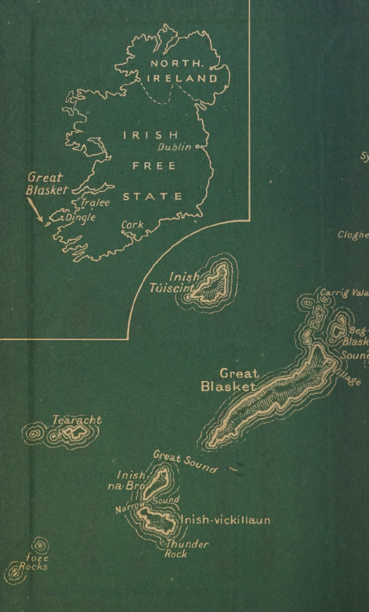

<html>
<body>



<p>TWENTY</p>
<p>YEARS</p>
<p>A-GROWING</p>
<p></p>
<p>Translated</p>
<p></p>
<p>from the original Irish</p>
<p>by</p>
<p>Moya Llewelyn Davies</p>
<p></p>
<p>and George Thomson</p>
<p></p>
<p>TWENTY YEARS</p>
<p>A-GROWING</p>
<p></p>
<p>By</p>
<p>MAURICE O’SULLIVAN</p>

<p>CONTENTS</p>

<a href="#Introd">Introductory Note v</a>

<p></p>
<a href="#Trans">Translators’ Preface Vii</a>

<p></p>
<p></p>
<a href="#dingle">I. In Dingle 3</a>

<p></p>

<a href="#first">II, My First Journey Home 18</a>


<a href="#island">III. The Island</a>


<a href="#hunt">IV. A Day’s Hunting 38</a>


<a href="#vent">V. Ventry Races 46</a>


<a href="#cave">VI. Pierce’s Cave 76</a>


<a href="#shaol">VII. A Shoal of Mackerel 81</a>


<a href="#Halloween">VIII. Halloween 89</a>


<a href="#whale">IX. The Whale 97</a>


<a href="#wake">X. The Wake 106</a>


<a href="#inish">XI. A Night in the Inish 122</a>


<a href="#war">XII. The War 141</a>


<a href="#ship">XIII. The Shipwreck 155</a>


<a href="#wand">XIV. The Wanderer 166</a>


<a href="#lobster">XV. The Lobster Season 186</a>


<a href="#match">XVI. Matchmaking 193</a>


<a href="#wedding">XVII The Wedding Day 204</a>


<a href="#amer">XVIII. An American Wake 219</a>


<a href="#strange">XIX. The Stranger 224</a>


<a href="#last">XX. My Last Journey to the Inish</a>


<a href="#leave">XXI. I Leave Home</a>


<a href="#east">XXII. From Dingle East</a>


<a href="#city">XXIII.The City of Dublin</a>


<a href="#civic">XXIV. The Civic Guard</a>


<a href="#conn">XXV. Connemara</a>

<a href="#conc">XXVI. Conclusion</a>


<p></p>
<p>With an Introductory Note by</p>
<p>E. M. Forster</p>
<p></p>
<h2 id="Introd">Introductory Note</h2>
<p></p>
<p>Tue best introduction to this autobiography is its own</p>
<p>first chapter. If the reader laughs at the schoolmistress</p>
<p>and the matrons, and is moved by the dream of the</p>
<p>butterfly inside the horse’s skull—then he is assured of</p>
<p>amusement and emotion to come. He is ready to go on</p>
<p>to Ventry Races, and to make the great journey from</p>
<p>Dingle east, where O’Connor and the girl were so unre-</p>
<p>liable. He is ready, furthermore, to make another jour-</p>
<p>ney: to steal ont on Hallowe'en and catch thrushes above</p>
<p>waves of the living and the dead, and see the Land of</p>
<p>the Young in the west, and hear the mother-seal saying</p>
<p>to the hunter, “If you are in luck you will leave this cove</p>
<p>in haste, for be it known to you that you will not easily</p>
<p>kill my young son.” All this—both the gaiety and the</p>
<p>magic—can be sampled in the opening chapter, and the</p>
<p>reader can decide for himself quickly, so that there is no</p>
<p>need to say to him “This book is good.”</p>
<p></p>
<p>But it is worth saying “This book is unique,” Lest he</p>
<p>forget what a very odd document he has got hold of.</p>
<p>He is about to read an account of neolithic civilization</p>
<p>from the inside. Synge and others have described it</p>
<p>from the outside, and very sympathetically, but I know</p>
<p>of no other instance where it has itself become vocal, and</p>
<p>addressed modernity. Nor is a wiseacre speaking for it;</p>
<p>we are entertained by a lively young man, who likes</p>
<p>dancing and the movies, and was smart at his lessons.</p>
<p>But he is able to keep our world in its place, and to</p>
<p></p>
<p>view it only from his own place, and his spirit never</p>
<p>Vv</p>
<p></p>
<p>abandons the stronghold to which, in the final chapter,</p>
<p>his feet will return. “When I returned home, the lamps</p>
<p>were being lit in the houses. I went in. My father and</p>
<p>grandfather were sitting on either side of the fire, my</p>
<p>grandfather smoking his old pipe.” With these words</p>
<p>the story closes, and it is as if a shutter descends, behind</p>
<p>which all three generations disappear, and their Island</p>
<p>with them.</p>
<p></p>
<p>‘The book is written in Irish, and the original is being</p>
<p>published in Dublin. As regards the translators, one of</p>
<p>them is in close and delicate touch with the instincts</p>
<p>of her country-side, the other, a scholar, teaches Greek</p>
<p>through the medium of Irish in the University of Gal-</p>
<p>way. I know the author, too. He is now in the Civic</p>
<p>Guard in Connemara, and though he is pleased that his</p>
<p>book should be translated, his main care is for the Irish</p>
<p>original, because it will be read on the Blasket. They</p>
<p>will appreciate it there more than we can, for whom the</p>
<p>wit and poetry must be veiled. On the other hand, we</p>
<p>are their superiors in astonishment. They cannot pos-</p>
<p>sibly be as much surprised as we are, for here is the egg</p>
<p>of a sea-bird—lovely, perfect, and laid this very morning.</p>
<p></p>
<p>E. M. Forster</p>
<h2 id="Trans">Translators’ Preface</h2>
<p></p>
<p>Tue Blasket Islands lie off the Kerry Coast, in the ex-</p>
<p>treme south-west corner of Ireland. The largest of them,</p>
<p>the only one now inhabited, is about five miles long, and</p>
<p>for the most part less than half a mile broad, rising to</p>
<p>not quite a thousand feet at its highest point—a treeless</p>
<p>ridge of bog and mountain pasture descending in the</p>
<p>west to a wind-swept headland of bare rock. The village</p>
<p>is huddled under the shelter of the hill at the eastern</p>
<p>end, nearest the mainland, where there is enough soil</p>
<p>to yield a scanty crop of potatoes and oats. There is no</p>
<p>harbour, and the only kind of boat in use is the curragh,</p>
<p>a canoe of wicker framework and canvas covering, light</p>
<p>enough for two men to carry on their backs. The distance</p>
<p>from the mainland, quay to quay, is three and a half</p>
<p>miles—an easy journey in good weather, but impossible</p>
<p>in bad. ‘The present population of the Island is about a</p>
<p>hundred and fifty. Before the European War it was two</p>
<p>hundred. The decrease is mainly due to emigration to</p>
<p>America. It is recorded that the population doubled</p>
<p>during the Great Famine (1840-50) when the starving</p>
<p>and evicted peasantry of the interior flocked to the coasts</p>
<p>in search of food.</p>
<p></p>
<p>The other islands, similarly featured but smaller and</p>
<p>even more exposed, lie to the west and north of the main</p>
<p>island. The most fertile of them, Inish-vick-ilaun, was</p>
<p>inhabited till the end of the Jast century, and one house</p>
<p>still stands, being used in the summer for the lobster-</p>
<p>fishing. Inish-na-Br6 is a rugged hog’s-back with a re-</p>
<p></p>
<p>vii</p>
<p>viii TRANSLATORS’ PREFACE</p>
<p></p>
<p>markable headland perforated by the sea, like the arches</p>
<p>of a Gothic cathedral. Tearacht, the most westerly, is a</p>
<p>pyramid of naked rock, about six hundred feet high, with</p>
<p>a lighthouse on the seaward side. Inish Tuiscirt, to the</p>
<p>north, has the remains of an oratory of Saint Brendan,</p>
<p>the patron saint of the district.</p>
<p></p>
<p>Some of the Islanders own cows and sheep, and the</p>
<p>pasture yields delicious mutton. Turf is plentiful at the</p>
<p>western end. The main industry is fishing—lobster in the</p>
<p>summer and mackerel in the winter—a dangerous and</p>
<p>precarious livelihood. The nearest market is the town of</p>
<p>Dingle, twelve miles east of Dunquin, the mainland</p>
<p>village opposite the Island.</p>
<p></p>
<p>The houses are of the usual west-of-Ireland type—loag,</p>
<p>low, and narrow. Many of them are dug into the steep</p>
<p>slope of the hill, for shelter from the wind. They con-</p>
<p>tain a living-room, with a floor of boards or beaten mud,</p>
<p>and an open hearth at the west end. The sleeping-room</p>
<p>is usually at the east end, but in some houses there is</p>
<p>another small room behind the hearth. There is a loft,</p>
<p>but no upper story, and when an Islander speaks of go-</p>
<p>ing up or down in the house, he means that he is going</p>
<p>towards or away from the hearth. The roof is of tarred</p>
<p>canvas, the same material which is used for covering the</p>
<p>curraghs. There are a number of spinning-wheels on</p>
<p>which the women spin their wool, but the old local dyes</p>
<p>are going out of use. There are no shops of any kind. The</p>
<p>nearest chapel is at Dunquin, where the men of the</p>
<p>Island go to hear Mass every Sunday when the sea is calm.</p>
<p></p>
<p>Only Irish is spoken and little English is known. Read-</p>
<p>ing is a habit only recently acquired and seldom</p>
<p>practised. The pastimes are singing, dancing, story-telling</p>
<p>and conversation. The literature, which has been pre-</p>
<p>served entirely by oral tradition, includes ancient legends,</p>
<p>TRANSLATORS’ PREFACE ix</p>
<p></p>
<p>some of them older than Beowulf, poems and songs dat-</p>
<p>ing from the seventeenth and eighteenth centuries, and</p>
<p>a wealth of folklore, still only partly collected. The peo-</p>
<p>ple are fond of poetry and music. The art of impromptu</p>
<p>verse coniposition in intricate metrical forms survived</p>
<p>within living memory, and in recent years they have</p>
<p>shown considerable skill in making and playing violins.</p>
<p>The dances are the hornpipe, jig, four-hand reel, various</p>
<p>country figures, and most popular of all, the “sets,” a</p>
<p>descendant of the old quadrille.</p>
<p></p>
<p>The language, like the life, is largely medieval—</p>
<p>vigorous, direct, rich in oaths and asseverations, and</p>
<p>delighting in neat and witty turns of phrase which are</p>
<p>largely lost in translation. In these respects it resembles</p>
<p>the speech of other peasantries, but it also possesses an</p>
<p>elegance and grace which is due to its peculiar history;</p>
<p>for, when the clan system on which Irish culture was</p>
<p>based finally broke down in the seventeenth century, the</p>
<p>poets and scholars were scattered among the common</p>
<p>people.</p>
<p></p>
<p>This book is the story of one of the Islanders, written</p>
<p>by himself for his own pleasure and for the entertain-</p>
<p>ment of his friends, without any thought of a wider</p>
<p>public. In the first part of the book he gives an account</p>
<p>of his childhood in the Island; in the second he goes on</p>
<p>to describe how he left his native place and went to</p>
<p>Dublin in order to join the Civic Guard, the new Irish</p>
<p>police force. It is the first translation into English of a</p>
<p>genuine account of the life of the Irish peasants written</p>
<p>by one of themselves, as distinct from what has been</p>
<p>written about them by the poets and dramatists of the</p>
<p>Anglo-Irish school.</p>
<p></p>
<p>A few words may be added about the translation. ‘The</p>
<p>English language, as commonly spoken in Ireland, differs</p>
<p>x TRANSLATORS’ PREFACE</p>
<p></p>
<p>considerably from standard English, and these differences</p>
<p>are mainly due to memories, conscious or unconscious,</p>
<p>of Irish speech. The new language has been twisted to</p>
<p>fit the moulds of thought and idiom peculiar to the old.</p>
<p>Hence we have freely used the Irish dialect of English</p>
<p>as being the nearest to our original, and in this respect</p>
<p>we are following the example of Synge, who of all writers</p>
<p>in English had the deepest understanding of the Irish-</p>
<p>speaking peasantry. But rich and highly coloured as this</p>
<p>English is, its range is less than that of Irish, and since</p>
<p>its literature is mainly in prose and entirely modern, it</p>
<p>lacks the stamp of an ancient poetical tradition which</p>
<p>is a marked feature of Irish. The range of vocabulary in</p>
<p>the translation is less than that of the original, and there</p>
<p>is not a word or phrase in the original which is not</p>
<p>current in ordinary conversation.</p>
<p></p>
<p>With regard to the spelling of proper names, we have</p>
<p>sought rather to facilitate the English reader than to be</p>
<p>consistent. Some Irish names have an English form,</p>
<p>others have not; and we have used one or the other,</p>
<p>whichever seemed the more convenient.</p>
<p></p>
<p>We have omitted some passages of the original.</p>
<p></p>
<p>Moya LLEwELYN DAVIES</p>
<p>GrorGE THOMSON</p>

<p></p>
<p>Note.—A is pronounced like aw in shawl, é like ay</p>
<p>in bay, i like ee in bee, u like oo in cool. The</p>
<p>Irish peasant is usually known among his own</p>
<p>people by his Christian name followed by that</p>
<p>of his father or mother, whichever is the more</p>
<p>notable character, sometimes by that of his</p>
<p>grandfather (like Tomas Owen Vaun). Nick-</p>
<p></p>
<p>Names are very common.</p>
<p>a aa Na GG Ga Ghana gla, ln hia, gin tna</p>
<p>A Nt</p>
<p></p>
<p>TWENTY</p>
<p>YEARS</p>
<p>A-GROWING</p>
<p></p>
<h2 id="dingle">I. In Dingle </h2>
<p></p>
<p>Turre is no doubt but youth is a fine thing though my</p>
<p>own is not over yet and wisdom comes with age.</p>
<p></p>
<p>Tam a boy who was born and bred in the Great Blasket,</p>
<p>a small truiy Gaelic island which lies north-west of the</p>
<p>coast of Kerry, where the storms of the sky and the wild</p>
<p>sea beat without ceasing from end to end of the year and</p>
<p>from generation to generation against the wrinkled rocks</p>
<p>which stand above the waves that wash in and out of the</p>
<p>coves where the seals make their homes.</p>
<p></p>
<p>I remember well, when I was four years old, I was in the</p>
<p>town of Dingle in the care of a stranger woman, because</p>
<p>I was only half a year old when my mother died, dear God</p>
<p>bless her soul and the souls of the dead. So there was no</p>
<p>one to take care of me. I had two brothers and two sisters,</p>
<p>but at that time they had little more sense than myself. So,</p>
<p>as I have said, my father sent me to Dingle to be cared for</p>
<p>by a woman there.</p>
<p></p>
<p>Very great indeed was the contro] that was over us, for</p>
<p>there were many others like me, and as everyone knows,</p>
<p>whenever there is a crowd of young children together they</p>
<p>do be troublesome and very noisy at times. We had a great</p>
<p>dislike for school, but that is not one man’s disease in my</p>
<p>opinion. There was teaching us as school mistress, a woman</p>
<p>who was as grey as a badger with two tusks of teeth hang-</p>
<p>ing down over her lip, and, if she wasn’t cross, it isn’t day</p>
<p>yet. She was the devil itself, or so I thought. Jc was many</p>
<p>a day I would be in terror when that look she had would</p>
<p>come over her face, a look that would go through you.</p>
<p></p>
<p></p>
<p>I remember the first day I went to school. Peg de Réiste</p>
<p>brought me, holding my hand, and it was with great</p>
<p>plamds + she coaxed me to go. “Oh,” she would say, “it is</p>
<p>to a nice place I will take you today.” “Are there any</p>
<p>sweets there?” ““There are and plenty and nice books full</p>
<p>of pictures.” She was for ever coaxing me that way until</p>
<p>I went in with her.</p>
<p></p>
<p>Shyly I sat on the bench alongside of Peg. There were</p>
<p>many, many children there making a power of noise.</p>
<p>“Where are the sweets, Peg?” said J, and I had hardly</p>
<p>said it when the mistress noticed me and beckoned me</p>
<p>to go up to her. “Go up, now,” says Peg, “she’s for giving</p>
<p>you the sweets.”</p>
<p></p>
<p>Well, I had a drowning man’s grip of Peg for fear</p>
<p>of the mistress. ‘‘Leave go of me,” said she. “Come up</p>
<p>with me,” said I. ‘Come on, then,” said she, getting up</p>
<p>and taking me by the hand.</p>
<p></p>
<p>Shamefaced I stood before the mistress. “Who are you</p>
<p>and what is your name?” “They call me Maurice.”</p>
<p>“Maurice what?” said she sourly. “Maurice,” said J again,</p>
<p>my voice trembling. “All nght,” said she.</p>
<p></p>
<p>She went to a cupboard and took out a big tin and</p>
<p>put it down before me. Then I saw a sight which put</p>
<p>gladness into my heart—sweets in the shape of a man, a</p>
<p>pig, a boat, a horse, and many another. I was in many</p>
<p>minds, not knowing which I would choose. When IJ had</p>
<p>taken my choice she gave me a book and put me sitting</p>
<p>on the bench again. “Be a good boy, now,” said she, “and</p>
<p>come to school every day.” “I will.” “You will surely,”</p>
<p>said she, leaving me and going up again to the table. So</p>
<p>there I sat contentedly looking at the book while I was</p>
<p>not forgetting to fill my mouth.</p>
<p></p>
<p>Soon, hearing a very pleasant sound, I lifted my head,</p>
<p></p>
<p>1Soft, coaxing talk.</p>
<p>IN DINGLE 5</p>
<p></p>
<p>and what would I see but a bell in the mistress’s hand</p>
<p>and she shaking it: “Playtime,” said she (in English).</p>
<p>And so out with us all together.</p>
<p></p>
<p>“What are we to do now, Peg? Is it home we are going?”</p>
<p></p>
<p>“Not at all, but half an hour’s ree-raa out here.”</p>
<p></p>
<p>(But one thing I must say before I go on with my story.</p>
<p>There was not a word of Irish in my mouth at that time,</p>
<p>only English entirely.)</p>
<p></p>
<p>When we were out in the field, the boys began kicking</p>
<p>a football and myself tried to be as good as another. But</p>
<p>faith, if so, I did not do well for long, for a big, long</p>
<p>gawk of a lad gave a kick to the ball and hit me neatly</p>
<p>in the face the way I fell on the flat of my back without a</p>
<p>spark of sight in my eyes or sense in my head. As I fell</p>
<p>J heard Peg crying that I was dead, and | remember no</p>
<p>more till I awoke inside the schoo] to see the boys and</p>
<p>girls all round me and the tears falling from Peg.</p>
<p></p>
<p>“Good boy!” said she, “sure nothing ails you. How are</p>
<p>you now?”</p>
<p></p>
<p>“T am finely.”</p>
<p></p>
<p>“Maybe you could eat an orange?” said the mistress.</p>
<p></p>
<p>She brought me a big one and soon my headache went</p>
<p>away, it is so easy to coax the young.</p>
<p></p>
<p>I was going to school every day from that out. But it</p>
<p>was not long before the sweets and the gentleness began</p>
<p>to grow cold. So I became disgusted with school—the</p>
<p>seven tasks of the mountain on me as I thought, when</p>
<p>I was carrying my bag of books, and obliged to learn this</p>
<p>and that. Before long it seemed to me there was nobody</p>
<p>in the world had a worse life than myself.</p>
<p></p>
<p>Near the school was the poorhouse, full of people, each</p>
<p>with his own affliction. There was one set of them we</p>
<p>were always pursuing—the blind men. Many a fine eve-</p>
<p>ning we went up to play games on them—games for our</p>
<p></p>
<p>own advantage. They used to be given supplies of sugar</p>
<p>done up neatly in bags and we would wait for the chance</p>
<p>to snatch them, which came easy since they were unable</p>
<p>to see us.</p>
<p></p>
<p>But the thief does not always prosper. One evening</p>
<p>we went up—five or six of us—and got a good haul, filling</p>
<p>our pockets, upon which we darted away, thinking to be</p>
<p>down in a ditch and swell ourselves out with the sugar.</p>
<p>But we had not gone far when we saw the matron coming</p>
<p>after us, a strap in her hand, the gate closed behind her,</p>
<p>and a poisonous haste on her.</p>
<p></p>
<p>“Och, God be with us, boys,” said I, “we are done for</p>
<p>now or never, what will we do at all?”</p>
<p></p>
<p>“Faith,” said Mickil Dick, “better a good run than a</p>
<p>bad standing.”</p>
<p></p>
<p>“But where shall we turn our faces?” said I.</p>
<p></p>
<p>“To the Hill of the Cairn,” said Mickil.</p>
<p></p>
<p>Off we went, one to the east, another to the west, the</p>
<p>matron pursuing us. It is then there was a roaring among</p>
<p>the boys who had no substance in them, getting it heavy</p>
<p>from the strap whenever she got hold of them.</p>
<p></p>
<p>I was lithe of limb myself at that time and I was not</p>
<p>long making the top of the hill. As soon as I was safe</p>
<p>I stopped to look back, and who should I see coming up</p>
<p>the hill but Mickil, panting for breath. When I got my</p>
<p>own breath back again I asked him where were the</p>
<p>others. I got no answer. He sat down on a tuft of grass,</p>
<p>stretched himself out his full length, and tightly closed</p>
<p>his eyes. My heart leapt. I jumped towards him. There</p>
<p>was not a puff in him. I screamed and caught him by</p>
<p>the waist, but I couldn’t get a stir or a move out of him.</p>
<p>I was too weak. At last I seized him by the two feet and</p>
<p>dragged him after me down the slope of the hill to a</p>
<p>boghole about five yards below. There I baptized him</p>
<p>IN DINGLE 7</p>
<p></p>
<p>well but that was all I got for my pains. Ne’er a breath</p>
<p>was coming into him. Then I thought of thrusting his</p>
<p>head into the water, and when I had given him a good</p>
<p>dipping he began to come round. I pulled him out again,</p>
<p>white foam on his mouth, and went on beating him tll</p>
<p>he opened his two eyes.</p>
<p></p>
<p>“Come safe, Mickil,” said I. ““Where am I?” said he.</p>
<p>“You are in a good place, my boy.” But even then for</p>
<p>half an hour he was as dumb as a baker.</p>
<p></p>
<p>We remained on the top of the hill till darkness came,</p>
<p>for we were afraid to start for home in the daylight in</p>
<p>case the matron would see us. But what good was that?</p>
<p>There was a thrashing waiting for us whenever we would</p>
<p>go home, because it was the rule of the place to be in</p>
<p>bed by six o'clock.</p>
<p></p>
<p>“Mickil,” said I, “it is going from bad to worse for</p>
<p>us to stay here. Let us be going.”</p>
<p></p>
<p>Off we went, slowly and reluctantly, till we strolled</p>
<p>in through the door. I was seized at once by the hair and</p>
<p>Mickil the same. The clothes were stripped off us. Blow</p>
<p>after blow fell till they had us half dead, and then not</p>
<p>a bite nor a sup, but threw us into the bed. There was</p>
<p>no sleep for us that night for the aches and pains dart-</p>
<p>ing through us.</p>
<p></p>
<p>Next morning we set out slow and heavy-hearted for</p>
<p>school.</p>
<p></p>
<p>“I wonder what would you say for us to go mitching?”</p>
<p>said Mickil.</p>
<p></p>
<p>J leaned my back against the wall, thinking. While I</p>
<p>was thinking, what did I see up through the passage but</p>
<p>a man and two women looking at me and smiling. I</p>
<p>wondered why they were not looking at Mickil. They</p>
<p>came straight towards me, but I was afraid of them and</p>
<p>began, to run. As I ran I could hear one of the women</p>
<p></p>
<p>calling me by name. I ran on till I lay down in a hole</p>
<p>behind a gate where I found a way of peeping at them</p>
<p>through a chink.</p>
<p></p>
<p>I could see Mickil there, and they talking to him, and</p>
<p>I was not long peeping when I saw them giving him</p>
<p>an apple and orange. With that I didn’t give a second</p>
<p>glance, but back I ran as hard as I could till 1 was within</p>
<p>a yard of them.</p>
<p></p>
<p>One of the women came over to me. “Why did you</p>
<p>run away just now?”</p>
<p></p>
<p>“Nothing,” said I bashfully.</p>
<p></p>
<p>“Do you know who I amp”</p>
<p></p>
<p>“IT do not.”</p>
<p></p>
<p>“Iam your aunt,” says she, taking me up in her arms</p>
<p>and kissing me. The other woman did the same. “That</p>
<p>is another aunt, too,” said the first woman, “and this is</p>
<p>your uncle,” says she, pointing to the man who was</p>
<p>standing behind us.</p>
<p></p>
<p>With that the man spoke out in Irish for he had no</p>
<p>knowledge of English, or, if he had, he did not let on.</p>
<p></p>
<p>“What sort of talk has that man?” said I to the woman</p>
<p>who had me in her arms.</p>
<p></p>
<p>“That's Irish.”</p>
<p></p>
<p>“What's Irish?”</p>
<p></p>
<p>“Oh, wait now,” says she, “till you go home, that is</p>
<p>the time you will have the Irish.”</p>
<p></p>
<p>“Where is my home? We have no Irish at all im this</p>
<p>home here.”</p>
<p></p>
<p>“This is not your home, Maurice, but the Blasket.”</p>
<p></p>
<p>But I was as blind to what she said about the Blasket</p>
<p>as the herring leaping in the Bay of Dingle.</p>
<p></p>
<p>“Your father is for coming out the next day to take</p>
<p>you home. Would you like that, Maurice?”</p>
<p></p>
<p>“Who is my father?”</p>
<p>IN DINGLE 9</p>
<p></p>
<p>“Isn’t it often your father was talking to you? You</p>
<p>should have known him long ago.”</p>
<p></p>
<p>“T don’t know which of the men he is,” said I, “for</p>
<p>many come.”</p>
<p></p>
<p>At that she gave a great laugh. “Ah, musha? youth</p>
<p>is a queer thing,” said she to the other woman.</p>
<p></p>
<p>I began putting questions to her about the Blasket</p>
<p>now that my courage was coming back to me, and feel-</p>
<p>ing well contented with my fill of the bag of sweets, the</p>
<p>apples and the oranges, and she answered every question</p>
<p>readily.</p>
<p></p>
<p>“And has my father sweets at home?” said I, after</p>
<p>devouring a fine apple.</p>
<p></p>
<p>“Oh, he has indeed, and everything else.”</p>
<p></p>
<p>After a while she let me down. Then they all kissed</p>
<p>me, gave a farewell and a blessing to the two of us, and</p>
<p>went away.</p>
<p></p>
<p>My uncle turned back and came up to me. He began</p>
<p>talking, though neither of us could understand him.</p>
<p>Then he let out a great rush of talk, and another rush</p>
<p>after it. I looked at Mickil, Mickil looked at me, we</p>
<p>making great wonder of him. When he was geing, he put</p>
<p>his hand in his pocket and gave me half a crown, and a</p>
<p>shilling to Mickil.</p>
<p></p>
<p>“I never saw a penny as bright as that,” said Mickil;</p>
<p>“where is yours?”</p>
<p></p>
<p>“Look,” said I, “mine is bigger.”</p>
<p></p>
<p>“I don’t know what we had better buy with them.”</p>
<p></p>
<p>“Apples and sweets, and it is the fine life we will have</p>
<p>with them. But oh, Mickil, we are forgetttng. What about</p>
<p>school! The devil take it, let us make haste!”</p>
<p></p>
<p>Off we ran as hard as we could until we reached the</p>
<p>school. In we hurried, panting. We were an hour late.</p>
<p></p>
<p>1 Indeed.</p>
<p></p>
<p>We thought, my son, we had our feet clear and we were</p>
<p>about to sit down on the bench at our ease when the</p>
<p>mistress called us. Heavily and unwillingly we went up</p>
<p>and stood before her. She was in a posture, staring at us</p>
<p>from under her brows. At last she spoke. “Where were</p>
<p>you? What kept you so late?” said she sourly.</p>
<p></p>
<p>I looked at Mickil. His lips were pouting, getting ready</p>
<p>to cry.</p>
<p></p>
<p>“Have done with your snivelling,” said she angrily,</p>
<p>“and answer my question.”</p>
<p></p>
<p>“We weren’t in any place,” said I, “but when we were</p>
<p>coming to school we met some kinsfolk of mine and they</p>
<p>kept us talking.”</p>
<p></p>
<p>“Isn’t it a fine excuse you make up! Go out now and</p>
<p>cut a good fat rod and bring it in to me, my good boy,</p>
<p>the way I won’t hear any more of your blather.”</p>
<p></p>
<p>I went out and cut the worst rod I could find and</p>
<p>brought it in to her.</p>
<p></p>
<p>“Stretch out your hand.” I did; and J got it hard. “Now</p>
<p>the other hand.” I got the same again. Three blows on</p>
<p>each hand she gave me before she was done, and Mickil</p>
<p>the same. I winked at him not to cry so as to give her</p>
<p>no satisfaction. Then she took us to the far end of the</p>
<p>school. ‘There were two posts there, coming down from</p>
<p>the roof to the floor, on which we were accustomed to</p>
<p>drill. She tied one of us to each post. But, if so, we were</p>
<p>well content, as no lessons were being put on us and</p>
<p>that is what we wanted.</p>
<p></p>
<p>We were there about half an hour when there was a</p>
<p>knock on the door. The mistress jumped from her chair</p>
<p>and began walking to and fro without any sense. We</p>
<p>were tied too fast for her to release us in a hurry. The</p>
<p>knock was made again sharply. She could wait no longer</p>
<p>to open the door. Who was there but the parish priest!</p>
<p>IN DINGLE aM</p>
<p></p>
<p>“Tt is with us now, my boy,” I whispered to Mickil.</p>
<p>“You will soon see sport.”</p>
<p></p>
<p>The priest walked in, a tin of sweets in his hand as</p>
<p>was the way with him, and he began talking to the chil-</p>
<p>dren. The mistress was as white as death. “The devil</p>
<p>take you,” said Mickil, “do you see the look on the</p>
<p>mistress?” It is then we had the bright smiles.</p>
<p></p>
<p>It wasn’t long before the priest was asking where were</p>
<p>Mickil and Maurice.</p>
<p></p>
<p>“Here we are, father,” said we with one voice.</p>
<p></p>
<p>He came over to us looking knives. “Oh, what is the</p>
<p>meaning of this?” said he. ‘““Who tied you here?”</p>
<p></p>
<p>“The mistress, father,”’ said I.</p>
<p></p>
<p>“Why?”</p>
<p></p>
<p>“I will tell you, father. When Mickil and I were com-</p>
<p>ing to school we met some kinsfolk of mine and they kept</p>
<p>us talking, the way we were an hour late.”</p>
<p></p>
<p>He beckoned to the mistress to come down. “What is</p>
<p>this you are after doing to the poor little children?”</p>
<p></p>
<p>“Oh, father, I beg your pardon, I was for putting a</p>
<p>little fear into them.”</p>
<p></p>
<p>“Look, father,” said I, showing him my hands, which</p>
<p>were blistered with the blows.</p>
<p></p>
<p>“Oh, my shame,” said the priest. Then turning to the</p>
<p>mistress: “I will make short delay,” said he, “of putting</p>
<p>you out of the school if you go on with this work. Untie</p>
<p>them at once, and if I find that you set hands on them</p>
<p>again you will have news to tell.”</p>
<p></p>
<p>That was the first time I ever saw anger on a priest and</p>
<p>I said to myself that it comes on them as on any other</p>
<p>man. The end of it was that we had the evening under</p>
<p>the hedge, for we got the rest of the day off.</p>
<p></p>
<p>I remember another fine day long afterward when I</p>
<p>was on my way to school. There was a bell over the hall</p>
<p></p>
<p>door, a bell to let the people know what would be going</p>
<p>on—Mass, Mary’s Crown,} or maybe dinner or supper for</p>
<p>the poor people. It was not to be sounded except when</p>
<p>there was need and there was a chain hanging down</p>
<p>to pull it.</p>
<p></p>
<p>It happened that I had not much knowledge of it at</p>
<p>that time, and so I took hold of the chain and began to</p>
<p>play with it. I gave it a gentle pull which sent music all</p>
<p>over the place. I liked it well, so I gave it another and a</p>
<p>better pull which sent out the music louder still. I had</p>
<p>five good pulls at the chain.</p>
<p></p>
<p>In a minute there wasn’t an old person, not a cripple</p>
<p>nor a sick person, but they were falling over each other's</p>
<p>heels to the hall, a crowd from below, another crowd</p>
<p>from above, a man from the east, another from the west.</p>
<p>Young though I was, I realized my mistake.</p>
<p></p>
<p>I went among them. I could hear the old people dis-</p>
<p>cussing excitedly together. “It is no dinner, anyway,” one</p>
<p>would say to another. Some of them made for the chapel,</p>
<p>the rest following. I let on nothing. If I were found out,</p>
<p>said I to myself, it is likely | would be tied to the post</p>
<p>again.</p>
<p></p>
<p>By this time the hall was full of chatter, gibberish, and</p>
<p>confusion. Looking back, whom should I see but the</p>
<p>mistress, her brood in her wake, making for the chapel.</p>
<p>T let on to be as surprised as anyone. She beckoned me to</p>
<p>her. “What is it, Maurice?”</p>
<p></p>
<p>“T don’t know in the world, mistress,” said I.</p>
<p></p>
<p>She went in, we behind her. We went down on our</p>
<p>knees. The chapel was full from end to end. But there</p>
<p>was no priest coming, and well I knew that no priest</p>
<p>would come.</p>
<p></p>
<p>After a while a nun came in and spoke to the con-</p>
<p></p>
<p>1The Rosary.</p>
<p>IN DINGLE 1g</p>
<p></p>
<p>gregation. “What brought ye here,” said she, “and who</p>
<p>set the bell going?”</p>
<p></p>
<p>With that the mistress got up and said it was a strange</p>
<p>business for any man to do such a thing, especially to</p>
<p>take old people who could not walk from their corners</p>
<p>and to put the day astray on herself. When she had</p>
<p>finished speaking, the nun ordered the people to depart.</p>
<p>A cold sweat was coming out on me by this time, and</p>
<p>my heart leaping. Whenever anyone looked at me, it</p>
<p>seemed to me he could tell I was guilty.</p>
<p></p>
<p>In the end we got the rest of the day off on account</p>
<p>of it.</p>
<p></p>
<p>One winter’s night, very wild, with the patter of snow</p>
<p>on the window-panes, the wind blowing with a lonely</p>
<p>whistle among the trees, an ass braying far away with the</p>
<p>coldness of the night, and myself stretched out on the</p>
<p>flat of my back in the fine cosy bed, I was thinking and</p>
<p>ever thinking of the Blasket. When would the day come</p>
<p>when I would be a man, free from the control of the</p>
<p>matrons, no school to sicken me and the mistress beating</p>
<p>me no more? Then the driving snow against the window-</p>
<p>pane would put the Island out of my head, and I would</p>
<p>hear with pity the poor ass braying in the distance. Oh,</p>
<p>if I were where you are now, my assaleen, said I to my-</p>
<p>self, isn’t it I would be terrified of the pookal +</p>
<p></p>
<p>At that moment, I heard a knock at the door.</p>
<p></p>
<p>“Who's there?” said the matron.</p>
<p></p>
<p>“Let me in,” said a voice plaintively.</p>
<p></p>
<p>As soon as the door was opened a strapping, middle-</p>
<p>aged woman stumbled into the room, two children at</p>
<p>her feet, all of them in rags, looking as if they had walked</p>
<p>far, water dripping from them from head to heel.</p>
<p></p>
<p>“God save all here,” said she,</p>
<p></p>
<p>1 Hobgoblin.</p>
<p></p>
<p>“God and Mary save you,” said the matron.</p>
<p></p>
<p>“For the love of God, can you find room for us within</p>
<p>till morning from the cold of the night?”</p>
<p></p>
<p>“You will have it and welcome.”</p>
<p></p>
<p>Three chairs were set for them. I kept watching the</p>
<p>woman. Tea was made and they sat in to the table. There</p>
<p>was not another word out of her, but she kept giving a</p>
<p>side glance at the door like someone who had committed</p>
<p>a great crime.</p>
<p></p>
<p>‘They had only taken a couple of bites when there came</p>
<p>another Joud knock. The matron ran to the door.</p>
<p></p>
<p>“Who's there?”</p>
<p></p>
<p>“Constabulary,” said a voice outside, answering her</p>
<p>at once.</p>
<p></p>
<p>At that the poor woman jumped up from the table.</p>
<p></p>
<p>“Oh, God save my soul,” she cried, ‘they have me.”</p>
<p></p>
<p>Two constables leapt in—fine men, clean above six</p>
<p>feet high and as straight as a candle, a wild look on them.</p>
<p>Anyone could tell they were in pursuit of the poor</p>
<p>woman.</p>
<p></p>
<p>“What brought you in here?” said one of them to her</p>
<p>angrily.</p>
<p></p>
<p>She made no answer. She was trembling hand and foot.</p>
<p></p>
<p>“I charge you with breaking the panes in the chapel</p>
<p>to make your way in,” said he in a loud, rough voice.</p>
<p></p>
<p>Then the constables caught her by the hands and led</p>
<p>her away.</p>
<p></p>
<p>All this time I was watching them and IJ began think-</p>
<p>ing again, as I listened to her going away from the house</p>
<p>shouting and crying, that it was a queer world—a full-</p>
<p>grown woman like her to be under control the same as</p>
<p>myself. I could still hear an odd cry from her now and</p>
<p>again. As she went farther away, the shouting grew weaker</p>
<p>till I fell into a heavy slumber.</p>
<p>IN DINGLE 15</p>
<p></p>
<p>Before long I was dreaming that Mickil Dick and I</p>
<p>were walking through a fine green meadow, gathering</p>
<p>flowers. When we had gathered our fill of them, we sat</p>
<p>down, talking of school and brilla-bralla,! as is the habit</p>
<p>of children.</p>
<p></p>
<p>After a while it seemed that Mickil fell asleep. I was</p>
<p>looking at him, he snoring fine and easy. While I sat</p>
<p>thinking what a strange thing was that same sleep, what</p>
<p>would I see come out of his mouth but a pretty white</p>
<p>butterfly. It began to walk down over his body. I stopped</p>
<p>and reflected that it was a queer thing to come out of</p>
<p>his mouth. Down went the butterfly through the meadow,</p>
<p>I after it, ever and ever, till it came to an iron gate. It</p>
<p>began to climb the bars of the gate, from bar to bar,</p>
<p>slowly and easily, I watching. When it came to the top</p>
<p>of the gate, down it went on the other side. I stood watch-</p>
<p>ing every turn it was taking. It came down into another</p>
<p>meadow where there was an old skull of a horse which</p>
<p>looked as if it had been there for years. In went the</p>
<p>butterfly through the holes of the eyes, I still watching</p>
<p>intently.</p>
<p></p>
<p>It must have been five minutes before I saw it coming</p>
<p>out again through the mouth of the skull. Back it came</p>
<p>to the gate, up each bar and down the other side, just</p>
<p>as it had done before, then up through the meadow, [</p>
<p>following it ever and ever till it went back into Mickil’s</p>
<p>mouth.</p>
<p></p>
<p>At that moment he awoke.</p>
<p></p>
<p>“Where am I?” said he looking round.</p>
<p></p>
<p>“Don’t you know the place?” said I, not letting on to</p>
<p>him yet about the butterfly.</p>
<p></p>
<p>“Oh, Maurice,” said he, “sit down till I tell you the</p>
<p>fine dream I am after having. Would you believe it, I</p>
<p></p>
<p>1 Childish nonsense.</p>
<p></p>
<p>dreamt we went astray on each other when we were</p>
<p>gathering the flowers, and that I walked on for a long,</p>
<p>long way till I came to some railway tracks which crossed</p>
<p>each other like the threads of a stocking. I didn’t know</p>
<p>where in the world I was. I kept shouting and calling</p>
<p>to you, but that was all the good I got out of it. When I|</p>
<p>came to the end of the railway line, I saw a big bright</p>
<p>house. I went up to it. There was a big round doorway</p>
<p>with no door in it. I stopped and looked. God save my</p>
<p>soul, said I, what place is this? Shall I go inside? Oh, there</p>
<p>is not a lie in what I am saying, Maurice.”</p>
<p></p>
<p>“TY believe you well,” said I. “Go on with your story.”</p>
<p></p>
<p>“Well, in I went. But, if so, there was no one alive or</p>
<p>dead to be seen. I was passing from room to room, but</p>
<p>upon my word, Maurice, my fill of fear was coming</p>
<p>over me.”</p>
<p></p>
<p>“Tt was no wonder for you.”</p>
<p></p>
<p>“Well, faith, I thought I was going astray in the rooms</p>
<p>and that I would never be able to find the way out. 1</p>
<p>was groping my way, ever and ever, till at last I reached</p>
<p>the doorway, and, the devil if I didn’t come back again</p>
<p>over the same railway tracks, and just as I found myself</p>
<p>in the meadow again, I awoke.”</p>
<p></p>
<p>“Safe be your storyteller,” + said I. “It seems,” I said,</p>
<p>looking up at the sun, “when a man dreams, a white</p>
<p>butterfly does be after coming out of his mouth and</p>
<p>walking away; and when it comes back again, it is then</p>
<p>he awakes,”</p>
<p></p>
<p>“Why do you say that?” says Mickil.</p>
<p></p>
<p>“Because I saw it coming out of your own mouth</p>
<p>when you were asleep, and it walked down through the</p>
<p>meadow, up through that gate below, and from there</p>
<p>into the old skull of a horse in the field beyond. Out it</p>
<p></p>
<p>1A blessing at the end of a story.</p>
<p>IN DINGLE 17</p>
<p></p>
<p>came again, up through the same place, and back into</p>
<p>your mouth. It was then you awoke, and as sure as you</p>
<p>are alive that was the big house you were in.”</p>
<p></p>
<p>At that moment I was awakened by a shout of laughter.</p>
<p>There was Mickil beside me, bursting his sides to hear</p>
<p>the way I was talking in my sleep.</p>
<p></p>
<p>We got up, made ready for school, and went away.</p>
<p></p>
<p>And I spent that day without learning anything but</p>
<p></p>
<p>_telling my dream to Mickil.</p>
<h2 id="first">II, My First Journey Home</h2>
<p></p>
<p>T REMEMBER a day in July, in the year 1911. I wasn’t long</p>
<p>in school when a lad came in and spoke to the mistress,</p>
<p>saying I was wanted by someone in the hall.</p>
<p></p>
<p>On going out whom did I see but my father, my uncle,</p>
<p>and my two aunts. My aunt ran towards me and without</p>
<p>saying a word she took me in her arms and kissed me. My</p>
<p>other aunt did the same.</p>
<p></p>
<p>“Would you like to go home with me today?” said my</p>
<p>father.</p>
<p></p>
<p>“I would indeed,” said I, my heart snatching at it.</p>
<p>“What sort of place is it?”</p>
<p></p>
<p>“Oh, a fine nice place.”</p>
<p></p>
<p>“Will we be going now?”</p>
<p></p>
<p>“If we were ready, as soon as we have eaten our dinner,</p>
<p>we will be moving in the name of God.”</p>
<p></p>
<p>“I will go in now so,” said I, “and say good-bye to</p>
<p>Mickil.”</p>
<p></p>
<p>An egg would not have broken under my feet with the</p>
<p>lightness and gladness in my heart. I stretched out my</p>
<p>hand. “Good-bye, Mickil,” said I, “I am going home</p>
<p>today, and I hope I shall see you again in health and</p>
<p>happiness.”</p>
<p></p>
<p>“The same to you,” said he, his tears falling.</p>
<p></p>
<p>When I turned to speak to the mistress, I noticed that</p>
<p>her two eyes were in lumps. It is not much good to speak</p>
<p>to yourself, I thought, but I went up and spoke to her</p>
<p>nicely. “Iam going home today,” said 1.</p>
<p></p>
<p>MY FIRST JOURNEY HOME . 19</p>
<p></p>
<p>“What is that you are saying?” said she, jumping up</p>
<p>angrily.</p>
<p></p>
<p>“I am going home today,” I repeated softly.</p>
<p></p>
<p>“Who came for you?”</p>
<p></p>
<p>“My father.”</p>
<p></p>
<p>“Where is he?”</p>
<p></p>
<p>“He is outside.”</p>
<p></p>
<p>She said no more but went out, I following her, till we</p>
<p>reached the place where my father was. She gave him a</p>
<p>thousand welcomes and spoke gently at first; but looking</p>
<p>at her I could see that she had no good intentions. It was</p>
<p>not long before she spoke her mind.</p>
<p></p>
<p>“Arra, musha, you ought to know what you are doing,”</p>
<p>said she, ‘‘taking the child home when he is just learning</p>
<p>his scholarship, and if you left him here he would have</p>
<p>a livelihood for ever.”</p>
<p></p>
<p>“Och, my pity for your head,” replied my father, “I</p>
<p>don’t know what livelihood he would get but only to let</p>
<p>him follow his nose in the end of all.”</p>
<p></p>
<p>“Well, Shaun,” said she, “I always thought you had</p>
<p>some sense until today, and you to do such a thing to the</p>
<p>poor boy. In the first place he will lose his English, and</p>
<p>so he will be a fool when he grows up a stripling, if he</p>
<p>lives so long. Where will he go, and how will he get work</p>
<p>without the English?”</p>
<p></p>
<p>“Isn't it better still for him to have the two languages?”</p>
<p>said my father. “And another thing, you don’t know what</p>
<p>way will Ireland turn out yet. Maybe the foreign tongue</p>
<p>will go under foot,” said he with a laugh.</p>
<p></p>
<p>“Och,” said she, “the way with you is, live horse and</p>
<p>you will get grass.”</p>
<p></p>
<p>“That is the thing I was going to say myself referring</p>
<p>to the child, for that will be the way with him. But it is</p>
<p>no good spending the day so. Come along,” said he to me.</p>
<p></p>
<p>We gave the mistress a farewell and a blessing and de-</p>
<p>parted.</p>
<p></p>
<p>“We must go up to the Institution now,” said my</p>
<p>father, “to dress you up, for I have bought you a nice</p>
<p>suit of clothes.”</p>
<p></p>
<p>When I heard that I was so delighted it seemed as if</p>
<p>there was no one in the world but myself, especially as I</p>
<p>had never worn trousers yet. Wouldn’t it be a great</p>
<p>change for me in another half-hour! I a grown man,</p>
<p>leaving behind the distress of the world and the oppres-</p>
<p>sion of the matrons!</p>
<p></p>
<p>On our way up the sun was shining. It was very hot,</p>
<p>not a cloud in the sky, the birds singing sweetly in the</p>
<p>trees. Indeed, little bird, said I in my own mind, there</p>
<p>was a time when I thought I could never be so happy and</p>
<p>contented as you.</p>
<p></p>
<p>“I think,” said my father, “you are sorry to leave.”</p>
<p></p>
<p>“Sorry!” said I. “Indeed I am not, but in a hurry to put</p>
<p>on the trousers and to see my native village.”</p>
<p></p>
<p>A nun was standing before us in the doorway. She gave</p>
<p>my father a welcome and questioned him about me kindly</p>
<p>and courteously. When she had left us, I saw a parcel on</p>
<p>the table and I thought at once of the new suit. I kept</p>
<p>watching until my father opened it. He took out a pair</p>
<p>of breeches and a jacket, then a shirt, a collar, a cap,</p>
<p>slippers and a pair of black stockings.</p>
<p></p>
<p>“Now,” said he, “cast off from you the child’s clothes.”</p>
<p></p>
<p>When I was ready, my father looked at me laughing.</p>
<p>“Faith, you are a grown man, God bless you. Turn round</p>
<p>till I see the back. They fit you as well as if the tailor had</p>
<p>made them. Wait till I get you the looking-glass. Look</p>
<p>at yourself now,” said he.</p>
<p></p>
<p>When I saw the form in which I was, all thought of</p>
<p>MY FIRST JOURNEY HOME 21</p>
<p></p>
<p>Mickil and of everything else went out of my mind. “Oh,</p>
<p>dad,” said I, “J am a great sport for fineness.”</p>
<p></p>
<p>Out we went and down the road again, and before long</p>
<p>I struck up a whistling tune, every step as long as my</p>
<p>father’s the way people would know I was a man.</p>
<p></p>
<p>In a little while we met my two aunts. They tore me</p>
<p>asunder with kisses, for women are the very devil for</p>
<p>plamas, so that I did not like to meet them at all. Why</p>
<p>wouldn’t they take it fine and soft like a man? Not at all,</p>
<p>they must be fawning on you every time they come across</p>
<p>you.</p>
<p></p>
<p>When my aunts were satisfied, each of them put a half</p>
<p>crown in my pocket, with a good deal more I had got</p>
<p>from others, and now I had my two hands down in my</p>
<p>pockets, making music out of the coins with my fingers.</p>
<p>It was a custom in the district, when a boy was wearing</p>
<p>his first suit, for him to go from house to house through</p>
<p>the village, and it is he would be puffed up with pride</p>
<p>coming home in the evening with all the money he was</p>
<p>after getting during the day.</p>
<p></p>
<p>We were soon in the town, the three in front of me</p>
<p>and I behind, looking at myself and taking a good, long</p>
<p>stride to give myself the look of a man. We went into the</p>
<p>shop of Martin Kane in the big street.</p>
<p></p>
<p>“God bless your lives,” said Martin.</p>
<p></p>
<p>“Long may you live,” said my aunt.</p>
<p></p>
<p>“Who is the lad along with your”</p>
<p></p>
<p>“Tt is a son of mine,” said my father.</p>
<p></p>
<p>“I would never have known him. Do you like to be</p>
<p>going to the Blasket?” said he to me.</p>
<p></p>
<p>“I do, indeed.”</p>
<p></p>
<p>“Upon my word,” said Martin, “the day will come</p>
<p>when you will turn your back on the place, my boy.”</p>
<p></p>
<p>“Tt will never come,” said I.</p>
<p></p>
<p>“By my arm,” said Martin, “if you take after your</p>
<p>grandfather, I am doubting you will never leave it.</p>
<p>Maybe you would make a good fisherman yet. But come</p>
<p>inside; I dare say you are hungry.”</p>
<p></p>
<p>We sat in to the table and they began conversing in</p>
<p>Irish. I sat listening to them shyly, like a dog listening to</p>
<p>music, but I could not make any sense out of it, I slipped</p>
<p>across to my aunt and gave her a nudge in the back.</p>
<p>“What sort of talk is that going on between my father</p>
<p>and the other man?” said I.</p>
<p></p>
<p>“That's Irish, astér +,” said she, putting her arms round</p>
<p>me and kissing me.</p>
<p></p>
<p>I would rather the frost than that to be done to me.</p>
<p>When I got myself free of her I slunk away to the door,</p>
<p>where I watched the people passing up and down, think-</p>
<p>ing still of the silly ways of women that you can’t speak</p>
<p>to them without their leaping at you.</p>
<p></p>
<p>My father, uncle, and Martin were now pretty merry</p>
<p>with the drink. “Wait here till I get a car,” said my</p>
<p>father. “I won’t be long,”</p>
<p></p>
<p>In half an hour he came back with it. We were ready</p>
<p>waiting, and I longing for the road in order to see the</p>
<p>country, for I had no knowledge of it, and so my father</p>
<p>was giving me the name of every place. Before long I</p>
<p>could see the sea, ever and ever, till we came to Slea Head.</p>
<p></p>
<p>“Now, Maurice, see your native place!” said my father,</p>
<p>stretching out his hand north-west to a small island which</p>
<p>had been torn out from the mainland. I could not speak:</p>
<p>a lump came in my throat when I saw the Island.</p>
<p></p>
<p>“But how can the horse get in there?” said I at last.</p>
<p></p>
<p>“We will go in with a curragh 2,” said my father.</p>
<p></p>
<p>1 My treasure.</p>
<p>2A canoe of wicker covered with canvas and tarred.</p>
<p>MY FIRST JOURNEY HOME 23</p>
<p></p>
<p>“What sort of a thing is a curragh?” said I.</p>
<p></p>
<p>I stopped questioning, and went on thinking and</p>
<p>looking out. I saw little white houses huddled together in</p>
<p>the middle of the Island, a great wild hill straight to the</p>
<p>west with no more houses to be seen, only a tower on the</p>
<p>peak of the hill and the hillside white with sheep. I did</p>
<p>not like the look of it. I think, said I to myself, it is not a</p>
<p>good place. While those thoughts were passing through</p>
<p>my mind, the car stopped, the people got out, and my</p>
<p>father lifted me down.</p>
<p></p>
<p>“Where are we going now?” said I.</p>
<p></p>
<p>It was a week-day, and, as soon as we reached the top</p>
<p>of the cliff, the King of the Island came up with his post-</p>
<p>bag on his back. He spoke to my father, but not a word</p>
<p>could [ understand. There were many others round the</p>
<p>place and they all with their own talk. I don’t know in</p>
<p>the world, said I in my own mind, will the day ever come</p>
<p>when I will be able to understand them.</p>
<p></p>
<p>The King turned to me. ‘‘Musha, how are you?” said</p>
<p>he, stretching out his hand.</p>
<p></p>
<p>I looked at him—a fine, courteous, mannerly, well-</p>
<p>favoured man.</p>
<p></p>
<p>“Thank you very much,” said I (in English).</p>
<p></p>
<p>“The devil,” said he. “I think you have no understand-</p>
<p>ing of the Irish?”</p>
<p></p>
<p>“T have not,” said I.</p>
<p></p>
<p>But he himself had the two languages, fluent and vig-</p>
<p>orous. “How does it please you to be going into the</p>
<p>Island?” he asked me.</p>
<p></p>
<p>“IT don’t know,” said I. “It does not look too nice alto-</p>
<p>gether.”</p>
<p></p>
<p>“Upon my word, Shaun,” said the King, turning to</p>
<p>my father, “it is time for us to be starting in.” And he</p>
<p>began to move down.</p>
<p></p>
<p>I was watching the white crests on the sea below. A</p>
<p>good gale of wind was blowing from the south-west. We</p>
<p>moved down through a great cliff, a rough, narrow little</p>
<p>path before us. When I came in sight of the quay, what</p>
<p>did I sce but twenty black beetles twice as big as a cowl</p>
<p></p>
<p>“Oh, dad,” said I, ‘‘are those beetles dangerous?”</p>
<p></p>
<p>The King gave a big, hearty laugh which took an echo</p>
<p>out of the cliff, for he was a fine strong man with a voice</p>
<p>without any hoarseness.</p>
<p></p>
<p>“Indeed, my boy,” said he, “‘it is no bad guess you made,</p>
<p>and you are not the first that gave them that name.”</p>
<p></p>
<p>When we got down to the quay, I looked up at the</p>
<p>height of the cliff above me, yellow vetchling growing</p>
<p>here and there, a terrible noise from the waves breaking</p>
<p>below. I saw a big black bird up in the middle of the</p>
<p>cliff where it had made its nest. Oh Lord, said I to myself,</p>
<p>how do you keep your senses up there at all!</p>
<p></p>
<p>Then I turned my eyes towards the slip and what did</p>
<p>I see but one of the big black beetles walking out towards</p>
<p>me. My heart leapt. I caught hold of my aunt’s shawl,</p>
<p>crying, “Oh, the beetle!”</p>
<p></p>
<p>“Have no fear,” said she, “that is a curragh they are</p>
<p>carrying down on their backs.” And she snatched another</p>
<p>kiss from me. I thought of telling her that it was a nasty</p>
<p>habit of women, but I held my tongue.</p>
<p></p>
<p>‘The curragh was now afloat, like a cork on the water,</p>
<p>as light as an egg-shell. In went my uncle, and the way</p>
<p>he set her rocking I thought every moment she would</p>
<p>overturn. In went the King, and, faith, I was sure she</p>
<p>would go down with the weight that was in the man. I</p>
<p>was the last to be put in. The King was seated at his ease</p>
<p>on the thwart, his pipe lit. My aunts were in the stern,</p>
<p>Lat their feet sitting on a tin of sweets.</p>
<p>MY FIRST JOURNEY HOME 25</p>
<p></p>
<p>“Now,” said the King, “let us move her out in the name.</p>
<p>of God.”</p>
<p></p>
<p>Soon the curragh was mounting the waves, then dowrr</p>
<p>again on the other side, sending bright jets of foam into</p>
<p>the air every time she struck the water. I liked it well</p>
<p>until we were in Mid-Bay. Then I began to feel my guts</p>
<p>going in and out of each other, and as the curragh rose</p>
<p>and fell I became seven times worse. I cried out.</p>
<p></p>
<p>“Have no fear,” said my father.</p>
<p></p>
<p>“Oh, it isn’t fear, but something is coming over me</p>
<p>which isn’t right.”</p>
<p></p>
<p>“Lift up your head, my boy,” said the King, “and take</p>
<p>a whiff of the wind.”</p>
<p></p>
<p>I did so, but it was no help. Before long a streak of</p>
<p>pain ran across my chest. I wanted to throw up. I tried,</p>
<p>but I could not.</p>
<p></p>
<p>“Heave it up,” said the King, “and nothing more will</p>
<p>ail you.”</p>
<p></p>
<p>Seven attempts I made, but with no success.</p>
<p></p>
<p>“Put your hand back in your throat,” said my father,</p>
<p>“as far back as it will go, and then you will have it.”</p>
<p></p>
<p>I did as he said, but I did not like it.</p>
<p></p>
<p>“Have no fear,” said my father.</p>
<p></p>
<p>“But isn’t it the way I am worst when I put my hand</p>
<p>back in my mouth?” :</p>
<p></p>
<p>“Don’t mind that, but leave it well back until the</p>
<p>burden comes up.”</p>
<p></p>
<p>I tried again and again. Every time I pushed my hand</p>
<p>back the desire to retch would run through my body. I</p>
<p>kept my hand back patiently, ever and ever, till at last</p>
<p>I felt my belly beating against the small of my back. Then</p>
<p>up came the burden and I threw it out.</p>
<p></p>
<p>My uncle was on the thwart in the bows rowing hard.</p>
<p></p>
<p>He looked at me and gave out a great rush of talk. But,</p>
<p>alas, I no more knew what he was saying than the oar</p>
<p>in his hand.</p>
<p></p>
<p>We were only a quarter of a mile from land now, with</p>
<p>a fine view of the Island before us. The wind had</p>
<p>dropped. There was not a breath in the sky, a dead calm</p>
<p>on the sea, a wisp of smoke rising up straight from every</p>
<p>chimney on the Island; the sun as yellow as gold shining</p>
<p>over the Pass of the Hillslope from the west; a curragh</p>
<p>towards us from the north, and another from the south;</p>
<p>an echo in the coves from the barking of the dogs, and,</p>
<p>when that ceased, the corncrake crying “Droach, droach,</p>
<p>droach!” The beauty of the place filled my heart with</p>
<p>delight. Soon I saw people running down by every path</p>
<p>—two, three, four! At last it was beyond me to count</p>
<p>them. They were coming like ants, some of them running,</p>
<p>others walking slowly, till they were all together in a</p>
<p>crowd above the quay.</p>
<p></p>
<p>We went in through a narrow creek no wider than the</p>
<p>curragh. My eyes opened wide as I looked at the pool</p>
<p>within. Not an inch of the slip but was covered with</p>
<p>children and grown men. You would think it was greed</p>
<p>was on them to tear the curragh asunder, and they chat-</p>
<p>tering and clamouring like a flock of geese a dog would</p>
<p>send scattering.</p>
<p></p>
<p>The curragh stretched up alongside the slip. I got out.</p>
<p>The crowd closed round, all but the children who</p>
<p>gathered round myself, every one of them staring at me,</p>
<p>some with a finger in their mouths, others coming up be-</p>
<p>hind me. A shamefaced feeling came over me with the</p>
<p>way they were peering at me. When I looked at them they</p>
<p>would smile and hide their faces one behind another.</p>
<p></p>
<p>“Be off!” said the King to the children who were in his</p>
<p>way. They scattered in fear. And now the men had the</p>
<p>MY FIRST JOURNEY HOME 27</p>
<p></p>
<p>curragh on their backs and were putting her on the</p>
<p>stays. | was standing on the top of the slip, a little afraid,</p>
<p>for before me was a stout little lad as plump as a young</p>
<p>pig. He kept staring at me out of his big blue eyes, his</p>
<p>nose dripping, his finger in his mouth and he chewing</p>
<p>it. He looked at my head and then at my feet. Then he</p>
<p>moved round to examine me behind. I could feel his</p>
<p>warm breath on the back of my neck. I put my hand in</p>
<p>my pocket and gave him some sweets so that he would</p>
<p>take his close face away from me, upon which he ran off</p>
<p>to the others. But when they saw the sweets they all came</p>
<p>round again pressing in upon me.</p>
<p></p>
<p>At that moment down the path came an old man. He</p>
<p>looked at me smiling. Coming up he embraced and kissed</p>
<p>me and began to talk to me in fine English.</p>
<p></p>
<p>“Who are you?” said I.</p>
<p></p>
<p>“Och, isn’t it a strange thing that you would not know</p>
<p>your own grandfather?” said he with a laugh. “Come up</p>
<p>with me now,” said he, taking me by the hand. But, oh</p>
<p>Lord, it was a good half-hour before we reached the house</p>
<p>on account of all the old women who came out to wel-</p>
<p>come me. “The devil take you,” said an old man who was</p>
<p>standing near, “don’t choke the child!”</p>
<p></p>
<p>‘The house put great wonder on me. I had never seen</p>
<p>the like of it before. It was small and narrow, with a felt</p>
<p>roof, the walls outside bright with lime, a fine glowing</p>
<p>fire sending warmth into every corner, and four sigan</p>
<p>chairs around the hearth. I sat down on one of them. A</p>
<p>dog was lying in the cinders. When J patted him with my</p>
<p>hand he leapt up with a growl, drew his tail between his</p>
<p>legs, and slunk away into the corner.</p>
<p></p>
<p>I had two sisters and two brothers in the house, so I</p>
<p>did not feel lonesome. When everything was ready we</p>
<p></p>
<p>1 Rope made of hay used for seating chairs.</p>
<p></p>
<p>sat in to the table. And a fine, wholesome table it was for</p>
<p>good, broken potatoes and two big plates of yellow</p>
<p>bream—the custom of the Island at the fall of night.</p>
<p>My father and my grandfather and my two sisters were</p>
<p>talking in Irish, but I could not understand them. Now</p>
<p>and then they would look at me and smile. After a while</p>
<p>two boys came in, then three girls, and so on until the</p>
<p>house was full.</p>
<p></p>
<p>When supper was over my sister swept the floor and</p>
<p>shook sand over it. I was sitting on the chair, watching all</p>
<p>that was going on. In another little while the lamp was</p>
<p>lit. I could see the dry sand sparkling on the floor in the</p>
<p>lamplight. Then a sound behind me made me turn</p>
<p>round, It seemed to be within the hearth. I turned to</p>
<p>my father:</p>
<p></p>
<p>“What is it,” said I, “making music in the hearth?”</p>
<p></p>
<p>“Did you never hear that? It is a cricket.”</p>
<p></p>
<p>Meanwhile a young man had come in with a melodium</p>
<p>under his arm and now he struck up a tune, Two boys</p>
<p>and two girls came out on the floor, and it would raise</p>
<p>the dead from the grave to watch them dancing the four-</p>
<p>handed reel.</p>
<p></p>
<p>I looked at the clock. To my surprise it was midnight.</p>
<p>I had not felt the time passing. Musha, said I to myself,</p>
<p>if I were in Dingle now, it is long since I would have</p>
<p>been in bed with Mickil beside me, and great talk we</p>
<p>would have had together!</p>
<p></p>
<p>The dance was getting wilder and wilder. A soft drop</p>
<p>of sweat was coming out on the boys. When it was over</p>
<p>they sat down and all clapped hands.</p>
<p></p>
<p>“Why are they doing that?” said I to my grandfather.</p>
<p></p>
<p>“They are urging Eileen to sing,” said he.</p>
<p></p>
<p>At that moment she began. It was delightful to listen</p>
<p>to her in the stillness of the night, everyone silent, with</p>
<p>MY FIRST JOURNEY HOME 29</p>
<p></p>
<p>their chins on their hands, not a word out of them save</p>
<p>now and then, at the end of the verse, when my grand-</p>
<p>father would cry, “My love for ever,’ Eileen,’ and that</p>
<p>was the first bit of Irish I picked up that night.</p>
<p></p>
<p>When the song was finished everyone clapped again</p>
<p>and the clamour spread through the house, a couple here</p>
<p>and a couple there whispering together, all of them full of</p>
<p>bright laughter.</p>
<p></p>
<p>After a while, my father whispered in my ear, “Ask</p>
<p>your grandfather to sing. He has a fine voice.”</p>
<p></p>
<p>“Won't you give us a song yourself now, grand-</p>
<p>father?” said I.</p>
<p></p>
<p>“I will not refuse you,” said he, smiling.</p>
<p></p>
<p>Leaning his cheek on his hand, he struck up “Eamonn</p>
<p>Magaine,” and there is no doubt but he was a fine singer</p>
<p>in those days. Listening to him as he came to the end of</p>
<p>each verse, I would feel a shiver of delight in my blood,</p>
<p>and it is no wonder, with the sweetness of the song and</p>
<p>the tremor of his voice. Every word came out clearly. I</p>
<p>did not understand the meaning of the words, but the</p>
<p>other part of the song was plain to me—the voice, the</p>
<p>tremor, and the sweetness. ‘There was not a sound from</p>
<p>anyone, only the cricket, which had not ceased its own</p>
<p>music in the hearth.</p>
<p></p>
<p>When he came to the end: “My love for ever!” I cried</p>
<p>aloud in Irish. Everyone laughed and clapped their</p>
<p>hands.</p>
<p></p>
<p>It was now very late. The people began to scatter home-</p>
<p>ward to the white gable.? Soon we were all asleep.</p>
<p></p>
<p>1A blessing signifying praise.</p>
<p>2 That is, to bed.</p>
<h2 id="island">III. The Island</h2>
<p></p>
<p>“Wou tp you like to go up to the hill with me?” said my</p>
<p>grandfather, putting the straddle on the ass to bring</p>
<p>home a load of turf.</p>
<p></p>
<p>It was a fine, calm, sunny day. My father had gone at</p>
<p>the sparrow’s chirp lobster-fishing to Inish-vick-ilaun in</p>
<p>the west and was not to return till Saturday.</p>
<p></p>
<p>“I would,” said I.</p>
<p></p>
<p>We went up the road, my grandfather with a stick in</p>
<p>one hand, the other holding his pipe in his mouth for</p>
<p>lack of teeth.</p>
<p></p>
<p>When we reached the top of the road we had a fine view</p>
<p>between us and the horizon to the south—the Great</p>
<p>Skellig and Skellig Michael clearly to be seen, Iveragh</p>
<p>stretched out in the sunshine to the south-east, not a puff</p>
<p>of air nor a cloud in the sky, herring-gulls in hundreds</p>
<p>around the trawlers which were fishing out in the bay,</p>
<p>larks warbling sweetly over the heather, young lambs</p>
<p>dancing and playing tricks on one another like school</p>
<p>children who would be let out in the middle of the day.</p>
<p></p>
<p>We walked on until we reached Hill Head. “Look</p>
<p>where your father is lobster-fishing,” said my grand-</p>
<p>father, pointing west towards the Inish. “Oh, it is grand</p>
<p>to be up in that Island on such a day as this. Do you see</p>
<p>the house?”</p>
<p></p>
<p>I stopped and looked. “I do not,” said I.</p>
<p></p>
<p>“Look carefully at the middle of the Island and you</p>
<p>will see the sun sparkling on something.”</p>
<p></p>
<p>“Oh! Is that it? I dare say you were often there.”</p>
<p></p>
<p>THE ISLAND gi</p>
<p></p>
<p>“My sorrow, I spent a great part of my life going out</p>
<p>to it, and it is little the shoe or stocking was worn in</p>
<p>those days, not even a drop of tea to be had, nor any</p>
<p>thought of it.”</p>
<p></p>
<p>“What used you to have?”</p>
<p></p>
<p>“Indian meal, oatmeal, potatoes, and fine fish from the</p>
<p>sea; and they left their mark on the people. Little sick-</p>
<p>ness or infection came to them. Arra, man, it is the way</p>
<p>with them now that they have shoes on them as soon as</p>
<p>they can crawl, not to mention all the clothes they wear,</p>
<p>and for all that they are weak, and will be. Would you</p>
<p>believe that it is many a day I left the house at sunrise,</p>
<p>myself and Stephen O’Donlevy, Pad Mor, and Shaun</p>
<p>O'Carna, for we were the crew of the one boat, dear God</p>
<p>bless their souls, they are all on the way of truth now.”</p>
<p></p>
<p>As he spoke, the tears fell from the old man and he</p>
<p>stopped for a while as if to put from him the catch at his</p>
<p>heart.</p>
<p></p>
<p>“Well,” said he, drawing a long sigh, “would you be-</p>
<p>lieve it, we would have nothing on leaving the house but</p>
<p>five or six cold potatoes and we would not come home</p>
<p>until the blackness and blindness of the night? Where</p>
<p>is the man who would stand such hardship now? Upon</p>
<p>my word he does not exist.”</p>
<p></p>
<p>“T doubt he does not. And what used you to be doing</p>
<p>in the run of the day?”</p>
<p></p>
<p>“Killing seals and hunting rabbits, And if so, my boy,</p>
<p>we used to be envied when we came home with our spoils,</p>
<p>for I tell you, little Maurice, there were many here at the</p>
<p>time who could not stand that hardship.”</p>
<p></p>
<p>We were shortening the way in this manner until we</p>
<p>came to where the road ended. “Isn’t it a great wonder,”</p>
<p>said J, “the road was not continued all the way to the</p>
<p>west?”</p>
<p></p>
<p>“I will tell you why, since one story draws another. Do</p>
<p>you see that tower above? At first it was to be built on the</p>
<p>summit of the Cré to the west and the road was to be</p>
<p>made up to it. But when they got as far as this they were</p>
<p>overcome with laziness, so the head man said it was too</p>
<p>costly to make the road all the way to the Cré and they</p>
<p>went no farther with the road but built the tower up</p>
<p>there instead.”</p>
<p></p>
<p>“I suppose you don’t remember it being made?”</p>
<p></p>
<p>“Scarcely. But my father, God have mercy on his soul</p>
<p>and the souls of the dead, was working on it. His wages</p>
<p>were only fivepence a day.”</p>
<p></p>
<p>“Musha,” said I with a laugh, “wasn’t it very small</p>
<p>pay?”</p>
<p></p>
<p>“Upon my word, Maurice, it wasn’t too bad for that</p>
<p>time. There was no flour to be bought, no tea or sugar.</p>
<p>We had our own food and our own clothes—the gather-</p>
<p>ing of the strand, the hunt of the hill, the fish of the</p>
<p>sea and the wool of the sheep. The devil a bit was there</p>
<p>to buy, Maurice, save tobacco, and you could get a</p>
<p>bandle of that for threepence. So where was the spend-</p>
<p>ing?”</p>
<p></p>
<p>We were silent then for a while until we reached Gusty</p>
<p>Gap, with a view now of the north coast of the Island,</p>
<p>where the waves were thundering in from the ocean and</p>
<p>breaking against the rugged, upstanding cliffs, sending</p>
<p>jets of foam as far as you could see into the sky.</p>
<p></p>
<p>“Isn't it a wild place, daddo 1?”</p>
<p></p>
<p>“It is indeed. Do you see that rock below? It is called</p>
<p>the Léchar Rock, and I will tell you how it got the</p>
<p>name.”</p>
<p></p>
<p>He sat down on a tuft of grass, took off his hat and</p>
<p>passed his hand back over his grey hair. “I was only four</p>
<p></p>
<p>1 Name for grandfather.</p>
<p>THE ISLAND 33</p>
<p></p>
<p>years old, but I remember well the day when a sailing-</p>
<p>ship called the Lochar struck that rock below, Five sailors</p>
<p>came safe out of her. They swam ashore and climbed up</p>
<p>the cliff and not much of the morning was spent when</p>
<p>they walked down into the village, not a stitch of clothes</p>
<p>on them but the same as when they were born. The</p>
<p>wonder of the world was on the people of the village as</p>
<p>to where they had come from, and they could not under-</p>
<p>stand their speech. My father brought two of them to our</p>
<p>house, Pad Mor took in another two, and it was Tomas</p>
<p>O’Carna, I think, who took in the fifth man. It was, in-</p>
<p>deed; I remember now. My father asked them where they</p>
<p>were from and what was their cargo. One of them had a</p>
<p>few words of English and he gave my father to under-</p>
<p>stand that it was wheat they had on board. The place</p>
<p>they had left was Halifax and they had spent three</p>
<p>months on the sea, tossed east and west until the gale</p>
<p>threw them in on that rock below. Soon afterwards the</p>
<p>storm broke up the ship and the coves and strands were</p>
<p>filled with wheat. We lived the lives of gentlemen while</p>
<p>it lasted. My father had so much gathered in that we had</p>
<p>enough for a whole long year.”</p>
<p></p>
<p>“Well, now, that is a wonderful story,” said L</p>
<p></p>
<p>My grandfather got up and we walked on towards the</p>
<p>Doon to the turfstack. I didn’t notice the time passing</p>
<p>until we had both panniers full and were on our way</p>
<p>back across the hillside. My grandfather was teaching me</p>
<p>Trish all the way home, and I was well pleased with all</p>
<p>the knowledge I was getting from him.</p>
<p></p>
<p>I had a brother and sister, Michael and Eileen, going</p>
<p>to school at that time.</p>
<p></p>
<p>“What about coming to school with us?” said Eileen.</p>
<p></p>
<p>“I don’t know. What sort is the teacher?”</p>
<p></p>
<p>“A very nice man.”</p>
<p></p>
<p>“I am glad to hear it is a man, for the women are the</p>
<p>devil,” said I.</p>
<p></p>
<p>J went along with her at last. The master had not come</p>
<p>yet so we sat down on the ditch. A crowd of boys were</p>
<p>kicking a stocking football. I had never seen the like of</p>
<p>it before—the heel of a stocking full of crushed straw and</p>
<p>the mouth sewn up. There was a head of sweat on the</p>
<p>players, and no wonder; the top of the village against the</p>
<p>bottom of the village and the bottom always winning.</p>
<p>They were giving each other a terrible pounding, with</p>
<p>bruises and cut shins in plenty, sparks flying from nailed</p>
<p>boots and everyone panting and groaning.</p>
<p></p>
<p>“The master is coming,” said Eileen.</p>
<p></p>
<p>I looked up and saw him walking down through the</p>
<p>glen—a short, stout man with a big belly out before him.</p>
<p>He opened the door, rang the bell, and we went in.</p>
<p></p>
<p>It was not long before he noticed me. ““What is your</p>
<p>name?” I told him. ‘Where were you till now?” “In</p>
<p>Dingle.” “Were you going to school?” “I was, master.”</p>
<p>“What class were you in?” ““The fifth class.” “Good boy,”</p>
<p>said he, opening the roll-book and writing down my</p>
<p>name,</p>
<p></p>
<p>Isat down on a bench beside a fine gentle lad, a sturdy</p>
<p>little lump of a fellow. An arithmetic lesson was going</p>
<p>on. I soon had my sums done and put down my pen and</p>
<p>looked around. All had their heads bent except two, who</p>
<p>were already finished like myself. The stout little fellow</p>
<p>nudged me. “I see you are very quick at your tables. Will</p>
<p>you help me?”</p>
<p></p>
<p>“I will,” said I. I looked at them and soon had them</p>
<p>done.</p>
<p></p>
<p>“Would you be my companion every day now?” said</p>
<p>he shyly.</p>
<p></p>
<p>“I would like it very much. Where is your house?”</p>
<p>THE ISLAND 35</p>
<p></p>
<p>“I will show it to you when we go home.”</p>
<p></p>
<p>“Very well. What is your name?”</p>
<p></p>
<p>“Tomas Owen Vaun.” 2</p>
<p></p>
<p>“Whist, Tomas, here is the master.”</p>
<p></p>
<p>Tomas and I were together every day now, going to</p>
<p>and coming from school. I was picking up Ivish rapidly,</p>
<p>getting to know the boys and girls and becoming a fine</p>
<p>talker dependent on no one but as good as another at</p>
<p>the language.</p>
<p></p>
<p>One day I was at school, Tomas on one side of me and</p>
<p>Michael Peg Mor? on the other. The master walked out</p>
<p>to the yard. We began playing tricks on each other. But</p>
<p>he had only gone down behind the school and he put in</p>
<p>his head through the bottom of the window where we</p>
<p>could not see him. We were having a great ree-raa when</p>
<p>everyone began to laugh and look at us. We wondered,</p>
<p>guessing something must be wrong. Looking round, we</p>
<p>began to tremble hand and foot when we saw the master.</p>
<p></p>
<p>“Hal hal when the cat’s away the mice will play.”</p>
<p></p>
<p>That is the only time they have for it, said I in my</p>
<p>own mind. “Your soul to the devil, Michael, we are done</p>
<p>for.”</p>
<p></p>
<p>The master came in as white as the wall, his two nostrils</p>
<p>wide open.</p>
<p></p>
<p>A blow across the legs, another across the back and</p>
<p>then across the legs again. But though the pain was going</p>
<p>to our hearts we let on there was nothing in the world we</p>
<p>liked better. Then he caught me by the shoulder and put</p>
<p>me in the corner with a long hard sum to do on my slate.</p>
<p>The same with Michael. When I had finished I saw</p>
<p>Michael making a sign to me that his sum was beyond</p>
<p>him. The devil, said I to myself, I will give you succour</p>
<p></p>
<p>1 Thomas (grandson of) fair-haired Owen.</p>
<p>2 Michael (son of) big Peg.</p>
<p></p>
<p>by hook or by crook. When the master strolled out as far</p>
<p>as the ditch I darted across and handed Michael my slate.</p>
<p>“Take mine,” said I, seizing his. 1 was scarcely back in</p>
<p>my corner when the master returned. I had only finished</p>
<p>Michael’s sum when he came across to me, scowling.</p>
<p>“Have you done it?”</p>
<p></p>
<p>“T have, master,” said I, handing him the slate.</p>
<p></p>
<p>He didn’t say a word and it seemed to me he wasn’t</p>
<p>too pleased that I had been able to do it. He went over</p>
<p>to Michael, and his of course was done too.</p>
<p></p>
<p>When all the others went home we were kept in, ‘The</p>
<p>door was locked as though we were in prison. Michael</p>
<p>began telling me of all the ghosts that had ever been</p>
<p>seen in it.</p>
<p></p>
<p>“Whist,” said I, “isn’t it easy for us to get out through</p>
<p>the window?”</p>
<p></p>
<p>We climbed out and away home with us.</p>
<p></p>
<p>The next day was Saturday and no school, so my heart</p>
<p>was in my mouth for joy and delight. I walked out on to</p>
<p>the ditch. There was a fine burst of sunshine, my feet up</p>
<p>on the ditch and I considering where | would turn my</p>
<p>face.</p>
<p></p>
<p>IJ saw Shaun Fada coming towards me, the old man</p>
<p>with the loud voice,</p>
<p></p>
<p>“Tsn’t it a fine day, Shaun?”</p>
<p></p>
<p>“There wasn’t a day like it this year, praise and thanks</p>
<p>to the King of Glory! Don’t you see him to the east, my</p>
<p>boy?” said he, pointing towards the old man they nick-</p>
<p>named White. A stooped figure was standing under the</p>
<p>gable of the house. “If you want to foretell the weather,</p>
<p>look at that fellow. If you see his head out, it will be</p>
<p>sultry, but if you don’t, you had better make for cover.”</p>
<p></p>
<p>The man in the east had not spoken yet though he was</p>
<p>not looking too kindly at Shaun.</p>
<p>THE ISLAND 37</p>
<p></p>
<p>“It seems we shall have sultry weather so,” said I.</p>
<p></p>
<p>“You may be as sure of it as there’s a cross on the ass.”</p>
<p></p>
<p>“Oh, musha,” said White, “I was never so bad as I am</p>
<p>today.”</p>
<p></p>
<p>“Bad, the devil,” said Shaun; “‘aren’t you always bad?”</p>
<p></p>
<p>“Musha, the killing of the castle on you! if you haven't</p>
<p>a noisy windpipe and it is no hie for the man who first</p>
<p>called you Junie of the Scroggle?,” said White, leaving</p>
<p>the gable and going into the house.</p>
<p></p>
<p>“He is in a temper now,” said Shaun.</p>
<p></p>
<p>“It looks like it,” said I.</p>
<p></p>
<p>“I swear by the devil you are making great progress</p>
<p>with the Irish.”</p>
<p></p>
<p>“Ah, there’s nothing like youth for picking it up.”</p>
<p></p>
<p>“That’s true. Praise youth and it will prosper. How</p>
<p>do you like the Island?”</p>
<p></p>
<p>“T like it well.”</p>
<p></p>
<p>“My heart from the devil, you will tire of it some day.”</p>
<p></p>
<p>“T don’t know that yet.”</p>
<p></p>
<p>“On my oath, you will,” said he, leaving me.</p>
<p></p>
<p>Isat down on the ditch again, nothing to be heard but</p>
<p>a woman east calling her son ‘Tigue, another woman west</p>
<p>calling her daughter Kate, and a dog barking far away.</p>
<p></p>
<p>“Your dinner is ready, Maurice,” said my grandfather,</p>
<p>coming out.</p>
<p></p>
<p>“Isn't the sea very calm today, daddo?”</p>
<p></p>
<p>“It’s a fine sight, praise to God on high,” said he, bar-</p>
<p>ing his head. “Come in now before the potatoes get cold.”</p>
<p></p>
<p>1 An old curse.</p>
<p>2 Name for the heron, in reference to its long neck.</p>
<h2 id="hunt">IV. A Day’s Hunting</h2>
<p></p>
<p>THE next day, a Sunday, was very fine, the sea calm, and</p>
<p>not a sound to be heard but the noise of the waves break-</p>
<p>ing on the White Strand and the footsteps of men walk-</p>
<p>ing down to the quay on their way out to the mainland</p>
<p>to Mass.</p>
<p></p>
<p>There were six or seven curraghs out in Mid-Bay by</p>
<p>this time, the men in them stripped to their shirts. Soon</p>
<p>Isaw Tomas coming down.</p>
<p></p>
<p>“God be with you, Tomas.”</p>
<p></p>
<p>“The same God with you. Wouldn’t it be a fine day on</p>
<p>the hill? Would you have any courage for it?”</p>
<p></p>
<p>“Your soul to the devil, let us go,” said I.</p>
<p></p>
<p>We went up the hill-road together, sweet music in our</p>
<p>ears from the heath-hens on the summit. Each of us had</p>
<p>a dog.</p>
<p></p>
<p>“Maybe,” said Tomas, “we would get a dozen of puffins</p>
<p>back in the Fern Bottom and another dozen of rabbits.</p>
<p>I have a great dog for them.”</p>
<p></p>
<p>We reached Horses’ Pound, the heat of the sun crack-</p>
<p>ing the stones and a head of sweat on us. We sat down</p>
<p>on a tuft of grass. The devil if Tomas had not a pipe and</p>
<p>tobacco. He lit it and handed it to me. “I don’t smoke,”</p>
<p>said I. “Try it,” said he.</p>
<p></p>
<p>When I had had my fill of it, I gave it back to him and</p>
<p>stretched myself out on my back in the heat of the sun.</p>
<p>But, if so, I soon began to fee! Horses’ Pound going round</p>
<p>me. I was frightened. Tomas was singing to himself.</p>
<p></p>
<p>“Tomas,” said J at Jast, ‘something is coming over me.”</p>
<p></p>
<p>A DAY'S HUNTING 39</p>
<p></p>
<p>He looked at me. “It is too much of the pipe you have</p>
<p>had. Throw up, and nothing will ail you.”</p>
<p></p>
<p>I would rather have been dead than the way I was,</p>
<p>wheezing and whinnying ever and ever till at last I</p>
<p>threw up.</p>
<p></p>
<p>When we got to our feet we could not find the dogs.</p>
<p>We whistled but they did not come.</p>
<p></p>
<p>“Beauty, Beauty, Beauty,” I cried aloud, for that was</p>
<p>the name of my dog.</p>
<p></p>
<p>“Topsy, Topsy, Topsy,” cried Tomas.</p>
<p></p>
<p>At that moment my dog appeared with a rabbit across</p>
<p>her mouth. “My heart for ever, Beauty!” I cried. Then</p>
<p>Topsy returned with her mouth empty. “You can see now</p>
<p>which is the better dog,” said I.</p>
<p></p>
<p>We went on to the Fern Bottom and soon my dog had</p>
<p>scented a puffin. We began digging the hole, but the</p>
<p>ground was too firm and we had to give it up. Off with</p>
<p>us then as far as White Rocks.</p>
<p></p>
<p>“We have a good chance now for a dozen of rabbits,</p>
<p>for the burrows are very shallow here.”</p>
<p></p>
<p>“Look,” said I, “Beauty has scented something.”</p>
<p></p>
<p>Down we ran. I thrust my hand into the burrow and</p>
<p>drew out a fine fat rabbit.</p>
<p></p>
<p>“Your soul to the devil, Topsy has scented another,”</p>
<p>shouted Tomas, and away with him down to the hole.</p>
<p>Before long we had a dozen and a half.</p>
<p></p>
<p>“We had better take a rest now,” said Tomas, sitting</p>
<p>down on the grass. He took out the pipe again and of-</p>
<p>fered it to me. “Musha, keep it away from me,” said I;</p>
<p>“I have bought sense from it already.”</p>
<p></p>
<p>It was midday now, the sun in the height of its power</p>
<p>and a great heat in it. While we were talking, Tomas</p>
<p>rose up on his elbow. “Do you know where we will go for</p>
<p>the rest of the day?”</p>
<p></p>
<p>“Where?”</p>
<p></p>
<p>“Gathering sea-gulls’ eggs in the Scornach.”</p>
<p></p>
<p>Away we went till we reached its mouth. Looking down</p>
<p>at the cliff, a feeling of dizziness came over me.</p>
<p></p>
<p>“What mother’s son could go down there, Tomas?”</p>
<p></p>
<p>“Arra, man,” said he with a laugh, “you only lack prac-</p>
<p>tice. I was the same way myself when I came here the first</p>
<p>day with Shaun O’Shea. He was for ever urging me till</p>
<p>I agreed to go down with him.”</p>
<p></p>
<p>“Maybe you are right. We had better hide the rabbits</p>
<p>here on top and not be carrying them down and up</p>
<p>again.”</p>
<p></p>
<p>We began to search for a suitable hole.</p>
<p></p>
<p>“There is a good one here, Tomas.”</p>
<p></p>
<p>“The devil, the black-backed gulls would find them out</p>
<p>there.”</p>
<p></p>
<p>At last we found a place and we did not leave as much</p>
<p>as a pinhole without covering it with fern and sods of</p>
<p>earth. Then we turned our faces towards the cliff.</p>
<p></p>
<p>Toms was down before me leaping as light as a goat</p>
<p>through the screes, and no wonder, for it 1s amongst them</p>
<p>he had spent his life. “Take it fine and easy,” he said to</p>
<p>me, “for fear your foot would loosen a stone and hit me</p>
<p>on the head as it went down the hill. It is then you would</p>
<p>be raising a clamour, Maurice, when you would see me</p>
<p>falling over the cliff.”</p>
<p></p>
<p>“Don’t be talking that way, Tomas. You make me</p>
<p>shiver.”</p>
<p></p>
<p>A cold sweat was coming out on me with the eeriness of</p>
<p>the place. I stopped and looked up. When I saw the black</p>
<p>rugged cliff standing straight above I began to tremble</p>
<p>still more. I looked down, and there was nothing below</p>
<p>me but the blue depth of the sea: “God of Virtues!” I</p>
<p>cried, “isn’t it a dangerous place I am in!”</p>
<p>A DAY'S HUNTING 41</p>
<p></p>
<p>I could see Tomas still climbing down like a goat,</p>
<p>without a trouble or care in the world. There was a great</p>
<p>din in the gully, it shining white with the droppings of</p>
<p>the sea-birds—kittiwakes, herring-gulls, puffins, guille-</p>
<p>mots, sea-ravens, razor-bills, black-backed gulls and petrels</p>
<p>—each with its own cry and its own nest built in the rock.</p>
<p></p>
<p>I was looking at them and watching them until before</p>
<p>long the dizziness left me, while I thought what a hard</p>
<p>life they had, foraging for food like any sinner.</p>
<p></p>
<p>As I was thinking, I saw a puffin making straight</p>
<p>towards me in from the sea. It was quite near me now,</p>
<p>and I saw that it had a bundle of sprats across its mouth.</p>
<p>It came nearer and nearer until it was only five yards</p>
<p>away. It was likely going to land on the rock, I thought,</p>
<p>so I lay down in the long heather which was growing</p>
<p>around. It came in fearlessly and I made a grab at it with</p>
<p>my hand. But it had gone into a burrow beside me. ‘The</p>
<p>enirance was covered with bird dung. I began digging it</p>
<p>out, and it was easy enough, for I had only to thrust my</p>
<p>hand back and lift up the ledge of a stone. There was a</p>
<p>fine fat whippeen? in it. I thrust my hand in to draw it</p>
<p>out, but, if so, I wished I had not, for it gave me a savage</p>
<p>bite with its beak. When IJ caught it by the throat it dug</p>
<p>its claws into me so that my hand was streaming with</p>
<p>blood. At last I drew it out and killed it.</p>
<p></p>
<p>I arose and looked down. Tomds was nowhere to be</p>
<p>seen.</p>
<p></p>
<p>“Tomas,” I cried.</p>
<p></p>
<p>“Tomas,” said the echo, answering me.</p>
<p></p>
<p>“Well,” came up from Tomas far below.</p>
<p></p>
<p>“Well,” repeated the echo, the way you would swear</p>
<p>by the book there were four of us on the cliff. It seemed</p>
<p>to me that he was miles below me. God of Virtues, said</p>
<p></p>
<p>1 Young puffin.</p>
<p></p>
<p>I to myself, he will fall over the cliff as sure as I live. I</p>
<p>will go no farther myself anyway.</p>
<p></p>
<p>I was wandering backwards and forwards among the</p>
<p>screes until 1 came across another burrow with dung at</p>
<p>its mouth. Faith, I have another, said I, taking courage.</p>
<p>I began to dig. Soon I had drawn out a fine fat puffin.</p>
<p>At the end of my wanderings I had three dozen.</p>
<p></p>
<p>I was now the happiest hunter on the hills of Kerry.</p>
<p>I sat down on a stone and drew out the bundle of bread</p>
<p>I had brought with me for the day. I ate it hungrily.</p>
<p>When I got up and looked at the whippeens I had</p>
<p>thrown in a heap in the hollow beside me, I wondered</p>
<p>how I would carry them home. Then I remembered I</p>
<p>had a rope round my waist. Untying it, I took hold of a</p>
<p>dozen of the birds, put their heads together and tied up</p>
<p>the dozen in a single knot. I did the same with the second</p>
<p>dozen and the third, till I had them all on the rope.</p>
<p></p>
<p>The sun was now as round as a plate beyond the</p>
<p>Teeracht to the west, and a path of glittering golden</p>
<p>light stretching as far as the horizon over the sea. I looked</p>
<p>down, but Tomas was not coming yet, for he was a man</p>
<p>who never showed haste or hurry so long as plunder was</p>
<p>to be had. I gave a whistle. The echo answered me as</p>
<p>before. Soon after I heard him shouting, “I am com-</p>
<p>ing!”</p>
<p></p>
<p>Hundreds of birds were flying round, rabbits leaping</p>
<p>from one clump of thrift to another, a sweet smell from</p>
<p>the white heather and the fern, big vessels far out on the</p>
<p>horizon you would think were on fire in the sunlight, a</p>
<p>heat haze here and there in the ravines, and Kerry dia-</p>
<p>monds lying all around weakening my eyes with their</p>
<p>sparkle.</p>
<p></p>
<p>Now I could see Tomas climbing slowly up, his face</p>
<p>dirty and smeared with earth and no jersey on him. I</p>
<p>A DAY’S HUNTING 43</p>
<p></p>
<p>laughed aloud when I saw the look of him. He was climb-</p>
<p>ing from ledge to ledge till he was within a few yards of</p>
<p>me. He had taken off his jersey, tied a cord round the neck</p>
<p>of it and thrown it over his back with whatever booty</p>
<p>he had inside it. Coming up to me he put down the jersey</p>
<p>carefully on the ground.</p>
<p></p>
<p>“The devil take you, Tomas, what have you got?”</p>
<p></p>
<p>“I have guillemots’ eggs, razor-bills’ eggs and sea-gulls’</p>
<p>eggs, my boy,” said he, wiping the sweat from his fore-</p>
<p>head with his cap.</p>
<p></p>
<p>“By God, you have done well!”</p>
<p></p>
<p>“Your soul to the devil, why didn’t you come down,</p>
<p>man, and we would have had twice as many?”</p>
<p></p>
<p>“I was too frightened,” said I, pretending I had got</p>
<p>no plunder myself. “I dare say it is as well for us to be</p>
<p>starting now.” And going across to my bundle I threw</p>
<p>it over my back.</p>
<p></p>
<p>“What have you there?”</p>
<p></p>
<p>“Puffins in plenty.”</p>
<p></p>
<p>“Where did you get them?”</p>
<p></p>
<p>“Here in the scree without stirring out of it.”</p>
<p></p>
<p>“By God, you are the best hunter I ever met.”</p>
<p></p>
<p>We were moving on now up to the head of the cliff.</p>
<p>We went on from ledge to ledge and from clump to</p>
<p>clump. When we were up at last we lay down to rest.</p>
<p></p>
<p>“Wait till you see the eggs I have,” said Tomas, open-</p>
<p>ing his jersey.</p>
<p></p>
<p>They were a lovely sight, covered with black and red</p>
<p>spots. “We have had a great hunt,” said I.</p>
<p></p>
<p>“Very good indeed. Have you many whippeens?”’</p>
<p></p>
<p>“Three dozen.” .</p>
<p></p>
<p>“Och, we will never carry them all home. But it is</p>
<p>where the trouble will be now if the eggs are not clean</p>
<p>after all our pains.”</p>
<p></p>
<p>“Can’t you see for yourself they are clean?” said I,</p>
<p>laughing.</p>
<p></p>
<p>“Ah, that is not the cleanness I mean; but come with</p>
<p>me and we shall soon know.”</p>
<p></p>
<p>We went down to the south to a big pool of water in a</p>
<p>bog-hole. “Look now,” said he, taking up an egg, “if this</p>
<p>egg is hatching it will float on the water, but if it ts clean</p>
<p>it will sink.”</p>
<p></p>
<p>He threw in the egg. It remained floating.</p>
<p></p>
<p>“Och, the devil take it, there is a chick in that one.”</p>
<p></p>
<p>He took it out and broke it against a stone and sure</p>
<p>enough there was a chick in it. “Faith,” said he, “it is a</p>
<p>good beginning.” He put in another in the water and it</p>
<p>was the same way again. “The devil a clean one among</p>
<p>them,” said I. “I am afraid you are right,” said he, throw-</p>
<p>ing in another and not one of them sinking.</p>
<p></p>
<p>He lost heart then after all his walking in the run of</p>
<p>the day and all for nothing. Seeing how despondent he</p>
<p>was on account of it: “Don’t mind,” said I; “haven’t we</p>
<p>enough, each of us with a dozen and a half rabbits and a</p>
<p>dozen and a half whippeens?”’</p>
<p></p>
<p>We divided the spoils, and when we had all done up in</p>
<p>bundles we were ready for the journey home. I looked</p>
<p>at Tomas again and laughed.</p>
<p></p>
<p>“J don’t know in the world why you are laughing at</p>
<p>me since morning.”</p>
<p></p>
<p>“Because anyone would think you were an ape you are</p>
<p>so dirty.”</p>
<p></p>
<p>“Faith, if I am as dirty as you are, the yellow devil is</p>
<p>on me.”</p>
<p></p>
<p>“What would you say to giving ourselves a good dip</p>
<p>in the pool?”</p>
<p></p>
<p>“It is a good idea.”</p>
<p></p>
<p>We stripped off all we had and went in, and when we</p>
<p>A DAY’S HUNTING 45</p>
<p></p>
<p>were dressed again we felt so fresh we could have walked</p>
<p>the hill twice over.</p>
<p></p>
<p>“The devil, that was a grand dip.”</p>
<p></p>
<p>“Arra, man, I am not the same after it. Now in the</p>
<p>name of God let us turn our faces homewards.”</p>
<p></p>
<p>It was growing late. The sun was sinking on the hori-</p>
<p>zon, the dew falling heavily as the air cooled, the dock-</p>
<p>leaves closing up for the night, sea-birds crying as they</p>
<p>came back to their young, rabbits rushing through the</p>
<p>fern as they left their warrens, the sparkle of the Kerry</p>
<p>diamonds gone out and a lonesome look coming over the</p>
<p>ravines.</p>
<p></p>
<p>“It is night, Tomas.”</p>
<p></p>
<p>“Tt is. Isn’t there a great stretch on the day?”</p>
<p></p>
<p>“There is, and my people will likely be anxious about</p>
<p>me for they don’t know where I am. They will say it is</p>
<p>into some hole I have fallen.”</p>
<p></p>
<p>“Ah, mo leir,? it is often I was out and it is only mid-</p>
<p>night would bring me home.”</p>
<p></p>
<p>“But I am not the same as you.”</p>
<p></p>
<p>“Why not? Amn’t I a human being the same as your-</p>
<p>self?”</p>
<p></p>
<p>“Ah, you are an old dog on the hill and your people are</p>
<p>used to your being out late and early. It is the first time</p>
<p>for me.”</p>
<p></p>
<p>We were now in sight of the village, lamps lit in every</p>
<p>house, dogs barking, the houses and rocks clearly re-</p>
<p>flected in the sea which lay below them without a stir</p>
<p>like a well of fresh water, the moon climbing up behind</p>
<p>Cnoc-a-comma, big and round and as yellow as gold.</p>
<p></p>
<p>We said good-bye and parted, Tomas to his house and</p>
<p>I to mine.</p>
<p></p>
<p>1 Literally, my woe, my ruin—alas!</p>
<h2 id="vent">V. Ventry Races</h2>
<p></p>
<p>OnE fine day in the month of August the King was after</p>
<p>coming in from Dunquin with the post-bag. It is the</p>
<p>custom of the Island for everyone to be on the quay for</p>
<p>his coming, young and old, and often he would have</p>
<p>enough to do to draw breath with the crowd around him,</p>
<p>thrusting in their heads and chattering.</p>
<p></p>
<p>“I dare say you have no news from outside?” said</p>
<p>Shaun Fada.</p>
<p></p>
<p>“Musha, it is little news you would get at this time,</p>
<p>only the people to be hard at work,” replied the King,</p>
<p>fingering the letters.</p>
<p></p>
<p>“Oh, long work on them,” said Shaun Fada, turning</p>
<p>out towards the sea, “there are people here, too, and the</p>
<p>devil a bit of work is sickening them and they are living</p>
<p>as well as any sinner in Ireland, though it’s a strong word</p>
<p>to say.”</p>
<p></p>
<p>“Indeed, you were ever talking nonsense.”</p>
<p></p>
<p>“Your soul to the devil, it’s no nonsense. Don’t you</p>
<p>see them yourself as lazy as any cripple from here to</p>
<p>Belfast?”</p>
<p></p>
<p>“Any man now who has any spirit,” said the King,</p>
<p>getting up, “let him take a curragh south to Ventry next</p>
<p>Sunday. There is going to be a great race in it.”</p>
<p></p>
<p>“They won't go—no fear of it. Did you hear of any</p>
<p>curragh to be going in for it?” asked Shaun, turning to</p>
<p>the King.</p>
<p></p>
<p>“Indeed there are—a curragh from the Cooas, one from</p>
<p>Ballymore and another from Leitritch.”</p>
<p></p>
<p>VENTRY RACES 47</p>
<p></p>
<p>There was now no talk in the village of anything else</p>
<p>but the races. Everyone [ met on road, hill, or strand, his</p>
<p>first greeting was “Are you going to the races?” “I am.</p>
<p>Are you?” “I am.”</p>
<p></p>
<p>On the Saturday night before they took place the boys</p>
<p>and girls were gathered in together gossiping about the</p>
<p>morrow. I met Tomas Owen Vaun. “The devil, Tomas,</p>
<p>what about going to the races?”</p>
<p></p>
<p>“The devil, let us go.”</p>
<p></p>
<p>“Does your father know?”</p>
<p></p>
<p>“Arra, man, I told him today I was going and all I got</p>
<p>was a clout on the back which threw me out on my</p>
<p>mouth.”</p>
<p></p>
<p>“It is the same with me, but we will creep out unknown</p>
<p>to them. If we could get ourselves inside any curragh all</p>
<p>would be well.”</p>
<p></p>
<p>“Oh, it would, man.”</p>
<p></p>
<p>“Be up with the chirp of the sparrow, so, and we will</p>
<p>make off in the first curragh we can get.”</p>
<p></p>
<p>When I went in, Eileen, Shaun, and Michael were</p>
<p>polishing their shoes for the races. I said nothing but sat</p>
<p>by the fire, with a lip on me. Eileen was running around</p>
<p>in a flutter. She came up and took the iron from the fire.</p>
<p>“Go to bed now,” said she to me, ‘and have the kettle</p>
<p>boiling for us in the morning.” She annoyed me so that</p>
<p>1 gave her a slap on the cheek. Then I ran down to the</p>
<p>room and went to bed. But, believe me, my two eyes never</p>
<p>closed. I lay listening to the tick-tock, tick-tock of the</p>
<p>clock all night long till it struck five.</p>
<p></p>
<p>I got up unknown to the others, washed and dressed</p>
<p>myself, and an egg would not have broken under my feet</p>
<p>for the lightness of my tread for fear | might be heard on</p>
<p>the floor. I made the fire and put on the kettle. Then I</p>
<p>put my head out through the door, and indeed it would</p>
<p></p>
<p>have raised the dead from their graves—an edge of golden</p>
<p>cloud over Mount Eagle from the sun that was climbing</p>
<p>in the east, a calm on the sea, not a stain in the sky and</p>
<p>the lark singing sweetly above my head.</p>
<p></p>
<p>When I had eaten my bread and tea J went off for</p>
<p>Tomas and found him ready before me. “Shaun Tigue</p>
<p>and Shaun Tomas are gone down to the quay. Hurry</p>
<p>on and they will take us out.”</p>
<p></p>
<p>They had the curragh afloat. ‘Hurry, hurry,” I cried,</p>
<p>“or they will be gone.”</p>
<p></p>
<p>We raced down the slip. “Shaun, will you take usr”</p>
<p></p>
<p>“Where are ye going?”</p>
<p></p>
<p>“To the races.”</p>
<p></p>
<p>“Very well, jump in.”</p>
<p></p>
<p>In we leapt, joy in our hearts, the two of us seated in</p>
<p>the stern, the happiest creatures on the earth of the</p>
<p>world. When we were a little distance out from the quay</p>
<p>I looked back at the village and saw the boys and girls</p>
<p>walking down. “Look, Tomas, what good luck we had to</p>
<p>leave the quay in time!” Laughing, he gave me a pinch in</p>
<p>the thigh. ““Musha, it’s true. If we were on the quay now</p>
<p>we would never get away.”</p>
<p></p>
<p>‘The sea was like a pane of glass, a stream of ebbing tide</p>
<p>out through the Sound to the north, guillemots, razor-</p>
<p>bills and petrels on the water, the four men stripped to</p>
<p>their shirts rowing hard.</p>
<p></p>
<p>Shaun Tigue spoke out in the bows, ‘Do you see the</p>
<p>loon?”</p>
<p></p>
<p>We looked south and saw a big, white-breasted bird</p>
<p>floating down with the tide.</p>
<p></p>
<p>“Isn’t it a fine bird, Tomds? Wouldn't you think it was</p>
<p>a young gannet?” said I.</p>
<p></p>
<p>“It is very like one.”</p>
<p>VENTRY RACES 49</p>
<p></p>
<p>An old man, Shamus Kate, was in the middle. “That is</p>
<p>a bird never stepped on dry land,” said he.</p>
<p></p>
<p>“And where do they lay?” asked Shaun ‘Tomas.</p>
<p></p>
<p>“Out on the sea.”</p>
<p></p>
<p>“And wouldn’t you say the sea would carry off the</p>
<p>egg?” asked the other man.</p>
<p></p>
<p>“On my oath it does not, for she lays it between her</p>
<p>two thighs and keeps it there till the chick is hatched.”</p>
<p></p>
<p>We were approaching Great Cliff. It was a low ebb-</p>
<p>tide. “By God,” said Shamus, “we'll have great work tak-</p>
<p>ing the curragh upon to the shore.” Everyone took off his</p>
<p>shoes and drew his trousers up over his knees. Leaping</p>
<p>out, we drew the boat up through the stones till we had</p>
<p>her above high-water. As soon as we found ourselves on</p>
<p>dry land, Tomas and I ran up the Cliff and made neither</p>
<p>stop nor stay till we reached the chapel in Bally-na-houn.</p>
<p></p>
<p>We sat down to wait for Mass, very shy, for we knew no</p>
<p>one in the place. “The devil, isn’t there a great difference</p>
<p>between this place and the Island?” said Tomas. It was</p>
<p>his first day on the mainland and it was a great wonder to</p>
<p>him.</p>
<p></p>
<p>When the priest arrived we went into the chapel. As</p>
<p>we went down on our knees Tomas whispered to me:</p>
<p>“Oh, isn’t it a big house! How was it built at all?”</p>
<p></p>
<p>“Whist,” said I, “or the priest will hear you.”</p>
<p></p>
<p>Soon he was prodding me again. “Oh, I'll be killed, for</p>
<p>my father is down behind and he looking at me,” he</p>
<p>whispered.</p>
<p></p>
<p>I glanced back and saw my brother Shaun shaking his</p>
<p>fist at me. “Oh, they will kill us,” said I.</p>
<p></p>
<p>“Don’t mind. We'll steal away south unknown to</p>
<p>them.”</p>
<p></p>
<p>We moved up more into the crowd till we were by the</p>
<p></p>
<p>wall so that they could not see us. Then we crept along</p>
<p>slowly till we were near the door. As soon as Mass was</p>
<p>over we ran out and up through the fields to the Hill of</p>
<p>Clasach.</p>
<p></p>
<p>The day was very sultry.</p>
<p></p>
<p>“The devil, Tomas, let us throw off our shoes and we'll</p>
<p>be as light as a starling for the road.”</p>
<p></p>
<p>“A great thought,” said he, and we sat down on the</p>
<p>roadside. We tied our shoes together and flung them</p>
<p>over our shoulders.</p>
<p></p>
<p>Half-way up the Clasach I looked back and saw the</p>
<p>crowds ascending the road from the chapel.</p>
<p></p>
<p>“Oh, Lord, look at all the people coming to the races!”</p>
<p></p>
<p>“Oh, mo léir, aren't there many people in the world!”</p>
<p></p>
<p>When we came in sight of the parish of Ventry, Tomas</p>
<p>was lost in astonishment.</p>
<p></p>
<p>“Oh, Maurice, isn’t Ireland wide and spacious?”</p>
<p></p>
<p>“Upon my word, Tomas, she is bigger than that. What</p>
<p>about Dingle where I was long ago?”</p>
<p></p>
<p>“And where is Dingle?”</p>
<p></p>
<p>“To the south of that hill.”</p>
<p></p>
<p>“Oh, Lord, I always thought there was nothing in</p>
<p>Ireland, only the Blasket, Dunquin, and Iveragh. Look</p>
<p>at that big high hill beyond! Wouldn’t it be grand for us</p>
<p>to have it at home? What sport we would have climbing</p>
<p>to the top of it every evening after school! I wonder what</p>
<p>is the name of it!”</p>
<p></p>
<p>“Don't you know it and you looking at it every day</p>
<p>from the Blasket? That's Mount Eagle.”</p>
<p></p>
<p>“Is that so, indeed? In the Blasket it seemed as if it</p>
<p>were in Dunquin.”</p>
<p></p>
<p>We had a brilliant view before our eyes, southwards</p>
<p>over the parish of Ventry and the parish of Maurhan and</p>
<p>north to the parish of Kill, green fields covered in flowers</p>
<p>VENTRY RACES 51</p>
<p></p>
<p>on either side of us, a lonely house here and there away</p>
<p>at the foot of the mountain, Ventry harbour to the south-</p>
<p>east, lying still, three or four sailing-boats at anchor, and a</p>
<p>curragh or two creeping like beetles across the water, the</p>
<p>mountains beyond nodding their heads one above the</p>
<p>other.</p>
<p></p>
<p>We were leaping for mirth and delight. “Your soul to</p>
<p>the devil, Tomas, it is a grand day we will have.”</p>
<p></p>
<p>“Arra, man, think of the boys at home. Won't they</p>
<p>be envious when they hear the two of us are gone to</p>
<p>the races!” And he took a goat’s leap down the road and</p>
<p>I after him panting.</p>
<p></p>
<p>“But one thing only, Tomas,” said I when I caught him</p>
<p>up. “We haven't a penny to buy anything,”</p>
<p></p>
<p>“Don’t mind that. I promise you when we meet our</p>
<p>own people they will give us pennies.”</p>
<p></p>
<p>“Maybe.”</p>
<p></p>
<p>“And what's more, when my father is drunk, believe</p>
<p>Ine it is easy to get money out of him.”</p>
<p></p>
<p>We were down at White Mouth now. On our way</p>
<p>through the village Tomas stopped again.</p>
<p></p>
<p>“The devil, Maurice, look at the shop and the nice</p>
<p>things in the window.”</p>
<p></p>
<p>“Musha, if we had money, isn’t it nice and comfortably</p>
<p>we would buy those fine apples?”</p>
<p></p>
<p>“Do you know what we'll do? Let us wait here till</p>
<p>they come. You know they won’t kill us now.”</p>
<p></p>
<p>We sat down outside the shop.</p>
<p></p>
<p>“The devil, isn’t it grand for the boys who live here?”</p>
<p>said Tomas. “Isn’t it they have the fine life compared with</p>
<p>us who are stuck in the Island?”</p>
<p></p>
<p>*“Musha, it’s true for you. Any time they like they can</p>
<p>go down to Dingle.”</p>
<p></p>
<p>“Arra, man, can they not go down to the place where</p>
<p></p>
<p>the liners leave for America? What is to stop them? There</p>
<p>is no sea before them.”</p>
<p></p>
<p>“J don’t know about that. You imagine now if you</p>
<p>were living on the mainland that you could go anywhere</p>
<p>you pleased, but upon my word you couldn't, my boy.”</p>
<p></p>
<p>“Why not?” said he with his two eyes thrust in to the</p>
<p>window of the shop.</p>
<p></p>
<p>“What about the long road and the empty pocket?”</p>
<p></p>
<p>“Musha, when I got hungry I would go into a house</p>
<p>and get food, and away I would go again.”</p>
<p></p>
<p>*That’s talk in the air, my boy. Wait now till I tell you</p>
<p>a story I heard from my grandfather about his own fa-</p>
<p>ther. My people were living at that time at the Cooan.</p>
<p>Do you see that place to the southr”’ I said, pomting</p>
<p>towards it. “Well, that is where I would be today only</p>
<p>for my great-grandfather going to the Island.”</p>
<p></p>
<p>“Wasn't he a strange man to go there?”</p>
<p></p>
<p>“Ah, what could the poor people do at that time when</p>
<p>the rotten landlords threw out all the tenants at the</p>
<p>Cooan and scattered them like little birds? However, that</p>
<p>is not the story I have to tell you, but about my great-</p>
<p>grandfather. When he was living at the Cooan they used</p>
<p>to go to Cork selling their firkins of butter, and one day</p>
<p>when he happened to be going there and was within three</p>
<p>miles of Cork there fell the heaviest rain that ever fell.</p>
<p>He walked on, wet to the skin. After a while whom</p>
<p>should he meet on the road but the great poet of long</p>
<p>ago, Egan O’Rahilly, and would you believe it, Tomas,</p>
<p>they were closely akin to each other!</p>
<p></p>
<p>“God save you, Micky,’ said Egan.</p>
<p></p>
<p>““God and Mary save you, Egan,’ said my great-</p>
<p>grandfather,</p>
<p></p>
<p>“I dare say you are hungry as well as wet since leaving</p>
<p>the Cooan?’</p>
<p>VENTRY RACES 53</p>
<p></p>
<p>“*Faith, I am a little.’</p>
<p></p>
<p>“*And so am I.’</p>
<p></p>
<p>“It happened there was a farmer’s house by the road-</p>
<p>side which had a very bad name, for the farmer had a</p>
<p>heart as hard as a stone and the world knew it as a house</p>
<p>where no man ever got food to eat or drink to drink.</p>
<p>But, if so, the barony that time was trembling in fear of</p>
<p>the poets.”</p>
<p></p>
<p>“Why?”</p>
<p></p>
<p>“Arra, man, wouldn’t they shame you alive in those</p>
<p>days with the satires they would write! Anyone who dis-</p>
<p>pleased them they would cover him with abuse to be read</p>
<p>by the big world.</p>
<p></p>
<p>“Soon they were approaching the farm-house. “Let</p>
<p>us go in here now and I tell you we'll get food and</p>
<p>drink,’ said Egan. My grandfather looked at him. ‘Arra,</p>
<p>man, isn’t it time you should know that house where no</p>
<p>man ever got either?’ ‘Don’t mind that,’ said the poet,</p>
<p>‘he is the devil himself if I can’t manage him.’</p>
<p></p>
<p>“They went inside dripping with water. The farmer</p>
<p>was seated at the hearth. My great-grandfather stood in</p>
<p>the doorway. ‘God bless all here, said Egan, walking over</p>
<p>and giving his heels to the fire. The farmer did not speak</p>
<p>a word at first or ask if they had a mouth on them. Then</p>
<p>at last he spoke: ‘Should you not know your manners</p>
<p>not to be wetting the floor that way.’</p>
<p></p>
<p>“Egan gave him no answer, but after a while when</p>
<p>he saw the churlishness there was in his heart he winked</p>
<p>at my great-grandfather and gave a shout of laugh-</p>
<p>ter.</p>
<p></p>
<p>“God give us cause to laugh,’ said the farmer with a</p>
<p>start, ‘what is amusing you, you buffoon?’</p>
<p></p>
<p>““Musha, I am thinking of the crow I came across</p>
<p>today on my road from the west and what it said.’</p>
<p></p>
<p>“*And what did it say?’ said the farmer, sticking out his</p>
<p>lip.</p>
<p></p>
<p>Z ‘It came over my head, following me for a quarter of</p>
<p>a mile, and this is what it was saying: Egan, Egan, Egan</p>
<p>O’Rahilly; Egan, Egan O’Rahilly! Look how the crows</p>
<p>themselves do know me.’</p>
<p></p>
<p>“Arra, Tomas, when the farmer knew whom he had</p>
<p>in the house he leapt from his chair.</p>
<p></p>
<p>“*A hundred thousand welcomes to you! Maura!’ he</p>
<p>shouted to his wife, ‘come in here. Musha, isn’t it God</p>
<p>who guided him to us?’ ‘Who?’ said she. ‘Arra, the noble</p>
<p>Egan O’Rahilly!’</p>
<p></p>
<p>“She ran up to him with outstretched hands. ‘A thou-</p>
<p>sand welcomes to youl’</p>
<p></p>
<p>“The farmer gave the same welcome to my great-</p>
<p>grandfather and led him up to the fire. He went down to</p>
<p>the room and brought out a couple of chairs. Neither he</p>
<p>nor his wife could do enough for them; they got the</p>
<p>choice of all food and a bed to sleep in, for the farmer</p>
<p>would not let them go without spending the night in his</p>
<p>company, a thing he had never done before.”</p>
<p></p>
<p>“Wasn't Egan very cunning?” said ‘Tomas.</p>
<p></p>
<p>I stretched myself and glanced back along the road.</p>
<p>“The devil, Tomas, they are coming.”</p>
<p></p>
<p>“Is it so?” said he, looking back, a flush spreading on</p>
<p>his cheek.</p>
<p></p>
<p>“Don’t mind. Think of Egan and how cunning he was.</p>
<p>Let on we are perished with the hunger and they will</p>
<p>give us something.”</p>
<p></p>
<p>We were thinking now that they would beat the life</p>
<p>out of us. But as they came nearer I saw they were smil-</p>
<p>ing, “All’s well, Tomas,” I whispered. We remained with</p>
<p>our heads bent till they were before us.</p>
<p></p>
<p>“Musha, look where the two changelings are,” said my</p>
<p>VENTRY RACES 55</p>
<p></p>
<p>sister Maura. They all laughed. “Well, it’s no good talk-</p>
<p>ing. They would do anything they liked,” said Maurice</p>
<p>Owen Vaun. “Don’t mind about that,” said my brother</p>
<p>Shaun, “don’t you know that youth does be gay.” “Let</p>
<p>them go now,” said. Maurice.</p>
<p></p>
<p>“Come in here with us,” said my brother.</p>
<p></p>
<p>I gave Tomas a prod, and indeed we soon had all we</p>
<p>wanted, the two of us sitting on a stool drinking tea. My</p>
<p>brother gave me ten shillings and a crown to Tomas, and</p>
<p>Tomas’s father likewise.</p>
<p></p>
<p>“When ye go down now to the strand keep back from</p>
<p>the horses,” said Maurice Owen Vaun. “Off with you</p>
<p>now and spend the day as ye please.”</p>
<p></p>
<p>Out and away with us down the road to the east.</p>
<p></p>
<p>“T wonder, Tomas, what shall we buy?”</p>
<p></p>
<p>“Do you know what we'll buy?” said he in a whisper;</p>
<p>“we will have a drink.”</p>
<p></p>
<p>“Maybe it would make us drunk.”</p>
<p></p>
<p>“Ah, we won’t drink much.”</p>
<p></p>
<p>“Did you ever drink?”</p>
<p></p>
<p>“Arra, man, I did, that night they had the barrel in the</p>
<p>house of Dermod O'Shea. I drank a pint and never got</p>
<p>drunk.”</p>
<p></p>
<p>In the course of our talk we were walking on till we</p>
<p>found ourselves outside the public-house in Ventry.</p>
<p></p>
<p>“Your soul to the devil,” said Tomas, “we'll get it in</p>
<p>here.”</p>
<p></p>
<p>We went in and sat down on a long settle stretched</p>
<p>beside the wall. There was a tall, grey-headed woman</p>
<p>inside the counter and a cross look on her face. She spoke</p>
<p>in English.</p>
<p></p>
<p>“Are ye going to the races?”</p>
<p></p>
<p>“We are,” said I.</p>
<p></p>
<p>Tomas laughed. I winked at him. He understood at</p>
<p></p>
<p>once what I had in mind and put on a dignified expres-</p>
<p>sion. At last I got up.</p>
<p></p>
<p>“Give us two pints, if you please.”</p>
<p></p>
<p>She looked at me and laughed. Then she looked at</p>
<p>Tomas, We looked at each other.</p>
<p></p>
<p>“Two pints?” said she in surprise,</p>
<p></p>
<p>“Two pints,” I repeated sourly.</p>
<p></p>
<p>“Where are ye from?”</p>
<p></p>
<p>“From City-cow-titty 1,” said I, with a glance at the</p>
<p>door to see if my brother Shaun was coming.</p>
<p></p>
<p>“And have ye money?”</p>
<p></p>
<p>“We have,” said I.</p>
<p></p>
<p>“We have,” said Tomas,</p>
<p></p>
<p>She turned in and filled two pints.</p>
<p></p>
<p>I took hold of one and handed it boldly to Tomas.</p>
<p>Then I took my own pint and sat down to drink it. I</p>
<p>could not help laughing when I saw the impudent look on</p>
<p>the face of Tomas as he raised the glass to his mouth. He</p>
<p>took five sips. Then he stopped, looked at me, shook his</p>
<p>head and frowned.</p>
<p></p>
<p>“It is good,” said I.</p>
<p></p>
<p>“Oh, it has a foul taste. I will never drink it.”</p>
<p></p>
<p>“You want courage, my boy,” said I, raising my own</p>
<p>glass again. “I will tell you,” said I, putting it down, “why</p>
<p>you get a foul taste in it. It is because you are only sipping</p>
<p>it. When you raise your glass to your mouth make no</p>
<p>stop till you have to draw your breath.”</p>
<p></p>
<p>He raised his glass and took a good pull out of it. “1</p>
<p>think you are right,” said he.</p>
<p></p>
<p>We finished our pints and Tomas wiped his lips with</p>
<p>his hand.</p>
<p></p>
<p>“Let us have another.”</p>
<p></p>
<p>“The devil, we have our fill now.”</p>
<p></p>
<p>1A village east of Dingle.</p>
<p>VENTRY RACES LY)</p>
<p></p>
<p>“Don't mind that,” said he, turning to the counter and</p>
<p>calling for two more.</p>
<p></p>
<p>I whispered to him: “I am thinking we don’t look like</p>
<p>men yet, the way that scraggy woman is laughing at us,</p>
<p>and we had better clear out of this before your father and</p>
<p>Shaun come in.”</p>
<p></p>
<p>“Drink that,” said he, “and don’t be talking. Isn’t it</p>
<p>a day out of sixty days, as the old man said the night</p>
<p>they had the barrel in Dermod’s house?”</p>
<p></p>
<p>I saw he was getting merry. I raised my pint to my</p>
<p>mouth and we went on till we had the glasses drained</p>
<p>again. I began to feel my head in a whirl. I looked at</p>
<p>Tomas and his two eyes were sunk back into his head.</p>
<p>He laughed and laughed again without any cause.</p>
<p></p>
<p>“Come on,” said I.</p>
<p></p>
<p>At that moment I felt the house beginning to go round</p>
<p>me. I began to sweat. J stood up and went out. No sooner</p>
<p>had I passed the door than I was thrown down on the</p>
<p>back of my head. I looked round. No one was to be seen.</p>
<p>“All's well,” said I, groping along the wall till I reached</p>
<p>the yard. I sat down on a stone and tried to throw up.</p>
<p>Putting my fingers back in my throat I threw it up as</p>
<p>clean as I had drunk it. J lifted up my head, and, by God,</p>
<p>J felt as well as ever but I tell you I cursed the man who</p>
<p>first thought of porter,</p>
<p></p>
<p>1 don’t know in the world where is Tomas, said I to</p>
<p>myself. Isn’t it a great wonder the desire to retch hasn't</p>
<p>come over him as it did with me. I walked out whistling,</p>
<p>letting on nothing. When I approached the door I heard</p>
<p>talking inside and I knew by the voice it was Tomas. I</p>
<p>could hear him saying there wasn’t a man in Ventry good</p>
<p>enough for him. I went in. He was standing in the middle</p>
<p>of the floor, without his cap, a big new pipe in his mouth</p>
<p>at which he was puffing. He was running with sweat.</p>
<p></p>
<p>“The devil take you, where did you get the pipe?”</p>
<p></p>
<p>“I bought it, as I am well able to do.”</p>
<p></p>
<p>“Isn't it he who has the sauce now?” said the woman,</p>
<p></p>
<p>Tomds leapt up to the counter and struck his fist</p>
<p>on it.</p>
<p></p>
<p>“If it is fight you want come on out here. I am the man</p>
<p>for you and for any man in Ventry.”</p>
<p></p>
<p>“Come, Tomas, or we will miss the races.”</p>
<p></p>
<p>“The devil. I had forgotten all about them talking to</p>
<p>that scarecrow of a woman.”</p>
<p></p>
<p>At last I got him away,</p>
<p></p>
<p>“By God, ‘Tomas, you are drunk,” said I, and we went</p>
<p>down the road to the east.</p>
<p></p>
<p>“Arra, man, I am not,” said he with a laugh. “I could</p>
<p>drink a barrel of it yet.”</p>
<p></p>
<p>With those words he fell against the wall. I lifted him</p>
<p>up and lead him into the yard. “Try if you could throw</p>
<p>up now, Tomas, and you will be all right after it.”</p>
<p></p>
<p>He put his hand back into his mouth and before long</p>
<p>he threw up all he had drunk.</p>
<p></p>
<p>Raising his head he looked at me sorrowfully. “Musha,</p>
<p>isn’t it great folly for any man to be drinking?”</p>
<p></p>
<p>“Tt is true.”</p>
<p></p>
<p>“TI feel well now but for the nasty taste in my mouth.”</p>
<p></p>
<p>“That is easy to cure.” And I ran back to the shop and</p>
<p>bought some sweets.</p>
<p></p>
<p>We walked on, eating the sweets, without stop or stay</p>
<p>till we reached Ventry Strand.</p>
<p></p>
<p>“Oh, Lord, where will food be found for them all?”</p>
<p>said Tomas.</p>
<p></p>
<p>“Isn't it a wonderful crowd?”</p>
<p></p>
<p>“Oh, it passes understanding.”</p>
<p></p>
<p>The two of us now did not know was it on earth or air</p>
<p>we were walking with the delight in our hearts, such a</p>
<p>VENTRY RACES 59</p>
<p></p>
<p>tumult and confusion were on the strand, every sort of</p>
<p>party each with its own trick going on.</p>
<p></p>
<p>Before long we noticed a big bulk of people together</p>
<p>and the laughter of the world on them.</p>
<p></p>
<p>“There is sport back here,” said Tomas.</p>
<p></p>
<p>We ran towards them. There was a terrible big man</p>
<p>standing in their midst with a little table and a pack of</p>
<p>cards, the four aces on the table. I had no other thought</p>
<p>but that the veins in his neck would burst the way he was</p>
<p>shouting. “Hello, hello, hello! Come on, ladies and gentle-</p>
<p>men! Someone for the lucky club! Hello, hello, hello!”</p>
<p></p>
<p>“What is he saying?” asked Tomas.</p>
<p></p>
<p>“JE you put a penny on any club or on an ace and it</p>
<p>turns up, you get threepence and a penny for himself.”</p>
<p></p>
<p>We stood watching him, getting the fun of the world.</p>
<p>It was not the game we were watching but the man</p>
<p>himself and the strain he was putting on the veins of his</p>
<p>neck with his bawling.</p>
<p></p>
<p>“Come on,” said I; “maybe we would see a better trick</p>
<p>than that.”</p>
<p></p>
<p>We had not gone far when we came upon a cripple</p>
<p>playing a banjo and singing to the music. “The devil,”</p>
<p>whispered Tomas, “isn’t it well he is able to stand on the</p>
<p>two feet that are under him?”</p>
<p></p>
<p>As soon as he finished, a lanky fellow who was along</p>
<p>with him came round with his cap in his hand gathering</p>
<p>pennies which he got in plenty. We gave him one, the</p>
<p>same at the rest. Then the cripple began to sing “Danny</p>
<p>Boy,” and a good hand he made of it.</p>
<p></p>
<p>There was a “Hello” here and a “Hello” there, the two</p>
<p>of us running round like a hen after laying an egg, till</p>
<p>we came to a barrel and a man down inside it and every-</p>
<p>one making shots at him. He would stick his head up and</p>
<p>put out his tongue. Then someone threw one of the</p>
<p></p>
<p>blocks, two of them, three, but did not hit him. Another</p>
<p>man was attending the crowd, shouting, and neither of</p>
<p>them with a word of Irish. “Hurray, hurray, here is</p>
<p>Sammy in the Barrel willing to keep his head for any</p>
<p>man. Three chances for a penny. Come on! Come on,</p>
<p>lads! Sammy is prepared to die if he gets a severe blow.”</p>
<p></p>
<p>At that moment Sammy showed his head and let out a</p>
<p>roar, the two of us there and our hearts broken with</p>
<p>laughter.</p>
<p></p>
<p>“Your soul to the devil, Tomas, let’s try it,” said 1.</p>
<p></p>
<p>I went up to the man. “Give me three blocks.”</p>
<p></p>
<p>He handed them out, “Come on, my lads,” he cried.</p>
<p></p>
<p>I went up to the mark. A big crowd was gathered</p>
<p>round, Sammy showed his head. “Pooh! Pooh!” he</p>
<p>shouted.</p>
<p></p>
<p>I could not help laughing when I saw the way he was</p>
<p>bent. Then I threw a block and just hit the edge of the</p>
<p>barrel.</p>
<p></p>
<p>“A great shot, my hearty,” cried an old man beside me.</p>
<p></p>
<p>I took courage and let the next one go before Sammy</p>
<p>showed his head. Just as the block was making for the</p>
<p>edge of the barrel he bobbed up and got it straight on the</p>
<p>bridge of the nose. His companion ran over and took him</p>
<p>up. He was streaming blood,</p>
<p></p>
<p>When the crowd saw what I had done they pressed</p>
<p>round from all sides, embracing me. ““Musha, my love for</p>
<p>your hand for ever!” cried one. “Oh, musha, may God</p>
<p>save you! Isn’t he the sprightly lad?” said another.</p>
<p></p>
<p>An old man leapt towards me. “Arra, musha, where are</p>
<p>you from?”</p>
<p></p>
<p>“From the Island.”</p>
<p></p>
<p>“Musha, my love for you for ever from the village far</p>
<p>west!” he cried, putting his hand in his pocket and giving</p>
<p>me half a crown.</p>
<p>VENTRY RACES 61</p>
<p></p>
<p>I was senseless with the clamour all round me and I</p>
<p>was frightened, too, that Sammy would come up to get</p>
<p>satisfaction for the blow.</p>
<p></p>
<p>When I got myself extricated from them, we ran down</p>
<p>the strand leaping as lightly as goats for sheer delight</p>
<p>until we noticed four curraghs drawn up in a line, the</p>
<p>men stripped and their oars stretched forward.</p>
<p></p>
<p>“Your soul to the devil, Tomas, look at the curraghs</p>
<p>ready to race.”</p>
<p></p>
<p>“Oh, Lord! won’t it be great sport watching them!”</p>
<p>And he leapt into the air for joy.</p>
<p></p>
<p>We sat down on our heels.</p>
<p></p>
<p>It is there was the clatter and clamour, the disputing</p>
<p>and gnashing of teeth, the praise and the disparagement,</p>
<p>each man with the people in the race according to his</p>
<p>ancestors, like a swarm of bees buzzing on a fine day of</p>
<p>harvest.</p>
<p></p>
<p>“Isn’t it a great pity, Tomas, we don’t know the cur-</p>
<p>raghs?”</p>
<p></p>
<p>“It’s true. We won’t get any pleasure in the race since</p>
<p>we don’t know them.”</p>
<p></p>
<p>“Wait now and I will ask someone,” said I, going up to</p>
<p>a man seated above us.</p>
<p></p>
<p>“Where are those curraghs from that are going to race?”</p>
<p></p>
<p>“Well, do you see the curragh that is nearest to your”</p>
<p>said he. “That is from my own place, a crew in whom I</p>
<p>have confidence.” :</p>
<p></p>
<p>“What place is that?”</p>
<p></p>
<p>“The Cooas. And do you see the curragh with the white</p>
<p>shirts? That is from Ballymore. And the one with the red</p>
<p>shirts is from Leitriich. And the curragh with the black</p>
<p>shirts is from Ballydavid.”</p>
<p></p>
<p>“Thank you,” said I, returning to Tomas and telling</p>
<p>him what I had heard.</p>
<p></p>
<p>“I wonder who is that splendid, big man in the middle</p>
<p>of the curragh from the Cooas?” said Tomas.</p>
<p></p>
<p>“Isn't he a wonderful man for size?”</p>
<p></p>
<p>J turned to the old man above us and asked him who</p>
<p>was the big fellow.</p>
<p></p>
<p>“Arra, man,” said he, laughing, “you must have heard</p>
<p>mention of Tigue Dermod, the man who would draw the</p>
<p>devil himself in the wake of the curragh.”</p>
<p></p>
<p>“Ah, is that he?”</p>
<p></p>
<p>“Tt is indeed. They will soon be racing now,” taking a</p>
<p>slice of tobacco out of his pocket, putting it into his back-</p>
<p>teeth, and chewing it.</p>
<p></p>
<p>At that moment a gun-shot was fired and off they</p>
<p>started. The old man let out a roar:</p>
<p></p>
<p>“Boo, boo, bool Pull Tigue, Tigue, Tigue!”</p>
<p></p>
<p>Tomas and I burst out laughing to see the old man</p>
<p>standing up on the rock without his hat and heedless of</p>
<p>everyone. There was shouting and whistling all over the</p>
<p>strand and the old man beating the rock with his boot.</p>
<p></p>
<p>“Your soul to the devil, Tigue, take the victory to the</p>
<p>north!” he cried. “Remember you never lost yet! Remem-</p>
<p>ber your ancestors!” with his mouth open from ear to ear</p>
<p>and a long yellow streak of tobacco down his chin.</p>
<p></p>
<p>He was losing his wits now and the hoarseness choking</p>
<p>him. He slid down the rocks with his capering and slipped</p>
<p>up to his knees in the sea. But, my sorrow, he took no</p>
<p>heed of the water. There he was, striking his palm with</p>
<p>his fist. “Bravo, bravo, bravo to you, Tigue!”</p>
<p></p>
<p>A middle-aged woman came down, her shawl in her</p>
<p>hand, her voice cracked with shouting. We knew from</p>
<p>the way she was praising them that she was from Bally-</p>
<p>more.</p>
<p></p>
<p>“Musha, my love to you for ever, oh flower of men!”</p>
<p>cried the old man.</p>
<p>VENTRY RACES 63</p>
<p></p>
<p>“Yé, what's that you are saying?” cried the woman, her</p>
<p>hair flying in the wind.</p>
<p></p>
<p>“Look at them winning, my girl.” And he threw his hat</p>
<p>into the air.</p>
<p></p>
<p>The curragh from the Cooas was now turning ‘the last</p>
<p>post.</p>
<p></p>
<p>“Bravo, bravo, bravo, flower of men!” roared the old</p>
<p>man again, his feet stretched into the water unknown to</p>
<p>him, his mouth covered in tobacco stains, while he kept</p>
<p>putting in a fresh slice every minute.</p>
<p></p>
<p>When the curragh from the Cooas was approaching the</p>
<p>quay, the man in the bows lifted up his two oars in the air</p>
<p>to show they were the victors.</p>
<p></p>
<p>“Up Cooas!” roared hundreds of voices together. “Up</p>
<p>Cooas! Up Cooas!”</p>
<p></p>
<p>“Oh, Lord! they have my head split,” cried Tomas.</p>
<p></p>
<p>“Come down to the slip till we see how they look after</p>
<p>the race,” said I.</p>
<p></p>
<p>People were up to their waists in the sea, stretching out</p>
<p>their hands and welcoming the crew. I had no thought</p>
<p>but that they would drown themselves in the crush. There</p>
<p>was no understanding what they were saying with the</p>
<p>hundreds of mouths all shouting together.</p>
<p></p>
<p>“Don't go too far down, Tomas, or you will be</p>
<p>drowned.”</p>
<p></p>
<p>At that moment he startled me with a laugh.</p>
<p></p>
<p>“Why are you laughing?”</p>
<p></p>
<p>“Look! Do you see the old fellow below trying to keep</p>
<p>his grip?”</p>
<p></p>
<p>I looked down. I was anxious for him, for I was sure</p>
<p>he would be drowned. He was giving his hand to the man</p>
<p>in the stern. “Musha, son of a good mother, I knew you</p>
<p>would do it,’ he shouted. Then he went up to Tigue</p>
<p>Dermod and gave him his hand. “Man beyond all men,</p>
<p></p>
<p>if you could not do it, who could?” Then to the second</p>
<p>man, giving him his hand: “Musha, son of him who lives</p>
<p>not, didn’t I see it was in your muscles?” And last of all to</p>
<p>the stroke: ““Musha,” he sang, “love of my heart, my little</p>
<p>jug, may it be full”?</p>
<p></p>
<p>At that moment the curragh and all inside it was lifted</p>
<p>out of the water on to the green grass above. Then away</p>
<p>with them all to the public-house.</p>
<p></p>
<p>“Come on up, Tomas. It is there will be the sport.”</p>
<p></p>
<p>“The devil,” said he when we reached the door, “this</p>
<p>is the house we were in before. We have no need to go</p>
<p>in again.”</p>
<p></p>
<p>“Don't mind that,” said I, and we went in boldly.</p>
<p></p>
<p>Tigue Dermod was standing in the middle of the floor,</p>
<p>as tall as a giant. The old man who had done the roaring</p>
<p>was standing at his side talking hoarsely and looking up</p>
<p>at him like a child asking his father to take him in his</p>
<p>arms.</p>
<p></p>
<p>‘Tomas and I never took our eyes off the giant. His neck</p>
<p>was as thick as a bull’s, God bless the man. They were</p>
<p>calling for gallons, one after another, till they were blind</p>
<p>drunk.</p>
<p></p>
<p>“Musha, your soul to the devil, Tigue, isn’t strength a</p>
<p>fine thing! Up Cooas! Up Cooas!”</p>
<p></p>
<p>At that moment a man from Ballymore leapt up to</p>
<p>him. “What the devil is that talk!” said he, catching the</p>
<p>old man by the hair.</p>
<p></p>
<p>Tigue leapt out to the man from Ballymore and raised</p>
<p>his fist above his head. “If I let down this sledge-hammer,</p>
<p>you will be as dead as a stack.”</p>
<p></p>
<p>Everyone laughed.</p>
<p></p>
<p>“Tf he strikes him,” said Tomas to me, “he will make a</p>
<p>dead stone of him.”</p>
<p></p>
<p>1 Snatch of an old song.</p>
<p>VENTRY RACES 65</p>
<p></p>
<p>Soon songs began about the house and everyone raging-</p>
<p>red with drink, as is the habit at such times.</p>
<p></p>
<p>“TI wonder, Tomas, where is your father and my brother</p>
<p>Shaun. Maybe they would be looking for us. We had bet-</p>
<p>ter go out and see if we can find them.”</p>
<p></p>
<p>We went out and in the course of our search we came</p>
<p>across a tall, lanky fellow on the strand with a stick stuck</p>
<p>in the sand and he shouting. We went down to him. He</p>
<p>came towards us with three rings in his hand.</p>
<p></p>
<p>“Three shots for a penny. Come on, my boys!”</p>
<p></p>
<p>“Try it,” said I to Tomas.</p>
<p></p>
<p>He went up and got the rings.</p>
<p></p>
<p>“Take it fine and easy,” I advised him when he was</p>
<p>standing on the mark. “If you get the three rings down</p>
<p>on the stick you will win threepence.”</p>
<p></p>
<p>He threw one and got it down on the stick.</p>
<p></p>
<p>“Musha, my heart for ever!” I cried. “Now the second</p>
<p>one! Take it easy.”</p>
<p></p>
<p>He let go another but did not get it down.</p>
<p></p>
<p>“The third now!”</p>
<p></p>
<p>He threw the third and got it down.</p>
<p></p>
<p>“You went very near it.”</p>
<p></p>
<p>The lanky fellow ran round gathering up the rings.</p>
<p>“All but!” he shouted. “Try again!”</p>
<p></p>
<p>Tomas took up the rings, stood on the mark, threw</p>
<p>one and got it down on the stick. “My heart for ever,</p>
<p>again!” I cried. He threw another and got it down. The</p>
<p>lanky fellow was watching with his eyes starting out of</p>
<p>his head.</p>
<p></p>
<p>“Easy now, Tomas! Keep your arm in the same position</p>
<p>it was before.”</p>
<p></p>
<p>He did not reply but let fly the third ring.</p>
<p></p>
<p>It went straight down on the stick.</p>
<p></p>
<p>I gave a shout of applause. But the lanky fellow was not</p>
<p></p>
<p>shouting any longer. Tomas leapt up to him. “My six-</p>
<p>pence, my boy!”</p>
<p></p>
<p>The Janky fellow gave a cry, pointing down the strand</p>
<p>to the west. “Oh, my God! there is something up.” He</p>
<p>went off at a run, and at first we thought something won-</p>
<p>derful had happened. But a man came up to us. “Listen,</p>
<p>my lads, nothing has happened, but that fellow wants an</p>
<p>excuse for not paying you.”</p>
<p></p>
<p>“I swear by the devil I will drag it out of his pocket,”</p>
<p>said I to Tomas.</p>
<p></p>
<p>“As sure as there’s a cross on the ass.”</p>
<p></p>
<p>We ran after him. He was a lean, worn-out fellow, his</p>
<p>two jaws jutting out through his skin and his legs bending</p>
<p>under him. ‘‘Arra, man, what is he but a skeleton!” said</p>
<p>Tomas.</p>
<p></p>
<p>We watched him till he had the stick standing again</p>
<p>on another part of the strand, and was shouting shrilly.</p>
<p></p>
<p>“Go up to him and ask for the sixpence.”</p>
<p></p>
<p>Tomas went over. “Are you going to give me my six-</p>
<p>pence?” said he, with a shake in his voice.</p>
<p></p>
<p>He took no notice of Tomas but went on with his</p>
<p>“Hello! Hello! Hellol”</p>
<p></p>
<p>“Are you going to give me my sixpence?” said Tomas</p>
<p>again, but, getting no attention, he ran up to the stick,</p>
<p>pulled it out of the sand and swept off the rings along</p>
<p>with it. At that the lanky fellow let out a yell. “Where</p>
<p>are you going with them, you rascal?” + he cried, seizing</p>
<p>him by the throat.</p>
<p></p>
<p>‘Tomas’s blood was up now and I behind him cheering</p>
<p>him on in the name of his ancestors. That was enough.</p>
<p>Tomas struck him in the chest and sent him staggering,</p>
<p>his legs shaking beneath him. Then the lanky fellow</p>
<p>made for him again, but Tomas put his head down and</p>
<p></p>
<p>1In English.</p>
<p>VENTRY RACES 67</p>
<p></p>
<p>dived into him. He had a great grip of him now, push-</p>
<p>ing and pounding the way you would hear them a mile</p>
<p>away and I behind Tomas urging him to battle. He was</p>
<p>a stout, solid block of a lad and he was getting the upper</p>
<p>hand of the skinny fellow. People were gathering in ones</p>
<p>and twos around the warriors while I was growing hoarse</p>
<p>giving Tomds the prick of youth. There was now a big</p>
<p>crowd round us.</p>
<p></p>
<p>“What the devil is going on here?” said one man.</p>
<p></p>
<p>“Don’t you see the little boy,” replied another, “and</p>
<p>he too much for Cosey.” (That was the name of the</p>
<p>lanky lad.)</p>
<p></p>
<p>Then another man spoke who seemed to know Cosey</p>
<p>well. “The devil take you, Cosey, have you no shame</p>
<p>for that little babe of a boy to be getting the upper hand</p>
<p>and the whole barony looking on?”’</p>
<p></p>
<p>A tremble came into my blood. “Your soul to the devil,</p>
<p>Tomas, don’t spend the day with that scarecrow! Make</p>
<p>one effort and strike him down beneath you! Think of</p>
<p>all who are looking on! Play your strength on him! Bring,</p>
<p>the victory to the west, man!” I cried, my blood boiling.</p>
<p></p>
<p>I had hardly finished when the lanky lad went head</p>
<p>over heels, ‘Tomas on top of him, his knees on his belly</p>
<p>and his hand on his throat,</p>
<p></p>
<p>“Oh,” cried Cosey, “I am dead.”</p>
<p></p>
<p>“By God, you will be dead indeed if you don’t give up-</p>
<p>the sixpence,” cried Tomas.</p>
<p></p>
<p>“Ah, it is a great pity to see a man killed before your</p>
<p>eyes,” said one in the crowd, and he ran in to part them.</p>
<p></p>
<p>I went up to Cosey and told him to give up the six-</p>
<p>pence. Putting his hand in his pocket he gave it to me.</p>
<p>“All right, now,” said I, ‘‘you can keep it. We only wanted</p>
<p>to let you know that you can’t bluff boys from the west.”</p>
<p></p>
<p>Then turning to Tomas: “Come on,” said I, “maybe</p>
<p></p>
<p>we would get a flip from someone on account of this.”</p>
<p></p>
<p>We went up the strand. “Faith,” said Tomas, “a good</p>
<p>word does not break a tooth.”</p>
<p></p>
<p>“Do you know what I was thinking when I saw you</p>
<p>and the other fellow fighting, especially on Ventry</p>
<p>Strand? I was thinking of the duel between Ddire Donn</p>
<p>and the King of France long ago,t for Daire Donn was</p>
<p>a big, long fellow and the King of France a sturdy little</p>
<p>block of a man like yourself.”</p>
<p></p>
<p>“By God!” said Tomas, rubbing his hands with de-</p>
<p>light, “we were like enough to them.”</p>
<p></p>
<p>Before long we met Shaun, Maura, Eileen, and Tomas’s</p>
<p>father. They were making ready for the road.</p>
<p></p>
<p>““Musha, where were you since morning?” said Shaun.</p>
<p></p>
<p>“Faith, we spent the day strolling among the crowd.”</p>
<p></p>
<p>“Your soul to the devil,” said Tomas, giving me a</p>
<p>nudge, “Jet us stay here tonight. We'll have grand sport.”</p>
<p></p>
<p>“Musha, my pity for your pate,” said his father, “isn’t</p>
<p>it youth that’s foolish!”</p>
<p></p>
<p>“Let us be moving west while we have the day,” said</p>
<p>Shaun.</p>
<p></p>
<p>“It is as well,” said Maurice Owen Vaun. “There is no</p>
<p>need to let the night overtake us.”</p>
<p></p>
<p>We started off on our road. The sun was sinking be-</p>
<p>hind Mount Eagle in the north and the evening fine</p>
<p>and warm; mirth and merriment, laughter and shouting</p>
<p>here and there after the day; every man merry with drink,</p>
<p>children with cheeks stained from ear to ear from eating</p>
<p>sweets, tricksters hoarse with shouting, racers exhausted</p>
<p>from all the sweat they had shed, tinkers at the roadside</p>
<p>sound asleep after two days’ walking to the races; here a</p>
<p>pair singing, there a pair fighting; groups of people in</p>
<p>the distance as far as the eye could see and they stagger-</p>
<p></p>
<p>1 The reference is to the Battle of Ventry, an old Irish legend.</p>
<p>VENTRY RACES 69</p>
<p></p>
<p>ing from side to side; all of them making for home and</p>
<p>talking of nothing but Tigue Dermod and his crew, a</p>
<p>melodium at every cross-road making the hillsides echo</p>
<p>in the stillness of the evening; groups of boys and girls</p>
<p>dancing to the music and the boys shouting “Up Cooas!”</p>
<p>at the end of every tune.</p>
<p></p>
<p>“Musha, aren’t we unfortunate,” said Tomas, “that</p>
<p>we can’t stay among them and take a turn in the dance</p>
<p>because of the long road we have to travel, and, worst of</p>
<p>all, with three miles of sea to cross! Oh, isn’t it heart-</p>
<p>breaking entirely?” said he, looking pitifully into my</p>
<p>face.</p>
<p></p>
<p>“And maybe the sea rough,” said I.</p>
<p></p>
<p>“Oh, it is true for you, and if I live to grow a beard 1</p>
<p>will bid farewell to the Island and build a house for my-</p>
<p>self out here.”</p>
<p></p>
<p>“Think of the poor old men over there who cannot</p>
<p>make merry as they made merry here today.”</p>
<p></p>
<p>“Musha, I don’t know in the world who was the poor</p>
<p>fool who went over there first,” said he with a laugh.</p>
<p></p>
<p>“Whoever he was, he hadn’t a spark of sense.”</p>
<p></p>
<p>We were approaching the top of the Clasach and were</p>
<p>unable to keep up with the others we were so weak.</p>
<p></p>
<p>“Faith, I am done for with the hunger,” said I.</p>
<p></p>
<p>“You took the word out of my mouth. I don’t know</p>
<p>what we will do.”</p>
<p></p>
<p>We could hardly put one foot before the other.</p>
<p></p>
<p>“What we will do is, the first house we meet, we will</p>
<p>go inside.”</p>
<p></p>
<p>We wandered on slowly until we saw a house far away</p>
<p>down in a lonely valley, a wisp of smoke rising from the</p>
<p>chimney, trees growing around and a steep hill above it.</p>
<p>Whatever hunger was on us before, the sight of the house</p>
<p>made us ten times worse.</p>
<p></p>
<p>“Let us go to it,” said Tomas.</p>
<p></p>
<p>“Ah, it’s too far. Maybe we can make our way to</p>
<p>Dunquin.”</p>
<p></p>
<p>We started off again, our knees bending under us with</p>
<p>fatigue. We dragged on, step after step, till we came to</p>
<p>Ballykeen. The house of PAdrig Eamonn was before us</p>
<p>at the side of the road.</p>
<p></p>
<p>“Come in here, Tomas. It is a good house, man.”</p>
<p></p>
<p>“T will do it if you say so,” said he, blushing.</p>
<p></p>
<p>The door was open. Tomas looked in through the</p>
<p>window. “Faith, there is no one inside, and I see a loaf</p>
<p>of bread on the table.”</p>
<p></p>
<p>“Is that so?” said I, going in and Tomas following me.</p>
<p></p>
<p>We looked up and down the house. There was no one</p>
<p>to be seen and nothing to be heard save the crickets</p>
<p>singing in the hearth. We looked at each other. “Since we</p>
<p>are here we had better stay our hunger with the loaf,”</p>
<p>said I.</p>
<p></p>
<p>I took it, struck it against the edge of the table and</p>
<p>halved it. I gave the other half to Tomas.</p>
<p></p>
<p>When we had eaten our fill, we set off again but we</p>
<p>were hardly outside the door when we were caught from</p>
<p>behind and dragged back to the middle of the floor. I</p>
<p>looked up to see Padrig Eamonn with a grip of me and</p>
<p>his wife with a grip of Tomas.</p>
<p></p>
<p>“What devil or demon brought ye in here to take off</p>
<p>that loaf of bread?”</p>
<p></p>
<p>“Oh, hold your hand, strong man,” said I, for Padrig</p>
<p>was a big giant of a man and he was looking vicious.</p>
<p></p>
<p>With those words he let me go and looked at me be</p>
<p>tween the eyes.</p>
<p></p>
<p>“We are from the Island,” said I, “and when it goes</p>
<p>hard with the hag she must run, and that is the way we</p>
<p>were with the loaf, for we did not taste a bite of food</p>
<p>VENTRY RACES iL</p>
<p></p>
<p>since we left home at the chirp of the sparrow. So as we</p>
<p>came up the Clasach our guts were twisted together with</p>
<p>hunger and faintness.”</p>
<p></p>
<p>“Oh, God help ye,” said Padrig, looking pitifully at</p>
<p>us now. “Go out, Kate, and bring in a tin of milk. That</p>
<p>is the best for them. I thought at first ye were lads from</p>
<p>this parish.”</p>
<p></p>
<p>Kate went out with a can in her hand.</p>
<p></p>
<p>Tomas and I were seated on two chairs still biting</p>
<p>lumps out of the loaf. Padrig was talking to us, but I tell</p>
<p>you it was little desire we had for talk. “Take it easy,”</p>
<p>said he, “till you get the milk.”</p>
<p></p>
<p>Kate came back and handed me a big saucepan and</p>
<p>another to Tomas. Padrig was questioning us about the</p>
<p>races, but it was little heed we gave him with our greed</p>
<p>for the food and drink. When we had the loaf finished</p>
<p>we would have liked another, but we had already taken</p>
<p>too much and so who would have had courage to ask</p>
<p>for more. I tried to ask for another but something spoke</p>
<p>inside my heart, saying: “Don’t ask. Don’t disgrace your-</p>
<p>self. Aren’t the people of the house amazed at ye enough</p>
<p>without asking for more?”</p>
<p></p>
<p>“I suppose,’ said Padrig, “ye won’t go over tonight.”</p>
<p></p>
<p>“Upon my word, we will.”</p>
<p></p>
<p>“And where are the rest of the Islanders?” said he,</p>
<p>stirring in his chair.</p>
<p></p>
<p>“They were down the hill before us.”</p>
<p></p>
<p>“Faith, I am thinking it is they we saw down the road</p>
<p>to the cliff an hour ago,” said Padrig, looking at his</p>
<p>wife.</p>
<p></p>
<p>“There was no one else to be there,” said she.</p>
<p></p>
<p>“On my word, if so they will be gone over before you.”</p>
<p></p>
<p>“Maybe you are right,” said I, getting up. “Good-bye</p>
<p>now and a thousand thanks for your generosity.”</p>
<p></p>
<p>“The blessing of God be with ye,” said the two</p>
<p>together.</p>
<p></p>
<p>Away we went down the roads, leaping now as light</p>
<p>as goats, we were so fresh after the meal. The sun had</p>
<p>gone down in the west after bidding farewell to the big</p>
<p>world, sheep-shearings in the sky overhead, the old men</p>
<p>of the parish stretched out on the top of the cliff giving</p>
<p>their breasts to the fragrant sea air and talking together</p>
<p>after the day, a heat-haze here and there in the bosom</p>
<p>of the hills moving slowly among the valleys, a colt</p>
<p>whinnying now and then and asses braying.</p>
<p></p>
<p>As we reached the top of the cliff we met Shamus Beg.</p>
<p></p>
<p>“God save you, Shamus,” said I.</p>
<p></p>
<p>“God and Mary save ye, my treasures,” said Shamus</p>
<p>Beg softly. “Where were ye since morning?”</p>
<p></p>
<p>“At the races, Shamus. Did you see any man from the</p>
<p>Island going this way?”</p>
<p></p>
<p>“Musha, my treasures, ye had better step out or they</p>
<p>will be gone over before you.”</p>
<p></p>
<p>We hurried on, but only to see the curragh out past</p>
<p>the Cock. I whistled through my hand. Tomas shouted.</p>
<p></p>
<p>“The devil a turn will they make,” said he.</p>
<p></p>
<p>I gave another whistle. They stopped and turned back.</p>
<p></p>
<p>“Your soul to the devil, I thought we would be out</p>
<p>tonight,” cried Tomas with a leap into the air.</p>
<p></p>
<p>“Well, if we were itself, it is not a stranded stone we</p>
<p>would be. Think of what you said yourself this morning:</p>
<p>‘Isn’t Ireland wide and spacious?’ ”</p>
<p></p>
<p>We went down to the slip. “What the devil was keep-</p>
<p>ing you?” shouted Maurice Owen Vaun.</p>
<p></p>
<p>“We went for food, and we needed it,” said I.</p>
<p></p>
<p>“What house?”</p>
<p></p>
<p>“Padrig Eamonn.”</p>
<p>VENTRY RACES 73</p>
<p></p>
<p>“A good house,” said my brother Shaun. “You did</p>
<p>well.”</p>
<p></p>
<p>We sat behind in the stern. The sea was very still, a</p>
<p>little sickle of a moon over in the south-west and the</p>
<p>lights of the Island plain to see.</p>
<p></p>
<p>“The devil, Maurice, strike up a song for us,” said I,</p>
<p>for he was pretty merry at that time.</p>
<p></p>
<p>He gave us “Eamonn Magaine” fine and slowly. We</p>
<p>were now in as far as Mid-Bay. Maurice’s voice was grow-</p>
<p>ing stronger. “My love for your voice, Maurice,” said</p>
<p>Shaun now and then, and when he would hear the praise</p>
<p>he would surpass himself.</p>
<p></p>
<p>As soon as the song was finished he began ‘“‘Skellig’s</p>
<p>Bay” without any inducement, and there was no stopping</p>
<p>him now till we reached the quay. He was taking an echo</p>
<p>out of the coves, and when the dogs on the Island heard</p>
<p>his voice they raised their own. You would swear by the</p>
<p>book, in the strangeness of the night with forty dogs or</p>
<p>more raising an olagén, that living and dead were</p>
<p>gathered on the shore. And when the people heard the</p>
<p>clamour, not a man, woman, or child but came out from</p>
<p>their houses. We burst into laughter to see them. They</p>
<p>crowded down to the quay. We moved into the pool,</p>
<p>Maurice shouting “Up Cooas! Tigue Dermod for ever!”</p>
<p></p>
<p>The curragh was backed in. Soon she was being</p>
<p>dragged up the slip, everyone lending a hand and shout-</p>
<p>ing “Ho-lee-ho-hup! Ho-lee-ho-hup!”</p>
<p></p>
<p>Now Tomas and I were standing at the top of the slip.</p>
<p>We were full of pride and conceit, and why not—home</p>
<p>from the races like any man.</p>
<p></p>
<p>When we went into the house—my brother Shaun,</p>
<p>Maura, Eileen, and myself—my father and my grand-</p>
<p>father were at the fireside before us and they proud, as</p>
<p></p>
<p>is the wont of parents, to see their children retuming to</p>
<p>them full of bright laughter.</p>
<p></p>
<p>“Well, Maurice, I suppose you had a great day?”</p>
<p></p>
<p>“Musha, I never had the like of it before,”</p>
<p></p>
<p>“I believe you, my heart, for you ate nothing leaving</p>
<p>the house. Did you see the Srool?”</p>
<p></p>
<p>“What is the Srool?”</p>
<p></p>
<p>“Is that the way with you after your fine long day on</p>
<p>the Strand of Ventry?” said my grandfather with a laugh.</p>
<p></p>
<p>“T never heard mention of the Srool, so it was hard</p>
<p>for me to notice it.”</p>
<p></p>
<p>“Tt is a stream of water which runs down the strand</p>
<p>and the whole world can see it bursting up and down</p>
<p>again, up and down, up and down without ceasing.”</p>
<p></p>
<p>“I wonder why it does be bursting up and down in that</p>
<p>way continually.”</p>
<p></p>
<p>“Did you never hear tell of the duel between Oscar</p>
<p>and the foreign warrior on that strand during the Battle</p>
<p>of Ventry? Whenever Oscar threw the foreigner the water</p>
<p>would burst up through the sand; when he got up again</p>
<p>the water would sink back; and it has remained so ever</p>
<p>since.”</p>
<p></p>
<p>“{ don’t know at all. It is hard to believe it.”</p>
<p></p>
<p>“No doubt it is hard to believe, but we have to believe</p>
<p>many things we never saw.”</p>
<p></p>
<p>“Ah, but there are things and things.”</p>
<p></p>
<p>“Och, you with your ‘things and things’! Wasn’t it</p>
<p>the same way with us the first time we heard that the</p>
<p>Germans had made a ship to fly in the sky. I tell you it is</p>
<p>many times the man who wrote that nonsense story in</p>
<p>the paper was called a fool.”</p>
<p></p>
<p>“Tt is true for you.”</p>
<p></p>
<p>“Well, no more of that, but tell me, did you see any-</p>
<p>thing to interest you?”</p>
<p>VENTRY RACES 75</p>
<p></p>
<p>“Musha, I didn’t, but the number of people that was</p>
<p>there—you would say there were not as many in the whole</p>
<p>world.”</p>
<p></p>
<p>“Ah, God pity you, aren’t there twice as many people</p>
<p>in the city of London as there are in the whole of</p>
<p>Ireland?”</p>
<p></p>
<p>Before long I was dozing in the chair, no longer heed-</p>
<p>ing what my grandfather was saying. I began to dream</p>
<p>that I was fighting Tomas and that he thrust a spike into</p>
<p>my ear. I leapt up from the chair. It was my grandfather.</p>
<p>He was tickling my ear with a wisp of straw, and burst</p>
<p>out laughing when he saw the leap I gave.</p>
<p></p>
<p>“Ah, musha,” said he, “you are beaten by the sleep at</p>
<p>last. Leave the chair and go to bed.”</p>
<p>VI</p>
<p>gg as aa Oa Na Og ig eT EE</p>
<p>a ae nN</p>
<p></p>
<h2 id="cave">VI. Pierce’s Cave</h2>
<p></p>
<p>My grandfather and I were lying on the Castle Summit.</p>
<p>It was a fine sunny day in July. The sun was splitting the</p>
<p>stones with its heat and the grass burnt to the roots. I</p>
<p>could see, far away to the south, Iveragh painted in</p>
<p>many colours by the sun. South-west were the Skelligs</p>
<p>glistening white and the sea around them dotted with</p>
<p>fishing-boats from England.</p>
<p></p>
<p>“Isn’t it a fine healthy life those fishermen have,</p>
<p>daddo?” said I.</p>
<p></p>
<p>I got no answer. Turning round I saw that the old</p>
<p>man was asleep. I looked at him, thinking. You were</p>
<p>one day in the flower of youth, said I in my own mind,</p>
<p>but, my sorrow, the skin of your brow is wrinkled now</p>
<p>and the hair on your head is grey. You are without</p>
<p>suppleness in your limbs and without pleasure in the</p>
<p>grand view to be seen from this hill. But, alas, if I live,</p>
<p>some day I will be as you are now.</p>
<p></p>
<p>The heat was very great, and so J thought of waking</p>
<p>him for fear the sun would kill him. I caught him by his</p>
<p>grey beard and gave it a pull. He opened his eyes and</p>
<p>looked round.</p>
<p></p>
<p>“Oh, Mirrisheen +,” said he, “I fell asleep. Am I long</p>
<p>in it?”</p>
<p></p>
<p>“Not long,” said I, “but I thought I had better wake</p>
<p>you on account of the sun. Do you see those trawlers out</p>
<p>on the horizon? I was just saying that it’s a fine healthy</p>
<p>life they have.”</p>
<p></p>
<p>1 Little Maurice.</p>
<p>PIERCE'S CAVE 7</p>
<p></p>
<p>“Musha, my heart,” said my grandfather, “a man of</p>
<p>the sea never had a good life and never will, as I know</p>
<p>well, having spent my days on it, and I have gone through</p>
<p>as many perils on it as there are grey hairs in my head,</p>
<p>and I am telling you now, wherever God may guide you,</p>
<p>keep away from the sea.”</p>
<p></p>
<p>“Musha, it seems to me there is no man on earth so</p>
<p>contented as a seaman.”</p>
<p></p>
<p>I looked south-east to the Macgillicuddy Reeks. They</p>
<p>looked as if they were touching the sky.</p>
<p></p>
<p>““Musha, aren’t those high mountains?”</p>
<p></p>
<p>“They are indeed, if you were down at their foot.”</p>
<p></p>
<p>At that moment a big bee came around murmuring to</p>
<p>itself. My grandfather started to drive it away with his</p>
<p>hat. “There is no place under the sun is finer than that,”</p>
<p>said he, stretching his finger south towards the harbour</p>
<p>of Iveragh. “When you would be entering that harbour</p>
<p>you would have the Isle of Oaks on your right hand and</p>
<p>Beg-Inish out before your face.”</p>
<p></p>
<p>“J dare say the water is very still there.”</p>
<p></p>
<p>“A dead calm. The creek runs three miles up through</p>
<p>the land to Cahirciveen. And do you see, on the east of</p>
<p>the creek, there is another harbour? That is Cooan Una.</p>
<p>And east again is Cooas Cromha, and east again the</p>
<p>place they call the Rodana.”</p>
<p></p>
<p>“Tt seems you know those places well, daddo.”</p>
<p></p>
<p>“Ah, my sorrow, it is many a day I spent in them.”</p>
<p></p>
<p>He put his hand in his pocket and drew out his pipe.</p>
<p>When he had it lighted, he got up. “Come now and I</p>
<p>will take you into Pierce Ferriter’s Cave.” +</p>
<p></p>
<p>We moved down through the Furrows of the Garden,</p>
<p>up to our ears in fern and dry heather.</p>
<p></p>
<p>1 Pierce Ferriter, lyric poet, leader of the Kerrymen in the Rising</p>
<p>of 1641, when he was captured and hanged at Killarney.</p>
<p></p>
<p>“Look now,” said he, pointing down, “do you see that</p>
<p>ledge of rock? That’s the Cave.”</p>
<p></p>
<p>“Isn't it a great wonder he went down so far?”</p>
<p></p>
<p>“Sure that’s the place he wanted, my boy, where he</p>
<p>could cut down the soldiers of England.”</p>
<p></p>
<p>“How?”</p>
<p></p>
<p>“Don’t you see the ledge? The entrance is under the</p>
<p>overhanging cliff. He used to be inside with a big stick.</p>
<p>Then the first soldier who would come down to the</p>
<p>mouth of the cave, Pierce would just give him a thrust</p>
<p>with the stick and send him over the cliff.”</p>
<p></p>
<p>“Wasn’t he a wonderful man?”</p>
<p></p>
<p>“Oh, he did great destruction on the English at that</p>
<p>time.”</p>
<p></p>
<p>We were down at the Cave now. My grandfather crept</p>
<p>in on all-fours and I behind him, for the entrance was</p>
<p>not more than two feet high. Once inside, there was</p>
<p>Toom to stand up for it was above seven feet. I looked</p>
<p>around. “Musha, isn’t it a comfortable place he had, but</p>
<p>I dare say he used never to leave it.”</p>
<p></p>
<p>“Indeed he did, whenever the soldiers left the Island.”</p>
<p></p>
<p>“And how would he know that?”</p>
<p></p>
<p>“The people here used to be coming to attend upon</p>
<p>him whenever they got the chance. Look at that stone.</p>
<p>That's where he used to lay his head.”</p>
<p></p>
<p>“Tt was a hard pillow.”</p>
<p></p>
<p>“No doubt. Did you ever hear the verse he composed</p>
<p>here when he was tired of the place, on a wild and stormy</p>
<p>night? It is only a couple of words.”</p>
<p></p>
<p>He sat down on the stone and, taking off his hat, he</p>
<p>recited:</p>
<p></p>
<p>“O God above, dost Thou pity the way I am,</p>
<p>Living alone where it is little I see of the day;</p>
<p>PIERCE’S CAVE vi)</p>
<p></p>
<p>The drop above in the top of the stone on high</p>
<p>Falling in my ears and the roar of the sea at my heels.”</p>
<p></p>
<p>As he spoke the last words, the tears fell from the old</p>
<p>man.</p>
<p></p>
<p>“Musha, daddo, isn’t it a nice lonesome verse? And</p>
<p>another thing, it is many the fine learned man the Eng-</p>
<p>lish laid low at that time.”</p>
<p></p>
<p>“Ah, Mary, it is true. I tell you, Maurice, Pierce suf-</p>
<p>fered here if ever a man did. Have you the verse now?”</p>
<p>said he.</p>
<p></p>
<p>“I think I have, for it went to my heart.” And I re-</p>
<p>peated it to him.</p>
<p></p>
<p>“You have every word of it.”</p>
<p></p>
<p>“Isn’t it wonderful the way you would keep in your</p>
<p>head anything you would take an interest in?”</p>
<p></p>
<p>“That is very true, for when I was young like yourself</p>
<p>there is not a word I would hear my father saying, dear</p>
<p>God bless his soul, but it would stay in my memory. It</p>
<p>is time for us to be making for the house now in the</p>
<p>name of God.”</p>
<p></p>
<p>I looked up at the cliff and then down where the waves</p>
<p>were breaking angrily. ““There’s no doubt, daddo,” said</p>
<p>I, “but he had the roar of the waves at his heels.”</p>
<p></p>
<p>The sun was fading in the west, yellow as gold, the</p>
<p>birds singing in the heather, hundreds of rabbits out on</p>
<p>the clumps of thrift, some of them, when they saw us,</p>
<p>running off with their white tails cocked in the air, others</p>
<p>with their ears up looking hard at us.</p>
<p></p>
<p>“Wait now, till you see them scatter in a moment,”</p>
<p>said my grandfather, picking up a stone. He threw it,</p>
<p>but they did not stir. “Upon my word but they are bold,”</p>
<p>said he and gave a shout, and it seemed five voices an-</p>
<p>swered him with the echo in the coves below. Then I</p>
<p></p>
<p>saw the rabbits running, tails up and ears back, and in a</p>
<p>moment there was not one to be seen save an old one as</p>
<p>grey as a badger.</p>
<p></p>
<p>“Isn’t it strange the grey one didn’t stir?”</p>
<p></p>
<p>“Ah, my boy, that’s an old soldier at the end of his life</p>
<p>and he is well used to that shouting.”</p>
<p></p>
<p>“I wonder what length of life is appointed for them?”</p>
<p></p>
<p>“Only three years, and I assure you they work those</p>
<p>three years for a livelihood as hard as any sinner. But</p>
<p>here we are home again,” said he as we came in sight of</p>
<p>the village.</p>
<p></p>
<p>“You are very good at shortening the road.”</p>
<p></p>
<p>“Upon my word, Mirrisheen, I would be better still if</p>
<p>T were seated up on a horse-cart for it is hard for an old</p>
<p>man to be talking and walking together.”</p>
<h2 id="shaol">VII. A Shoal of Mackerel</h2>
<p></p>
<p>I saw three or four men with their oilskins coming down</p>
<p>the path to the quay.</p>
<p></p>
<p>“By my soul, Tomds, they are going mackerel-fishing</p>
<p>tonight.”</p>
<p></p>
<p>“So they are. As soon as I have finished my dinner, I</p>
<p>will call for you. We will have great sport in the curraghs</p>
<p>while they are boarding the nets.”</p>
<p></p>
<p>“We will. Make haste now and don’t be long.”</p>
<p></p>
<p>My father was at home before me and his nets ready</p>
<p>for the night. I began swallowing down my dinner in</p>
<p>haste.</p>
<p></p>
<p>“What's the great hurry you are in, foolish boy?” said</p>
<p>my grandfather.</p>
<p></p>
<p>“Tomas Owen Vaun and I are going down to the</p>
<p>quay.”</p>
<p></p>
<p>“Musha, my pity for your head, it would be better you</p>
<p>would eat your food properly.”</p>
<p></p>
<p>“I should think they will get plenty of fish tonight?”</p>
<p></p>
<p>“It would be no wonder if they did with all the gan-</p>
<p>nets were about today,” said my grandfather, thrusting</p>
<p>his pipe into the ashes. “There was never such a day for</p>
<p>them. They were right up to the mouth of the quayl”</p>
<p></p>
<p>Tomds came in chewing a chunk of bread. “Hurry,”</p>
<p>says he.</p>
<p></p>
<p>“Musha, crow, don’t choke yourself,” said my grand-</p>
<p>father with a laugh.</p>
<p></p>
<p>I got up from the table and we hurried down to the</p>
<p></p>
<p>quay.</p>
<p></p>
<p>I went into my father’s curragh and ‘Tomas into his.</p>
<p>I was very happy, looking down into the sea and listen-</p>
<p>ing to the glug-glag of the water against the boat. After</p>
<p>a while I put out an oar and I was dipping it gently</p>
<p>when somehow I gave it a pull. The Curragh gave a leap</p>
<p>and her bow struck a rock, the way the two men who</p>
<p>were standing on the thwarts, boarding the nets, were</p>
<p>thrown down. “Your soul to the devil, what have you</p>
<p>done?” cried Shaun Tomas who was near me. He caught</p>
<p>me by the head and heels as if to throw me overboard.</p>
<p>When I saw the sea below me I screamed, thinking he</p>
<p>was in earnest, but he drew me in again quickly. After</p>
<p>that I stayed as quiet as a cat and my heart beating like</p>
<p>a bird you would have in your hand.</p>
<p></p>
<p>Some of the curraghs were leaving now, moving out</p>
<p>west through the mouth of the Strand. When my father</p>
<p>was ready they put me out of the curragh and she moved</p>
<p>away. I walked up to the top of the slip. There I met</p>
<p>Tomas.</p>
<p></p>
<p>“Do you know where we will go now?” said he. “Back</p>
<p>to the top of the Strand and we will have a great view</p>
<p>of the curraghs fishing.”</p>
<p></p>
<p>There was not an old woman in the village but was</p>
<p>already there, sitting on her haunches looking out at the</p>
<p>curraghs. The evening was very still. It was a fine sight</p>
<p>to look out towards the shore of Yellow Island at the</p>
<p>shoals of mackerel and the curraghs running round on</p>
<p>them like big black flies.</p>
<p></p>
<p>‘There was no understanding the old women now who</p>
<p>were foaming at the mouth with their roaring.</p>
<p></p>
<p>“Your soul to the devil,” cried one to her husband,</p>
<p>“throw the head of your net behind them!”</p>
<p></p>
<p>“Musha, you’re my love for ever, Dermod!” cried an-</p>
<p>A SHOAL OF MACKEREL &s</p>
<p></p>
<p>other when she saw her husband making a fine haul of</p>
<p>fish.</p>
<p></p>
<p>One woman, Kate O’Shea, her hair streaming in the</p>
<p>wind like a madwoman’s, was screaming: “The devi</p>
<p>take you, Tigue, draw in your nets and go west to the</p>
<p>south of the Sound where you will get fish for the souls</p>
<p>of the dead. Och, my pity to be married to you, you</p>
<p>good-for-nothing!”</p>
<p></p>
<p>“May the yellow devil fly away with you, you have the</p>
<p>place destroyed with your noise!” shouted one of the</p>
<p>fishermen when he heard the screams ashore.</p>
<p></p>
<p>As for Tomds and me, our hearts were black with</p>
<p>laughing at the old women. Their shawls thrown off,</p>
<p>waving their arms at their husbands, they called to them</p>
<p>to come here and to come there around the fish, until</p>
<p>the fish themselves seemed to be distracted by them.</p>
<p></p>
<p>The sea was now like a pane of glass. You could hear</p>
<p>the mackerel splashing in the nets and others out of their</p>
<p>senses rushing across the top of the water in an effort to</p>
<p>escape, for the day was strong yet and they could see the</p>
<p>nets.</p>
<p></p>
<p>Before long Shaun Fada came down from the village,</p>
<p>and with him Shaun Michael and the Puncdn.t ‘They</p>
<p>stood in the middle of the crewd watching the</p>
<p>women.</p>
<p></p>
<p>“Achvan, achvan,? aren’t they the mad crowd?’’ says</p>
<p>Shaun Michael.</p>
<p></p>
<p>“They are, musha, so,” agrees the Puncan, throwing</p>
<p>out a big spittle of tobacco.</p>
<p></p>
<p>“By the devil’s body, is it going out of your wits you</p>
<p>are?” cries Shaun Fada to the women.</p>
<p></p>
<p>1 Nickname of old man in the Island.</p>
<p>2 Old phrase said to mean “By the white steed.”</p>
<p></p>
<p>“Arra, your soul to the devil, my lad, what ails your”</p>
<p>says old Mickil, stretched out on the grass.</p>
<p></p>
<p>“What ails me is a pain in my head listening to those</p>
<p>seal-cows of women.”</p>
<p></p>
<p>“Och, the devil himself couldn’t get right from some</p>
<p>of them!”</p>
<p></p>
<p>The women were growing hoarse now, especially Kate</p>
<p>O'Shea.</p>
<p></p>
<p>“Kate is giving out,” says Shaun Michael.</p>
<p></p>
<p>“The devil a wonder, short of her having a throat of</p>
<p>iron,” says Shaun Fada.</p>
<p></p>
<p>“Faith,” says old Mickil, rising up on his elbow, “I</p>
<p>am here for half an hour now and you wouldn’t find a</p>
<p>bull-seal to bellow the like of her ever since.”</p>
<p></p>
<p>“Look,” says Tomas to me, “your father is drawing in</p>
<p>his net again.”</p>
<p></p>
<p>The din stopped. Not a word from anyone. You would</p>
<p>think a hand had been laid on every mouth, everyone</p>
<p>watching my father drawing the nets. He caught hold</p>
<p>of one end of them.</p>
<p></p>
<p>“Musha,” said Shaun Michael, “I think the net is</p>
<p>straight down with fish.”</p>
<p></p>
<p>At that my heart rose with delight. My father drew in</p>
<p>the end of the net. ‘There was a mackerel in every mesh.</p>
<p></p>
<p>“Upon my soul, I doubt he won't land all he has,”</p>
<p>said Shaun Fada.</p>
<p></p>
<p>“No matter for him,” said the Pimcan, throwing an-</p>
<p>other spittle of tobacco, and a big yellow streak down</p>
<p>his chin from chewing it.</p>
<p></p>
<p>“The devil, my lad, he will have to cut the net,” said</p>
<p>old Mickil.</p>
<p></p>
<p>“What's that you are saying?” said the Puincan.</p>
<p></p>
<p>“What I am after saying, devil.”</p>
<p></p>
<p>“Och, whist so, whist so,”</p>
<p>A SHOAL OF MACKEREL 85</p>
<p></p>
<p>“Arra, devil take you, man, what do you know about</p>
<p>fish?”</p>
<p></p>
<p>“I killed as many as you ever did,” retorted the Puncdan,</p>
<p>spitting again.</p>
<p></p>
<p>“Musha, it is the few you ever killed, old crow!”</p>
<p></p>
<p>My father’s curragh was now hardly an inch out of</p>
<p>the water. He drew out his knife.</p>
<p></p>
<p>“Look now, he will have to cut them,” said Shaun</p>
<p>Fada.</p>
<p></p>
<p>“Look indeed, achvan,” said the Puncan.</p>
<p></p>
<p>It was then there was commotion among the curraghs</p>
<p>when they saw my father cutting his net. They began</p>
<p>rushing up to get the cut piece, for the man who would</p>
<p>get it would get the fish for himself so long as he brought</p>
<p>the piece safe to the quay.</p>
<p></p>
<p>When Kate O’Shea saw the confusion out to sea, she</p>
<p>let out a great shout. “Musha, your soul to the devil,</p>
<p>Shaun, keep it for Tigue!” she cried to my father.</p>
<p></p>
<p>Knowing that Tigue had not much in the world, my</p>
<p>father shouted back to her to go and call him. She leapt</p>
<p>up and darted out on to a spur of rock, calling her</p>
<p>husband who was back at the mouth of the Narrow</p>
<p>Sound. Everyone thought she would drown herself.</p>
<p></p>
<p>“My heart from the devil,” said old Mickil, “what</p>
<p>haste there is on the woman in the west.”</p>
<p></p>
<p>“Achyan, she is as bad as a wild sheep,’</p>
<p>Michael.</p>
<p></p>
<p>“It’s all right so long as she does not drown herself,</p>
<p>God between us and all harm,” said Shaun Fada.</p>
<p></p>
<p>“Amen,” said the Puincan, not forgetting to spit.</p>
<p></p>
<p>When Tigue heard her he turned back. “What ails</p>
<p>you?” he cried.</p>
<p></p>
<p>“Hurry on, in the devil’s name; Shaun Leesh has his</p>
<p>nets cut and is keeping the piece for you.”</p>
<p></p>
<p>said Shaun</p>
<p></p>
<p>Without another word Tigue rowed hard to the east</p>
<p>and my father gave him the piece he had cut from the</p>
<p>net. Tigue drew it in and soon his curragh was as low</p>
<p>in the water as my father’s.</p>
<p></p>
<p>“That fellow has had an easy night of it,” said Shaun</p>
<p>Fada,</p>
<p></p>
<p>“I will go east to the quay before my father, Tomas,”</p>
<p>said I, getting up.</p>
<p></p>
<p>“Very well, I will wait here for mine,” said he.</p>
<p></p>
<p>I went off at a run and was not long making my way.</p>
<p>First I called at the house. My grandfather was smoking</p>
<p>at the fire.</p>
<p></p>
<p>“Where were you since?” said he.</p>
<p></p>
<p>“I was back at the top of the Strand, and my father is</p>
<p>coming in now, and his boat is full.”</p>
<p></p>
<p>“Musha, God bless the news-teller.”</p>
<p></p>
<p>“Come out till you see,” said I, running out, my grand-</p>
<p>father following me.</p>
<p></p>
<p>“Indeed you are right. Wait now till I put on the kettle</p>
<p>and we will go down before them.”</p>
<p></p>
<p>When we reached the slip the curragh was on the pool</p>
<p>and down to the gunwale with fish.</p>
<p></p>
<p>“What are you going to do?’ shouted my grand-</p>
<p>father.</p>
<p></p>
<p>“I don’t know. What had we better do?” shouted back</p>
<p>my father.</p>
<p></p>
<p>“Back her in a while, anyway.”</p>
<p></p>
<p>My father backed her in alongside the slip.</p>
<p></p>
<p>“Now,” said Shaun Tomas, standing up in her, “you</p>
<p>have good knowledge, Owen, and your teeth worn out</p>
<p>on the sea. What do you advise?”</p>
<p></p>
<p>My grandfather looked up at the sky.</p>
<p></p>
<p>“In the first place,” he said at last, “the night is very</p>
<p>fine, and in the second place it is settled, and since you</p>
<p>A SHOAL OF MACKEREL 87</p>
<p></p>
<p>have the night for it, the best thing you can do is to</p>
<p>make with her for the town in the east.”</p>
<p></p>
<p>“Y would not refuse,” said Shaun Tomas.</p>
<p></p>
<p>“We had better start out so, in the name of God,” said</p>
<p>my father.</p>
<p></p>
<p>“You have time enough yet to go up and take a sup</p>
<p>of tea,” said my grandfather. “I will paddle the curragh</p>
<p>till you return.”</p>
<p></p>
<p>They went up, while my grandfather and I went</p>
<p>aboard the boat. The fish were piled high in her, sleek</p>
<p>and clean. Thousands of little sparkling eyes were danc-</p>
<p>ing in the water.</p>
<p></p>
<p>“What would you call those sparkling eyes, daddo?”</p>
<p></p>
<p>“Sparkle fire or phosphorescence. Take in your head</p>
<p>or you will be falling out.”</p>
<p></p>
<p>Before long my father and the other two were on the</p>
<p>top of the slip.</p>
<p></p>
<p>“Upon my word, Owen, you would stand a night back</p>
<p>at Carrig Valach yet,” said Shaun Tomas, drawing on</p>
<p>his oilskin trousers.</p>
<p></p>
<p>“I would, by my soul, as well as any man.”</p>
<p></p>
<p>Shaun took hold of the stern of the boat and lifted me</p>
<p>out. My grandfather stepped out after me.</p>
<p></p>
<p>“Won't you take the sail? You might get a wind part</p>
<p>of the way.”</p>
<p></p>
<p>“You are right,” said my father, going up for it.</p>
<p></p>
<p>“Safe and sound with ye now,” said my grandfather</p>
<p>as they moved out through the creek.</p>
<p></p>
<p>We went home. Maura and Eileen were before us with</p>
<p>a fine red fire.</p>
<p></p>
<p>“On my oath, there is a sweat on me after that walk</p>
<p>from the quay,” said my grandfather.</p>
<p></p>
<p>“I dare say a man grows weak when he reaches your</p>
<p>age, daddo?”</p>
<p></p>
<p>“Oh, musha, he does, my heart. Did you never hear</p>
<p>how the life of man is divided? Twenty years a-growing,</p>
<p>twenty years in blossom, twenty years a-stooping, and</p>
<p>twenty years declining. Look now, I have sayings you</p>
<p>have never heard,”</p>
<p></p>
<p>“And in which twenty are you now?”</p>
<p></p>
<p>“In the last twenty, and it is to God I am thankful for</p>
<p>His gifts. Well, it is time for bed. Let us go down on our</p>
<p>knees and say the Rosary.”</p>
<h2 id="Halloween">VIII. Halloween</h2>
<p></p>
<p>Wun the long cold nights came the boys and girls spent</p>
<p>them in our house. How happy we were waiting for</p>
<p>Hallowe’en, and playing the old Gaelic games—the Ring,</p>
<p>the Blind Man, Knucklestones, Trom-Trom and Hide-</p>
<p>and-Seek; a fine red fire sending warmth into every</p>
<p>corner, bright silver sand from the White Strand on the</p>
<p>floor glittering in the lamplight, two boys and two girls</p>
<p>going partners at a game of knucklestones in one corner</p>
<p>of the house, four more in another corner.</p>
<p></p>
<p>Jt was Hallowe’en, and most of the boys were in Dingle.</p>
<p>We were expecting a great night of it, when they would</p>
<p>come home with the apples, oranges, and sweets. Maura</p>
<p>and Eileen had the hearth swept and scrubbed, a glowing</p>
<p>fire was burning, the lamp alight, and we waiting.</p>
<p></p>
<p>“Aren't they a long time coming?” said Eileen, with a</p>
<p>glance at the fire and then at the door.</p>
<p></p>
<p>“They won’t be long now,” said Maura, and soon we</p>
<p>heard the chatter and Jaughter approaching.</p>
<p></p>
<p>The door opened and the clamour and hubbub poured</p>
<p>into the house. You would think they had been in prison</p>
<p>for many a long day and had only just been let out.</p>
<p></p>
<p>The games began. A cord was tied to the rafters and</p>
<p>a big red apple tied to the cord. One goes down to the</p>
<p>door and takes a running leap up towards the apple. He</p>
<p>misses it. Then another. The third succeeds in getting</p>
<p>a bite. So they go on till the apples are all eaten, Then</p>
<p>another game begins. There is a big bowl of water at</p>
<p>the fireside and they are roasting beans. Every boy and</p>
<p></p>
<p></p>
<p>girl who are great with each other get two beans, a little</p>
<p>one for the woman and a big one for the man. They put</p>
<p>the two beans in the fire. As soon as they are roasted</p>
<p>they draw out the beans and throw them into the bowl</p>
<p>of water. If they sink it is a sign that those two have great</p>
<p>love for each other, and I tell you they are the two who</p>
<p>would sleep happily that night.</p>
<p></p>
<p>Tomas Owen Vaun and I were amongst them, but we</p>
<p>were too small to try for the apples. But when one of the</p>
<p>boys would get one in the leap, he would give it to us,</p>
<p>the way we had our bellies full all night long.</p>
<p></p>
<p>When the apples and sweets and everything else were</p>
<p>eaten, Pddrig Peg stood up. “I am going to make a short</p>
<p>speech,” said he, “and I hope all will agree with what I</p>
<p>have to say.”</p>
<p></p>
<p>Everyone claps hands,</p>
<p></p>
<p>“Now,” said he, “this 1s Hallowe’en, and it is not</p>
<p>known who will be living when it comes again, so I am</p>
<p>going to set going another plan to make a night till</p>
<p>morning of it. We will all go in twos and threes with</p>
<p>lanterns through the Island hunting thrushes, and when</p>
<p>we have made our round let everyone come back here.</p>
<p>See you have a good fire down for us, Maura, and there</p>
<p>is no fear but we'll have a roast for the night.”</p>
<p></p>
<p>“Very good,” said one. ‘A great thought,” said an-</p>
<p>other. Everyone agreed.</p>
<p></p>
<p>They began to look for bottles to knock the bottom</p>
<p>out of them, for there is no lantern so handy as such a</p>
<p>bottle with a candle stuck into the neck. Everyone was</p>
<p>ready to go, all except our Maura and Maura O'Shea,</p>
<p>who were to stay in the house baking bread and cakes.</p>
<p></p>
<p>“You will come with me,” said Padrig Peg to Tomas</p>
<p>and me, “and I promise you we will have the biggest</p>
<p>booty, though we won’t go far from home.”</p>
<p>HALLOWE'EN gt</p>
<p></p>
<p>Off we went, the three of us with our lanterns, west to</p>
<p>the Strand. It was a frosty night, the stars twinkling, the</p>
<p>Milky Way stretched across the sky to the south and the</p>
<p>Plough to the north, a light easterly breeze coming</p>
<p>straight from Slea Head, giog-giog-giog from peewits in</p>
<p>the glen, a light here and a light there on the hillside</p>
<p>from the others, and we on our way west to the Big Glen,</p>
<p>for many thrushes do be sleeping in the bushes there.</p>
<p></p>
<p>“Hush now, don’t make a sound,’ said Pddrig Peg,</p>
<p>“for the birds will fly out if they hear us talking.”</p>
<p></p>
<p>We moved on quietly, Padrig in front on his haunches</p>
<p>up through the glen. ‘There is one here asleep,” said</p>
<p>he, catching it and killing it. “Quiet now again!” said</p>
<p>he, passing on and we following him.</p>
<p></p>
<p>We soon got another and another till we had seven</p>
<p>altogether.</p>
<p></p>
<p>“I wonder,” said Padrig, sitting down and lighting his</p>
<p>pipe, “where we had better turn our faces now?”</p>
<p></p>
<p>“What about the Sandhills?” said I.</p>
<p></p>
<p>“Maybe there is not a better place,” said he getting</p>
<p>up, and off with us again.</p>
<p></p>
<p>“Whist,” said Padrig, “for fear you would wake them.”</p>
<p></p>
<p>He had hardly spoken when we heard giog-giog-giog.</p>
<p>“What is that, Padrig?’” I whispered. “It’s a peewit</p>
<p>blinded with the light.” We began to search and be-</p>
<p>fore long Padrig found it lying between two clumps of</p>
<p>thrift.</p>
<p></p>
<p>“We are doing well,” said he, taking out his pipe again.</p>
<p></p>
<p>“Arra, man, we will soon have an ass’s load if we go</p>
<p>on like this,” said Tomas.</p>
<p></p>
<p>When Padrig had had enough of his pipe he handed it</p>
<p>to us and we smoked away like any old man. Then we</p>
<p>turned our faces west to the Spit of Seal Cove, and got</p>
<p>four more in the cracks of the rocks.</p>
<p></p>
<p>“I know a place where we would get twenty, if we went</p>
<p>there.”</p>
<p></p>
<p>“Your soul to the devil, let us go, PAdrig.”</p>
<p></p>
<p>“But it’s a very dangerous place,” said he, looking into</p>
<p>the lantern as if he was thinking deeply.</p>
<p></p>
<p>“Where is it?”</p>
<p></p>
<p>“Down in Seal Cove,” said he with a bit of a Jaugh.</p>
<p>“Were you ever there?”</p>
<p></p>
<p>“Oh, it is often I was,” said I,</p>
<p></p>
<p>“And I, too.”</p>
<p></p>
<p>“We will try it so,” said Padrig.</p>
<p></p>
<p>The cove looked mysterious in the dead of night. You</p>
<p>would think the living and the dead were below with</p>
<p>the roar of the waves breaking in among the rocks and</p>
<p>the hiss of the foam through the cracks of the stones.</p>
<p>Then the wave would sweep back again and you would</p>
<p>think it was hurling the rocks, weighing hundreds of</p>
<p>tons, against each other. Then another wave broke in,</p>
<p>so high that it covered the mouth of the cove, and you</p>
<p>would say it was afire with the phosphorescence that was</p>
<p>running through the water. It plunged against the rocks</p>
<p>and sent spurts of foam into the sky,</p>
<p></p>
<p>“Oh, Padrig,” said I, “isn’t there an eerie ook on it?”</p>
<p></p>
<p>“Not at all, man, once you would be down there. Have</p>
<p>no fear. Catch hold of the tail of my coat and let Tomas</p>
<p>catch the tail of yours.”</p>
<p></p>
<p>He went down slowly over the edge, I with a drowning</p>
<p>man’s grip of his coat and Tomas with the same grip on</p>
<p>mine, not a word from any of us save now and again</p>
<p>when Pddrig would say: “Take it fine and easy. Don’t</p>
<p>be afraid,”</p>
<p></p>
<p>We were just at the end of the descent when another</p>
<p>big wave broke in, and it looked seven times worse there</p>
<p>below. It swept in, sending flashes of light into the air.</p>
<p>HALLOWE'EN 93</p>
<p></p>
<p>It swept against the rocks and I was sure the whole cove</p>
<p>had fallen in with the terrible roar.</p>
<p></p>
<p>“Have no fear,” said Padrig again, “and don’t speak a</p>
<p>word now till we go across to that patch of soil beyond,</p>
<p>for there is a big crevice there where they sleep every</p>
<p>night.”</p>
<p></p>
<p>We went across to the crevice, my head aching with the</p>
<p>roar of the waves. Pddrig thrust his hand in and drew</p>
<p>out a thrush. He thrust it in again and drew out another.</p>
<p>We got fifteen in all.</p>
<p></p>
<p>The trouble now was to get up again. We crossed to</p>
<p>the foot of the cliff and I caught Pddrig by his coat-tail</p>
<p>again, Tomas catching me by mine. Up we climbed from</p>
<p>ledge to ledge till we reached the top.</p>
<p></p>
<p>“Were ye afraid at all?” said Padrig.</p>
<p></p>
<p>“The devil a bit,” said Tomas.</p>
<p></p>
<p>“Do you know, Padrig, what was troubling me? The</p>
<p>mystery of the place. When I heard the terrible roar of</p>
<p>the waves, it seemed as if the sea would come in to where</p>
<p>we were standing.” —</p>
<p></p>
<p>“I felt the same,” said he, “for it is a very lonesome</p>
<p>spot and it’s often my father told me that people had</p>
<p>been heard speaking below in it.”</p>
<p></p>
<p>“Oh whist, Padrig,” said Tomas, “don’t be frighten-</p>
<p>ing us.”</p>
<p></p>
<p>“It is time to be making for the house, for I dare say</p>
<p>the others are come before us. How many have we now?”</p>
<p>said Padrig, getting up and turning towards us.</p>
<p></p>
<p>“Twenty-eight and the peewit.”</p>
<p></p>
<p>“Och, the devil, we have roast for the night, so.”</p>
<p></p>
<p>We made no stop or stay till we reached the house.</p>
<p>As soon as we went in, “How many have you?” they all</p>
<p>cried with one voice.</p>
<p></p>
<p>“Who of yourselves has the most?’ said I.</p>
<p></p>
<p>“T have twenty,” said Tomas-a-Puncdn.</p>
<p></p>
<p>“Faith,” said Padrig, “we have twenty-eight.”</p>
<p></p>
<p>With that there was a great outburst, everyone clap-</p>
<p>ping us.</p>
<p></p>
<p>They were all thrown out on the table, and when</p>
<p>everyone had added his share there were a hundred. “Let</p>
<p>all begin plucking now,” said Shamus O’Donlevy. We</p>
<p>began plucking the feathers, all except my sisters Maura</p>
<p>and Eileen, Kate O'Shea, and Kate Peg, who were busy</p>
<p>roasting and washing plates. The house was a pleasant</p>
<p>sight now, everyone full of bright laughter, Shaun</p>
<p>O’'Crihin seated by the fire playing his melodium, four</p>
<p>out on the floor dancing a reel, others cooking, others</p>
<p>eating; and as soon as each four would finish their meal</p>
<p>another four would take their places at the table until</p>
<p>all were satished.</p>
<p></p>
<p>Michael Baun?! was sitting shyly at the head of the</p>
<p>table. All the night he had been Jooking at pretty Kate</p>
<p>O'Shea. At that moment four boys arose to dance a set.</p>
<p>They called four girls and Kate was one of them. J had</p>
<p>a cat’s eye on Michael, and Kate couldn’t make a step</p>
<p>to right or to left unknown to him. When the set was</p>
<p>over, she sat down on the knees of Tomas-a-Piuincan.</p>
<p>Michael's eyes flashed. He gave three or four long sighs,</p>
<p>stretched himself twice, and gave a yawn like one wak-</p>
<p>ing from sleep. Musha, upon my soul, said | in my own</p>
<p>mind, the shafts of Cupid have pierced you, my boy.</p>
<p></p>
<p>After a while Kate put her arm round Tomas’s neck. 1</p>
<p>was watching Michael. When he saw her he scratched his</p>
<p>head and ground his teeth. Letting on nothing, I walked</p>
<p>across to him and sat down on his knee.</p>
<p></p>
<p>“Michael,” said I, ‘‘isn’t it shy you are?”</p>
<p></p>
<p>1 Fair Michael.</p>
<p>HALLOWE'EN 05</p>
<p></p>
<p>“Faith, Maurice, there’s no need for a person to leave</p>
<p>his chair, when, if he did, he wouldn't get it again.”</p>
<p>“Listen, Michael, did you ever hear what Pierce</p>
<p>Ferriter said one night when many people were gathered</p>
<p>together, among them the girl who had won his heart,</p>
<p>and he saw her sitting on the knees of another man?”</p>
<p>He looked at me sharply. “What did he say?”</p>
<p>“This,” said I:</p>
<p>“She I loved most beneath the sun,</p>
<p>Although she had no love for me,</p>
<p></p>
<p>Seated on the knees of her own man,</p>
<p>It was a bitter sight and I within.”</p>
<p></p>
<p>He gave such a sigh I felt myself going up into the air</p>
<p>with the lifting power of it.</p>
<p></p>
<p>“Oh, Maurice, where did you hear that verse?”</p>
<p></p>
<p>“From my grandfather. Do you like it?”</p>
<p></p>
<p>“I like it well, for I know the way Pierce felt at that</p>
<p>moment.”</p>
<p></p>
<p>“Anyone would think the same disease was on your-</p>
<p>self.”</p>
<p></p>
<p>He bent his head, then raising it he looked across at</p>
<p>Kate.</p>
<p></p>
<p>“That disease is on me, Maurice,” said he sadly.</p>
<p></p>
<p>“The devil, Michael, tell me who she is and maybe I</p>
<p>would coax her to you. Is the girl in here now?”</p>
<p></p>
<p>“She is.”</p>
<p></p>
<p>“Wait now and see if I can make her out,” said I look-</p>
<p>ing around. “Kate Peg?”</p>
<p></p>
<p>“Not she.”</p>
<p></p>
<p>“Kate O'Shea?”</p>
<p></p>
<p>He looked down.</p>
<p></p>
<p>“Ah, Michael, I see it is she. Does she know you want</p>
<p>her?” I whispered.</p>
<p></p>
<p>“She does not.”</p>
<p></p>
<p>“Your soul to the devil, why wouldn’t you tell her?”</p>
<p></p>
<p>Eilcen came over to us. “Now, Michael,” said she,</p>
<p>“turn in to the table, yourself and Maurice.”</p>
<p></p>
<p>‘There were two plates of roast thrushes before us.</p>
<p>Kate O'Shea had not come to the table yet. I went over</p>
<p>to her. “Kate,” said I, “come across with me now. Sit</p>
<p>there next to Michael.”</p>
<p></p>
<p>He looked at Kate and tried to speak to her, but his</p>
<p>courage failed him. He tried again but could not.</p>
<p></p>
<p>“Well, Michael,” said she, “have you any news?”</p>
<p></p>
<p>Before she had finished her question he had answered</p>
<p>her. He looked at me, his face lit up, his lips trembling.</p>
<h2 id="whale">IX. The Whale</h2>
<p></p>
<p>One fine October morning Michael Peg and I were in</p>
<p>the house of Padrig O’Dala talking and conversing of the</p>
<p>affairs of the world. After a while we wandered out into</p>
<p>the yard. There was a light breeze from the east, rooks</p>
<p>in plenty flying overhead and a fine settled look on the</p>
<p>day.</p>
<p></p>
<p>“I wonder would you care to go west with me to the</p>
<p>Inish?” said Padrig.</p>
<p></p>
<p>“Your soul to the devil, come!” said I with delight.</p>
<p></p>
<p>“Musha,” said he, looking out to the south-east. “I</p>
<p>have some fine new pots in the sea still and if I had them</p>
<p>ashore they would serve me another year.”</p>
<p></p>
<p>“Faith, it’s not better for us to be in,” said Michael,</p>
<p></p>
<p>“Get ready so,” said Padrig, and Michael and I went</p>
<p>to get provisions for the journey.</p>
<p></p>
<p>I snatched a chunk of bread and hurried back.</p>
<p>Michael was coming down the path, his cap on one side</p>
<p>of his head, a pipe in his mouth and the smoke going up</p>
<p>into the air, his shoulders stooping and the stones ringing</p>
<p>from the nails on his boots.</p>
<p></p>
<p>“By God,” said he as he came down, “it will make a</p>
<p>great day.”</p>
<p></p>
<p>The curragh was afloat, each of us with his dog who</p>
<p>knew well he was going hunting. As soon as the boat</p>
<p>touched the water they leapt in, wagging their tails, their</p>
<p>tongues out and barking to each other like any three</p>
<p>men who would be talking together. We put our gear</p>
<p></p>
<p></p>
<p>aboard and moved out along the coast of the Island to</p>
<p>the west.</p>
<p></p>
<p>As we were making Hill Head we got a nice breeze of</p>
<p>wind from the east. When we were far enough out we</p>
<p>drew up the sail, and out she moved swiftly. We were</p>
<p>very comfortable, plenty of tobacco from Padrig,</p>
<p>siretched out at our ease and Michacl telling us the story</p>
<p>of Robinson Crusoe. We listened intently, and so we</p>
<p>were shortening the journey little by little.</p>
<p></p>
<p>“T suppose we are not half-way yet, Padrig,” said I.</p>
<p></p>
<p>“Tt’s not far now, as soon as the Teceracht is visible be-</p>
<p>yond Black Head. Go on, Michael.”</p>
<p></p>
<p>The Teeracht came into sight. We had a beautiful</p>
<p>view as we crossed the Great Sound. I could see the little</p>
<p>white buildings up in the Teeracht and the shining white</p>
<p>road built through the black rocks from the sea all the</p>
<p>way to the lighthouse. To the south were the two Skelligs</p>
<p>bathed in sunshine, the sea full of all kinds of sea-birds,</p>
<p>the waves murmuring around us, Inish-vick-ilaun and</p>
<p>Inish-na-Bré growing bigger and bigger as we approached</p>
<p>them, a group of sheep here and there on the top of</p>
<p>Inish-na-Bré and others down in the steep, dizzy cliffs.</p>
<p>How fearless they are, I thought, missing a good deal of</p>
<p>the life of Robinson Crusoe on account of the beauty of</p>
<p>the place and the depth of my thoughts.</p>
<p></p>
<p>Before long we saw the house on the Inish, its felt roof</p>
<p>glittering in the sunlight and fine green fields around it.</p>
<p>Farther to the west I saw a flock of goats and I thought</p>
<p>of Robinson and of the goats he came across on an island</p>
<p>just like this. Hundreds and thousands of birds were</p>
<p>around, some of them flying through the air, others float-</p>
<p>ing on the water, others settled on the rocks. I did not</p>
<p>know what Michael was saying with all the thoughts that</p>
<p>were running through my mind.</p>
<p>THE WHALE 99</p>
<p></p>
<p>We were alongside the island now and I got the sweet</p>
<p>smell of the fern, which grew to the height of a man. I</p>
<p>was longing to go ashore. Padrig lifted his cap and looked</p>
<p>around thinking. “The first thing we had better do is to</p>
<p>get the pots, for it is low tide now and we won't be long</p>
<p>getting them if they are to be found at all. Then we can</p>
<p>spend the day as we please!”</p>
<p></p>
<p>We rowed south to the bottom of the Carhach.</p>
<p></p>
<p>“Take it easy now,” said Pddrig, “there’s a pot here.”</p>
<p></p>
<p>I turned the curragh round on the pot, and he drew</p>
<p>it up.</p>
<p></p>
<p>“Where does the next pot lie, Padrig?”</p>
<p></p>
<p>“We will go south to the Moon Cave. There should</p>
<p>be another there.”</p>
<p></p>
<p>We rowed on to the south till Padrig told us to stop.</p>
<p>I looked in and saw a pot between me and the cave. We</p>
<p>backed im. Padrig got hold of the cork and began to draw.</p>
<p></p>
<p>“Why is that cave called the Moon Cave, Padrig?”</p>
<p></p>
<p>“T will tell you. Do you see the way its mouth is turned</p>
<p>south-east? Well, there isn’t another cave in the island</p>
<p>that faces in that direction, and when the moon does be</p>
<p>rising over Iveragh she throws a fine light straight into</p>
<p>its mouth.”</p>
<p></p>
<p>We went on from one pot to another till at last we</p>
<p>had five of them and I learned the name of each place</p>
<p>from Padrig. We went west to Merchants’ Gully, across.</p>
<p>the mouth of Bird Cove, all around the Thunder Rock,</p>
<p>till we reached Gulls’ Point. There we found another pot.</p>
<p>Padrig was drawing it in, in a leisurely way, while he told</p>
<p>us of the time when he was a child growing up in the</p>
<p>Inish. Suddenly he stopped talking and looked up at a</p>
<p>big high rock broken off from the island and about forty</p>
<p>feet above the sea. I looked at him and could see that</p>
<p>something was astonishing him.</p>
<p></p>
<p>“What do you see above?”</p>
<p></p>
<p>“I swear by the devil I see the queerest thing I ever</p>
<p>saw.” He was peering intently.</p>
<p></p>
<p>“What is it?” said Michael.</p>
<p></p>
<p>“Don’t you see the man seated above with a hard hat</p>
<p>en him looking out to the Skellig?”</p>
<p></p>
<p>I looked up. There he was, clearly visible, his knees</p>
<p>crossed. Nobody spoke. Who could it be? There was no</p>
<p>one living in the Inish, and even if there were, how could</p>
<p>he get out on that rock?</p>
<p></p>
<p>“Faith, Padrig, he is there without a doubt and, if so,</p>
<p>he is not of this world.”</p>
<p></p>
<p>Michael looked at me and turned pale. I felt a shiver</p>
<p>in my blood and a cold sweat came out on me. Then I</p>
<p>thought I saw a mischievous look on Padrig. I began to</p>
<p>think. At last I remembered my grandfather telling me</p>
<p>once of a certain rock to be seen in the Inish which was</p>
<p>called Micky the Pillar. It looked from the sea for all</p>
<p>the world like a man in a hard hat. “Your soul to the</p>
<p>devil, isn’t that Micky the Pillar?”</p>
<p></p>
<p>Padrig laughed. “Upon my word, it gave the two of</p>
<p>you a good fright.”</p>
<p></p>
<p>“Indeed,” said Michael, “it is no laughing matter. I</p>
<p>was terrified when I saw it.”</p>
<p></p>
<p>“You are not the first,” said Padrig, sitting on the</p>
<p>thwart. “But this won’t do, my boys,” he said, putting out</p>
<p>an oar. “We are letting the day pass and doing nothing.</p>
<p>We will go west through the Sound of Mantle Island and</p>
<p>then make for the Strand.”</p>
<p></p>
<p>Suddenly Pddrig stopped rowing and stood up. “I</p>
<p>swear by the devil those are tame geese in on the rocks,”</p>
<p>said he pointing in-shore. “What would bring tame geese</p>
<p>here?” said Michael. ‘On my oath, a storm would,” said I.</p>
<p>THE WHALE 101</p>
<p></p>
<p>He took in his oars and remained standing in the</p>
<p>curragh till we were close upon them. “Easy now,” said</p>
<p>he, “for fear they would fly.”</p>
<p></p>
<p>We counted nine of them. We backed her in, and</p>
<p>Padrig had hardly stepped out of the boat when every</p>
<p>one of them leapt into the air and flew out into the bay</p>
<p>between us and the Skellig. We kept our eyes on them</p>
<p>until they settled on the water.</p>
<p></p>
<p>“Back her, back her,” shouted Padrig. “Get outside</p>
<p>them and we shall round them in before us.”</p>
<p></p>
<p>It was not long before we had rounded them in, ever</p>
<p>and ever, until they swam into Yellow Beach and climbed</p>
<p>up on to the rocks. Padrig leapt out after them but they</p>
<p>all flew off again except one which he caught. “Och, devil</p>
<p>take them, they are long on the sea. Look,” said he, lift-</p>
<p>ing up the goose, “there’s not a feather’s weight in it.”</p>
<p></p>
<p>He crossed its two wings and threw it into the stern.</p>
<p></p>
<p>Off we went again, blind with sweat, till we had</p>
<p>rounded in the other birds. At last we had six of them,</p>
<p>and indeed the evening was now growing late for a star</p>
<p>was to be seen here and there in the sky.</p>
<p></p>
<p>We went south through the Narrow Sound and then</p>
<p>east alongside Inish-na-Bré. There was not a breath in</p>
<p>the sky, glug-glug, glug-glug, from the falling tide out</p>
<p>through the Sound to the south, sea-birds in thousands</p>
<p>on the water, porpoises diving in and out between each</p>
<p>other on the edges of the tide, a patch of mackerel here</p>
<p>and there, a white path of foam in the wake of the cur-</p>
<p>ragh, a bright shining fish taking a leap into the air with</p>
<p>the fineness of the evening.</p>
<p></p>
<p>When we were about twenty yards from the Laoch</p>
<p>reef I got a very nasty smell. “Poof, poof!” I cried, for</p>
<p>it was going through the back of my head.</p>
<p></p>
<p>“What ails you?”</p>
<p></p>
<p>“Och, don’t you get the smell?”</p>
<p></p>
<p>I had hardly finished speaking when Michael and</p>
<p>Padrig cried together: “Poof, poof!”</p>
<p></p>
<p>At that moment I happened to glance out between me</p>
<p>and Iveragh and about ten yards to the south I saw rings</p>
<p>on the sea.</p>
<p></p>
<p>“The devil,” said I, “what is that out there?”</p>
<p></p>
<p>Padrig gave a shout. “Your soul to the devil, it's a</p>
<p>shark, and it is from it we are getting the smell. Row,</p>
<p>row as hard as you can and make for land.”</p>
<p></p>
<p>We pulled out, none of us speaking a word. There was</p>
<p>nothing to be heard but the panting of the crew and the</p>
<p>thud of the curragh leaping across a wave and the splash</p>
<p>under her bow when she sent up a spurt of foam. We</p>
<p>were pulling hard but had not gone far when the shark</p>
<p>arose alongside the curragh—the biggest animal I ever</p>
<p>saw, as long as a ship. You could see clearly its big blue</p>
<p>gullet which could swallow three curraghs without any</p>
<p>trouble. We were in great danger—out in the middle of</p>
<p>the Great Sound, a couple of miles from land and that</p>
<p>savage, ravenous, long-toothed monster up beside us, the</p>
<p>way it had only to turn its head and swallow us up. I</p>
<p>thought that at any moment we might be down in its</p>
<p>belly. We were still pulling with all our strength, strain-</p>
<p>ing every sinew, the beast rolling along beside us, and</p>
<p>from time to time giving us a side glance out of his two</p>
<p>blue eyes.</p>
<p></p>
<p>“Tt will sink us if it moves across below the curragh,”</p>
<p>said Pddrig breathlessly. “Row on, we are not far from</p>
<p>land now, with the help of God.”</p>
<p></p>
<p>Our eyes and mouths were pouring sweat, our muscles</p>
<p>bending with the strain, not a word spoken. I could hear</p>
<p>the panting of the other two, the grating of the oars and</p>
<p>THE WHALE 103</p>
<p></p>
<p>the splashing of the beast through the water which kept</p>
<p>sending spurts of foam into the curragh. And all the time</p>
<p>the smell of its breath was affecting us. There was no</p>
<p>escaping it.</p>
<p></p>
<p>“You had better not kill yourselves,” said Padrig,</p>
<p>“whatever it may do with us.”</p>
<p></p>
<p>He had scarcely spoken when the shark turned straight</p>
<p>in towards the side of the boat.</p>
<p></p>
<p>“God have mercy on us, he has us now. Row! row!”</p>
<p></p>
<p>“What about throwing out one of the dogs to it?”</p>
<p>said I.</p>
<p></p>
<p>“Arra, devil, row, or it will get you instead of the dog.”</p>
<p></p>
<p>By this time we were only ten yards from Black Head.</p>
<p>We began to take heart when we found ourselves in-</p>
<p>shore, scraping the limpets from the rocks in our haste.</p>
<p>We rowed east till we went into the Cave of the Palm.</p>
<p>The shark came no farther. We stopped. We were un-</p>
<p>able to speak. Our breath was gone and our mouths wide</p>
<p>open trying to fill our lungs. Pidrig caught hold of a</p>
<p>bottle of water that was in the stern and took a long pull</p>
<p>out of it.</p>
<p></p>
<p>“Oh, God of Virtues,” said he, “what a hacking dayl</p>
<p>The likes of it never overtook me since I was born and</p>
<p>God send it will not again. Arra, man,” said he to me,</p>
<p>“you were out of your mind that time, in the Great</p>
<p>Sound, when you were for throwing the dog to the</p>
<p>whale.”</p>
<p></p>
<p>“I wonder what it would have done if we had?” said</p>
<p>Michael.</p>
<p></p>
<p>“You and the curragh would soon have been down its</p>
<p>gullet.”</p>
<p></p>
<p>“Why do you say that, Padrig?”</p>
<p></p>
<p>“T will tell you. When the dog had pleased it, it would</p>
<p>have been seeking another, though it would have only</p>
<p></p>
<p>been a small morsel, and it would have set upon the</p>
<p>curragh and swallowed us all.”</p>
<p></p>
<p>“What was in my mind,” said I, “was that it would</p>
<p>spend a nice while eating it and then we could escape,”</p>
<p></p>
<p>“Och, that beast wouldn't have known it wasn’t a fly</p>
<p>it had swallowed.”</p>
<p></p>
<p>The sun had sunk in the west, the stars beginning to</p>
<p>twinkle, wonderful colours spreading over the sky, a seal</p>
<p>snoring here and there in the coves, rabbits over our</p>
<p>heads among the clumps of thrift, sea-ravens standing on</p>
<p>the rocks with their wings outspread.</p>
<p></p>
<p>“Let us move east in the name of God,” said Paddrig,</p>
<p>putting out his oars.</p>
<p></p>
<p>“It is often,” said Michael, “that mockery comes to</p>
<p>the bed of truth. Do you remember this morning when</p>
<p>you let on that Micky the Pillar was a man from the</p>
<p>other world? Wasn't it a fine burst of laughter you had</p>
<p>at the two of us? But it is no thought of laughter you</p>
<p>had back through the Great Sound.”</p>
<p></p>
<p>“Faith, 1 am thinking there was not a bit of fear on</p>
<p>the two of you.”</p>
<p></p>
<p>“The devil if there was much,” said I.</p>
<p></p>
<p>“No doubt, for you did not know the way it was with</p>
<p>that beast. If you had known you would have been in a</p>
<p>yellow terror.”</p>
<p></p>
<p>“We can only die once,” said Michael, “and if we had</p>
<p>died in the Great Sound wouldn’t we have been as well</p>
<p>off?”</p>
<p></p>
<p>“And why, if you are so fearless, wouldn’t you leap into</p>
<p>the water now?”</p>
<p></p>
<p>“Och, that’s talk without sense.”</p>
<p></p>
<p>“How sor”</p>
<p></p>
<p>“Because the day is appointed for us all.”</p>
<p>THE WHALE 105</p>
<p></p>
<p>When we reached the quay, there was nothing alive</p>
<p>on the slip before us but a couple of waterhens picking</p>
<p></p>
<p>mussels. When they saw us they flew out screaming over</p>
<p>the pool.</p>
<h2 id="wake">X. The Wake</h2>
<p></p>
<p>Anourt three o’clock one morning I heard a knock at the</p>
<p>door.</p>
<p></p>
<p>“Who is there?” called my grandfather.</p>
<p></p>
<p>“Me,” said the voice. “Open.”</p>
<p></p>
<p>I wonder, said I to myself, what that man wants at</p>
<p>this time of night? There must be something wrong for</p>
<p>him to be out at such an untimely hour. Listening, 1</p>
<p>heard my grandfather opening the door. ‘Is that you,</p>
<p>Shaun?” said he.</p>
<p></p>
<p>It was Shaun Liam.</p>
<p></p>
<p>“My mother died half an hour ago, and I have come</p>
<p>to call Shaun Leesh to go with me to Dingle about the</p>
<p>wake.”</p>
<p></p>
<p>“Musha, the blessing of grace with her soul,” said my</p>
<p>grandfather. “Isn't it quickly she went? Come in and sit</p>
<p>down,”</p>
<p></p>
<p>When I heard what they were saying my blood turned,</p>
<p>It seemed as if all who had ever died were outside the</p>
<p>window and old Kate Liam among them. If a mouse or</p>
<p>even a bectle made the slightest stir, I thought it was</p>
<p>she. Lifting up my head I looked out through the win-</p>
<p>dow. She scemed to be looking straight in at me. I was</p>
<p>getting worse. The night was as black as pitch. Musha,</p>
<p>Shaun Liam, said I to myself, how did you find the cour-</p>
<p>age to walk here from your own house and no one with</p>
<p>you at alle</p>
<p></p>
<p>The two of them were sitting by the fire talking about</p>
<p>old Kate, and if they were not praising her it is not day</p>
<p></p>
<p>THE WAKE 107</p>
<p></p>
<p>yet. Isn’t it a strange thing that everyone who dies gets</p>
<p>great praise from people? I wondered why. Then a</p>
<p>thought came into my mind. It is from fear. They are</p>
<p>afraid, if they abused the dead man, he would come be-</p>
<p>fore them in the night.</p>
<p></p>
<p>My thoughts were scattered by the sound of my grand-</p>
<p>father rising from his chair.</p>
<p></p>
<p>“Arra, Shaun,” he was saying, “isn’t it quickly she went</p>
<p>in the end?”</p>
<p></p>
<p>“That is the way with death,” said Shaun. “I dare say</p>
<p>if we all knew our day there would be no knowing how</p>
<p>it would be with us.”</p>
<p></p>
<p>“It’s true,” said my grandfather. “And indeed it was</p>
<p>time for her to go.”</p>
<p></p>
<p>“Faith, I am thinking she was in and out of a hun-</p>
<p>dred.”</p>
<p></p>
<p>“Upon my word she was. How is the sea tonight,</p>
<p>Shaun?”</p>
<p></p>
<p>“It is fine and soft.”</p>
<p></p>
<p>I lay listening and thinking till I fell asleep. Then I</p>
<p>woke up and listened to hear if they were still talking.</p>
<p>I could hear nothing but the sound of the waves breaking</p>
<p>wearily below the house. Shaun was gone.</p>
<p></p>
<p>I was seized again with a feeling of mystery and hid</p>
<p>my head under the blanket. Then, however it happened,</p>
<p>I peeped out at the window. I gave a start. ‘wo shining</p>
<p>eyes were peering in at me. My blood turned as cold as</p>
<p>ice. The eyes were staring at me—old Kate’s eyes. Wasn’t</p>
<p>it well I recognized them? And wasn’t she come now to</p>
<p>take revenge on me for stealing her tobacco long ago</p>
<p>when she could not run after me? But now she could</p>
<p>move like the wind. I tried to cry out. But my tongue</p>
<p>swelled in my mouth, while I could not take my eyes</p>
<p>away from what was in the window.</p>
<p></p>
<p>At last I let out a scream which put the whole house</p>
<p>in confusion. My brother Shaun was in the bed next to</p>
<p>mine. He leapt up.</p>
<p></p>
<p>“What ails you?” said he.</p>
<p></p>
<p>“Look at the window!” I cried.</p>
<p></p>
<p>My grandfather came in. ‘‘Who screamed?”</p>
<p></p>
<p>“Look at the window!” said I again, my eyes still fixed</p>
<p>in terror on it.</p>
<p></p>
<p>“Musha, God help you,” said he, “what is it but the cat,</p>
<p>you silly creature!” And he went up to the window to</p>
<p>drive it away. Then I saw that it was indeed my own cat</p>
<p>with its two ears cocked.</p>
<p></p>
<p>The next morning was fine with a light easterly breeze</p>
<p>and a lonesome look on the village on account of the</p>
<p>corpse being laid out, everyone idle on such a day and no</p>
<p>school. I looked up at the Clochereeny, the hill above the</p>
<p>village, and it seemed as if there was a lonesome look on</p>
<p>the stones, on the sky, and on the sea. I saw an old woman</p>
<p>approaching from the west, another approaching from</p>
<p>the east, all making for the house of the dead.</p>
<p></p>
<p>My grandfather looked out. “Praise be to God on</p>
<p>high,” said he, raising his hat, ‘‘the day is keeping fine</p>
<p>for the sake of old Kate, dear God bless her soul.”</p>
<p></p>
<p>“It is indeed, God be praised.”</p>
<p></p>
<p>“Faith, Maurice, I thought you were a great soldier</p>
<p>till last night.”</p>
<p></p>
<p>“Upon my word, if you had been lying there thinking</p>
<p>of old Kate and had seen the two eyes in the window you</p>
<p>would have been in as bad a way as myself.”</p>
<p></p>
<p>“Och, would you believe that one night I was alone in</p>
<p>the house and I saw three people standing at the bedside</p>
<p>and the three of them dead for three years past?”</p>
<p></p>
<p>“And had you no fear?”</p>
<p></p>
<p>“Not at all, no more than I have now.”</p>
<p>THE WAKE 109</p>
<p></p>
<p>“And you recognized them?”</p>
<p></p>
<p>“As well as when they were in the world, they talking</p>
<p>and I listening, though I could not understand them. I</p>
<p>will go east now to the house of the dead for a while,”</p>
<p>said he.</p>
<p></p>
<p>“IT will go with you,” said I.</p>
<p></p>
<p>Asort of tremble came into my blood as we approached</p>
<p>the house for I had never yet seen a corpse. When we</p>
<p>reached the door my grandfather stopped and spoke</p>
<p>softly to me: “When you go in, take off your cap and go</p>
<p>down on your knees beside the body and say a prayer</p>
<p>for the soul of old Kate.”</p>
<p></p>
<p>We went in.</p>
<p></p>
<p>It seemed as if I was inside a mill with the beating of</p>
<p>the blood in my head, and when I saw the change that</p>
<p>had come upon her, stretched out as straight as a candle</p>
<p>and covered with a sheet, I thought she would rise up.</p>
<p>My grandfather walked across the floor and went down</p>
<p>on his knees. From the doorway I stood watching him.</p>
<p>God guide me aright, said I to myself, now is the time</p>
<p>for me to show courage. She will surely get up and eat me.</p>
<p></p>
<p>I entered slowly and went down on my knees. But it</p>
<p>was not of prayer I was thinking, but watching the body</p>
<p>for fear it would make any stir. Then I saw my grand-</p>
<p>father getting up and I arose to my own feet with such a</p>
<p>rush that I nearly tripped him over. I sat down on the</p>
<p>long bench beside the wall.</p>
<p></p>
<p>‘There was a group of old women around the fire, smok-</p>
<p>ing and chatting.</p>
<p></p>
<p>“Musha, I wonder now,” said old Nell, turning to my</p>
<p>grandfather with her pipe in her mouth, “what was the</p>
<p>age of Kate Liam?”</p>
<p></p>
<p>“J am thinking she was in and out of a hundred.”</p>
<p></p>
<p>“Musha, dear God bless her soul,” said she again,</p>
<p></p>
<p>puffing out the smoke through the house, “it is many a</p>
<p>good day and many a bad day she saw in her time.”</p>
<p></p>
<p>“No doubt of it,” said my grandfather.</p>
<p></p>
<p>“Upon my soul, Owen,” said she, passing her hand over</p>
<p>her white hair and preparing for talk, “it is well I re-</p>
<p>member the first day I ever went along with her to gather</p>
<p>heather back in the warren, and that is a long while ago.</p>
<p>When we had the heather gathered and packed in the</p>
<p>sheets and had sat down to rest, Kate drew a pipe from</p>
<p>her pocket and a box of matches.” And shaking her head,</p>
<p>Nell gave a side glance at the corpse. “Musha, God send</p>
<p>I won't send any lie on her, Owen,” said she, passing her</p>
<p>hand over her hair again. “Well, astor, Kate was smoking</p>
<p>away comfortably and talking of the affairs of the world.</p>
<p>‘Here,’ said she, ‘take a pull out of that,’ offering me the</p>
<p>pipe. But I would not take it for I had never smoked yet.</p>
<p></p>
<p>““Ah, musha, take hold of it,’ said she. “Don’t you know</p>
<p>there is nothing so soothing as a smoke when you would</p>
<p>be seated at your ease?’ ”</p>
<p></p>
<p>“It was true for her,” said my grandfather.</p>
<p></p>
<p>“Musha, I don’t know if she is listening to me now,”</p>
<p>continued Nell, with another glance at the body and</p>
<p>puffing at the pipe, “but if she is, I am not putting any</p>
<p>lie on her. Well, in the end I took it, astér.”</p>
<p></p>
<p>“Tam sure you did,” said my grandfather.</p>
<p></p>
<p>“I did then, though I wished afterwards I hadn't, for</p>
<p>it sent my trotters into the air,” said she, and she spat into</p>
<p>the fire.</p>
<p></p>
<p>“The devil,” said my grandfather, “excuse me for in-</p>
<p>terrupting your story, but it would take many a bandle</p>
<p>of tobacco to send your trotters into the air today.”</p>
<p></p>
<p>“You may well say so,” said Nell, smiling. “Anyway,</p>
<p>when the two of us were coming down Lappet Top, 1 had</p>
<p>to sit down on a tuft of grass and throw up all the rub-</p>
<p>THE WAKE 111</p>
<p></p>
<p>bish I had in my body on account of the pipe. Kate was</p>
<p>sitting beside me, bursting with laughter. ‘Musha, may</p>
<p>the big fellow fly away with you,’ said I to her, ‘and your</p>
<p>pipe with you, if it isn’t fine the way you have nearly</p>
<p>sent me to the other world.’ ’’ She took another look at</p>
<p>the corpse. ‘““Musha, Kate,” said she, addressing it with a</p>
<p>laugh, “‘isn’t it easy to tell there’s no life in you, for it is</p>
<p>many a laugh you would make at that day yet if you were</p>
<p>listening to me now.” And with that the tears fell from</p>
<p>old Nell.</p>
<p></p>
<p>“Faith, you have left that day far behind,” said my</p>
<p>grandfather.</p>
<p></p>
<p>“Ah, Owen, would you believe it, I was going to her</p>
<p>very often after that, sipping at the pipe till I was an old</p>
<p>artist at it. Look, isn’t the world strange! Old Kate laid</p>
<p>out today and I left behind after her.”</p>
<p></p>
<p>“It is the way of the world,” said my grandfather, get-</p>
<p>ting up. “The blessing of God be with you,” said he, mov-</p>
<p>ing towards the door. “Devil take it,” he said to me on</p>
<p>our way home, “you nearly had me over that time after</p>
<p>my prayer. What happened you?”</p>
<p></p>
<p>“Musha,” said I, “I promise you it is not many prayers</p>
<p>I said but watching the corpse for fear it would rise</p>
<p>up.”</p>
<p></p>
<p>“Och, my pity for your pate. There is not much sense</p>
<p>in it yet.”</p>
<p></p>
<p>“Don’t mind that,” said I, “all beginnings are weak,</p>
<p>and I will do better the next time.”</p>
<p></p>
<p>Eileen had the supper ready.</p>
<p></p>
<p>“Isn’t it strange the curragh for the wake is not coming</p>
<p>yet?” said my grandfather, looking out towards the cliffs</p>
<p>on the mainland. “Upon my word,” said he, taking off</p>
<p>his hat and sitting down at the head of the table, “old</p>
<p>Kate makes a nice corpse.”</p>
<p></p>
<p>“Och, whist,” said I, “wouldn't it frighten anyone to</p>
<p>look at her! I wonder, daddo, were there ever two laid</p>
<p>out here in the one night?”</p>
<p></p>
<p>“There were, and three. I remember them myself. And</p>
<p>what's more, they were here for three nights on account</p>
<p>of bad weather.”</p>
<p></p>
<p>“I dare say the village was mournful during that time,”</p>
<p>said I. “And isn’t it strange they wouldn’t have a grave.</p>
<p>yard here for themselves? Upon my word, daddo, if I</p>
<p>were dying I would order my body to be buried above at</p>
<p>the Tower.” :</p>
<p></p>
<p>“Musha, my heart, you would do no such thing. It</p>
<p>would be another matter if others were buried there</p>
<p>before you.”</p>
<p></p>
<p>“I wouldn’t mind so long as I had the fine air of the</p>
<p>place,” said I.</p>
<p></p>
<p>I went to the door and looked out.</p>
<p></p>
<p>“Look, daddo, the curragh for the wake is coming.”</p>
<p></p>
<p>I walked out as far as the ditch. The curragh was ap-</p>
<p>proaching the quay, the coffin aboard and everyone, big</p>
<p>and small, running down to the slip. I went down and</p>
<p>stood at the top, looking on. The curragh was below, the</p>
<p>cofhn, with yellow clasps, in the stern, and everybody</p>
<p>with a mournful look. They lifted the coffin ashore and</p>
<p>carried it up. You could see yourself reflected in the</p>
<p>polished grain of the wood. I saw the name inscribed</p>
<p>on a yellow clasp: “Mrs, Kate Coyne, born May end,</p>
<p>1833, died November 1913.” Musha, said I to myself, I</p>
<p>don’t know in the world why they make it so fine, for</p>
<p>in three days’ time it will be deep in the clay. How strange</p>
<p>are the ways of the world!</p>
<p></p>
<p>The next load to be brought out was a barrel of porter,</p>
<p>then a big rough pack of bread and two boxes full of</p>
<p>pipes. Four men were shouldering the barrel and whisper-</p>
<p>THE WAKE 113</p>
<p></p>
<p>ing that it would make a fine night’s wake. Four more</p>
<p>were under the coffin, all making their way up the path.</p>
<p></p>
<p>On the top I met my grandfather,</p>
<p></p>
<p>“You are looking sorrowful, daddo,” said I.</p>
<p></p>
<p>“It’s the way with the old, my lad, for I have one foot</p>
<p>in the grave and the other on its edge.”</p>
<p></p>
<p>I noticed that the four men carrying the coffin were</p>
<p>taking a very roundabout way.</p>
<p></p>
<p>“Why don’t they go straight up the path, daddo?”</p>
<p></p>
<p>“Don’t you know,” said he, “that it is not right to take</p>
<p>a short road with the coffin to the house of the dead nor</p>
<p>yet with the corpse to the grave?”</p>
<p></p>
<p>We went home. My grandfather sat down, took out his</p>
<p>pipe, and laid his hat on his knee. “Musha, dear God</p>
<p>bless her soul,” said he, “she was a kindly, generous,</p>
<p>warm-hearted woman in her prime.”</p>
<p></p>
<p>“Musha, I don’t know,” said I. “I am thinking she</p>
<p>would get praise now she is dead, whatever she was.”</p>
<p></p>
<p>“That is so,” said he, thrusting his pipe under a red</p>
<p>sod of turf, “but Kate Liam deserved praise from my</p>
<p>knowledge of her, though it is true that the proverb can-</p>
<p>not be gainsaid: If you wish praise die, if you wish blame</p>
<p>marry.”</p>
<p></p>
<p>“Faith, daddo, I never heard that till now.”</p>
<p></p>
<p>“Och, mo Iéir,” said he, “you have many things still</p>
<p>to learn.”</p>
<p></p>
<p>“Shall we go to the wake?”</p>
<p></p>
<p>“We will spend part of the night there,” said he with</p>
<p>a glance at the clock. “Did you ever hear of what hap-</p>
<p>pened at a wake in the parish of Ventry long ago? ‘There</p>
<p>was a woman of that parish living alone of whom it was</p>
<p>rumoured that she had plenty of money. Well, when her</p>
<p>last sickness struck her down she sent for the priest. He</p>
<p>came and put the holy oil on her. As he was leaving the</p>
<p></p>
<p>house she called him back: ‘Musha, father, for the sake</p>
<p>of God and the Virgin Mary, would you give me a few</p>
<p>pence to wet my heart?’ The priest gave her sixpence</p>
<p>and departed. The old woman died that very same night,</p>
<p>and on the morrow, when the neighbour women were</p>
<p>preparing the corpse, one of them found a hard twisted</p>
<p>lump in her hair behind her head. It was a purse with</p>
<p>five pounds in it. They agreed to take it to the priest.</p>
<p>“What ails ye now?’ said he. ‘Musha, it’s like this,’ said</p>
<p>the best talker of the women, telling him the story. The</p>
<p>priest drew back as pale as death. ‘Oh, oh,’ he cried,</p>
<p>beating his hand against his breast, ‘after asking me for</p>
<p>as much as would wet her heart! Go back with the money</p>
<p>to her own house,’ said he, his voice trembling, ‘and make</p>
<p>no delay till you throw it in the fire. Bad luck will come</p>
<p>to anyone who keeps it.’</p>
<p></p>
<p>“They returned and did as the priest told them. When</p>
<p>night came there were many at the wake, talking and</p>
<p>conversing of the old woman’s money. At twelve o'clock</p>
<p>there came in through the door a fine, spirited, well-</p>
<p>favoured man. Everyone looked at him, whispering who</p>
<p>he might be. He walked over to the corpse and it seemed</p>
<p>to the people he was talking softly. He took out of his</p>
<p>pocket a fine white handkerchief. Everyone was watching</p>
<p>in silence. He placed the handkerchief under the chin</p>
<p>of the corpse and the dead woman put out the Holy</p>
<p>Communion she had taken the day before. Then he</p>
<p>folded up the handkerchief and departed.”</p>
<p></p>
<p>“God keep us, daddo, the people in the house must</p>
<p>have been horrified.”</p>
<p></p>
<p>“They were. When they saw the portent, some of them</p>
<p>ran out of the house in fear; but most remained, talking</p>
<p>eagerly, some saying that the woman was damned and it</p>
<p>was the God of Glory who had come in—everyone with</p>
<p>THE WAKE 115</p>
<p></p>
<p>his own opinion. An hour later the door opened again</p>
<p>and there entered a ragged, ugly man, unshaved and</p>
<p>unwashed, with his toes out through his shoes. ‘The peo-</p>
<p>ple sat wide-eyed in wonder. He walked over to the body,</p>
<p>put his hands round it and carried it off. And from that</p>
<p>day to this no one has ever set eyes on that corpse or</p>
<p>heard news of it.”</p>
<p></p>
<p>“It is likely it was the old fellow carried it off,” said I.</p>
<p></p>
<p>“Who else! God between us and evil,” said my grand-</p>
<p>father, lighting his pipe from the ashes. He got up and</p>
<p>looked at the clock. I dare say it is time for us to be</p>
<p>making for the house of the wake.”</p>
<p></p>
<p>“Very well,” said I, walking to the door.</p>
<p></p>
<p>“Wait now, Maurice, till I fill my pipe and we will be</p>
<p>moving off, in the name of God.”</p>
<p></p>
<p>I looked out towards Dunquin. The moon was high</p>
<p>in the sky and the night very bright. I thought I saw a</p>
<p>curragh making for the quay.</p>
<p></p>
<p>“Daddo,” said I, calling in to him, “there is a curragh</p>
<p>come in since, whoever they are.”</p>
<p></p>
<p>“Musha, didn’t you see the barrel coming in today?”</p>
<p>said he, scraping out his pipe with his knife. “As sure as</p>
<p>I am here I know those four men, for there is ne’er a</p>
<p>wake with drink in it but those four will be there—</p>
<p>Shamus Brack, the Tailor of Clasach, Yellow Donal, and</p>
<p>Shaun Egan,” kneeling down before the fire to light his</p>
<p>pipe. “Come on now to the house of the wake.”</p>
<p></p>
<p>The house was full from end to end, a blaze of light</p>
<p>from the candles on the table and a white lamp from the</p>
<p>roof. If a pin had fallen from the rafters it must have</p>
<p>fallen on somebody's head—a group of old women at the</p>
<p>fire, the Puincan at the head of the table cutting tobacco,</p>
<p>Shaun Fada filling the pipes, everyone, young and old,</p>
<p>smoking, conversing, and talking of old Kate. As soon as</p>
<p></p>
<p>a man finished his pipe, he handed it back to Shaun to</p>
<p>get it filled again.</p>
<p></p>
<p>My grandfather put a whisper in my ear: “How are</p>
<p>you pleased with the night?”</p>
<p></p>
<p>“Delightfully,” said I.</p>
<p></p>
<p>In came the four strangers from Dunquin, looking shy.</p>
<p>Seats were found for them. ““What did I tell your” said</p>
<p>my grandfather, nudging me. The barrel was opened.</p>
<p>A bucket was handed round. On account of their reputa-</p>
<p>tion, I kept my eyes on the four till the bucket reached</p>
<p>them. A pint was poured for Shaun Egan, the first of</p>
<p>them. He made no stop till he had swallowed it down.</p>
<p>At that moment the dead woman’s son, Shaun Liam,</p>
<p>came across to my grandfather. “Come up to the room,”</p>
<p>said he.</p>
<p></p>
<p>We followed him, and it was there the goat was roast-</p>
<p>ing as for stout lumps of old women with pipes as long as</p>
<p>a bandle in their mouths. Looking up into the rafters</p>
<p>you would think it was a heat-haze in a hollow of the</p>
<p>hills on a summer evening with all the smoke they were</p>
<p>sending through the room.</p>
<p></p>
<p>“Musha, God bless your life, Owen,” said Kate Joseph,</p>
<p>and I think she was merry with whisky.</p>
<p></p>
<p>“Long life to you,” said my grandfather, sitting down</p>
<p>on a chair. “‘“How are you these days, Kate?”</p>
<p></p>
<p>“Musha, I am middling. Good health to youl” said she.</p>
<p>“Tsn’t it quickly Kate Liam went from us in the end?”</p>
<p></p>
<p>“That's the way with death. But yourself is in your</p>
<p>third March yet,? God bless you.”</p>
<p></p>
<p>“Ah, musha, God forgive you, Owen, don’t you see I :</p>
<p>am no more than a shadow?” said she, handing the pipe</p>
<p>to Maura Crihin. '“Take that and smoke it for the soul</p>
<p></p>
<p>1 Reference to sea-birds which attain maturity in the spring of</p>
<p>their first year.</p>
<p>THE WAKE 17</p>
<p></p>
<p>of old Kate who was merry a year ago back from today.</p>
<p>Musha, I wonder, Owen,” she went on, drawing her black</p>
<p>shawl up over her head, “do you remember the day when</p>
<p>I and the woman who is laid out tonight went across to</p>
<p>the Cosh with you in the big boat long ago?”</p>
<p></p>
<p>“T do,” said my grandfather with a bit of a laugh.</p>
<p></p>
<p>“T can’t remember now who were with us,” said she,</p>
<p>looking into the red flames of the fire and knitting her</p>
<p>brows.</p>
<p></p>
<p>“Musha,” said my grandfather, “it was Paddy, Pad</p>
<p>Mor, Stephen, Pats Vicky and Shaun O'Donlevy.”</p>
<p></p>
<p>“Faith, you're right,” said Kate, turning round to him</p>
<p>and drawing her red petticoat in round her feet. “It was</p>
<p>indeed, and your brother Mickil,” she cried with a sigh</p>
<p>of delight at remembering him, “and it’s great sport we</p>
<p>had that day.”</p>
<p></p>
<p>“J never saw the like of it since,” said my grandfather.</p>
<p></p>
<p>Meanwhile Shaun Liam was moving around with a</p>
<p>bottle of whisky and a glass. First he poured out a half-</p>
<p>glass for Maura Tigue. Kate Joseph blushed and smiled</p>
<p>as she saw the whisky approaching. She put a question to</p>
<p>my grandfather, then glanced at the bottle without heed-</p>
<p>ing his reply. Maura Tigue drained the glass.</p>
<p></p>
<p>“Well, dear God bless her soul and the souls of all the</p>
<p>dead!” said she.</p>
<p></p>
<p>“Amen,” said we all.</p>
<p></p>
<p>I was still watching Kate Joseph. I could not but laugh</p>
<p>inside my heart. As the bottle approached, a sharp look</p>
<p>came into her eyes. She kept fidgeting anxiously in her</p>
<p>corner. Shaun had not half filled the glass for her when,</p>
<p>“That’s enough, Shaun, my lad,” said she; “don’t fill it</p>
<p>right up. Ah, that’s too much!”</p>
<p></p>
<p>She took a long draught of it, then coughed, and</p>
<p>coughed again.</p>
<p></p>
<p>“You are choked with it,” said my grandfather.</p>
<p></p>
<p>“It is pretty strong enough,” said she, and you could</p>
<p>hardly have heard her at the hole of your ear, for the</p>
<p>drink had gone with her breath. With the second breath</p>
<p>she tossed it all off and gave the blessing to the soul of old</p>
<p>Kate as was meet. Then my grandfather drank a glass</p>
<p>and, faith, I got a half one myself and drank it as well</p>
<p>as anyone. Maura Tigue pulled out her pipe again and</p>
<p>it passed from woman to woman till the room was full</p>
<p>of smoke.</p>
<p></p>
<p>They were talking and smoking, my grandfather telling</p>
<p>them of the great day they had at the Cosh long ago,</p>
<p>when Mickil beat all the men of the place with his sing-</p>
<p>ing, till Shaun Liam came in again with a bucket of</p>
<p>porter.</p>
<p></p>
<p>“Now,” said he, “take a pull out of that.”</p>
<p></p>
<p>They were not slow to obey him, and the woman who</p>
<p>was sitting shyly without a word till then was now warm-</p>
<p>ing up in wordy dispute with her neighbour, and my</p>
<p>grandfather as merry as any.</p>
<p></p>
<p>I got up and went down to the kitchen. A big table</p>
<p>was laid in the middle of the floor, five or six eating, talk</p>
<p>throughout the house, a pipe in every mouth, the young</p>
<p>keeping each other company in one corner and the old</p>
<p>in another discussing scriously the affairs of the world. I</p>
<p>threw myself among my equals, but I soon grew sick of</p>
<p>their senseless chatter. I liked better the conversation of</p>
<p>the old and that has been the way with me always, so I</p>
<p>went up to the room again where I found the others as</p>
<p>before.</p>
<p></p>
<p>After a while my grandfather got up and looked out</p>
<p>through the window. “Faith,” said he, “the day is dawn-</p>
<p>ing. We had better go home, in the name of God.”</p>
<p>THE WAKE 119</p>
<p></p>
<p>I wanted no more than the wind of the word, for I was</p>
<p>blind with the sleep.</p>
<p></p>
<p>“Good night to you all,” said my grandfather.</p>
<p></p>
<p>“May the night prosper with you,” said the old women</p>
<p>together.</p>
<p></p>
<p>“Upon my soul,” said he as we left the house, “those</p>
<p>women don’t know that it isn’t a wedding feast.”</p>
<p></p>
<p>Out on the ditch next morning I saw three or four</p>
<p>little clouds between me and Grey Top. As 1 watched,</p>
<p>they became entangled till they were one big cloud mov-</p>
<p>ing towards me from the north. It was growing black,</p>
<p>and I watched it till it was hanging over Slea Head. I</p>
<p>went in.</p>
<p></p>
<p>“Faith, daddo, the day is beginning to look very bad.”</p>
<p></p>
<p>He put out his head through the doorway. Just then</p>
<p>heavy rain began to fall and it started to blow from the</p>
<p>north-west.</p>
<p></p>
<p>“Upon my soul, Iam doubting Kate will spend another</p>
<p>day here and maybe two. God help us, the sea is all in a</p>
<p>whirl of foam.”</p>
<p></p>
<p>No one stirred out that day. But next morning it was</p>
<p>so fine you would think a bad day had never come. My</p>
<p>grandfather opened the chest and took out a coat, the</p>
<p>like of which I had never seen, with a long tail and three</p>
<p>buttons behind. I watched him putting it on for the</p>
<p>funeral.</p>
<p></p>
<p>“Musha, daddo, I never knew you had that. What sort</p>
<p>is it at all?”</p>
<p></p>
<p>“Ho, ho, my boy,” said he with a laugh, “that is the old</p>
<p>Gaelic fashion.”</p>
<p></p>
<p>I took hold of the tail of it. It was as stiff as a board</p>
<p>of oak.</p>
<p></p>
<p>“I suppose you have had it always?”</p>
<p></p>
<p>“Arra, man,” said he with another laugh, “I have not</p>
<p>always been in the world; but it is a good age, for my</p>
<p>father left it to me, the blessing of grace be with him, and</p>
<p>it is likely there is no one to wear it today but my-</p>
<p>self.”</p>
<p></p>
<p>I drew back from him, laughing. “Do you know what</p>
<p>it is? To judge by your appearance, without lie or jest,</p>
<p>you don’t look more than twenty years old.”</p>
<p></p>
<p>“Come on,” said he, “and don’t be mocking me. God</p>
<p>be praised, isn’t it sweetly that blackbird is singing?”</p>
<p></p>
<p>As we walked up towards the house of the dead, when-</p>
<p>ever I got the chance I dropped behind to take a look at</p>
<p>my grandfather, and indeed you would have thought he</p>
<p>was a great peer from the city of London with his striped</p>
<p>trousers and tail-coat, the white shirt with its hard front</p>
<p>and a high collar under his chin.</p>
<p></p>
<p>He went in among the old men and J among my</p>
<p>comrades.</p>
<p></p>
<p>“I wonder,” said Tomas Owen Vaun, “‘shall we be able</p>
<p>to go out to the graveyard in Ventry?”</p>
<p></p>
<p>“Och, not at all, man, they won't let us,” said I. “But</p>
<p>look here, Tomas, if the sea were rough again today, we</p>
<p>would get another holiday from school tomorrow.”</p>
<p></p>
<p>“Arra, what good would that be, for when tomorrow</p>
<p>came we would be seeking another?”</p>
<p></p>
<p>Four men brought out the coffin and rested it on two</p>
<p>chairs. The old women gathering round it began to moan,</p>
<p>sweet and soft: “Olagén, olagén!”</p>
<p></p>
<p>It was for Kate Joseph’s voice I listened, for she was</p>
<p>reputed to be like a banshee for keening.</p>
<p></p>
<p>“Oh, musha, Kate,” she began with a fine tune on the</p>
<p>words, “isn’t it you were the graceful woman, and it is</p>
<p>little profit for me to live after you, olagén! olagén!</p>
<p>olagén!”</p>
<p>THE WAKE . BES E</p>
<p></p>
<p>When they had finished their keening I saw them</p>
<p>laughing merrily with one another.</p>
<p></p>
<p>“Musha, Tomas,” said I, “do you think they are lone-</p>
<p>some at all after old Kate Liam?”</p>
<p></p>
<p>“Yé, mo léir, no more than the seal-cow back in Bird</p>
<p>Cove,” said he.</p>
<p></p>
<p>The four men raised the coffin to their shoulders. All</p>
<p>followed them.</p>
<p></p>
<p>“Isn’t it a strange world if you look into it, Tomas?</p>
<p>To think the day will come yet when you and I will be</p>
<p>stretched in a coffin oursclves without a thought or feel-</p>
<p>ing.”</p>
<p></p>
<p>We were at the quay now, the two of us sitting at the</p>
<p>top watching the men busy with the curragh and the</p>
<p>oars till they had the coffin on board. They moved out</p>
<p>through the pool, the sun shining over their heads, a</p>
<p>white path of foam in their wake.</p>
<p></p>
<p>My grandfather came down the path with many others</p>
<p>who were unable to go out. He stopped at the top of the</p>
<p>slip looking out at the curraghs. We could still hear the</p>
<p>grating of the oars.</p>
<p></p>
<p>“Tt is a wonder you did not go, daddo,” said I.</p>
<p></p>
<p>“My sharp sorrow, there was a time when I would have</p>
<p>gone, but, alas, not today. Ah, musha, Kate,” he cried,</p>
<p>looking out over the sea, “dear God bless your soul, you</p>
<p>were a good companion in a market town.”</p>
<p></p>
<p>The tears were falling down his cheeks.</p>
<p></p>
<p>“Look at your grandfather,” whispered Tomas. “He is</p>
<p>crying. That is the man who is sorrowful and not those</p>
<p>fickle women.”</p>
<p></p>
<p>We got up.</p>
<p></p>
<p>“I have to go for a load of turf today,” said Tomas.</p>
<p>“We have not a sod in the house.”</p>
<p></p>
<p>“May the day prosper with you,” said I, turning home.</p>
<h2 id="inish">XI. A Night in the Inish</h2>
<p></p>
<p>Tuer month of Samhain? is the time when there does be</p>
<p>a rush for pollock in the Island.</p>
<p></p>
<p>One fine day when the ground was hard with frost,</p>
<p>with a little air of wind from ihe east and a fragrant</p>
<p>smell from the sea, J wandered out of the house and stood</p>
<p>a while thinking. The sea-birds were flying around in</p>
<p>quest of fish. There were thrushes in plenty hard by and</p>
<p>they fleeing before the cold. It was of the life of the birds</p>
<p>I was thinking and the passing of the tide from the strand.</p>
<p></p>
<p>After a while another thought struck me and I made</p>
<p>my way to the house of Padrig O’Dala. Padrig was before</p>
<p>me at the door, gazing south-east, humming a tune.</p>
<p></p>
<p>“A fine day, PAdrig.”</p>
<p></p>
<p>“It is, thanks be to God, and a good day on the sea.”</p>
<p></p>
<p>I went inside the house and who would be there but</p>
<p>Paddy Tim.</p>
<p></p>
<p>“It is a fresh day, Paddy.”</p>
<p></p>
<p>“Ah, it is not so fresh yet, that the goats would eat it.” *</p>
<p></p>
<p>Padrig came in.</p>
<p></p>
<p>“Do you know what I was thinking?” said he. “That it</p>
<p>would be a good day to go fishing for pollock on the Wild</p>
<p>Bank.”</p>
<p></p>
<p>“And spend the night in the Inish?” said I, delighted.</p>
<p></p>
<p>“I dare say we will do that,” said Padrig, “but get</p>
<p>ready now and don’t delay.”</p>
<p></p>
<p>The Wild Bank lies to the south-east of Inish-vick-</p>
<p></p>
<p>1 November.</p>
<p>2 Glas, “fresh,” also means “green.”</p>
<p>A NIGHT IN THE INISH 123</p>
<p></p>
<p>ilaun, a good way out in the Bay, It is a reef under water</p>
<p>where the sea sweeps and breaks in bad weather, and it</p>
<p>has a great name among the old men for fish.</p>
<p></p>
<p>We were across the Great Sound now, and there’s no</p>
<p>doubt but it would delight a sick man at that time to be</p>
<p>looking north and south at the sea-birds hunting over</p>
<p>the wild sea. Soon we saw a guillemot a little way off to</p>
<p>the south with her young chick behind her. Above them</p>
<p>was a great black-backed gull and he swooping down at</p>
<p>the chick. Every time he swooped the chick would dive</p>
<p>and go astray on him; and every time the chick came up</p>
<p>again, the gull would make another swoop.</p>
<p></p>
<p>“Musha, isn't the gull a treacherous bird?” said PAdrig</p>
<p>O’'Dala.</p>
<p></p>
<p>“Not at all,” said Paddy Tim. “Isn’t it trying to fill his</p>
<p>belly he is, and isn’t it the same thing you are trying to</p>
<p>do yourself with the pollock on the Wild Bank to the</p>
<p>south?”</p>
<p></p>
<p>“Och, that’s talk in the air,” said Padrig.</p>
<p></p>
<p>“Why so? Isn’t the guillemot herself watching for</p>
<p>something to put in her belly and isn’t it the same way</p>
<p>with the gull? Upon my word, I see no more treachery</p>
<p>in him than there is in yourself.”</p>
<p></p>
<p>I was not giving much ear to their talk but watching</p>
<p>the gull swooping down, and the poor mother doing her</p>
<p>best to defend her own. In the end the gull made another</p>
<p>swoop and caught the chick by the tail, With that the</p>
<p>mother flew at him, and you never saw such a tussle as</p>
<p>there was between the two birds until at last the gull had</p>
<p>to let go. Then the chick dived under water and the</p>
<p>mother after it. Faith, thought I, they are after making a</p>
<p>fool of the gull. And away he flew west over the waves.</p>
<p></p>
<p>We were making the Inish by this time and my heart</p>
<p>beating like a watch with delight, for I was never yet up</p>
<p></p>
<p>in the island. “It is growing late,” said Padrig. ‘““The best</p>
<p>thing we can do is to go ashore for the night and we can</p>
<p>rise with the sparrow’s chirp in the morning.”</p>
<p></p>
<p>I looked west towards the island. The sea was like glass</p>
<p>for smoothness, little fish playing on the top of the water,</p>
<p>the sun going down behind the Narrow Sound and throw-</p>
<p>ing its golden beams on the Foze Rocks which looked like</p>
<p>a castle of gold on the horizon, shining with a super-</p>
<p>natural light.</p>
<p></p>
<p>“Musha, Padrig,” said I, “isn’t it a beautiful sight that</p>
<p>is around and about us?”</p>
<p></p>
<p>“T swear,” said he, turning to me with a laugh, “I don’t</p>
<p>know is it on myself or not, but as soon as | clear the</p>
<p>Horse’s Mouth westward it seems as if a cloud rises from</p>
<p>my heart. Maybe it is because I was born in the Inish.”</p>
<p></p>
<p>“In my opinion,” said Paddy, “even if you were born</p>
<p>above on the Muilcheann, you would love it.”</p>
<p></p>
<p>The word was not out of his mouth when I heard from</p>
<p>the island a noise which took an echo out of the coves:</p>
<p>Gurla-gu-hu-hu-golagén! gurla-gu-hu-hu-golagén!</p>
<p></p>
<p>My heart leapt, for it is often before 1 had heard that</p>
<p>spirits were to be seen and fairy music to be heard above</p>
<p>in the Inish.</p>
<p></p>
<p>“What is it, Padrig?” said J tremulously.</p>
<p></p>
<p>“Row on,” said he with a laugh, “and you will soon</p>
<p>see what it is.”</p>
<p></p>
<p>We rowed on, our eyes on the strand, and soon we</p>
<p>heard it again: Gurla-gu-hu-hu-golagén!</p>
<p></p>
<p>“Look in now, and keep your eyes on the shingle.”</p>
<p></p>
<p>J looked in and what did I see but up to forty seals</p>
<p>stretched at full length, sunning themselves on the strand.</p>
<p>Padrig let out a roar. They raised their heads. Then away</p>
<p>with them as hard as they could go to the water. Nota</p>
<p>spot of the strand but was hidden by the spouts of foam</p>
<p>A NIGHT IN THE INISH 125</p>
<p></p>
<p>they sent up into the sky; and when we were within ten</p>
<p>yards of the strand, not a seal was to be seen, the sea still</p>
<p>again, save only the rings they had left in their wake. I</p>
<p>looked down through the water. I could see the bottom</p>
<p>clearly and the seals rushing out below.</p>
<p></p>
<p>“Oh, Lord, Padrig, isn’t it a marvellous speed they</p>
<p>have?”</p>
<p></p>
<p>“It is no wonder, my boy. Did you never hear the say-</p>
<p>ing: Sturgeon, ling, or seal, the three swiftest fish in the</p>
<p>sea?”</p>
<p></p>
<p>We went in on to the shingle. I looked up at the cliff</p>
<p>above my head as is the habit of a stranger when he comes</p>
<p>to a foreign land. When we had the curragh on the stays</p>
<p>and our gear in order for the night, I strolled away,</p>
<p>wandering, taking heed of everything around me.</p>
<p></p>
<p>In the course of my ramblings I found a black stone</p>
<p>and some old names cut into it. I could not count all that</p>
<p>were on it, but this is the one that put the greatest won-</p>
<p>der on me: “W, W. Wilson, Jan. 1630.”</p>
<p></p>
<p>I called Padrig: “Devil take it, would you believe there</p>
<p>is a name here which has been made for two hundred</p>
<p>and eighty-four years?”</p>
<p></p>
<p>“Och, my pity for your head, did I not see a man from</p>
<p>Dublin once who found a name above in the churchyard</p>
<p>which was made a thousand years ago?”</p>
<p></p>
<p>“Better still,” said I, and at that moment a verse came</p>
<p>into my head and I recited it to Padrig:</p>
<p></p>
<p>“The trout lives in the stream,</p>
<p></p>
<p>‘The duck lives on the pool,</p>
<p></p>
<p>The blossom lives on the tree,</p>
<p></p>
<p>But lives not the hand that wrote.”</p>
<p></p>
<p>“Indeed, my boy,” said Padrig, looking at me between</p>
<p>the eyes, “there is a power of nonsense inside your head.”</p>
<p></p>
<p>We turned our faces up into the island and climbed an</p>
<p>old path through the cliff. There was a beautiful view.</p>
<p>The Teeracht with its little white houses lay behind us</p>
<p>to the north. Over in the west, nine miles away, were</p>
<p>the Foze Rocks, and nothing to be seen beyond them but</p>
<p>the sky like a great shining wall, and the sun descending</p>
<p>big and round into the sea. Over to the east was the Bay</p>
<p>of Dingle and a melancholy look coming over the hills</p>
<p>with the fall of night.</p>
<p></p>
<p>We moved on together, up to our knees in the long</p>
<p>grass. Soon I saw the house above me at the foot of a little</p>
<p>hill with fine fields around it. We had three dogs with</p>
<p>us, and with their ears cocked they ran off before us</p>
<p>through the island. Hundreds of rabbits were to be seen</p>
<p>making hurriedly for the warrens, running past as thick</p>
<p>as ants, ears back, tails up, and the eyes starting out of</p>
<p>their heads in terror of the dogs. In a few moments the</p>
<p>whole island was in confusion—the sheep running wild,</p>
<p>the goat fleeing for its life, the birds screaming across the</p>
<p>fields northwards to the lonely reefs. What wonder! When</p>
<p>did they last see a man of this world? I thought of Robin-</p>
<p>son Crusoe when he landed on just such an island. What</p>
<p>would he not have given to be a goat when he saw a</p>
<p>herd of them running together and he without a com-</p>
<p>panion!</p>
<p></p>
<p>The delight in my heart was growing as I came nearer</p>
<p>to the mystery of the island. But I grew sad as I thought</p>
<p>of all who had ever lived there, making a livelihood for</p>
<p>themselves like the wild goats, and not one of them alive</p>
<p>today.</p>
<p></p>
<p>Two of the dogs came running up to us, each with a</p>
<p>rabbit across his mouth. They threw them down at our</p>
<p>feet, and then made off again.</p>
<p></p>
<p>“Oh, Padrig, aren’t the dogs well taught?”</p>
<p>A NIGHT IN THE INISH 127</p>
<p></p>
<p>“Upon my word,” said he, feeling the rabbits, “there</p>
<p>is fat on these. Have you a knife?”</p>
<p></p>
<p>I gave him mine and he soon had the guts out of them.</p>
<p></p>
<p>We walked on again but had not gone far when we saw</p>
<p>the dogs running back with two more rabbits. “Faith,”</p>
<p>said I, “if they keep this up, we'll have spoils tomorrow.”</p>
<p></p>
<p>When we came to the ditch of the field outside the</p>
<p>house, a start was taken out of me. I stopped and listened.</p>
<p>I hear it, said I in my own mind, the sweetest music I</p>
<p>ever heard. I heard it again. My heart leapt. “Padrig!”</p>
<p>said I, “do you hear anything?”</p>
<p></p>
<p>He looked at me and listened. “I swear by the devil,”</p>
<p>said he, lifting his cap and scratching his head, “that all</p>
<p>who ever died in the island are above in the house making</p>
<p>sport.”</p>
<p></p>
<p>I did not doubt him on account of the reputation of</p>
<p>the place for fairies and a shudder ran up from my little</p>
<p>toe to the roots of my hair.</p>
<p></p>
<p>Padrig looked at me again. He was smiling. “Did you</p>
<p>never hear of a petrel?”</p>
<p></p>
<p>“I did not.”</p>
<p></p>
<p>“That is a petrel now.”</p>
<p></p>
<p>“Where?”</p>
<p></p>
<p>“It is inside the ditch.”</p>
<p></p>
<p>I listened again, and true enough for him I could hear</p>
<p>it clearly now, the sweetest song ever heard by mortal</p>
<p>ear. I would have spent the whole evening listening to it</p>
<p>but for Padrig making fun of me.</p>
<p></p>
<p>We went up to the house—a little, low hut with a felt</p>
<p>roof, ruins in plenty around, weeds and nettles growing</p>
<p>among them. We went inside. It was nice and clean, the</p>
<p>walls whitened with lime, and a little room below. I</p>
<p>went down to the room, to see two rabbits scampering</p>
<p>away through a hole they had made in the wall. Padrig</p>
<p></p>
<p>came down and threw a curse at them when he saw the</p>
<p>hole.</p>
<p></p>
<p>I looked up at the walls which were covered in cob-</p>
<p>webs and a picture of Moses as black as soot. I took it</p>
<p>down, but could not read what was written on it. “I sup-</p>
<p>pose, Padrig, this is here since you were born?”</p>
<p></p>
<p>“It is, and for ages before me. Let us go out now and</p>
<p>cut some fine dry fern for the night.”</p>
<p></p>
<p>Not far from the house we came upon fern in plenty</p>
<p>growing as high as ourselves. We began tearing it out,</p>
<p>and soon each of us had gathered the makings of a good</p>
<p>bed. We left it to dry at the bottom of the house and</p>
<p>went in. One of us kindled a fire, another went to draw</p>
<p>water, another swept out the floor—each at his own task.</p>
<p>I opened two of the rabbits and hung the other two out-</p>
<p>side the door on a nail.</p>
<p></p>
<p>We soon got the look of a hearth on the place, the lamp</p>
<p>alight, a fine glowing fire put down and sending out</p>
<p>warmth through the house. We sat down to dinner, and</p>
<p>a savoury dinner it was—a fine stew of rabbits and plenty</p>
<p>of soup.</p>
<p></p>
<p>When we had eaten our fill: “Faith,” said Padrig, “I</p>
<p>had better go out now and lay twenty traps or so, and</p>
<p>maybe we will have another dozen of rabbits tomorrow.”</p>
<p></p>
<p>In half an hour he was back again. “It is as well for</p>
<p>us now to bring in the fern,” said he, “for we have need</p>
<p>of a stretch.”</p>
<p></p>
<p>We soon had our beds made, each in his own corner,</p>
<p>and stretched ourselves out after the weariness of the day.</p>
<p></p>
<p>“Don’t be sleepy in the morning,” said Padrig, “for the</p>
<p>quaybach ! is the very devil for the rabbits. Musha,” said</p>
<p>he again, stretched back contentedly in the fern with his</p>
<p>pipe in his mouth, “it’s many the day I spent here in my</p>
<p></p>
<p>1Great black-backed gull.</p>
<p>A NIGHT IN THE INISH 129</p>
<p></p>
<p>youth with ne’er a care nor a trouble in the world, and</p>
<p>I tell you there was abundance here then as for milk in</p>
<p>plenty and butter. My father had twelve cows here at one</p>
<p>time and it’s many the firkin he sold at the market. But,</p>
<p>my sorrow! look at it today—nothing but ferns and</p>
<p>nettles.”</p>
<p></p>
<p>Before long we fell asleep. About two o'clock I awoke.</p>
<p>There was nothing but darkness and the sound of the</p>
<p>other two snoring. I was seized with fear when I saw</p>
<p>where I was, thinking of all I had ever heard about the</p>
<p>fairies. The moonlight was pouring through the window.</p>
<p>How envious I was of the other two snoring peacefully in</p>
<p>the dead of night! As J lay thinking, what did I see but</p>
<p>a human hand passing across the window and taking up</p>
<p>the two rabbits J had hung on the nail.</p>
<p></p>
<p>I leapt up and tried to scream, but the tongue swelled</p>
<p>in my mouth. I could see him clearly now. He had a</p>
<p>horn-peaked cap and the clothes of a sailor. I could hear</p>
<p>his footsteps outside as he went away with the rabbits.</p>
<p>“Oh, Lord,” I cried, “save me from the fairies!”</p>
<p></p>
<p>I got up somehow and went over to Padrig and gave</p>
<p>him a kick which lifted him clean out of the fern.</p>
<p></p>
<p>“What ails your” said he, looking up in the moonlight.</p>
<p></p>
<p>“Oh, oh, Padrig, it is someone I saw outside the window</p>
<p>going off with the rabbits.”</p>
<p></p>
<p>“Musha, my pity for your brass head,” said he, stretch-</p>
<p>ing back again into the fern,</p>
<p></p>
<p>I lay down once more and at last I fell into a light</p>
<p>doze. How long I was asleep I do not know, but when I</p>
<p>awoke Padrig was calling me:</p>
<p></p>
<p>“Oh, Lord,” said he, “the bright day is here.”</p>
<p></p>
<p>“It is not. It is only the light of the moon.”</p>
<p></p>
<p>He went down to call Paddy Tim: “Paddy! Paddy!”</p>
<p></p>
<p>“Him,” mumbled Paddy at last.</p>
<p></p>
<p>“You had better stay here, Paddy, till the two of us go</p>
<p>drawing the traps, and let you have the breakfast ready</p>
<p>before us when we return.”</p>
<p></p>
<p>“Hm, hm!” said Paddy, stretching back again.</p>
<p></p>
<p>“What were the delusions that came on you last night?”</p>
<p>said Padrig as he lit the lamp.</p>
<p></p>
<p>“Upon my word, they were no delusions at all, but the</p>
<p>man was there in his own shape and [ll bet anything</p>
<p>you like that the rabbits are not on the nail now.”</p>
<p></p>
<p>“Arra, man,” said he, turning to me when he had the</p>
<p>lamp alight, “don’t you know that no one dead would</p>
<p>take the rabbits?”</p>
<p></p>
<p>“I don’t know, but alive or dead, he took them.”</p>
<p></p>
<p>“And where is the living man on this island?”</p>
<p></p>
<p>“Isn't that the whole matter?” I was getting a sort of</p>
<p>courage now that the lamp was lit.</p>
<p></p>
<p>“Go out now and see if the rabbits are there still.”</p>
<p></p>
<p>“Upon my word I will not, but go yourself for I have</p>
<p>had enough of it.”</p>
<p></p>
<p>As he reached the door he struck something heavy with</p>
<p>his foot. “What the devil is this?” said he, stooping to</p>
<p>pick it up. “Arra, your soul to the devil, it is a big tin</p>
<p>of tobacco. Faith, Maurice, you were right. The rabbits</p>
<p>are gone. A sailor must have come ashore and taken</p>
<p>them, and, look, what did he do but slip a tin of tobacco</p>
<p>under the door, as is the custom with them?”</p>
<p></p>
<p>We started out to draw the traps. The moon was mov-</p>
<p>ing slowly among the stars above and throwing a silver</p>
<p>glitter on the sea through the Bay of Dingle to the east;</p>
<p>bright points of light in the dew, which lay heavy on the</p>
<p>grass; a dead calm on the sea and not a breath from the</p>
<p>sky; grass and fern up to our knees and a sound like a</p>
<p>whirlwind sweeping through the fern from the rabbits</p>
<p>Tunning through it with the dogs pursuing them; an</p>
<p>A NIGHT IN THE INISH 1g1</p>
<p></p>
<p>odd cry from the heron with the fairness of the night;</p>
<p>the petrel with her own song; céch-céch-céch! from the</p>
<p>black-backed gull across the island to the north; meggy-</p>
<p>geg-geg! from the goats among the rocks; baa-baa! from</p>
<p>a sheep in the distance; and the seal not forgetting his</p>
<p>own olagon in the gullies far below.</p>
<p></p>
<p>We were now across the field to the south and we as</p>
<p>light-hearted as any rabbit in the island. We heard a cry</p>
<p>from a gull, then another, as if they were closing around</p>
<p>something.</p>
<p></p>
<p>“Och, bad cess to them, they have the rabbits eaten,”</p>
<p>said PAdrig, leaping over a rock and J after him, ever and</p>
<p>ever, till we came to the first trap where we found two of</p>
<p>them tearing a rabbit asunder. “Hucs, hues, hucs!” he</p>
<p>cried as he drew near them. Off they flew to perch on the</p>
<p>top of a rock near by, crying cag-cag!</p>
<p></p>
<p>They hadn't done much damage to the rabbit. We</p>
<p>drew it out; then away with us as fast as we could by</p>
<p>the Rock’s Foot to the east and then by the Spring</p>
<p>Meadow to the south, drawing one trap after another and</p>
<p>a rabbit in every one of them.</p>
<p></p>
<p>Away with us again to Bird Cove in the west, till we</p>
<p>came to the head of the Cove, and there we heard the</p>
<p>olagén from the seals on the shingle below. Anyone who</p>
<p>had no knowledge of them would think that the living</p>
<p>and dead were gathered there. We sat down for a while</p>
<p>listening, the moon shining in on us.</p>
<p></p>
<p>“I wonder, Padrig,” said I, his back to me, lighting his</p>
<p>pipe, “would you believe that those are men under</p>
<p>magic?”</p>
<p></p>
<p>“I have heard it, and upon my word I would believe</p>
<p>it for they are just like old women keening. Och,” says</p>
<p>he leaping up, “the strand does not wait for milking-</p>
<p>time.”</p>
<p></p>
<p>Away he went and I after him, my heart out on the</p>
<p>palm of my hand for I had a dozen rabbits on my back,</p>
<p>and I could not keep up with him. Only that was not the</p>
<p>trouble, but the island was full of holes covered with</p>
<p>fern, the way it was often when I put out my foot I would</p>
<p>go down a hole up to my hip and then away with me on</p>
<p>the crown of my head and the rabbits on top of me. I</p>
<p>was blind out, down a hole and down a hole, till at last</p>
<p>I became so out of humour I wished the island and the</p>
<p>rabbits to the old fellow. I had no view of Padrig and</p>
<p>was drowned in sweat, and I did not know east from</p>
<p>west. I sat down, dropped my pack of rabbits on a clump</p>
<p>of grass, threw off my cap and wiped my brow. Well, said</p>
<p>I to myself, I am alone at last, and I might as well have</p>
<p>taken it softly from the beginning.</p>
<p></p>
<p>I looked round, There was nobody to me or from me,</p>
<p>and I knew not on what side of the island I had stopped.</p>
<p>I was listening to the different cries of the birds and</p>
<p>watching the dew sparkling in the moonlight, rabbits</p>
<p>darting by me to the east and to the west and making</p>
<p>black paths through the dew. Some lines of “The Mid-</p>
<p>night Court” came into my mind, and with the delight</p>
<p>in my heart I recited them aloud:</p>
<p></p>
<p>“*Twas my wont to wander beside the stream</p>
<p>On the soft green sward in the morning beam,</p>
<p>Where the woods lie thick on the mountain-side,</p>
<p>Without trouble or care what might betide.”*</p>
<p></p>
<p>After a while I got up. I wonder am I long here, said</p>
<p>J. Padrig will think I have fallen over the cliff. I threw</p>
<p>my pack over my back. I looked east and I looked west.</p>
<p>God send me on the right road, I prayed. Where is the</p>
<p>house now? And where is Padrig?</p>
<p></p>
<p>1 Percy Usher's translation. “The Midnight Court” is a long poem</p>
<p>by Brian Merriman, a Clare poet of the early nineteenth century.</p>
<p>A NIGHT IN THE INISH 133</p>
<p></p>
<p>I went on among the rocks, stooping low and thinking</p>
<p>again of all who ever died in the island, and the more I</p>
<p>thought the more afraid I became. Isn’t it a strange thing</p>
<p>I cannot think of anything else to scatter those terrible</p>
<p>thoughts out of my mind? I would try and fail. I was</p>
<p>glancing into every hollow in the rocks for fear there</p>
<p>would be anyone from the other world within. Then I</p>
<p>heard a couple of coughs such as you might hear from</p>
<p>an old man.</p>
<p></p>
<p>My heart leapt. I stopped. There I stood poised on one</p>
<p>foot, like the man long ago when the wind and the sun</p>
<p>tried to see who would strip the coat from him and he</p>
<p>standing without a stir in the middle of the road. I re-</p>
<p>mained in the same posture, my two eyes thrust into a</p>
<p>dark hole, for it seemed to me that it was out of that</p>
<p>hole the coughing came. As I watched, a cold shiver ran</p>
<p>through me the way I was trembling from head to heel.</p>
<p></p>
<p>Then I heard the coughing again, loud and strong. I</p>
<p>could stand it no longer and let out a roar. When the</p>
<p>thing within heard me, out he came with a rush, and</p>
<p>when I saw the big white mass making towards me from</p>
<p>the hole I Jet out one shout and fell out of my standing</p>
<p>on the clump. Just as J fell I saw what it was—a big wether</p>
<p>belonging to Padrig O'Dala, and away he went down the</p>
<p>hill at a gallop. “Ah, musha,” cried I when I got back</p>
<p>my speech, “may the big fellow take the head from your</p>
<p>scroggle if it isn’t fine the way you are after putting the</p>
<p>yellow terror on mel”</p>
<p></p>
<p>I stood up and looked around. Look now, said I, woe</p>
<p>to the man without patience. And it is my firm opinion</p>
<p>that it is thus ghosts are made for many on this island,</p>
<p>for, for my own part, I have seen two apparitions in one</p>
<p>night.</p>
<p></p>
<p>I put my pack on my back again and off I went. I had</p>
<p></p>
<p>not got over my fright. I was still weak, but I swore to</p>
<p>myself, whatever else I would see, it would not</p>
<p>trouble me.</p>
<p></p>
<p>Before long I heard a hand-whistle, and my heart leapt</p>
<p>again. Listening carefully I heard another, nearer this</p>
<p>time, It is Padrig in search of mysclf, said I, putting a</p>
<p>finger in my mouth and whistling in reply.</p>
<p></p>
<p>“Where are you?” called his voice.</p>
<p></p>
<p>“J am here,” said I in the height of my head; “where</p>
<p>is yourself?”</p>
<p></p>
<p>“I am at the Hollow of the Eagles,” cried the voice.</p>
<p></p>
<p>“Och, God be with me,” said I, ‘where is the Hollow</p>
<p>of the Eagles?”</p>
<p></p>
<p>He shouted again: “Where’s yourself?”</p>
<p></p>
<p>“The devil I know where I am,” I cried. “I'm going</p>
<p>astray.”</p>
<p></p>
<p>“Do you see the Teeracht?” he cried hoarsely.</p>
<p></p>
<p>“T do not, but I see the Foze.”</p>
<p></p>
<p>“Don’t stir, so, till I find you.”</p>
<p></p>
<p>I sat down on a clump, exhausted. Soon he was</p>
<p>above me.</p>
<p></p>
<p>“Come up,” said he. “The devil take you, where are</p>
<p>you all the night?”</p>
<p></p>
<p>“Arra, man, I had to make shift for myself when I</p>
<p>couldn’t keep up with you.”</p>
<p></p>
<p>“Faith, I thought you were up at the house long ago</p>
<p>but when I went up myself you were not there before</p>
<p>me.”</p>
<p></p>
<p>“T will be there soon enough.” But not a word did I</p>
<p>say about the sheep for fear he would be mocking me</p>
<p>for ever.</p>
<p></p>
<p>We went up to the house, to find Paddy Tim still fast</p>
<p>asleep. I gave him a kick in the side. He leapt up, looked</p>
<p>around, and rubbed his eyes. “Are ye come since?” says he.</p>
<p>A NIGHT IN THE INISH 135</p>
<p></p>
<p>“Arra, man, aren’t we after walking the four corners</p>
<p>of the island?”</p>
<p></p>
<p>“It must be day, so.”</p>
<p></p>
<p>“Not yet,” said Padrig, “but near it.”</p>
<p></p>
<p>I put down a fire and went out to get water from the</p>
<p>well. The windows of the day were now opening in the</p>
<p>east, the moon sinking west of the Foze, and the red light</p>
<p>of the sun rising over the Macgillicuddy Reeks and so</p>
<p>westward across the Bay of Dingle, the light of day</p>
<p>quenching the light of night.</p>
<p></p>
<p>I returned home, put the water in the kettle, and hung</p>
<p>it over the fire. Then the thought struck me to walk out</p>
<p>and see the churchyard. I had long wanted to see it and</p>
<p>now was my time for it while the kettle was boiling.</p>
<p></p>
<p>It was only three hundred yards from the house. I soon</p>
<p>found it, in nice order, and beside it an old chapel.</p>
<p>Standing above the ruin was a cross, looking very ancient,</p>
<p>my hand’s length of moss on every stone. Look how even</p>
<p>the stone grows old! It is said that a priest is buried there</p>
<p>from the time when there was persecution on the clergy,</p>
<p>though there is a great change on the world today, praise</p>
<p>on high to the Eternal Father!</p>
<p></p>
<p>It was a lovely morning; steam rising from grass and</p>
<p>fern as the sun drew up the dew; the goat, the sheep, and</p>
<p>the birds stretching themselves after the sleep of night.</p>
<p></p>
<p>When I had examined the churchyard, I went into the</p>
<p>chapel—four feet of a doorway going in and a place for</p>
<p>an altar in the wall made out of a fine, firm block of</p>
<p>stone. I noticed many names cut here and there into the</p>
<p>stones. Everyone who had ever visited the place had left</p>
<p>his name behind him. Among them I found some old</p>
<p>writing of which I could make nothing. I was working</p>
<p>away at it and spending my mind on it when I heard</p>
<p>a hand-whistle. Faith, said 1, I have spent the day and to</p>
<p></p>
<p>say that they are calling me; and off I went at a run back</p>
<p>to the house.</p>
<p></p>
<p>The other two were eating their breakfast before me.</p>
<p></p>
<p>“It seems,” said Padrig as I came in, “that you are</p>
<p>running wild in the island.”</p>
<p></p>
<p>“Do you know what happened? I came across an old</p>
<p>writing in the chapel and I was trying to read it, but I</p>
<p>could make nothing of it.”</p>
<p></p>
<p>“Oh, I know where that is,” said he, pouring out the</p>
<p>tea.</p>
<p></p>
<p>“The devil, I thought no one had ever found it but</p>
<p>myself.”</p>
<p></p>
<p>“Ho, ho!” said he, turning to Paddy Tim, “hear what</p>
<p>he says! I remember,” he went on, turning to me again,</p>
<p>“when I was but ten years old, a great scholar came here</p>
<p>from England in search of old writings, and ne’er a stone</p>
<p>nor a rock did he leave without examining it, and after</p>
<p>all his examining he did not find the writing you are</p>
<p>speaking of now. Then myself and my sister, who is in</p>
<p>America now, we went with him one day around the</p>
<p>island and we said to each other that we had better show</p>
<p>it to him. So we brought him up to the place, and J tell</p>
<p>you he was delighted to get it. There he was with big</p>
<p>glasses on his eyes working away at it till he had taken</p>
<p>down every word, and when he had finished he put his</p>
<p>hand in his pocket and gave each of us a shilling.”</p>
<p></p>
<p>“Well now, wasn’t he a kind man?”</p>
<p></p>
<p>“Faith, I think he was the most decent gentleman ever</p>
<p>I saw,” said Padrig, filling his pipe.</p>
<p></p>
<p>“I suppose,” said Paddy Tim, “it was the shilling made</p>
<p>the decent man of him.”</p>
<p></p>
<p>“Upon my word it was not, then, for he was decent</p>
<p>in every way. But do you know how long it is since that</p>
<p>writing was made?”</p>
<p>A NIGHT IN THE INISH 137</p>
<p></p>
<p>“T do not.”</p>
<p></p>
<p>“Guess.”</p>
<p></p>
<p>“A century?”</p>
<p></p>
<p>“No.”</p>
<p></p>
<p>“Three centuries,’</p>
<p>floor.</p>
<p></p>
<p>“Twelve centuries,” said Pddrig.</p>
<p></p>
<p>“And how would you know that?” said Paddy Tim.</p>
<p></p>
<p>“Arra, man, isn’t the date below?”</p>
<p></p>
<p>After a while I wandered out again and there is no</p>
<p>doubt but it was a heart-lifting day. I looked east between</p>
<p>me and the Great Sound. The sea was black with birds,</p>
<p>some settled on the water, others diving, and their sweet</p>
<p>music passing through my ears.</p>
<p></p>
<p>When I was tired with the sight of my eyes I went in</p>
<p>again. “Faith, men,” said IJ, “it looks as if we will have</p>
<p>a good day’s fishing on the Wild Bank.”</p>
<p></p>
<p>“We had better be moving off so, in the name of God,”</p>
<p>said PAdrig, rising from the table and clearing away the</p>
<p>things.</p>
<p></p>
<p>We went down to the strand. Soon we had turned our</p>
<p>faces to the Island and our backs to the Wild Bank, my-</p>
<p>self in the bows, the other two putting the lines in order,</p>
<p>the sea like glass and flotsam in plenty floating on its</p>
<p>surface.</p>
<p></p>
<p>“Do you know now,” said Padrig, with a glance to the</p>
<p>bows, “what is the landmark you would take to be on the</p>
<p>Wild Bank?”</p>
<p></p>
<p>“Wait now,” said I, bending my head and thinking,</p>
<p>for I had often heard that landmark from my grand-</p>
<p>father. At last I thought of it and raised my head. “I</p>
<p>have it, Padrig. It is the Bank of the Gardens of the</p>
<p>Mouth across the White Cleft.”</p>
<p></p>
<p>“Quite right.”</p>
<p></p>
<p>said Paddy Tim, spitting on the</p>
<p></p>
<p>“But I am no wiser for that, because I don’t know</p>
<p>where is the Bank of the Gardens of the Mouth, nor the</p>
<p>White Cleft either.”</p>
<p></p>
<p>“You are in a muddle so, but I will tell you now where</p>
<p>they are,” said he, stretching his finger straight to the</p>
<p>north. “Do you see that cleft in the back of Inish-na-</p>
<p>Bré? That is the White Cleft. And about two miles</p>
<p>straight to the north from there is a reef which they call</p>
<p>the Bank of the Gardens of the Mouth.”</p>
<p></p>
<p>“T understand.”</p>
<p></p>
<p>“Be rowing on now, and as soon as you see that reef</p>
<p>straight over the White Cleft, you are on the Wild Bank.”</p>
<p></p>
<p>“Faith,” said I, putting out the oars, “there is no limit</p>
<p>to knowledge.”</p>
<p></p>
<p>I was the paddler of the curragh, so I had my two eyes</p>
<p>fixed on the horizon beyond Inish-na-Bré the way I</p>
<p>would see the reef. I was rowing on slowly, ever and</p>
<p>ever, till I saw clearly the Bank of the Gardens of the</p>
<p>Mouth across the White Cleft.</p>
<p></p>
<p>“Now,” said I with a shout of joy, “put out the lines,</p>
<p>and, by God, it looks like fish.”</p>
<p></p>
<p>It did, too, at that time, with all the guillemots, razor-</p>
<p>bills, sea-ravens and kittiwakes dipping themselves in pur-</p>
<p>suit of fish, and now and then the leap of a pollock would</p>
<p>send up a spurt of foam which sparkled in the sun the</p>
<p>way it would put stars on my eyes. Padrig stood up, drew</p>
<p>out his pipe, and lighted it. J was paddling slowly round</p>
<p>the reef, each of the others with a pair of lines out and</p>
<p>they watching.</p>
<p></p>
<p>Soon there was a pull at one of Padrig’s lines. He be-</p>
<p>gan to draw, but could make no headway.</p>
<p></p>
<p>“That is no pollock, I’m thinking,” said I.</p>
<p></p>
<p>“The devil a pollock,” said he, “but a seal, and it will</p>
<p>make two halves of my line.”</p>
<p>A NIGHT IN THE INISH 139</p>
<p></p>
<p>At times it would come fine and easy and Padrig would</p>
<p>make a grimace, trying to keep hold of it. He was work-</p>
<p>ing away at it, ever and ever, till at last we could see it</p>
<p>through the water—a big, bright eel as long as the cur-</p>
<p>ragh.</p>
<p></p>
<p>“The devil take you, Paddy,” said I, “have the hook</p>
<p>ready for it.”</p>
<p></p>
<p>Paddy Tim took up the hook, put it neatly into the</p>
<p>gills and hauled in the eel.</p>
<p></p>
<p>“Faith, it is a fine fish,” said Pddrig, laughing for joy.</p>
<p></p>
<p>“Tt appears that the fish you would catch here is worth</p>
<p>calling a fish,” said Paddy Tim.</p>
<p></p>
<p>At that moment he got up quickly from the thwart</p>
<p>for there was another fish on his own line. He began</p>
<p>to draw, a sharp look in his eye, for fear it would get</p>
<p>away.</p>
<p></p>
<p>“Easy, Paddy!” says Padrig. “Back her, Maurice,” says</p>
<p>he again softly, the way you would think he was afraid</p>
<p>to speak up lest the fish would hear him. Paddy was</p>
<p>drawing away and panting for breath, ever and ever,</p>
<p>till at last he landed it into the curragh—the finest pol-</p>
<p>lock I ever saw.</p>
<p></p>
<p>In the end of all, the boat was down to the gunwale</p>
<p>with fish. Then the tide turned and never a bite after</p>
<p>it. So we turned our faces homewards, well satisfied with</p>
<p>the hunting of the day.</p>
<p></p>
<p>There was a nice puff of wind from the west. “I sup-</p>
<p>pose the sail would take us east, Padrig?”</p>
<p></p>
<p>“No doubt. Why wouldn’t it? Haul it up.”</p>
<p></p>
<p>We took in the oars and I soon had the mast up and</p>
<p>threw the jib-sheet to Paddy. I hauled up the sail to the</p>
<p>top mast and she slipped away to the east.</p>
<p></p>
<p>We were seated at our ease without a trouble or a care</p>
<p>in the world, though there is seldom such a thing on a</p>
<p></p>
<p>man of the sea. It was a comfortable time—the boat down</p>
<p>to gunwale with fine pollock, not a touch of stress on us</p>
<p>as we made for home, but the curragh moving east and</p>
<p>ploughing the sea before her, we pulling at our pipes</p>
<p>and talking and discussing the affairs of the world.</p>
<h2 id="war">XII. The War</h2>
<p></p>
<p>OnE evening long after that we were all on the quay</p>
<p>before the King in the hope of news from the mainland;</p>
<p>the girls maybe looking forward to a letter, a man wait-</p>
<p>ing for the tobacco he had sent for and desiring nothing</p>
<p>more than to get a morsel of it in his back teeth.</p>
<p></p>
<p>After handing out the letters the King sat down on his</p>
<p>heels and pulled out his pipe and tobacco, as was the</p>
<p>habit with him.</p>
<p></p>
<p>“Did you hear any rumours out today, Padrig?”’ asked</p>
<p>Shaun Michael.</p>
<p></p>
<p>“The devil,” replied the King, “it is my strong opinion</p>
<p>we won’t live much longer now.”</p>
<p></p>
<p>“Achvan,” said Shaun Michael, “there must be a plague</p>
<p>coming so.”</p>
<p></p>
<p>“It is worse than a plague. The two sides of the world</p>
<p>are likely to burst against each other any moment.”</p>
<p></p>
<p>“Bad enough,” said Shaun Fada.</p>
<p></p>
<p>“Arra, man,” interrupted my grandfather, “why should</p>
<p>it be bad?”</p>
<p></p>
<p>“Your soul to the devil, who will buy the fish? Who will</p>
<p>buy the pig or the cow? Where will the buyers be found?</p>
<p>That's talk in the air, my boy,” said Shaun Fada, spitting.</p>
<p></p>
<p>“You may cut off the top of my ear,” said my grand-</p>
<p>father, looking hard at Shaun, “if buyers were ever so</p>
<p>prosperous as they will be at such a time.”</p>
<p></p>
<p>“Have sense, man,” said Shaun, turning his back on</p>
<p>my grandfather and walking away.</p>
<p></p>
<p>A week later we got tidings that England and Germany</p>
<p></p>
<p></p>
<p>were hurled against each other. Every time the King went</p>
<p>out to Dunquin he came home with a newspaper. The</p>
<p>old men would gather in his house every evening to listen</p>
<p>to the news, and it is often it came to a rowan-tree battle?</p>
<p>between them, some of them siding with the English and</p>
<p>others with the Germans.</p>
<p></p>
<p>One morning the villagers were driving their cattle as</p>
<p>usual on to the hill, and the first man to come in sight of</p>
<p>the Bay of Dingle opened his eyes in wonder. Not an</p>
<p>inch of sea but was covered in white timber. Such a rush</p>
<p>there was down the path to the quay, hurry and noise,</p>
<p>the grating of oars and ropes, curraghs which had not</p>
<p>stirred from the stays for six years being thrown down to</p>
<p>the water, and every man who had any strength in him</p>
<p>with his hands on his oars!</p>
<p></p>
<p>I was at school the same day with the rest who like my-</p>
<p>self were still unable to lift the bow of a curragh from</p>
<p>the stays. When we came home at midday, my sister</p>
<p>Maura told me in great excitement that the south coast</p>
<p>was full of wreckage. Out I ran and met Tomas Owen</p>
<p>Vaun on the road.</p>
<p></p>
<p>“Your soul to the devil,” cried he, “have you seen the</p>
<p>wreckage?”</p>
<p></p>
<p>“Come south,” said I breathlessly.</p>
<p></p>
<p>We ran out to the point and opened our eyes in aston-</p>
<p>ishment when we saw the sea—boards, beams, wreckage of</p>
<p>every sort covering it; one curragh after another round-</p>
<p>ing the point, down to the gunwale with timber, and</p>
<p>many more in their wake from the west, another out in</p>
<p>the Bay as far as you could see, another leaving the quay</p>
<p>after bringing a load safe ashore. We found it hard to</p>
<p>take our eyes from the sight, but time was passing and</p>
<p>we had to go back to school.</p>
<p></p>
<p>1 Reference to a legend of Finn.</p>
<p>THE WAR 143</p>
<p></p>
<p>When school was over, and long it seemed till it ended,</p>
<p>we did not stay talking but raced home. Eileen and</p>
<p>Maura were in before me; my grandfather, father, and</p>
<p>brother Shaun out gathering wreckage.</p>
<p></p>
<p>I swallowed my dinner and ran down to the quay. As</p>
<p>J looked from the top of the cliff, I started. Wherever you</p>
<p>looked, there was nothing to be seen but white boards.</p>
<p>I glanced back to the White Strand and my heart leapt.</p>
<p>It was full of beams, some of them threescore feet long.</p>
<p></p>
<p>“Och, devil take it, Tomas, hurry down. The quay is</p>
<p>full of wreck!”</p>
<p></p>
<p>“Is it so?” he cried, the eyes starting out of his head.</p>
<p></p>
<p>We both leapt into the air with delight. “The devil,</p>
<p>Tomas, come south to the Point!”</p>
<p></p>
<p>“Hoo, hoo!” he shouted, throwing his cap into the</p>
<p>air.</p>
<p></p>
<p>When we reached the Point, there was not a child nor</p>
<p>old woman in the village but were seated on their</p>
<p>haunches on every stone looking out over the Bay of</p>
<p>Dingle. The sea was fine and calm with a light breeze</p>
<p>from the south and white beams floating as far as you</p>
<p>could see over the Bay. About twenty yards from the shore</p>
<p>was a plank of wood with hundreds of gulls settled on it</p>
<p>picking the barnacles. Before long I noticed two of them</p>
<p>fighting fiercely, and soon, like any other crowd, one be-</p>
<p>gan helping the other till they were all in the battle</p>
<p>drifting north with the tide.</p>
<p></p>
<p>I looked south to the Skelligs and saw the curraghs</p>
<p>making for home full of wreckage. We waited till they</p>
<p>reached the Point, when we all ran down towards the</p>
<p>quay, like the gulls themselves, and had great enjoyment</p>
<p>dragging the timber up the slip. Soon the light of day</p>
<p>was quenched and the wreck-gatherers had to put their</p>
<p>curraghs on the stays, well satisfied with the day's work</p>
<p></p>
<p>and their bones aching after all the rowing since morn-</p>
<p>ing.</p>
<p></p>
<p>Next day the quay and the strands were a grand sight,</p>
<p>big timbers lying here and there and not a curragh with</p>
<p>less than a hundred planks.</p>
<p></p>
<p>“By God,” one man would say, “war is good.”</p>
<p></p>
<p>“Arra, man,” said another, “if it continues, this Island</p>
<p>will be the Land of the Young.”</p>
<p></p>
<p>The war changed people greatly. Idle loiterers who</p>
<p>used to sleep it out till milking-time were now abroad</p>
<p>with the chirp of the sparrow gathering and ever gather-</p>
<p>ing. There was good living in the Island now. Money</p>
<p>was piled up. There was no spending. Nothing was</p>
<p>bought. There was no need. It was to be had on the top</p>
<p>of the water—flour, meat, lard, petrol, wax, margarine,</p>
<p>wine in plenty, even shoes, stockings, and clothes. Not a</p>
<p>house in the Island but a storeroom was built beside it to</p>
<p>keep the gatherings, and, without any exaggeration, when</p>
<p>you entered one of them you would think you were in</p>
<p>a big town, with all the barrels of flour piled on top of</p>
<p>one another, tins of petrol and every sort of riches; and</p>
<p>when the old man or the old woman came round, all they</p>
<p>had to do was to make for the barrels of wine and help</p>
<p>themselves to a draught. Buyers were coming from all</p>
<p>parts of Kerry to buy the wood, to buy the wax and every</p>
<p>sort of oil, so that money was being made rapidly. There</p>
<p>is no doubt but a curragh can make a wonderful stand</p>
<p>in a foamy sea. For from my own knowledge I can say</p>
<p>that from that time, though storms might come, she</p>
<p>would be out over the waves like a feather.</p>
<p></p>
<p>One Friday the King had gone to Dunquin for the</p>
<p>post, and, as I have said already, the whole village, young</p>
<p>and old, had to be on the quay to meet him.</p>
<p>THE WAR 145</p>
<p></p>
<p>“How is England doing, Padrig?’” asked the Puincdn,</p>
<p>when the letters had been given out.</p>
<p></p>
<p>“The devil,” said the King, “it is likely the end of the</p>
<p>world is coming, for they are making no stop now and</p>
<p>England is going to send out conscription through the</p>
<p>whole of Ireland.”</p>
<p></p>
<p>“Bad indeed so, bad indeed so,” said the Puncan,</p>
<p>spitting tobacco.</p>
<p></p>
<p>“Ah, that’s not the tidings we want,” said another man,</p>
<p>“but did you hear of a ship being sunk in any place</p>
<p>since?”</p>
<p></p>
<p>“The devil,” said the King, “one was sent down yester-</p>
<p>day morning near Cork Harbour, the Lusitania, the</p>
<p>finest ship the Americans ever had. They say there were</p>
<p>millionaires in plenty on board and isn’t it a terrible</p>
<p>thing that not a sinner of them came ashore alive. If this</p>
<p>breeze lasts from the south tonight, the coast of the Island</p>
<p>will be full of drowned men tomorrow.”</p>
<p></p>
<p>No one went to sleep in the Island that night. Many</p>
<p>‘were out on the headlands, north, south, east, and west,</p>
<p>others up at cock-crow next morning in search of the</p>
<p>millionaires. It was a Saturday and there was no school.</p>
<p>As soon as I got up I went south to the Point. It was a</p>
<p>fine morning, not a puff in the sky. I sat on my heels and</p>
<p>scanned every inch of the Bay. After about half an hour</p>
<p>I thought I noticed something far out to sea. I could not</p>
<p>make out what it was. I rubbed my eyes thinking it might</p>
<p>be only a fancy, but then I saw it again and two sea-gulls</p>
<p>settled on it. Certain of my opinion now, I ran home.</p>
<p></p>
<p>“By God, father,” said I, “I have seen something, what-</p>
<p>ever it is.”</p>
<p></p>
<p>“Is that so?” said he, getting up. “Go south again and</p>
<p>I will call Mick” (his brother).</p>
<p></p>
<p>I darted back to the Point. When I got there I found</p>
<p>Liam Tigue before me with a stoop on him, peering out</p>
<p>to sea.</p>
<p></p>
<p>“Is there any wreckage in the Bay, Liam?”</p>
<p></p>
<p>“Indeed I think I see something between me and Slea</p>
<p>Head,” said he, pointing south-east. “Look and see if you</p>
<p>could make out what it is.”</p>
<p></p>
<p>“By God, Liam, it is one of the millionaires.”</p>
<p></p>
<p>“As sure as I live,” said he, getting up.</p>
<p></p>
<p>I walked up to the ditch and Liam back towards the</p>
<p>village. With a glance down to the quay I saw my father</p>
<p>and uncle putting out in the curragh and pulling hard</p>
<p>past the Cliff Well to the south. When Liam saw them</p>
<p>leaving the quay: ‘You rogue,” said he, coming back to</p>
<p>me, panting, “it is well you knew your father was going</p>
<p>after it.”</p>
<p></p>
<p>“Is that my father?” said I, mocking him.</p>
<p></p>
<p>“It is, and well you knew it.”</p>
<p></p>
<p>My father was near it now. “Faith,” said Liam, “it is</p>
<p>a human being.”</p>
<p></p>
<p>They drew alongside it. Then we saw the man in the</p>
<p>stern leaping to the bows and the man in the bows leap-</p>
<p>ing astern.</p>
<p></p>
<p>“It is a human being, indeed,” said Liam, “and the</p>
<p>man in the bows hasn’t the courage to throw the rope</p>
<p>round it.”</p>
<p></p>
<p>They had it tied now and were turning home. We</p>
<p>stayed as we were till they came towards the Point.</p>
<p></p>
<p>“On my oath, Liam, it is a human body. Do you see it</p>
<p>standing straight down in the water?”</p>
<p></p>
<p>“You are right, for that is the lifebuoy under its head.”</p>
<p></p>
<p>Shortly afterwards, with a pull from the rope, the pale</p>
<p>face turned towards us in the sunlight.</p>
<p></p>
<p>We ran down the quay. It was a terrible sight, the</p>
<p>THE WAR 147</p>
<p></p>
<p>eyes plucked out by the gulls, the face swollen, and the</p>
<p>clothes ready to burst with the swelling of the body.</p>
<p></p>
<p>“What's that you had?” said Eileen to my father when</p>
<p>they came home.</p>
<p></p>
<p>“A dead body.”</p>
<p></p>
<p>“And what will you do with it?”</p>
<p></p>
<p>“Oh, we will bring it home,” said he, smiling.</p>
<p></p>
<p>I went out to the door. I saw a curragh making for</p>
<p>the quay and I thought it was peclers were in it. I ran</p>
<p>back in excitement.</p>
<p></p>
<p>“The peelers are come to the quay,” I cried, and my</p>
<p>father got up from the table.</p>
<p></p>
<p>He went to speak with the sergeant. It was arranged</p>
<p>to take the body to Dunquin so that the peelers could</p>
<p>take care of it till its people would take it. They went</p>
<p>down to the quay and I slipped into the curragh—my</p>
<p>father, my uncle, and myself in one of them, and the</p>
<p>peelers in the curragh from Dunquin. When we reached</p>
<p>the Great Cliff, the body was taken out and stretched on</p>
<p>the quay. The sergeant began searching the pockets,</p>
<p>all of us looking on, but soon he drew back again. ‘The</p>
<p>smell was too strong. No one had the courage to go</p>
<p>near it.</p>
<p></p>
<p>But there was one old man called Mick of the Hill</p>
<p>standing beside us with his hands in his pockets, He</p>
<p>walked up and stood over the body. He put a foot on</p>
<p>each side of it, took his hands from his pockets, looked</p>
<p>first at us and then at the body. He went down on his</p>
<p>knees and began to open the coat. When he had the coat</p>
<p>and vest open, he put his hand in one of the pockets and,</p>
<p>drawing out a small diary, he handed it to the sergeant.</p>
<p>I was standing by. When he opened the book the first</p>
<p>thing I saw was the drowned man’s name written like</p>
<p>this:</p>
<p></p>
<p>Henry ATKINSON</p>
<p>3 Edward. Street, London, W.C.</p>
<p>First-class Officer S.S. Lustiania.</p>
<p></p>
<p>In the other pockets were found a watch and gold</p>
<p>chain, a comb, a mirror, and three sixpences.</p>
<p></p>
<p>“Keep the sixpences yourself,” said the sergeant, “you</p>
<p>have earned them well.”</p>
<p></p>
<p>“Musha, God leave you your health, my son,” said</p>
<p>Mick, putting them in his pocket.</p>
<p></p>
<p>They all helped to carry the body to the top of the cliff.</p>
<p>Then they laid it in the sergeant’s motor car and went off</p>
<p>with it to Ballyferriter.</p>
<p></p>
<p>When I went out the next morning there was a light</p>
<p>swell on the rocks and you would think from the look of</p>
<p>the sky and sea that a change was coming. | was sitting,</p>
<p>one foot up on the ditch, looking north and south, deep</p>
<p>in thought, when Tomas Owen Vaun came running</p>
<p>breathlessly towards me.</p>
<p></p>
<p>“Easy, Tomas!” said I, “take it softly. I think, by the</p>
<p>look of you, you have seen something.”</p>
<p></p>
<p>“Oh, Lord,” he cried, “it is not that, but Shaun Lane</p>
<p>has a big boat full of sailors!”</p>
<p></p>
<p>“Och, whist, don’t be telling lies like that.”</p>
<p></p>
<p>“The devil a lie. They are rounding Long-Rock Head</p>
<p>with her.”</p>
<p></p>
<p>He ran off without another word. Looking after him,</p>
<p>I knew by the rush he was in he had spoken the truth. I</p>
<p>ran into the house.</p>
<p></p>
<p>“The devil,” said I to my father and grandfather, who</p>
<p>were before the fire, “Shaun Lane has a boat full of</p>
<p>sailors round Long-Rock Head!”</p>
<p></p>
<p>“Who told you so?” asked my father.</p>
<p></p>
<p>“Tomas Owen Vaun.”</p>
<p>THE WAR 149</p>
<p></p>
<p>“Och, Tomas is like yourself,” said my grandfather,</p>
<p>rising from the chair and taking up the broom to sweep</p>
<p>the floor.</p>
<p></p>
<p>I returned to the ditch and sat with my hand under my</p>
<p>chin, gazing steadily at the horizon in hope of seeing the</p>
<p>boat on its way from the west. Before long I saw the bow</p>
<p>of a curragh beyond the Spit and the men rowing hard.</p>
<p>I am thinking you were right about the boat, Tomas,</p>
<p>said Tin my own mind. Just at that moment she came into</p>
<p>sight. She was full of people.</p>
<p></p>
<p>I ran in again. “The devil,” I cried, “the boat is round-</p>
<p>ing the Spit.”</p>
<p></p>
<p>Before you could clap your hands the news had gone</p>
<p>through the village. Young and old were out on every</p>
<p>clump of grass, some of the children running into hiding</p>
<p>for fear of them, others jumping for joy, old pensioners</p>
<p>who had not been able to leave the chimney-corner creep-</p>
<p>ing to the doors to see the sight. We ran down the quay.</p>
<p>The whole village was there, and such a crush that some</p>
<p>were up to their knees in the sea. But little they cared so</p>
<p>long as they got a view of the sailors.</p>
<p></p>
<p>As the boat came into the pool, the first thing we</p>
<p>noticed was three black men on board her. There was</p>
<p>another man, too, a Chinaman, with a small round face</p>
<p>and a snub nose, eyes like two pins and long black hair</p>
<p>down his back. Some were singing, some asleep, others</p>
<p>were talking. You would think they were a flock of geese,</p>
<p>some speaking English, others Italian and I know not</p>
<p>what. ‘They leapt out on to the slip, fifteen in all, some of</p>
<p>them strong, others unable to stand.</p>
<p></p>
<p>One of them, standing just beside me, was over six</p>
<p>feet tall, with a long narrow face, a beard over his breast,</p>
<p>a big fat nose and two little black eyes under prominent</p>
<p></p>
<p>brows, a scarf twisted round his neck, a horn-peaked cap</p>
<p>on his head and long boots up to his knees. I wonder, said</p>
<p>I to myself, looking up at him, will I ask him where he</p>
<p>is from. I tried to speak but something came into my</p>
<p>throat. I tried agai.</p>
<p></p>
<p>“Where are you from?” said I.</p>
<p></p>
<p>He looked down at me and laughed. Then he gave out</p>
<p>a great rush of talk. Another answered him, and indeed,</p>
<p>you would go anywhere to listen to them, though you</p>
<p>could not understand them. Then the last man to leave</p>
<p>the boat spoke out and greeted the people in English.</p>
<p></p>
<p>My father spoke to him.</p>
<p></p>
<p>“I suppose you are the captain?”</p>
<p></p>
<p>“Iam not, but the mate. I will tell you what happened</p>
<p>to the captain.”</p>
<p></p>
<p>Everyone gathered round,</p>
<p></p>
<p>“We were on the sea for a week, thrown east and west</p>
<p>on the top of the waves. We left Buenos Aires bound for</p>
<p>Cork. When we were about twenty miles south-west of</p>
<p>the Teeracht we met a submarine. It drew up alongside.</p>
<p>The captain spoke, ordering us to take to the boats as he</p>
<p>was going to sink the ship. Five boats we had and we got</p>
<p>them out as fast as we could. We were not far from the</p>
<p>ship when the torpedo struck her and we saw her going</p>
<p>down by the stern. Well, my good people, we are on the</p>
<p>sea ever since, for the weather was bad, and, what was</p>
<p>worse, we were scattered like the sons of Lir.t Och, it was</p>
<p>a terrible destruction,” he cried with tears in his eyes,</p>
<p>stretching his hands to the sky. “I had three brothers in</p>
<p>the other boats and no news nor tidings of them since.”</p>
<p></p>
<p>1 Reference to one of the legends. Lir, father of Manannan, was</p>
<p>the old Irish sea-god. He has drifted into English literature under</p>
<p>the guise of Lear, while his son’s name is preserved in that of the</p>
<p>Isle of Man.</p>
<p>THE WAR 151</p>
<p></p>
<p>“They are safe with the help of God,” said my father;</p>
<p>“have no fear for them.”</p>
<p></p>
<p>“Indeed, I don’t know,” he said. “But with regard to</p>
<p>the captain, there’s no doubt he was a bad one. We had</p>
<p>no food in the boats but biscuits. He was giving us only</p>
<p>one biscuit a day and no water at all. He was giving me</p>
<p>enough, but I didn’t like the way he was treating the</p>
<p>others. The crew rose against him. They told him three</p>
<p>times if he didn’t give every man his right they would</p>
<p>throw him overboard. And then,” said the mate, “do you</p>
<p>see that big dark fellow over there?”</p>
<p></p>
<p>“The devil, my lad,” said old Mickil, looking at him,</p>
<p>“that fellow has a bad look in his eye.”</p>
<p></p>
<p>“Well, that man got thirsty and asked the captain for</p>
<p>a drink. The captain refused, and the fellow from beyond</p>
<p>leapt from the bows and caught him by the throat and</p>
<p>threw him into the sea.”</p>
<p></p>
<p>“Ah, that was bad,” said my father.</p>
<p></p>
<p>“It couldn’t be helped,” said the mate, “for he had a</p>
<p>big knife ready to put into the guts of any man who spoke</p>
<p>a word against him.”</p>
<p></p>
<p>When the mate had finished his story, the sailors were</p>
<p>brought up into the village and got what attention it</p>
<p>was in the power of the Islanders to give them. In three</p>
<p>hours, when they were all washed clean and shaved, with</p>
<p>an hour’s sleep, you would think they were not the same</p>
<p>men, all but the three black men who were unchanged</p>
<p>but for the shine on their faces after the washing.</p>
<p></p>
<p>They came down chattering to the quay, the whole vil-</p>
<p>lage following them, for everyone was amazed at their</p>
<p>talk, and especially at the black men.</p>
<p></p>
<p>“Great God of Virtues,” cried an old woman who</p>
<p>would not believe there were such people in the world,</p>
<p>“why wouldn’t they clean themselves?”</p>
<p></p>
<p>“Arra, Maura,” said another woman, “it is not dirty</p>
<p>they are but black from their birth.”</p>
<p></p>
<p>“Oh, musha, my pity for you entirely, isn’t it you who</p>
<p>has the skull of a chicken to tell me there are people</p>
<p>like that.”</p>
<p></p>
<p>“Arra, Maura, don’t be foolish. Isn’t it often I heard</p>
<p>old Andrew when he came home from America saying he</p>
<p>saw hundreds of those there?”</p>
<p></p>
<p>We went down to the quay, for the sailors were going</p>
<p>to Dunquin. I was standing at the top beside Shaun</p>
<p>Michael and old Mickil. We saw them walking down the</p>
<p>Causeway and the three black men out before the white</p>
<p>men.</p>
<p></p>
<p>“Achvan,” said Shaun Michael, “isn’t it a strange thing</p>
<p>those wouldn’t clean the coal from their faces?”</p>
<p></p>
<p>“The devil, my lad,” replied Mickil, ‘all the water in</p>
<p>Thresher’s Well wouldn’t clean them, for it is not dirt</p>
<p>that’s on them but a black skin.”</p>
<p></p>
<p>The black men stopped near by, looking out to sea and</p>
<p>talking in their own language, whatever it was.</p>
<p></p>
<p>“The devil, my lad,” said old Mickil, “I don’t like the</p>
<p>look of the big fellow, wherever he's from.”</p>
<p></p>
<p>“Take care of that one,” said the Puncan, who had just</p>
<p>come down; “he will eat you alive.”</p>
<p></p>
<p>“Musha,” said old Mickil, turning to him, “may he eat</p>
<p>yourself if the spittle isn’t down over your chin.”</p>
<p></p>
<p>I laughed so loud that the black men looked down at</p>
<p>me with a vicious look in their eyes, thinking that it was</p>
<p>at themselves I was laughing.</p>
<p></p>
<p>They walked down the slip, some singing, some talk-</p>
<p>ing, others with heads bent as if in trouble. They all went</p>
<p>into the boat except one who was still out on the slip,</p>
<p>shouting and roaring, though none of us could under-</p>
<p>stand him.</p>
<p>THE WAR 153</p>
<p></p>
<p>“Oh, Lord,” said one man, “maybe he is going off his</p>
<p>head, God between us and evil!”</p>
<p></p>
<p>He was leaping in anger.</p>
<p></p>
<p>“The devil, my lad,” said old Mickil, “if that man be-</p>
<p>low is not tied he will make corpses.”</p>
<p></p>
<p>There was 2 laugh here and here. When he heard the</p>
<p>laughter he rushed up to us in a poisonous haste, chatter-</p>
<p>ing fiercely. He pointed with his finger to the top of the</p>
<p>village: “‘Sacca, sacca, sacca!” and then a long rush of</p>
<p>talk. The mate shouted up to him from the boat, and he</p>
<p>gave a bold reply. You could tell it was bold by the</p>
<p>energy he put into his voice. Then he ran up as fast as he</p>
<p>could to the village.</p>
<p></p>
<p>Everyone thought now that he was out of his wits.</p>
<p></p>
<p>“God between us and evil,” said one man, ‘what had</p>
<p>better be done with him?”</p>
<p></p>
<p>“Give him tether for a while,” said another, “till we</p>
<p>see is he dangerous.”</p>
<p></p>
<p>“Upon my word, maybe he would do away with him-</p>
<p>self on the cliffs and we had better run after him.”</p>
<p></p>
<p>We watched him running till he went into the house of</p>
<p>Liam Tigue. The next minute he was out again with a</p>
<p>bag in his hand.</p>
<p></p>
<p>“Your soul to the devil,” said Shaun Michael, “it is the</p>
<p>bag. He left it behind him.”</p>
<p></p>
<p>“You are right,” said Shaun Lane. “That was the sack-</p>
<p>sack he was seeking.”</p>
<p></p>
<p>He ran down the path and passed us on his way to the</p>
<p>slip. Then, turning round towards us, he cried, so it</p>
<p>seemed to me, “Gurlamacras, gurlamacras|”</p>
<p></p>
<p>“May your journey prosper with youl” answered old</p>
<p>Mickil.</p>
<p></p>
<p>“Gurlamacras,” said he again with a smile.</p>
<p></p>
<p>“The devil, my lad,” said Mickil, “it wasn’t gurla-</p>
<p></p>
<p>macras with you just now when you had forgotten</p>
<p>your bag.”</p>
<p>He leapt aboard. The boat moved out through the</p>
<p></p>
<p>pool, the men waving their handkerchiefs till they were</p>
<p>out of sight.</p>
<p></p>
<h2 id="sgip">XIII. The Shipwreck</h2>
<p></p>
<p>One Tuesday in the month of May I washed and cleaned</p>
<p>myself with a heavy heart for school. Then I wandered</p>
<p>out and sat down at the end of the lane to wait for my</p>
<p>comrade, Tomas Qwen Vaun.</p>
<p></p>
<p>Before long I saw the master coming down the glen.</p>
<p>I was smitten with the weariness of the world. How en-</p>
<p>vious I felt of the old men who were driving up their</p>
<p>cattle into the hill, even of the bird that would float</p>
<p>above my head, with nothing to trouble it but it singing</p>
<p>to itself when it wished, and flying off when it wished,</p>
<p>and going asleep when it wished. When shall I be a man?</p>
<p>When shall I be free from the oppression of the master</p>
<p>I see coming down the glen?</p>
<p></p>
<p>Tomas came up. “We'll be late,” said he. He was</p>
<p>smiling.</p>
<p></p>
<p>“Do you not feel at all lazy before school, Tomas?”</p>
<p></p>
<p>“Ah, musha,” said he with a frown, “if anyone is as</p>
<p>bad as I, I don’t know what to say.”</p>
<p></p>
<p>“As bad as you! Oh, Tomas, if you are as bad as I am,</p>
<p>Yam content, for I thought there was no one in the world</p>
<p>so wretched as myself.”</p>
<p></p>
<p>We went inside and sat down on the bench. The mas-</p>
<p>ter took up a book. “Now,” said he, “we will do some</p>
<p>dictation.”</p>
<p></p>
<p>“Oh, Lord!” said Tomas, giving me a prod in the</p>
<p>thigh.</p>
<p></p>
<p>“Long, long ago,” dictated the master, “there was a</p>
<p>man living in the village of Ballyboy.”</p>
<p></p>
<p></p>
<p>But he had only read so far when we heard a clamour</p>
<p>outside. I looked out of the window and saw the Puncain</p>
<p>and the King going down the Causeway with thole-pins</p>
<p>and ropes, three or four hurrying after them, all with</p>
<p>the same gear. “Your soul to the devil, Tomas, more</p>
<p>wreckage!”</p>
<p></p>
<p>The master went out to the door. He stayed there a</p>
<p>while and then walked up to the mistress.</p>
<p></p>
<p>“Something wonderful is after happening,” said he;</p>
<p>“go out and see what it is.”</p>
<p></p>
<p>“The devil take you,” I whispered to Tomas, “the</p>
<p>dictation is over.”</p>
<p></p>
<p>The mistress came back, looking pale.</p>
<p></p>
<p>“What has happened?” said the master.</p>
<p></p>
<p>We were all listening.</p>
<p></p>
<p>“A big ship has gone down in the Sorrowful Cliff.”</p>
<p></p>
<p>He opened his eyes in astonishment. “Look after the</p>
<p>school till I come back,” said he.</p>
<p></p>
<p>“Look now,” said Tomas, ‘we'll have the day under</p>
<p>the hedge.”</p>
<p></p>
<p>We were all in the hurry of our lives for twelve o'clock,</p>
<p>making the noise of the world without any thought of</p>
<p>the dictation, for we had no fear of the mistress. She her-</p>
<p>self was in and out the door all the time, ever and ever,</p>
<p>till twelve o’clock came. Away we ran joyfully as fast as</p>
<p>our heels would carry us.</p>
<p></p>
<p>Great King of Virtues, it was a marvellous sight—tins,</p>
<p>barrels of flour, big black boxes, big white boxes, big</p>
<p>boxes of bacon, not a living being to be seen nor a</p>
<p>curragh on the stays.</p>
<p></p>
<p>“The devil, Tomas, come west to the Spit of Seals’</p>
<p>Cove. It’s there the whole village is gathered!”</p>
<p></p>
<p>Away we ran leaping for delight. As we approached</p>
<p>the Great Glen we met Maura Andrew with three card-</p>
<p>THE SHIPWRECK 157</p>
<p></p>
<p>board boxes. “Oh, my heart, a big ship is gone down on</p>
<p>the Léchar Rock and the sea is full of all sorts of riches,”</p>
<p>said she.</p>
<p></p>
<p>We ran off wildly and darted like birds along the lane</p>
<p>to the west till we went down on to Shingle Strand.</p>
<p>Everything was in confusion—boxes and chests of every</p>
<p>shape and colour, not an inch of the sand but was cov-</p>
<p>ered in wreckage.</p>
<p></p>
<p>“Oh, Lord,” cried Tomas, throwing his cap into the</p>
<p>air, “we are rich for ever!”</p>
<p></p>
<p>As soon as I set foot on the shingle, I saw Mickil</p>
<p>Shamus on my left with his head in a barrel, Dermod</p>
<p>O’Shea beside him and his mouth stained with drink.</p>
<p></p>
<p>“What is in the barrel, Dermod?”</p>
<p></p>
<p>Mickil Shamus drew out his head. There was the same</p>
<p>stain on his mouth.</p>
<p></p>
<p>“Now is the time for you to blow out your waists,” said</p>
<p>Dermod.</p>
<p></p>
<p>“What is it?”</p>
<p></p>
<p>“Cod-liver oil.”</p>
<p></p>
<p>I put my head over the barrel.</p>
<p></p>
<p>“Ah, don’t be sniffing it, crow, but swallow it down.</p>
<p>It will put marrow into your bones, a thing they lack</p>
<p>now.”</p>
<p></p>
<p>I took a mouthful, but if I had got a thousand pounds</p>
<p>I couldn’t have taken more. I spat it out.</p>
<p></p>
<p>At that moment I heard a shout from Tomds: “Oh,</p>
<p>the devil, Maurice, look east at the King with all the</p>
<p>chocolates!”</p>
<p></p>
<p>He had opened a big chest which had a number of</p>
<p>small boxes inside it, and he was laying them out on the</p>
<p>shingle. “Now, my lads,” he called out, “if you have</p>
<p>good teeth!”</p>
<p></p>
<p>He gave each of us a box. Thanking him, we ran east</p>
<p></p>
<p>among the rocks and sat down without a word of talk till</p>
<p>at last we were sick of the taste of them, for they were</p>
<p>very strong.</p>
<p></p>
<p>“Your soul to the devil, Tomas, isn’t it well we camel”</p>
<p></p>
<p>“Your soul to the devil, it is true for you.”</p>
<p></p>
<p>A great din was being raised from one end of the</p>
<p>Strand to the other, for as each curragh came in, everyone</p>
<p>was hard at work rolling the boxes and barrels above</p>
<p>high-water. We were half-way across the Strand when we</p>
<p>saw one with Big Peg and Maura Maura Owen. It was</p>
<p>all they could do to move it. We stopped to help them.</p>
<p></p>
<p>“Musha, love of my heart for ever,” cried Peg, “youth</p>
<p>is good. And as the wren said long ago when he pulled</p>
<p>the worm out of the frost . . .”</p>
<p></p>
<p>“What did he say, Peg?”</p>
<p></p>
<p>“‘Ah,’ said he, ‘strength is fine,’ and that is the way</p>
<p>with the two of us.”</p>
<p></p>
<p>We were pushing away at the barrel, laughing gaily</p>
<p>at Peg and her nonsense, for she was a great talker, till</p>
<p>the barrel struck a big stone.</p>
<p></p>
<p>“My love to God,” said Peg, “if it were in our power</p>
<p>to get it over that stone, we would be on the pig's back.t</p>
<p>Shoulder to shoulder, my friends!” said she with a shake</p>
<p>of her shoulder-blades, moving in to the barrel.</p>
<p></p>
<p>We played our whole strength on it and got it over</p>
<p>the stone. We didn’t know yet what was in it; but we</p>
<p>were not long in ignorance, for when the barrel fell down</p>
<p>on the far side of the stone the hoops burst and it fell</p>
<p>asunder. In a moment fine red apples were leaping out of</p>
<p>it and hopping like balls down the Strand.</p>
<p></p>
<p>“Och,” cried Peg, “that’s done it.”</p>
<p></p>
<p>Away she ran, herself and Maura Maura Owen, gath-</p>
<p></p>
<p>1 Reference to the death of Diarmuid in the legend of Diarmuid</p>
<p>and Grainne.</p>
<p>THE SHIPWRECK 159</p>
<p></p>
<p>ering up the apples. But everyone was now taking part in</p>
<p>the snatch for them, Peg in the east and Maura in the</p>
<p>west throwing cvery devil and demon at the others to</p>
<p>leave the apples alone. And indeed when they had done,</p>
<p>those they had were easily counted. As for Tomas and</p>
<p>me, we were not behind-hand in the hunt, and we hid</p>
<p>all we gathered at the east end of the Strand.</p>
<p></p>
<p>On our way west again we noticed two men up in the</p>
<p>Cave of Shevaun de Londra doing something secretly. We</p>
<p>followed them. They had not seen us yet. They had a</p>
<p>pretty, decorated box, not another like it on the Strand.</p>
<p>It was full of watches,</p>
<p></p>
<p>“Oh, Lord,” cried Tomas, “look at the watches!”</p>
<p></p>
<p>They overheard us and shut the box quickly.</p>
<p></p>
<p>“Be off with youl” cried Pats Lane, running after us to</p>
<p>drive us away.</p>
<p></p>
<p>When we had gone a little distance we stopped.</p>
<p>“Hucs!” cried Tomas, “we know what you have.”</p>
<p></p>
<p>“Get out of my sight!” shouted Pats Lane menacingly,</p>
<p>picking up a stone.</p>
<p></p>
<p>“Hucs, hucs!” we cried together and ran away west</p>
<p>along the Strand.</p>
<p></p>
<p>In the end we were weary looking at all the wreckage.</p>
<p></p>
<p>“What about going to see the ship?”</p>
<p></p>
<p>“Oh, Lord,” said I, “you are right.”</p>
<p></p>
<p>When we came to the mouth of the path from the</p>
<p>Strand, we found Shaun Liam and two others opening a</p>
<p>big box.</p>
<p></p>
<p>“Wait till we see what they have here,” said I.</p>
<p></p>
<p>They were not long taking off the top with an ax.</p>
<p>There was a big roll inside, twisted up together like</p>
<p>glass.</p>
<p></p>
<p>“Wait awhile,” said Maurice Pad, taking a box of</p>
<p>matches out of his pocket.</p>
<p></p>
<p>He put a match to the stuff. It took fire at once, the</p>
<p>flames running through it with a terrible roar.</p>
<p></p>
<p>“Oh,” cried Liam, ‘‘draw back quickly for it will do</p>
<p>harm!”</p>
<p></p>
<p>“My love to God,” cried Big Peg, “the devil is done and</p>
<p>the little village burnt!”</p>
<p></p>
<p>We all fled into the Cave of Shevaun de Léndra wait-</p>
<p>ing for the explosion. But it did not come. We crept out</p>
<p>again. The flames were roaring up into the air.</p>
<p></p>
<p>“God give us the grace of patience,” said Peg, “for</p>
<p>Thad no thought but it would send the Strand and all on</p>
<p>it in shreds into the sky,”</p>
<p></p>
<p>Just then the master came down the path panting, for</p>
<p>he was big and fat.</p>
<p></p>
<p>“What burnt the box?”</p>
<p></p>
<p>“Arra, musha,” said Shaun Liam, “we had no thought</p>
<p>but it would explode on us.”</p>
<p></p>
<p>“What was inside it?”</p>
<p></p>
<p>The devil I know, master.”</p>
<p></p>
<p>Tomas and I were scraping among the ashes which</p>
<p>had been left after the blaze. I found a piece still un-</p>
<p>burnt. I handed it to the master. “Ah,” said he, examin-</p>
<p>ing it, “it is a great pity it was burnt. It was gelatine,</p>
<p>very costly stuff.”</p>
<p></p>
<p>“Och, God be with us,” said Shaun Liam, scratching</p>
<p>his head, “‘isn’t it a great pile of money we have de-</p>
<p>stroyed!”</p>
<p></p>
<p>“My love to God,” said Peg, raising her hands, “what</p>
<p>T have to say now I think no fault can be found with it;</p>
<p>that if men knew what was the purpose of each thing,</p>
<p>what it was good for and what it was worth, not one of</p>
<p>their seed would be poor for seven generations.”</p>
<p></p>
<p>Tomas and I climbed the path. When we came above</p>
<p>THE SHIPWRECK 161</p>
<p></p>
<p>the Sorrowful Cliff it was an astonishing sight. Nothing</p>
<p>but wreckage! Without a lie, you could have walked out</p>
<p>from the Spit of Seals’ Cove and gone ashore in Inish</p>
<p>Tuiscirt without wetting your foot, with ail the cotton-</p>
<p>bales, chests, boxes, and appurtenances on the sea.</p>
<p></p>
<p>“Oh, Lord,” said Tomas, “how did any ship carry</p>
<p>all that?”</p>
<p></p>
<p>“By God, it passes understanding.”</p>
<p></p>
<p>Soon we were in sight of Lochar Rock where the ship</p>
<p>struck. The two masts and the funnel were still above</p>
<p>water.</p>
<p></p>
<p>“There is no doubt she was big enough, Tomds. Look</p>
<p>at the bay of sea between the masts!”</p>
<p></p>
<p>The old women of the village were sitting on their</p>
<p>haunches on the cliffs edge looking out, a curragh com-</p>
<p>ing to the quay with a load and another leaving, the</p>
<p>coves ringing with the sound of blows on the boxes out</p>
<p>to sea. Every curragh had an ax, and when they found</p>
<p>a box too big to bring ashore they split it open on the</p>
<p>spot, and when a seal would put up his head to take the</p>
<p>air he would only have his snout out of water when he</p>
<p>would hear the blows and down he would dive again in</p>
<p>alarm.</p>
<p></p>
<p>Before long we saw a curragh rounding the bottom of</p>
<p>Well Point, followed by a boat in which were two sailors.</p>
<p>We all made for the quay. When they came ashore, the</p>
<p>King spoke to them in English. One of them answered.</p>
<p>Glancing into the boat I saw another man stretched out</p>
<p>on his face without a stir. “Oh, Lord, Tomas, look at the</p>
<p>sailor dead in the boat!”</p>
<p></p>
<p>Tomas O’Carna and Shaun Tomas went down and</p>
<p>lifted him out. He was alive, but could not stand. They</p>
<p>helped him up to the house of Mickil Nell.</p>
<p></p>
<p>“It appears,” said the King to the sailor beside him,</p>
<p>“that the man above is very weak. How did the ship</p>
<p>happen to go in there last night?”</p>
<p></p>
<p>“Iam the captain and this is the mate, and the man</p>
<p>above is a seaman. We left New York with a cargo of all</p>
<p>sorts for London. On our journey we got a message that a</p>
<p>submarine was on our route before us.”</p>
<p></p>
<p>“T understand you well,” said the King, shaking his</p>
<p>head.</p>
<p></p>
<p>“What I did then,” said the captain, “was to change</p>
<p>my route and turn north-east. Then the mist fell and I</p>
<p>didn’t know where in the world I was. I was blind out.”</p>
<p></p>
<p>“It is no wonder,” said the King, shaking his head</p>
<p>again.</p>
<p></p>
<p>“I turned the ship south-east then and that is how she</p>
<p>struck in there. And, would you believe it, half an hour</p>
<p>before she struck she grazed on a rock?”</p>
<p></p>
<p>“I believe you well,” said the King, “for you couldn’t</p>
<p>help striking Tail Rock in the direction you came.”</p>
<p></p>
<p>“It was about three o'clock in the morning. I ordered</p>
<p>the crew to take to the boats. We left her safely, three</p>
<p>boats in all, but I don’t know where the other two are</p>
<p>gone.”</p>
<p></p>
<p>“Oh, upon my word, they are alive, for they were seen</p>
<p>going up the Bay of Dingle today.”</p>
<p></p>
<p>“That is good,” said the captain. “I thought then,” he</p>
<p>went on, “that it might be possible to go ashore where</p>
<p>the ship struck. The seaman who is after going up told</p>
<p>me to make fast a rope round his waist and out he leapt.”</p>
<p></p>
<p>“Oh, Lord,” said the King, “and I dare say it was dark</p>
<p>at the time?”</p>
<p></p>
<p>“You wouldn’t see a finger put into your eyes.”</p>
<p></p>
<p>“Well, well,” said the King, shutting his eyes in pity</p>
<p>for them.</p>
<p>THE SHIPWRECK 163</p>
<p></p>
<p>“He swam in, we holding the rope. But after half an</p>
<p>hour in the water he had found no place where it was</p>
<p>possible to get ashore, and there was a great sweeping</p>
<p>swell on the rocks. We thought then that it was some</p>
<p>backward country with no one alive in it. But, upon my</p>
<p>word,” said he, glancing around, “you are here—fine, well-</p>
<p>favoured people, mannerly, intelligent, generous, and</p>
<p>hospitable.”</p>
<p></p>
<p>“Indeed,” said the King, “we are very thankful to you</p>
<p>for the praise, But I promise you, since the war began, it</p>
<p>is many a sailor has been saved here from the sea. And as</p>
<p>for attending them well, they get what we have. But you</p>
<p>must be cold and wet standing there. Come up into the</p>
<p>village.”</p>
<p></p>
<p>The sailors spent two or three hours with us. When</p>
<p>they had eaten and rested, they said farewell to the</p>
<p>people of the Island and departed for the mainland.</p>
<p></p>
<p>From that out there was plenty and abundance in the</p>
<p>Island—food of all sorts, clothes from head to heel, every</p>
<p>man, woman, and child with a watch in their pockets;</p>
<p>not a penny leaving home; everything a mouth could ask</p>
<p>for coming in with the tide from day to day—all except</p>
<p>the sugar which melted as soon as it touched water.</p>
<p></p>
<p>A week later there came a heavy storm from the north-</p>
<p>west and every sea-bank began to break and sweep foam</p>
<p>up on the green grass, the waves thundering on the</p>
<p>Strand, dogs howling at night on account of the gale, as</p>
<p>is their habit, a whirlwind whistling through every alley</p>
<p>the way you would think it would snatch the roof from</p>
<p>the house. Everyone was waiting in expectancy, for there</p>
<p>was no telling what might come out of the ship if the</p>
<p>storm broke it up. They took little sleep, but spent their</p>
<p>time keeping a watch on the strands and the coves and</p>
<p>going into the hill to look down at the ship.</p>
<p></p>
<p>It was a Monday. Tomas and I were talking at the</p>
<p>bottom of the lane with no thought of school but of the</p>
<p>wreckage.</p>
<p></p>
<p>“What would you say to going west to Shingle Strand,”</p>
<p>said I, “to sce if there is anything thrown in?”</p>
<p></p>
<p>“Your soul to the devil, come on,” said he eagerly.</p>
<p></p>
<p>The gale was shrieking across the Pass of the Hill-</p>
<p>Slope from the west. When we reached the Sandhills we</p>
<p>had to cling fast to each other to keep our feet. We went</p>
<p>down towards the Strand. The din was terrible. An enor-</p>
<p>mous wave would break in and sweep the shingle up to</p>
<p>the foot of the cliffs. Then it would churn up the stones as</p>
<p>it receded. We had to put our fingers in our ears to stop</p>
<p>the noise.</p>
<p></p>
<p>“Oh, Lord, Tomas, Jet us not go down. We'd be</p>
<p>drowned surely!”</p>
<p></p>
<p>“Do you know where we'll go? Out on to the Spit of</p>
<p>Seals’ Cove to see the wreck in the Sorrowful Cliff,”</p>
<p></p>
<p>We made our way in the teeth of the howling wind,</p>
<p>each with a drowning man’s grip of the other. From time</p>
<p>to time a gust would throw us to the ground. “T think,”</p>
<p>said Tomas, “‘we had better not trust ourselves out on</p>
<p>the Spit.”</p>
<p></p>
<p>The words were not out of his mouth when we were</p>
<p>both covered in a spurt of foam which soaked us from</p>
<p>head to heel and sent us sprawling on the grass. We lay</p>
<p>there for several minutes before either of us could speak.</p>
<p></p>
<p>“Where are you, Tomas?” I cried in the height of my</p>
<p>head.</p>
<p></p>
<p>“T am here,” he shouted.</p>
<p></p>
<p>I rubbed my eyes.</p>
<p></p>
<p>As I got up it seemed as if there were a ton weight in</p>
<p>my body with the water. “Get up, Tomas,” I cried, “be-</p>
<p>fore we get the same again. It is lucky we were not to go</p>
<p>THE SHIPWRECK 165,</p>
<p></p>
<p>any farther for we would surely have been thrown from</p>
<p>the cliff.”</p>
<p></p>
<p>We walked up to Donlevy Spit. The sun was strong in</p>
<p>the sky, so we stripped off every shred we had on, wrung</p>
<p>the water out of our clothes and spread them out in the</p>
<p>sunshine. Our teeth were chattering with the cold.</p>
<p></p>
<p>It was five o'clock when we turned our faces back to</p>
<p>the village. We were aching with the hunger. From every</p>
<p>house came the smell of flesh roasting. When I reached</p>
<p>home I looked on the floor. It was covered with leather,</p>
<p>long strips of it and big cowhides.</p>
<p></p>
<p>“Oh, King of Virtues, where did you get it?” said I to</p>
<p>my father, who was eating at the table.</p>
<p></p>
<p>“Ayren’t all the strands in the north full of it?” said he.</p>
<p></p>
<p>Every man and woman was now keeping watch for the</p>
<p>low neap-tide, leaving home at the chirp of the sparrow,</p>
<p>searching every cave, cove, cliff, and crevice, and coming</p>
<p>home in the evening with big bundles of leather, rain-</p>
<p>coats, shirts, strips of cloth, and caps in plenty. Whenever</p>
<p>you Jooked out to the Pass of the Hill-Slope, or to the</p>
<p>top of the road, or to the road west, you would be sure to</p>
<p>see someone returning home with a bundle on his back.</p>
<p></p>
<p>A week and a month passed with no school nor any</p>
<p>thought of it, and, as the proverb says, that which is long</p>
<p>absent grows cold. The ship’s cargo was at an end now</p>
<p>and nothing to be had on the sea, but everyone was mak-</p>
<p>ing for the strands and coves to gather in the cloth and</p>
<p>the leather. Tomas and I were too young and weak to go</p>
<p>to the strands in the north, but even so we were not be-</p>
<p>hind with the plunder, though we were only searching</p>
<p>Blind Cove, Boat Cove and the Shingle Strand.</p>
<h2 id="wand">XIV. The Wanderer</h2>
<p></p>
<p>Tue next Sunday evening my grandfather and I were</p>
<p>sitting by the fire. My father and my brother Shaun were</p>
<p>gone since morning to Mass, and my sisters were walking</p>
<p>through the village as is the habit of the girls on Sunday</p>
<p>when the weather is fine.</p>
<p></p>
<p>My grandfather was telling me stories of old times.</p>
<p>While we were talking, my father and Shaun returned</p>
<p>and a stranger with them they had brought from Dun-</p>
<p>quin. My grandfather got up to welcome the stranger and</p>
<p>gave him a chair beside the hearth.</p>
<p></p>
<p>He was a short sturdy man, well-favoured, shy-looking,</p>
<p>with the length of my hand of moustache. He sat staring</p>
<p>straight into the middle of the fire as if his thoughts were</p>
<p>elsewhere. After a while he took an old pipe, as black as</p>
<p>soot, from his pocket and thrust it into the ashes. He had</p>
<p>not a word to say but as we would question him.</p>
<p></p>
<p>When Eileen had the tea ready: “Now, stranger,” said</p>
<p>my father, “come over to the table. Do not be backward</p>
<p>but make yourself at home as long as you are here.”</p>
<p></p>
<p>“Thank you,” said he.</p>
<p></p>
<p>“IE you don’t mind me asking, where are you from,</p>
<p>stranger?” said my grandfather, when we were all sit-</p>
<p>ting in.</p>
<p></p>
<p>“I was born in Cul-na-gapdg on the east side of Dingle,”</p>
<p>said he when he had swallowed down the mouthful he</p>
<p>was eating.</p>
<p></p>
<p>“And where are you spending your life since?”</p>
<p></p>
<p>THE WANDERER 167</p>
<p></p>
<p>“Musha, I have walked the world twice over, good</p>
<p>people.”</p>
<p></p>
<p>“Faith, that’s good news,” said my grandfather, “for he</p>
<p>who travels has tales to tell.”</p>
<p></p>
<p>When he had eaten his fill (and he seemed in need of</p>
<p>it) we moved back to the fire, a fine red fire which it was</p>
<p>the wont of my grandfather to make up at the fall of</p>
<p>night. Maura and Eileen went out again to stroll from</p>
<p>cottage to cottage. I decided to stay at home in the hope</p>
<p>of hearing stories from the stranger. My father lit the</p>
<p>lamp. The stranger was puffing at his pipe, my father and</p>
<p>grandfather the same.</p>
<p></p>
<p>“Isn't this a fine, nice place,” said he at last, a look of</p>
<p>contentment coming on his face.</p>
<p></p>
<p>“Hm,” said my father with a laugh, “it looks all right</p>
<p>now but you would not say the same if you were here in</p>
<p>the winter.”</p>
<p></p>
<p>“I suppose so,” said he, spitting after the pipe.</p>
<p></p>
<p>“I dare say,” said my grandfather, “it is many wonders</p>
<p>you have seen on your travels?”</p>
<p></p>
<p>“Musha, I assure you it is many a savage dog and a bad</p>
<p>housewife the likes of me comes across, and I have passed</p>
<p>through many hardships since I gave my heels to the</p>
<p>road.”</p>
<p></p>
<p>“Ah, musha, that’s a true saying,” said my grandfather,</p>
<p>looking at him with compassion.</p>
<p></p>
<p>“But so far as my own experiences go, I will tell you all</p>
<p>to pass the night.”</p>
<p></p>
<p>“Very good,” said my grandfather, settling himself to</p>
<p>listen.</p>
<p></p>
<p>“As I have said already, I was born in Cul-na-gapdg.</p>
<p>Thad two brothers but, if so, death soon carried them off.”</p>
<p></p>
<p>“Ah, that is the way of the world.”</p>
<p></p>
<p>“We had a fine piece of land, but, as folly strikes many,</p>
<p></p>
<p>I sold it out when my father and mother died and I</p>
<p>turned my breast to the great world. I went to America.</p>
<p>And the strangest thing I ever saw, it is there I saw it.</p>
<p></p>
<p>“A Clare man and myself were lodging for three years</p>
<p>in the one house in the city of Springfield, and were</p>
<p>working in the same employment. When the day’s work</p>
<p>was over we would wash and clean ourselves and take a</p>
<p>stroll into the city. Well, one Saturday evening we wan-</p>
<p>dered out into the street without a trouble or a care in</p>
<p>the world.”</p>
<p></p>
<p>“I suppose so,” said my grandfather, uncrossing his</p>
<p>knees and recrossing them the other way.</p>
<p></p>
<p>“We were not far down the strect when the Clare man</p>
<p>gave a leap and shouted, ‘What the devil is that dog</p>
<p>doing between us all the night?’ I looked and, sure</p>
<p>enough, there was a big black dog walking along with us.</p>
<p>We began trying to drive it away but it would not stir.</p>
<p>‘Wait,’ said the Clare man, picking up a stone, ‘I will</p>
<p>soon make him scamper.’ ‘Stop,’ said I. ‘Don’t touch</p>
<p>him.’</p>
<p></p>
<p>“Well, old man,” said the stranger, turning to my</p>
<p>grandfather with a piercing look, “would you believe it,</p>
<p>I was lifted clean off the street, and how it happened I</p>
<p>do not know but I awoke inside a graveyard the like of</p>
<p>which I had never seen before.”</p>
<p></p>
<p>“By my baptism,” said my father, “that was a queer</p>
<p>thing.”</p>
<p></p>
<p>“No doubt of it,” said my grandfather.</p>
<p></p>
<p>“I got up and looked round me,” continued the</p>
<p>stranger. ““Ihere was not a house nor any dwelling to be</p>
<p>seen. I rubbed my eyes. Great God of Virtues, I cried,</p>
<p>where am I? Am I dreaming? Where is the Clare man?</p>
<p>I swear by the book I was like a man who would be out</p>
<p>of his senses.”</p>
<p>THE WANDERER 169</p>
<p></p>
<p>“On my soul, it was no wonder for you,” said my</p>
<p>grandfather, eagerly listening. As for myself, my heart</p>
<p>was leaping with delight, the way it seemed I was there</p>
<p>myself at that moment.</p>
<p></p>
<p>“Well, men,” he continued, “I was trembling hand and</p>
<p>foot. ‘Twelve attempts I made to get out of the graveyard,</p>
<p>up to my hip in grass and shrubs. At last I succeeded, but</p>
<p>I was as blind as ever as to where I was—a great green</p>
<p>meadow all round me and not a light from God above.</p>
<p>I was walking on and on, a small, narrow path out before</p>
<p>me, until at last I saw in the distance many lights. My</p>
<p>heart opened. Faith, said I to myself, that is the city,</p>
<p>wherever I may be at present. I went towards it and soon</p>
<p>I saw it was a big, beautiful castle. If it is no better let it</p>
<p>be no worse, said I, but where am I going? What was</p>
<p>troubling me most was the man who had been with me</p>
<p>the evening before and the strange black dog. What were</p>
<p>the delusions which had come over me and how on the</p>
<p>earth of the world had I parted from them?”</p>
<p></p>
<p>“Upon my word, it would confuse anyone,” said my</p>
<p>grandfather.</p>
<p></p>
<p>“No doubt of it,” said my father.</p>
<p></p>
<p>“Well, I made towards the light, for I said to myself</p>
<p>that wherever I was the people of the house would di-</p>
<p>rect me. It was approached by the most beautiful path</p>
<p>sinner’s eye ever beheld, a nice stairway up to the door</p>
<p>and flowers of all hues bordering it on every side. The</p>
<p>lights of the castle were dazzling me. Before long I ran</p>
<p>Straight into a tree and was thrown backwards. “The</p>
<p>devil, you are a queer tree,’ said I, looking up at it. I</p>
<p>continued on my way along the path. By now I was get-</p>
<p>ting a sweet smell and could hear the sound of meat</p>
<p>roasting.</p>
<p></p>
<p>“T went up the stairs. There was a man before me</p>
<p></p>
<p>standing outside the door, his two hands under his arm-</p>
<p>pits, his sleeves turned up. I tried to speak with him but</p>
<p>all he did was to bend his head, like this.” (The</p>
<p>stranger got up, put his two hands under his arm-pits</p>
<p>and bent his head.)</p>
<p></p>
<p>“I swear by the devil, when I saw what he was doing</p>
<p>T felt very queer and a chill came into my blood. I</p>
<p>looked in through the door. There was a room before</p>
<p>my face. At the far end I saw a fine handsome girl</p>
<p>sharpening knives and talking rapidly. I put a listening</p>
<p>ear on myself and it seemed to me she was Irish. On</p>
<p>my left was a big table laden with riches, six men seated</p>
<p>at it, everyone with a knife and fork, eating and con-</p>
<p>versing together. But as soon as they saw me they stopped,</p>
<p>put their hands under their arm-pits and bowed their</p>
<p>heads. And as sure as I am here tonight, old man,” said</p>
<p>the stranger, striking his fist on my grandfather's knee,</p>
<p>“I recognized every one of them, all of them dead for</p>
<p>years before.”</p>
<p></p>
<p>A cold spasm ran up through my body.</p>
<p></p>
<p>“Weil, well,” said my grandfather, “it is a wonder the</p>
<p>soul did not fall out of you.”</p>
<p></p>
<p>“The devil it is,” said my father.</p>
<p></p>
<p>“Indeed,” said the stranger, “I had my courage then</p>
<p>as well as I have it now, but I felt very queer when I</p>
<p>recognized the six. I wanted to speak to them but my</p>
<p>tongue would not let me.”</p>
<p></p>
<p>“No wonder for you,” said my grandfather.</p>
<p></p>
<p>“He made a good stand,” said my father, relighting</p>
<p>his pipe.</p>
<p></p>
<p>“Go on, stranger,”’ said I, for I seemed to be seeing</p>
<p>the six men with their heads bent down and I did not</p>
<p>want the story interrupted.</p>
<p>THE WANDERER 172</p>
<p></p>
<p>“Well,” continued the stranger, “when I got no heed,</p>
<p>I wandered out again. The man at the door was still</p>
<p>there and in the same posture. I took no notice of him</p>
<p>but walked past for I thought he was of the other</p>
<p>world.</p>
<p></p>
<p>“I was walking on and on again with no sight of the</p>
<p>city of Springfield yet nor any tidings of it to be had.</p>
<p>On I wandered, not knowing east from west, until at</p>
<p>last I turned into a lane no wider than myself—a big</p>
<p>wall of cement ten feet high on either side. I was walk-</p>
<p>ing along the lane for half an hour when I heard a bell</p>
<p>ringing behind me. Looking back I saw a bicycle com-</p>
<p>ing towards me like the wind. I could not get out of the</p>
<p>way. It was impossible. God save my soul, said I, he will</p>
<p>split me. I looked back again. He was nearer now, a big</p>
<p>lamp of light on the bicycle and no slackening speed. I</p>
<p>looked up at the wall to see if I could climb it. But at</p>
<p>that moment the bicycle passed me like a whirlwind.</p>
<p>That was the strangest thing of all. I did not feel him and</p>
<p>the lane no broader than myself. Musha, said I, may the</p>
<p>great King of Glory guide me aright. Where am I go-</p>
<p>ing? Or is this the path of eternity? I walked on very</p>
<p>slowly.”</p>
<p></p>
<p>“T should think so,” said my grandfather, his hand</p>
<p>under his chin, “especially since you thought you were</p>
<p>on the path of eternity. Musha, God help us all on the</p>
<p>day of judgment,” said he, lifting his hat and putting</p>
<p>it on again.</p>
<p></p>
<p>“I was going on for an hour when I seemed to hear</p>
<p>the sound of talk behind me; I looked back. It was still</p>
<p>a long way off. I was rambling on till it came nearer. I</p>
<p>looked back again, and, by God, it seemed to me it was</p>
<p>the milkman.”</p>
<p></p>
<p>“Begging pardon for interrupting your story,” said</p>
<p>my grandfather, “but what is a milkman?”</p>
<p></p>
<p>“A man who goes round with milk from house to</p>
<p>house each morning,” said the stranger. “And we knew</p>
<p>each other well. I stopped. Sure enough it was he. I</p>
<p>greeted him.</p>
<p></p>
<p>“Devil take you, Donal,’ said he, ‘what ails you to</p>
<p>be out so early in the morning?’</p>
<p></p>
<p>“What time is it?’ said I.</p>
<p></p>
<p>“It is not four o'clock yet. I suppose you were out</p>
<p>drinking all night?’</p>
<p></p>
<p>“‘*Arra, man,’ said I, ‘let me alone. God alone knows</p>
<p>about that.’”</p>
<p></p>
<p>“Praise be to Him on high,” said my grandfather,</p>
<p>baring his head again.</p>
<p></p>
<p>“What place is this?’ said I to the milkman.</p>
<p></p>
<p>“He laughed aloud. ‘Do you mean to say you don’t</p>
<p>know where you are?’</p>
<p></p>
<p>“I looked round and my two eyes opened. I was stand-</p>
<p>ing in the middle of the street where the moment before</p>
<p>was the path of eternity. I knew the street well. Why</p>
<p>wouldn’t I when I was only a hundred yards from my</p>
<p>own house! I was left without a word, thinking at once</p>
<p>of the Good People, that it was they who had deceived</p>
<p>me.</p>
<p></p>
<p>“Get into the cart,’ said the milkman.</p>
<p></p>
<p>“When I reached home the woman of the house looked</p>
<p>at me compassionately. ‘Oh, Dénal, what did you do</p>
<p>with your companion last night? He is upstairs in bed</p>
<p>and cannot live,’ said she.</p>
<p></p>
<p>“The Clare man was stretched out, every bit of him</p>
<p>as black as coal. He could not speak to me and so I went</p>
<p>for the priest. ‘Is he in danger of death, father?’ said 1.</p>
<p>THE WANDERER 173</p>
<p></p>
<p>‘He is indeed, and it is not a natural death either.’ So I</p>
<p>told him all that had happened. ‘I believe you well, said</p>
<p>he, ‘and it was that big castle and the six men you knew</p>
<p>in it who saved you from the black dog.’”</p>
<p></p>
<p>“Well, well,” said my grandfather, drawing a few sods</p>
<p>of turf from the corner and putting them on the fire,</p>
<p>“it is wonderful the distress you have suffered!”</p>
<p></p>
<p>“God forbid I should ever go through the like again,”</p>
<p>said the stranger, putting his hand in his pocket to find</p>
<p>his pipe.</p>
<p></p>
<p>“Amen, O Lord,” said my grandfather.</p>
<p></p>
<p>“Amen,” repeated my father. “Apparently,” said he,</p>
<p>when he had his own pipe going as he wished, “they</p>
<p>have a good time of it in the other world.”</p>
<p></p>
<p>The three of them were now sending smoke through</p>
<p>the house, myself listening and hoping for another story.</p>
<p>My heart was snatching at just such another from his</p>
<p>mouth. When he had smoked his fill: “Here, take a pull</p>
<p>out of that,” said he, handing the pipe to my grandfather.</p>
<p>He stretched back in his chair, stroking his mouth with</p>
<p>his hand.</p>
<p></p>
<p>“On my soul, old man, I have passed through hard</p>
<p>times since I was born, but do you know the place that</p>
<p>killed me entirely? The red army of England!”</p>
<p></p>
<p>“Upon my word, I should say that is a bad place!”</p>
<p>said my father.</p>
<p></p>
<p>“It is indeed,” said the stranger, spitting. “A couple</p>
<p>of years before the war with the Boers I was so vexed</p>
<p>with the world that I left America and went to England.</p>
<p>And what did I do there but enlist in the red army</p>
<p>though I soon wished I had not.”</p>
<p></p>
<p>“Ah, wisdom comes after action,” said my grandfather.</p>
<p></p>
<p>“True,” said the stranger; “for wherever the yellow</p>
<p></p>
<p>devil may be it is there he was surely. After three weeks</p>
<p>of drilling I swear by the book my bones were sore from</p>
<p>my little toe to the roots of my hair!”</p>
<p></p>
<p>“Upon my word I often heard people saying the same,”</p>
<p>said my grandfather.</p>
<p></p>
<p>“Oh, my sorrow, it is I who know it. If you did any-</p>
<p>thing wrong there was nothing for it but a beating with-</p>
<p>out pity or remorse.”</p>
<p></p>
<p>“I suppose so, my son.””</p>
<p></p>
<p>“But, by God, I thought of a shift—-to take my half-</p>
<p>pound of soap and swallow every bit of it until I was</p>
<p>as sick as a dog. The doctor came and ordered me to</p>
<p>the hospital.”</p>
<p></p>
<p>“No wonder!” said my father with a laugh.</p>
<p></p>
<p>“I suppose you were not in danger of death?” said my</p>
<p>grandfather.</p>
<p></p>
<p>“Not at all, my son. Well, off I went, glad to have</p>
<p>that much peace, but, I tell you, as soon as I would begin</p>
<p>to recover I was to go back again at once. For two days</p>
<p>I lay stretched on my back and while I was there I be-</p>
<p>came acquainted with an old man who was stretched in</p>
<p>the bed next to my own. Like any two who became ac-</p>
<p>quainted in a strange place, we had great confiding in</p>
<p>each other so that we had a long talk every day together</p>
<p>on the ways of the world. In the end I teld my own affair</p>
<p>to the old fellow, and he gave a fine, mirthful laugh when</p>
<p>he knew all.”</p>
<p></p>
<p>“He would indeed,” said my father.</p>
<p></p>
<p>“ Faith,’ said he as soon as he had stopped laughing,</p>
<p>‘dirty Dénal is a brother to tattered Tigue!’</p>
<p></p>
<p>“Why do you say that?’ said I.</p>
<p></p>
<p>“ ‘Because I myself spent a bit of my life in that army</p>
<p>and I had the trouble of the world trying to get out</p>
<p>of it,’</p>
<p>THE WANDERER 175</p>
<p></p>
<p>“‘Musha, what shift did you think of to be rid of</p>
<p>them?’</p>
<p></p>
<p>“Tf the shift I thought of will do you any good I</p>
<p>will do my best to help you, for I know your affliction</p>
<p>well and so I have great pity for you.’”</p>
<p></p>
<p>“Upon my word,” said my grandfather, “he was a</p>
<p>nice, good-natured man.”</p>
<p></p>
<p>“It seems so, indeed,” said my father.</p>
<p></p>
<p>“Well,” continued the stranger, “the old man gave me</p>
<p>his advice. ‘When I was like you,’ said he, ‘I was vexed</p>
<p>and tormented with the world, and my curse on drink—</p>
<p>that was the cause of it.’ ‘Ah, you are not the only one</p>
<p>drink made a slave of,’ said I. ‘I know it,’ said he, ‘Anyway</p>
<p>I enlisted in the red army like yourself and I need not</p>
<p>tell you the way it is with the rookie at first. There was</p>
<p>a rub here and a rub there and, by God, in the end I</p>
<p></p>
<p>. would rather have been drowned. I got the advice of</p>
<p>an old soldier to eat the soap and I ate it. But as soon</p>
<p>as I was well they took me in again the way I was as</p>
<p>bad as ever. So, do you know, Donal, what was the shift</p>
<p>I planned but to let on I was as deaf as a stone and gone</p>
<p>queer in the head and, faith, they had to let me go in</p>
<p>the end. But if you play the same trick have no fear but</p>
<p>they will give you enough to do. They will try this on</p>
<p>you and they will try that on you. But don’t yield. By</p>
<p>your ear, don’t yield.’”</p>
<p></p>
<p>“Faith,” said my father, “it was a great shift.”</p>
<p></p>
<p>“It was indeed,” said my grandfather.</p>
<p></p>
<p>“Well, three days after that I left the hospital and</p>
<p>the first morning I went out drilling I put a big hump</p>
<p>on my back and every queer look on myself. ‘Straighten</p>
<p>your back!’ shouted the officer angrily, but I took no</p>
<p>notice. Arra, my love among friends, at that he made at</p>
<p>me with the butt of his gun in the small of my back and</p>
<p></p>
<p>took a good shake out of my limbs. I leapt up as if he</p>
<p>had taken me by surprise. ‘I beg pardon, sir,’ said I, ‘J</p>
<p>did not hear youl’ ‘What's that you say?’ said he, scowl-</p>
<p>ing.”</p>
<p></p>
<p>“How would it have been with you then,” interrupted</p>
<p>my grandfather, “if you had gone up to him nicely and</p>
<p>struck him on the bridge of the nose?”</p>
<p></p>
<p>“Mo leir, if I had done that they would have torn me</p>
<p>to pieces, my son.”</p>
<p></p>
<p>“By God, I would have done it,” said my grandfather</p>
<p>with an impudent look on his face.</p>
<p></p>
<p>“Upon my word you wouldn't,” said my father; “that’s</p>
<p>only fireside talk, my boy.”</p>
<p></p>
<p>“Well, I straightened myself up until the officer gave</p>
<p>another command. ‘’Shun!’ he cried, but I did not stir.</p>
<p>Over he came, looking like the devil, God forgive me for</p>
<p>saying it. “What ails you?’ said he. Not a word out of me.</p>
<p>‘What ails you?’ he shouted, giving me a push. I jumped.</p>
<p>‘I am deaf, sir,’ said I. He pulled me out of the ranks.</p>
<p>Soon he brought along another officer taller than him-</p>
<p>self. ‘What’s the matter with you?’ I did not answer. The</p>
<p>two officers stood talking. Then a man came up behind</p>
<p>my back and another before my face. But I had learnt</p>
<p>my lesson well from the old soldier and knew what was</p>
<p>to come. The man behind fired a shot over my head but</p>
<p>I remained as firm as a post.”</p>
<p></p>
<p>“By God, you made a great stand,” said my father.</p>
<p></p>
<p>“They kept me there for a couple of days trying every</p>
<p>trick on me. I cannot help laughing when I think of the</p>
<p>other dodge they tried. I was told one day to go for a</p>
<p>walk. I went out through a narrow passage where on</p>
<p>either side were storehouses. But, if so, I knew it was</p>
<p>not for my good they gave me leave to go walking. What</p>
<p>happened then, astér, but some of the officers were inside</p>
<p>THE WANDERER "77</p>
<p></p>
<p>the houses and now and again one of them would throw</p>
<p>out a penny to see if J would turn for it. I walked on and</p>
<p>the money ringing in my ears after me, but that is all</p>
<p>the heed I gave to it. To make a long story short, they</p>
<p>had to let me go in the end, and that is how I got out</p>
<p>of the red army.”</p>
<p></p>
<p>“Musha, may you be better a year from today,” said</p>
<p>my grandfather, looking at the clock. “How pleasantly</p>
<p>you have shortened the night for us!”</p>
<p></p>
<p>“Ah, there is no limit to the man who travels,” said</p>
<p>my father.</p>
<p></p>
<p>“It is true,” said I, making my voice heard as well as</p>
<p>the others.</p>
<p></p>
<p>The next morning as soon as I lifted the cloth from the</p>
<p>window, the sunbeams poured in, dazzling my eyes. I</p>
<p>was not long looking out when school came into my</p>
<p>thoughts and scattered the fairness of the morning for</p>
<p>me. Oh, Lord, said I to myself, isn’t it quick and care-</p>
<p>free I would go into the red army rather than to school!</p>
<p></p>
<p>When I was washed and cleaned I sat down to break-</p>
<p>fast. My grandfather was already there, the stranger be-</p>
<p>side him.</p>
<p></p>
<p>“Faith, Maurice, there is nothing better you could do</p>
<p>today,” said my grandfather, “than to take the ass and</p>
<p>bring home a load of turf from the mountain.”</p>
<p></p>
<p>My heart rose to my mouth with delight. “I will do</p>
<p>so,” said I, my lips trembling with happiness.</p>
<p></p>
<p>I did not eat half my fill but went out and west to</p>
<p>the Sandhills leaping like a goat. Back at the gardens of</p>
<p>the Storm I met Shaun Fada with his two asses.</p>
<p></p>
<p>“T wonder, Shaun, did you see my ass back towards</p>
<p>the Sandhills?”</p>
<p></p>
<p>He stopped and looked at me, then out over the</p>
<p></p>
<p>1 A blessing.</p>
<p></p>
<p>Sound. “My soul from the devil, I saw him with the tide</p>
<p>through the Sound to the north and a sea-gull on his</p>
<p>back.”</p>
<p></p>
<p>“Long sea-gull on yourself,” said 1, going west to the</p>
<p>Sandhills where I found my ass back on the Point of</p>
<p>Seal Cove. I leapt on his back and we were not long,</p>
<p>I and my little black ass, when we came up with Shaun</p>
<p>through the Great Glen to the east.</p>
<p></p>
<p>“Faith, you have found him since,” said he, taking an</p>
<p>echo out of the glen.</p>
<p></p>
<p>“Get out of my way,” I shouted, my ass at full gallop,</p>
<p>I lashing away at him as we overtook Shaun.</p>
<p></p>
<p>“The devil take you!” he cried, and 1 going past him</p>
<p>like the wind, “what is the haste or do you want to kill</p>
<p>all before you on the road?”</p>
<p></p>
<p>I did not answer him but gave another lash to the ass</p>
<p>and away I went in delight.</p>
<p></p>
<p>When I had him harnessed I went into the house to</p>
<p>get my stick. “Maybe you would like to see the hill of</p>
<p>the Island?” said I to the stranger.</p>
<p></p>
<p>“Faith, it is not well for me to stay in the house,” said</p>
<p>he, getting up.</p>
<p></p>
<p>We went up the Causeway. The village children were</p>
<p>on their way to school, Tomas Owen Vaun among them,</p>
<p>his bag of books under his arm. When I saw how glum</p>
<p>he looked I smiled.</p>
<p></p>
<p>“It is fine for you to be going into the hill,” said he,</p>
<p>but that was all he said for he was shy before the stranger.</p>
<p></p>
<p>“May the day prosper with you, Tomas,” giving a</p>
<p>lash to the ass and departing up the road.</p>
<p></p>
<p>“Is that Iveragh?” said the stranger, pointing his finger</p>
<p>to the south.</p>
<p></p>
<p>“Tt is.”</p>
<p></p>
<p>“On my soul it is a fine wide prospect.”</p>
<p>THE WANDERER 179</p>
<p></p>
<p>“Oh, it is a great sight when the sky does be clear.”</p>
<p></p>
<p>We went on as far as Fearee-a-Duina. There we sat down.</p>
<p></p>
<p>“What is the name of that great rock in the north-</p>
<p>west?”</p>
<p></p>
<p>“The Teeracht, where the lighthouse is.”</p>
<p></p>
<p>“Ys that the Teeracht now? It is a long time since I</p>
<p>heard a man in New York singing a song about it and</p>
<p>when he had finished he cried out, ‘My thousand sor-</p>
<p>rows,’ said he, ‘that I am not near it today.’”</p>
<p></p>
<p>“It seems he knew it well.”</p>
<p></p>
<p>“He did indeed. Wait now, I think I remember it,</p>
<p>the verse I got from him that day.” And the stranger be-</p>
<p>gan to sing:</p>
<p></p>
<p>“On a fine fair day and I plying the sea to the west</p>
<p>I came upon the Teeracht far out into the bay,</p>
<p>Where was music of birds flying over the green grass</p>
<p>And little fish in hundreds frolicking in the nets,</p>
<p></p>
<p>“I think it is a verse from “The Little Heather Hill.”</p>
<p>From the day I heard it, it remained in my memory.”</p>
<p></p>
<p>“I understand that, for it is very beautiful and espe-</p>
<p>cially to hear it in a foreign land from a man of your</p>
<p>own race.”</p>
<p></p>
<p>“The devil a lie you have spoken,” said he, drawing</p>
<p>out his pipe and lighting it.</p>
<p></p>
<p>I was delighted to see the pipe for I was very fond of</p>
<p>smoking now, as much as any old man. And so J began a</p>
<p>great talk—not a hill or mountain, cove or cliff, rock or</p>
<p>strand did I Jeave without giving its name to him, hoping</p>
<p>he would give me a smoke. When he heard the name</p>
<p>“Bay of Dingle,” he gave a laugh. “Musha,” said he, “do</p>
<p>you know what happened to me after leaving the red</p>
<p>army? It is the Bay of Dingle put me in mind of it. When</p>
<p>I came home I had not a house nor a dwelling but a</p>
<p></p>
<p>night here and a night there and not a ha’penny in my</p>
<p>pocket.”</p>
<p></p>
<p>“It was very hard on you,” said I, my eye on the pipe.</p>
<p></p>
<p>“Well, I came into Dingle one market day and I paid</p>
<p>a visit to the quay. There was a steamboat stretched</p>
<p>alongside and the devil if the captain wasn’t short of a</p>
<p>man. ‘Is there any man there, said he, ‘would work</p>
<p>his passage to England?’ I cocked my ears and walked</p>
<p>towards him. ‘I will.’ ‘Very well. Come aboard now, for</p>
<p>the boat is due to leave.’</p>
<p></p>
<p>“The work I had to do was to keep up the coal in</p>
<p>the boiler, and that place was the devil itself for heat.</p>
<p>Every half-hour I had to throw off my shoes to let the</p>
<p>sweat out of them.”</p>
<p></p>
<p>“Oh, Lord, and how long would you be at the task?”</p>
<p></p>
<p>“Four hours at a stretch.”</p>
<p></p>
<p>“Och, it was too long,” said I, looking again at the</p>
<p>pipe. It was out and he seemed to have no inclination</p>
<p>to give me a smoke. So I was not too well satisfied. I</p>
<p>tried to ask him for it, but I had not the courage. At</p>
<p>last I thought of a plan. I took out of my pocket an old</p>
<p>clay pipe and struck it on my palm. “Faith,” said I, feel-</p>
<p>ing in my pocket, “I have forgotten my tobacco. I must</p>
<p>have left it at home.” (I had no such thing at home, but</p>
<p>I wanted to show the stranger that I was fond of a</p>
<p>smoke.)</p>
<p></p>
<p>“Oh, don’t have that to say, my boy, there is plenty of</p>
<p>it here,” and he drew out a big lump of it. “Help your-</p>
<p>self to that.”</p>
<p></p>
<p>“Yhank you,” said I, as pleased as a duke, “Well, go</p>
<p>on with your story.”</p>
<p></p>
<p>“I promise you,” he continued, “when I had made my</p>
<p>way across and set my feet on English soil, I left the ship</p>
<p>and the captain and took myself off. I spent a couple of</p>
<p>THE WANDERER 181</p>
<p></p>
<p>days there, loitering. The intention I had was to escape</p>
<p>to America in one of the liners from Liverpool.</p>
<p></p>
<p>“One evening as I was rambling along the quay and</p>
<p>I in old rags the way nobody would notice me, I saw</p>
<p>three liners alongside ready to leave. One thing only was</p>
<p>troubling me—I did not know where they were going and</p>
<p>I did not like to creep into any of them for fear it was</p>
<p>not to America she would go. I spoke to a man who was</p>
<p>standing near, without letting anything on, you under-</p>
<p>stand?”</p>
<p></p>
<p>“T understand well,” said I with a dog’s life at the</p>
<p>pipe.t</p>
<p></p>
<p>“I spoke to him nice and gently. “Those are three fine</p>
<p>ships,’ said I.</p>
<p></p>
<p>“<They are good ships without a doubt,’ said he, look-</p>
<p>ing at me keenly.</p>
<p></p>
<p>“I suppose they are all going to America?’</p>
<p></p>
<p>“«They are not, only the middle one.’</p>
<p></p>
<p>“7 suppose she will be leaving at once?’ said I, putting</p>
<p>the question nice and innocently.</p>
<p></p>
<p>“ ‘She is due to go at six in the morning.’</p>
<p></p>
<p>“Well, when I had got all my information I slipped</p>
<p>aside, and when night came I slid down on the quay</p>
<p>again, a bag of bread under my arm and I like a mouse</p>
<p>ready to creep aboard. I kept an eye on every nook and</p>
<p>corner till at last I got an opportunity to slip on board</p>
<p>unknown to the sailors.”</p>
<p></p>
<p>“And in what part of the ship did you hide?”</p>
<p></p>
<p>“Arra, man, I went aforeships into a big dirty pipe.</p>
<p>But I did not mind so long as I would get across. Well,</p>
<p>I was in there, without sight of day or night, but it did</p>
<p>not matter. Everything went well till I came to the end</p>
<p>of my provisions. It was then J lost heart.”</p>
<p></p>
<p>Ife. enjoying himself.</p>
<p></p>
<p>“It was no wonder for you.”</p>
<p></p>
<p>“Tt was not,” said he with a shake of the head, filling</p>
<p>his pipe again. “Well, that was where the trouble was,</p>
<p>hunger coming over me and not a bite to be had. I lost</p>
<p>patience. I had to find something or be starved to death.</p>
<p>So I was thinking and reflecting, and the end of it was</p>
<p>that I remembered the boats above to be full of biscuits</p>
<p>as was usual. So it was my intention to creep up at night-</p>
<p>fall and get into one of them for I would never be seen</p>
<p>inside, since those boats do be always covered in canvas.</p>
<p></p>
<p>“When night came I rose up cautiously and looked</p>
<p>around. All was still save only the whistling of the pulleys</p>
<p>and the sound of the waves alongside the ship. I crept</p>
<p>out sideways and stood up, and, if so,” said he, striking</p>
<p>his palms on his knees, “I could scarcely stand upright</p>
<p>on my feet, my legs were so weak beneath me. There</p>
<p>was no one alive on deck at the time and I was from</p>
<p>step to step until I went up into one of the boats. I raised</p>
<p>the canvas and crept in and sat down comfortably be-</p>
<p>tween two thwarts. But the devil take it, Maurice,” said</p>
<p>he, striking his hand on my shoulder and making me</p>
<p>jump, “when I opened the box it was empty!”</p>
<p></p>
<p>“Och, God be with us, wasn’t that bad luck for you!”</p>
<p></p>
<p>“Don’t speak of it, and God send that such a mis-</p>
<p>fortune may never overtake me again. It was all one to</p>
<p>me then whether I lived or died. I was spent with the</p>
<p>hunger and making no headway.”</p>
<p></p>
<p>“Were you far from land at that time?”</p>
<p></p>
<p>“Arra, man, wasn’t she stretched alongside the quays</p>
<p>of New York the following morning?”</p>
<p></p>
<p>“Oh, man dear,” said I, smoking away to my heart’s</p>
<p>content.</p>
<p></p>
<p>“Well, now was my trouble how to get ashore. It was</p>
<p>now my heart was a-flutter with fear and a shiver going</p>
<p>THE WANDERER 183,</p>
<p></p>
<p>through my body when I heard the sailors talking and</p>
<p>walking round and thinking every minute they would</p>
<p>lift the cover from the boat. That day seemed a year to</p>
<p>me, and what wonder with ne’er a bite nor a sup had</p>
<p>gone into my guts for two days before! Night came at</p>
<p>last. I had some knowledge of the officers’ duties, so I</p>
<p>knew there do be five minutes with no one at all on the</p>
<p>deck. But what good was that to me when I was not</p>
<p>carrying the time? So all I could do was to make a guess</p>
<p>and there’s no doubt but it was hard for me. Well, at</p>
<p>about two o'clock in the morning I fancied the time</p>
<p>had come, for it is then they do take a rest. Carefully I</p>
<p>lifted the cover and put out my head. I glanced round.</p>
<p>No one alive was to be seen, but lights in plenty and a</p>
<p>fine view of the quay. I said to myself that it was the</p>
<p>time of the rest surely. I arose and put out a foot very</p>
<p>carefully, for it was nailed boots I had on. When I was</p>
<p>out of the boat I did not leave an inch of the deck with-</p>
<p>out examining it minutely. Not a soul nor a sinner was</p>
<p>to be seen. But the worst of it was there was an iron</p>
<p>staircase down to the lower deck and J had to get down</p>
<p>that staircase however I managed it. Twelve rungs it</p>
<p>had, and you would need to be strong, agile and nimble</p>
<p>to climb down them.”</p>
<p></p>
<p>“I suppose so,” said I, “and you, yourself, were not so</p>
<p>at that time.”</p>
<p></p>
<p>“You may say so,” said he, shaking his head. “Well,</p>
<p>said I to myself, God guide me aright, will I make the</p>
<p>attempt? My courage came to me then and I moved to</p>
<p>the head of the stairs. I started down from rung to rung,</p>
<p>But when I had passed the seventh, the devil if I didn’t</p>
<p>slip and fall down in a heap on the deck and take a</p>
<p>ringing echo out of the ship!”</p>
<p></p>
<p>“Och, man, wasn't that a great pity, and wasn’t it</p>
<p></p>
<p>strange you didn’t think of taking off your nailed boots?”</p>
<p></p>
<p>“It is true,” said he pitifully, ‘but wisdom comes after</p>
<p>action. Well, I tried to get up, but I was too weak, and</p>
<p>the flutter of the world was on me for fear I would be</p>
<p>seen.</p>
<p></p>
<p>“I was not long there when IJ heard the walk of</p>
<p>shoes towards me. I knew I was caught. God save my</p>
<p>soul, said I. The words were not out of my mouth when</p>
<p>the officer was standing before me. He looked at me,</p>
<p>caught me by the shoulder. ‘What brought you here?’</p>
<p>said he angrily. ‘Musha, I am one of the sailors.’ ‘And</p>
<p>what brought you here?’ said he again. ‘Musha, I was</p>
<p>seized with sickness in bed and I came up on deck to take</p>
<p>the air.’</p>
<p></p>
<p>“He stopped for a while, looking at me keenly, and</p>
<p>my heart leaping with the hope that he would leave me.</p>
<p>At last: ‘Come along,’ said he.</p>
<p></p>
<p>“He brought me out into the light and, my sorrow,</p>
<p>it was easy for him then to see what sort I was. I was</p>
<p>foul and dirty and my clothes all awry. He turned me</p>
<p>this way and that. ‘I guess you are a stowaway. Come</p>
<p>onl’”</p>
<p></p>
<p>“Oh, man, wasn’t it a thousand pities and you along-</p>
<p>side the quays of New York?”</p>
<p></p>
<p>“Oh, you don’t know half, since you were not in my</p>
<p>shoes,” said he, his tears falling.</p>
<p></p>
<p>“It is true, and you in the place where your heart was.”</p>
<p></p>
<p>“Isn’t it that which was killing me entirely, but there</p>
<p>was no help for it. They kept me in prison for twelve</p>
<p>days until the ship was due to leave again. When she re-</p>
<p>turned to England they let me go and I am wandering</p>
<p>here and there ever since.”</p>
<p></p>
<p>“Long life to you,” said I, “you have shortened the</p>
<p>moming well, You can wait here now till I return, That</p>
<p>THE WANDERER 185,</p>
<p></p>
<p>is my heap of turf to the west,” said I, pointing towards it.</p>
<p>It did not take me long to fill the load. When I came</p>
<p>back the stranger was stretched his full length on the</p>
<p>grass.</p>
<p>“Tsn’t it fine and healthy air on the top of this hill?”</p>
<p>“You may well say so.”</p>
<p>We reached home very hungry the way every morsel</p>
<p>went to our satisfaction.</p>
<h2 id="lobster">XV. The Lobster Season</h2>
<p>As I have said already, I had let school drop for some</p>
<p>time on account of the wreck. I was growing up now</p>
<p>without a care or a trouble in the world. I had no home</p>
<p>lessons at night to sicken me, nor did I spend Sunday</p>
<p>night waiting fearfully for Monday morning. I was free</p>
<p>from the oppression of the master.</p>
<p></p>
<p>In the month of May 1919 my father came to me. “T</p>
<p>wonder, Maurice, would you be loath to do a lobster</p>
<p>season with us this year?”</p>
<p></p>
<p>“Indeed I would not,” I cried eagerly.</p>
<p></p>
<p>He laughed, a laugh which seemed as if he were saying</p>
<p>in his heart, Upon my word, you will be loath yet, my</p>
<p>lad.</p>
<p></p>
<p>How happy I was now, a grown man fishing lobsters</p>
<p>with my father! I longed for the month of June, to be</p>
<p>out on the sea. Soon we began making the pots out in</p>
<p>the booly, stripped to the shirt, working away at them</p>
<p>while my grandfather sat on the green grass putting tops</p>
<p>on the twigs for us.</p>
<p></p>
<p>“I dare say, daddo,” said I, “it is many a day since you</p>
<p>made your first pot.”</p>
<p></p>
<p>“It must be near twoscore years ago now.”</p>
<p></p>
<p>“Is that afl?” said I in surprise.</p>
<p></p>
<p>“That's all indeed, for we hadn’t the knowledge be-</p>
<p>fore then.”</p>
<p></p>
<p>“How did you get the knowledge?”</p>
<p></p>
<p>“I will tell you,” said he, throwing aside the twig he</p>
<p>had finished topping,</p>
<p></p>
<p>THE LOBSTER SEASON 187</p>
<p></p>
<p>“Tt was some Englishmen who came to Beg-inish,”</p>
<p>and he looked out to Beg-inish as he spoke. “They had</p>
<p>a big boat and they used to spend the week there fishing.</p>
<p>That is why the old ruin is to be seen on the island still.</p>
<p>Well, Maurice, one day we were going out to Mass—</p>
<p>the King, Shaun Fada, and J—and we were rowing at</p>
<p>our ease past Beg-inish to the north when my oar caught</p>
<p>in a rope. ‘Draw it in,’ said Shaun, ‘to sce what is the</p>
<p>meaning of it at all.’ I began drawing it up, and faith,</p>
<p>on every fathom of it was a cork. I thought that very</p>
<p>strange and before long I felt a big weight on the rope.</p>
<p>I was drawing and drawing till I had it up to the gun-</p>
<p>wale. What was it but a pot with a big red crayfish inside,</p>
<p>though none of us knew what a crayfish was at the</p>
<p>time.</p>
<p></p>
<p>““My heart from the devil,’ cried Shaun Fada, ‘it is</p>
<p>the devil himself is in it. Throw it out quickly!’</p>
<p></p>
<p>“Don’t throw it out,’ said the King, ‘but we will take</p>
<p>it to the English people for I dare say this is the fish</p>
<p>they are hunting for, whatever it may be.’</p>
<p></p>
<p>“Well, the trouble now was to get it out of the pot,</p>
<p>for whenever I put in my hand to catch hold of it, it</p>
<p>would give a leap and make a great clatter inside.</p>
<p></p>
<p>“Your soul to the devil,’ shouted Shaun again, ‘throw</p>
<p>it out, pot and all, for it is the old fellow surely that’s</p>
<p>in it.’</p>
<p></p>
<p>““Don’t throw it out,’ said the King.</p>
<p></p>
<p>“I was playing it, ever and ever, till at last I got it out</p>
<p>and now it was crawling backwards and clattering about</p>
<p>in the curragh. It crawled under Shaun’s feet. ‘My heart</p>
<p>and body from the devil,’ said he with another shout, ‘it</p>
<p>will do harm,’ and he leapt up from the thwart.</p>
<p></p>
<p>“*Take it easy,’ said the King, ‘it won’t kill you.’</p>
<p></p>
<p>““Musha, upon my soul you don’t know what it would</p>
<p></p>
<p>do with the devilish haste it is in. Don’t ye see all the</p>
<p>spikes and horns on it?’</p>
<p></p>
<p>“*Take it easy,’ said the King again, ‘till we row in</p>
<p>to Beg-inish and then we will learn what it is.’</p>
<p></p>
<p>“We went in and two of the Englishmen were before</p>
<p>us on the shingle. They greeted us and we greeted them,</p>
<p>one of them with Irish as fine and fluent as our own.</p>
<p>“Where did you get the crayfish?’ said he.</p>
<p></p>
<p>“Faith, said Shaun Fada, ‘that’s a name we never</p>
<p>heard before, my good sir.’</p>
<p></p>
<p>“We told them how we found it and the wonder we</p>
<p>were making of the pots, and we spent the day in their</p>
<p>company till in the end they told us how to make them</p>
<p>and the people of the Island are fishing lobster ever</p>
<p>since.”</p>
<p></p>
<p>“Faith, daddo, I never heard you tell that before.”</p>
<p></p>
<p>“That is how it happened,” said he, taking up another</p>
<p>twig.</p>
<p></p>
<p>When June came, it was very fine. It would gladden</p>
<p>your heart to look out to sea, the sea-raven standing on</p>
<p>the rock with his wings outspread, the ring-plover and</p>
<p>sea-pie foraging among the stones, the sea-gulls picking</p>
<p>the limpets, the limpet itself relaxing its grip and the</p>
<p>periwinkle the same, the crab and the rock-pool trout</p>
<p>coming out of their holes in the stillness of the sea to</p>
<p>take a draught of the sweet-smelling air. So that it was</p>
<p>no wonder for the sinner to feel a happiness of heart</p>
<p>as he travelled the road.</p>
<p></p>
<p>When we had the pots ready we turned our faces west</p>
<p>to Inish-na-Bré—my father, my uncle, and myself. It was</p>
<p>a great change of life for me, doing a man’s hunting</p>
<p>now. We laid a pot in every crack in the rocks along</p>
<p>the north coast of Inish-na-Bré. It was a wild backward</p>
<p>place, great dizzy cliffs above my head in which hundreds</p>
<p>THE LOBSTER SEASON 189</p>
<p></p>
<p>and thousands of birds were nesting, the guillemot, whip-</p>
<p>peen, common puffin, red puffin, black-backed gull,</p>
<p>petrel, sea-raven, breeding together in the wild cliffs;</p>
<p>seals in couples here and there sunning themselves on</p>
<p>the rocks, each bird with its own cry and the seals with</p>
<p>their moan, a dead calm on the sea but for the little</p>
<p>ripples moving in and making a glug-glag up through</p>
<p>the crevices of the rocks.</p>
<p></p>
<p>I was sitting in the middle of the curragh, taking heed</p>
<p>of all around me, as happy as any mother’s son. Now</p>
<p>and then I saw a puffin coming in from the sea with a</p>
<p>bundle of sprats across its bill, and I began to reflect</p>
<p>on the life of the birds, what great wisdom they have</p>
<p>to provide for their young. What was the difference be-</p>
<p>tween the nature of man, the nature of the birds and of</p>
<p>the seals? We were fishing lobster to nourish ourselves,</p>
<p>the puffin providing for its chick, and the seal stretched</p>
<p>out on the rock above after its labours. How strange is</p>
<p>the way of the world!</p>
<p></p>
<p>When we had the pots laid in the sea, we went ashore</p>
<p>on the island. It was a delight to be in it, the stones ready</p>
<p>to burst with the heat, clumps of thrift on every inch</p>
<p>of the ground, and bright flowers blooming. I sat down,</p>
<p>the sea-birds settled round me, many more flying through</p>
<p>the air with a great clamour as they came in from the</p>
<p>sea, a haze floating across each hill and hanging at the</p>
<p>foot of every cliff, a path of gold stretching out before</p>
<p>me as far as Bray Head and every ripple glistening in the</p>
<p>sunshine.</p>
<p></p>
<p>I got up and looked round. My father and uncle were</p>
<p>nowhere to be seen. I turned my face straight north</p>
<p>through the White Furrow. Rabbits fled before me on</p>
<p>every side. I went to the top of Sailors’ Strand, hundreds</p>
<p>of feet high. I saw the birds nesting in the black cliff,</p>
<p></p>
<p>others coming in towards me from the sea. It seemed</p>
<p>as if they were playing tricks on me. They would make</p>
<p>straight towards me, then curve out to sea, then, by the</p>
<p>same curve, in again. I looked down at the shore far</p>
<p>below and saw the seals stretched out on every rocky</p>
<p>ledge. I stayed a while watching and listening to the cries</p>
<p>of the birds, the moaning of the seals, and the murmur</p>
<p>of the waves. Then I turned up towards the Gaps, the</p>
<p>highest hill in the island, soft clumps of thrift under</p>
<p>my feet, and a wide open view southward to Iveragh and</p>
<p>the Skelligs, where the gannet nests, and so eastward to</p>
<p>the Bay of Dingle and Kerry Head. I was sitting on a</p>
<p>fine soft clump of thrift, sinking right back into it, think-</p>
<p>ing and ever thinking of the creation of the world, when</p>
<p>I heard a whistle. I raised my head and looked round,</p>
<p>but no one was to be seen. Then I glanced far down to</p>
<p>the landing-place where we had moored the curragh and</p>
<p>saw my father, cap in hand, beckoning me. They were</p>
<p>going out to draw the pots. I ran down the slope of the</p>
<p>hillside, leaping from clump to clump. Halfway down</p>
<p>I got a start, for I heard a sharp scream under my feet.</p>
<p>J had leapt on the back of a rabbit which had been sit-</p>
<p>ting on its haunches at the mouth of its burrow. I took</p>
<p>it up, but the life was crushed out of it. I ran on, very</p>
<p>proud to have caught a rabbit without dog or trap, a</p>
<p>thing Cos-fé-Chrios + could not have done in his prime.</p>
<p>I made no stop nor stay till I reached the landing-place.</p>
<p></p>
<p>We turned west through the Narrow Sound. Not a</p>
<p>stir of swell on the rocks, a heron standing on the shore</p>
<p>before me with his neck straight out as if watching a</p>
<p>fish, a ring-plover and a sea-pie by his side; and you</p>
<p></p>
<p>1 Foot-under-Girdle. Name of a legendary hero who was so swift a</p>
<p>runner that with one [oot tucked under his girdle he could out-race</p>
<p>all other men.</p>
<p>THE LOBSTER SEASON 1g1</p>
<p></p>
<p>would think the heron was a giant beside them but it’s</p>
<p>little fear they had of him. We were drawing the pots</p>
<p>one after another till we had drawn the last and had a</p>
<p>nice load of lobsters after the day.</p>
<p></p>
<p>I had now spent a month on the sea, as happy as a</p>
<p>prince returning home in the evening and setting out</p>
<p>with the chirp of the sparrow. But one day when we</p>
<p>were out as usual, I noticed a difference. The fine view</p>
<p>was not to be seen, there was no gladness in my heart,</p>
<p>the birds were not singing nor the seal sunning himself</p>
<p>on the ledge, no heron, ring-plover, nor sea-pie was at</p>
<p>the water's edge picking the limpets, no path of gold</p>
<p>in the Bay of Dingle nor ripples glittering in the sun-</p>
<p>shine, no sultry haze in the bosom of the hills, no rabbits</p>
<p>to be seen seated with ears cocked on the clumps of thrift.</p>
<p>A gale was blowing from the south, and, where the water</p>
<p>lapped before, the waves were now hurling themselves</p>
<p>with a roar against the rocks, not a bird’s cry to be heard</p>
<p>but all of them cowering in their holes, big clouds sweep-</p>
<p>ing across the sky ready to burst with the weight of the</p>
<p>rain, the wind howling through the coves, the bright</p>
<p>flowers above me twisted together in the storm, and no</p>
<p>delight in my heart but cold and distress.</p>
<p></p>
<p>“I think the day means ill,” said my father, “and we</p>
<p>had better make for home.”</p>
<p></p>
<p>We rowed straight out to Skellit Head to get above</p>
<p>the wind in order to raise the sail. I was in the middle,</p>
<p>holding the jib-sheet, jets of foam flying aboard, the sea</p>
<p>heaving out from her bows, the waves thundering around</p>
<p>us, a white path of foam behind, the pulley at the mast-</p>
<p>head whistling in the wind, and the rain falling heavily.</p>
<p>Oh, Lord, how she darted through that sea! As each</p>
<p>squall caught her, she heeled over so far that she shipped</p>
<p>a great flood of foam. I was anything but easy in my</p>
<p></p>
<p>mind now, the water leaping into the air and the storm</p>
<p>blowing, ever and ever, till we came in to the quay.</p>
<p></p>
<p>It is little desire I had to be telling my grandfather</p>
<p>of the beauty of the place that night.</p>
<p></p>
<p>“Well, Mirrisheen, you have had your first day of the</p>
<p>struggle of the world.”</p>
<p></p>
<p>“{ think, daddo, there is nothing so bad as fishing.”</p>
<p></p>
<p>“You may be sure of it, my bright love.”</p>
<h2 id="match">XVI. Matchmaking</h2>
<p></p>
<p>Ir is many a rumour and old wives’ tale does be going</p>
<p>around in the run of Lent, by fireside, in lane, in field,</p>
<p>on strand and hill-top. You would see paying visits from</p>
<p>house to house old women you would never see at any</p>
<p>other time of the year. Many will agree with me in this,</p>
<p>for I have not spoken without authority. I have seen them</p>
<p>myself, suffering from rheumatics throughout the year,</p>
<p>but as sure as there is a cross on the ass they would stretch</p>
<p>out their old bones at the beginning of Lent and go</p>
<p>from house to house in quest of news, seat themselves</p>
<p>beside the fire, hand round the old clay pipe, and gossip.</p>
<p></p>
<p>Walking the road, you would see them in twos and</p>
<p>threes sitting on their haunches here and there talking</p>
<p>of this boy’s match and that girl’s match, not one of them</p>
<p>true. But that did not matter. They would believe the</p>
<p>leprechauns themselves for the happiness of mind it</p>
<p>gives them to be talking in such a way.</p>
<p></p>
<p>One fine day in Lent I wandered west to the house</p>
<p>of old Nell. She was sitting alone in the corner with her</p>
<p>pipe in her mouth.</p>
<p></p>
<p>“God save all here,” said I, putting my head through</p>
<p>the door.</p>
<p></p>
<p>“A blessing from God on you, bright love,’</p>
<p>“Sit up to the fire; the day is a little bit cold.”</p>
<p></p>
<p>I sat on the fireside chair which was well polished</p>
<p>with age.</p>
<p></p>
<p>“Musha, is there any news from outside?”</p>
<p></p>
<p></p>
<p>*</p>
<p></p>
<p>said she.</p>
<p></p>
<p>“There’s not, musha, Nell, unless you have any your-</p>
<p>self.”</p>
<p></p>
<p>“Yé, my sorrow and the sins of my life, I don’t know</p>
<p>where would I get news sitting here from day to day.”</p>
<p></p>
<p>“But the old women who come in to you have great</p>
<p>mouths on them for gossip, Nell.”</p>
<p></p>
<p>“Musha, it is little heed I give to them. It is the tobacco</p>
<p>mostly that brings them here, and they do be inclined</p>
<p>to talk when they get it.”</p>
<p></p>
<p>“But I dare say if they didn’t get the tobacco they</p>
<p>would be no good.”</p>
<p></p>
<p>“Ah, bad luck to them, if they had anything better to</p>
<p>do it is not to me they would come.”</p>
<p></p>
<p>“Musha, Nell, company is a fine thing, you know.”</p>
<p></p>
<p>“Oh, I agree,” said she, pulling back the shawl which</p>
<p>was falling over her eyes and taking up the tongs to poke</p>
<p>the fire. “But let us throw the old women aside. Did you</p>
<p>hear of anyone going to marry?”</p>
<p></p>
<p>“The devil I did, Nell.”</p>
<p></p>
<p>“What about Shaun-na-Tay?” said she, lowering her</p>
<p>voice as if afraid of being overheard. “Isn't it time for</p>
<p>that lad to settle himself?”</p>
<p></p>
<p>“Indeed his teeth are well worn by now.”</p>
<p></p>
<p>Maura O’Dala came in. ‘‘God save all here,” said she.</p>
<p></p>
<p>“God and Mary save you,” said Nell, settling herself</p>
<p>in her corner with a smile as if she knew that Maura</p>
<p>would have plenty of gossip. Maura sat on her heels be-</p>
<p>side Nell, who was not long in handing her the pipe, to</p>
<p>set her talking.</p>
<p></p>
<p>“Well, Maura, I suppose you didn’t hear any news</p>
<p>on your wanderings?”</p>
<p></p>
<p>Maura did not answer at once for she was nearly being</p>
<p>choked with all the smoke she was getting out of the</p>
<p></p>
<p>pipe.</p>
<p>MATCHMAKING 195</p>
<p></p>
<p>“Faith,” said she at last, looking into the middle of</p>
<p>the fire, “a match has been made since last night for the</p>
<p>man from the mainland.”</p>
<p></p>
<p>“Musha, what match is that?” said Nell, shaking her-</p>
<p>self and drawing in her skirt round her feet.</p>
<p></p>
<p>“Shaun Fitzgerald,” said Maura, nodding at Nell.</p>
<p></p>
<p>“Musha, dear God bless the souls of your dead,” said</p>
<p>Nell, stretching her back and drawing a sigh.</p>
<p></p>
<p>“Indeed it has been settled,” said Maura, spitting into</p>
<p>the fire.</p>
<p></p>
<p>“Musha, who is the girl who has the good fortune?”</p>
<p>said Nell slowly and softly.</p>
<p></p>
<p>“Shevaun Liam, upon my word,” said Maura with</p>
<p>another puff at the pipe.</p>
<p></p>
<p>“Musha, the blessing of God with you,” said Nell,</p>
<p>laying her hand on Maura’s shoulder. “And do you think</p>
<p>it is true?” she asked, taking the pipe from her.</p>
<p></p>
<p>“It’s as true as you are sitting there,” said Maura.</p>
<p></p>
<p>Nell began to fill the pipe again.</p>
<p></p>
<p>“Wait till I tell you,” said Maura, passing her hand</p>
<p>through her hair and settling herself for talk. “About</p>
<p>one o'clock last night, when we were all asleep . . .”</p>
<p></p>
<p>“Just so, faith!” said Nell, making ready to listen.</p>
<p></p>
<p>“There came a knock at the door. Tigue got up in the</p>
<p>bed. ‘Who's there,’ he cried. ‘I am,’ answered the voice.</p>
<p>Tigue got out and opened the door, Who was it but</p>
<p>Shaun Fitzgerald and Maurice Owen Vaun! They came</p>
<p>inside and I pricked up my ears.”</p>
<p></p>
<p>“No doubt,” said Nell, putting a live ash in the pipe.</p>
<p></p>
<p>Maura turned to me. “I dare say you have heard this?”</p>
<p>said she.</p>
<p></p>
<p>“JT have not, indeed.”</p>
<p></p>
<p>“Go on,” said Nell.</p>
<p></p>
<p>“Well, I stayed there sitting on my heels, pierced with</p>
<p></p>
<p>the cold and listening intently. I thought at once there</p>
<p>must be a match on hand.”</p>
<p></p>
<p>“Especially at the time of year,” said Nell.</p>
<p></p>
<p>“Well, my dear,” said Maura with a cough to sharpen</p>
<p>her voice, “before long I heard the cork taken out of a</p>
<p>bottle and a glass being filled for Tigue. ‘Then Maurice</p>
<p>Owen Vaun came down to the door of the room. “Are</p>
<p>you asleep, Maura?’ said he. ‘I am not, Maurice.’ ‘Come</p>
<p>up to the hearth, so.’ ‘Arra, what’s going on?’ said IL.</p>
<p>“Come up,’ said he.</p>
<p></p>
<p>“I put on my clothes and went up.</p>
<p></p>
<p>““A blessing from God on ye,’ said I.</p>
<p></p>
<p>“*God and Mary save you,’ said they all together.</p>
<p></p>
<p>“I sat on the stool by the fire. ‘Musha, if there was a</p>
<p>young girl in this house,’ said I, “I would say there was</p>
<p>a match being made.’</p>
<p></p>
<p>“*There is, too,’ said Maurice.</p>
<p></p>
<p>“*Maybe it’s Shaun?’</p>
<p></p>
<p>““He is thinking of it.’</p>
<p></p>
<p>“‘Musha, may it prosper with him, so,’ said I.</p>
<p></p>
<p>“A glass was poured out for me. I refused it, but</p>
<p>Maurice kept on pressing me until at last I had to drink</p>
<p>half it.”</p>
<p></p>
<p>“Ah, Maurice is good at it,” said Nell, pulling at the</p>
<p>pipe.</p>
<p></p>
<p>“No doubt of it,” said Maura, taking a box of snuft</p>
<p>from her pocket, putting it under her nose and then</p>
<p>passing it on to Nell.</p>
<p></p>
<p>Maura began to sneeze.</p>
<p></p>
<p>“By God, Nell,” said I, “if Maura goes on that way,</p>
<p>we'll have to postpone the story.”</p>
<p></p>
<p>“Musha,” said she, looking at me with a laugh, “we</p>
<p>would like nothing better than for her to spend the day</p>
<p>with it.”</p>
<p>MATCHMAKING 197</p>
<p></p>
<p>“Go ahead, Maura,” said I.</p>
<p></p>
<p>“Bad cess to it for snuff,” said Maura, “it has me</p>
<p>suffocated. Well, I have no need to make a long story</p>
<p>of it. When I had drunk the half-glass, Maurice spoke</p>
<p>to me: “Would you be loath, Maura, to go with us to</p>
<p>the house of Liam Peg in order to make the match, for I</p>
<p>think you are a good hand at it?”</p>
<p></p>
<p>“‘Musha, Maurice, I wouldn’t refuse you if you think</p>
<p>I can do any good.’</p>
<p></p>
<p>“They all agreed I must accompany them and we went</p>
<p>down the lane to the house of Liam Peg.</p>
<p></p>
<p>“I knocked on the window.</p>
<p></p>
<p>““Who's there?’ called Bridget within.</p>
<p></p>
<p>““Open, Bridget,’ said I.</p>
<p></p>
<p>““‘Arra, is that you, Maura? There must be some great</p>
<p>haste on you,’ said she.</p>
<p></p>
<p>““Musha, there is not then, but I am perished with</p>
<p>the cold.’</p>
<p></p>
<p>“‘Oh, musha, long cold on you, wouldn’t you give me</p>
<p>time to put on my old rags?’</p>
<p></p>
<p>“After a while she opened the door.</p>
<p></p>
<p>“Great God of Virtues,’ cried Bridget when she saw</p>
<p>the three men with me, ‘what is the matter?’</p>
<p></p>
<p>“I winked my eye at her,” said Maura with a nod at</p>
<p>Neil, “and she understood at once what was going on.</p>
<p></p>
<p>“She gave each of us a chair and put down a big red</p>
<p>fire, smiling to herself as she bustled round.</p>
<p></p>
<p>“Where is Liam, Bridget?’ said Maurice Owen Vaun;</p>
<p>‘he must be sleeping like a corncrake.’</p>
<p></p>
<p>““Musha, he is always so,’ said Bridget, going up to</p>
<p>the room to wake him.</p>
<p></p>
<p>“Well now, Nell,” said Maura, tapping her on the</p>
<p>knee and glancing across at me, “the man who is seeking</p>
<p>a woman does be always in a terrible fright.”</p>
<p></p>
<p>“Musha there’s no doubt of it,” said Nell, clapping</p>
<p>her hands and laughing.</p>
<p></p>
<p>“T wonder, Nell,” said I, “does the woman be the same?”</p>
<p></p>
<p>“The same!” said she with a frown. “She does be far</p>
<p>and away worse than the man. Do you know the night</p>
<p>my own match was made, I would rather have been</p>
<p>drowned in the mouth of the White Strand.” .</p>
<p></p>
<p>“Ha, ha,” said Maura, “don’t believe her, she was in</p>
<p>a flutter of delight that night the same as myself.”</p>
<p></p>
<p>“I have no doubt of it, Maura,” said I.</p>
<p></p>
<p>“Well, no more of that; but, anyway, Liam came up</p>
<p>from the room. ‘A blessing from God on ye,’ said he</p>
<p>in his soft quiet way, ‘God and Mary save you,’ said</p>
<p>Maurice Owen Vaun, getting up, and he had a good drop</p>
<p>taken by that time.”</p>
<p></p>
<p>“It is his father’s nature in him,” said Nell.</p>
<p></p>
<p>“And it’s he is the fine contented man when he has</p>
<p>it taken,” said I.</p>
<p></p>
<p>“Ah, you may say so, indeed.”</p>
<p></p>
<p>“Before long Maurice opened the bottle. He poured</p>
<p>out a glass for Bridget. She drank it sweetly. Then he</p>
<p>filled one for Liam and another for me and I drank the</p>
<p>half of it.</p>
<p></p>
<p>“Oh, musha, hoarseness on you,’ cried Maurice. ‘Why</p>
<p>wouldn’t you drink it off?’</p>
<p></p>
<p>““Musha, dear God bless the souls of your dead, I am</p>
<p>not able,’ said 1, handing it to Bridget, and she swallowed</p>
<p>it tastily. Then he filled another for Shaun Fitzgerald.</p>
<p></p>
<p>““‘Och,’ said Shaun, ‘I am very sorry I am not able to</p>
<p>drink it for I don’t drink at all.’”</p>
<p></p>
<p>“Oh, musha,” cried Nell with a burst of laughter, “that</p>
<p>good-for-nothing who would drink the sup from the</p>
<p>saddlel”</p>
<p></p>
<p>“Musha, you took the word out of my mouth,” said</p>
<p>MATCHMAKING 199</p>
<p></p>
<p>Maura, “but if you had seen him last night you would</p>
<p>think by the pious look on him he was the soberest man</p>
<p>on the earth, sitting without a word, though his eyes</p>
<p>were starting out of his head at it.”</p>
<p></p>
<p>“Oh, Lord!” said Nell, taking out the pipe again and</p>
<p>lighting it from the fire.</p>
<p></p>
<p>“Well, in the far end of the night, everyone was pretty</p>
<p>merry, the soft word and the hard word coming together.</p>
<p>Before long Bridget put a whisper in my ear: ‘Musha,</p>
<p>Maura, is it Shevaun that Shaun wants?’</p>
<p></p>
<p>“Tt is she,’ said I, ‘and if so she will have a man.’</p>
<p></p>
<p>“Faith, said Bridget, ‘I wouldn’t gainsay you. It is</p>
<p>said he has a coffer full of money.’</p>
<p></p>
<p>“*Be sure of it, and there’s another thing, Bridget.</p>
<p>Suppose Shevaun went to America. Maybe you would</p>
<p>never see her again, and neither you nor she would know</p>
<p>what sort of ragged rascal she might come across over</p>
<p>there, for I heard Maura Pats who came home the other</p>
<p>day saying that you wouldn’t know what sort the fellow</p>
<p>was till you had married him, and that it’s then the</p>
<p>women find themselves in the slough of adversity.’</p>
<p></p>
<p>“Oh I believe you well, Maura,’ said she. ‘And an-</p>
<p>other thing, wouldn’t it be nice to have your daughter</p>
<p>married at your own threshold?’</p>
<p></p>
<p>“Ah, you may say so, Bridget,’ said I.”</p>
<p></p>
<p>“Tam thinking,” said Neil, “that you had her warmed</p>
<p>by that time.”</p>
<p></p>
<p>“T had,” said Maura, “and so I said to myself, if Liam</p>
<p>were as warmed as she, Shaun would have the victory.</p>
<p>The four of them were in the corner, and whatever they</p>
<p>were talking of, they stopped suddenly and so did we.</p>
<p>Maurice got up and, taking the bottle, made another</p>
<p>round with it.</p>
<p></p>
<p>“ Well!’ said he, sitting on the chair and taking Liam</p>
<p></p>
<p>by the hand, ‘may God preserve your throat and let you</p>
<p>strike up “The Red Man’s Wiie"!’</p>
<p></p>
<p>“My sorrow for the dayl’ said Liam, ‘that I can no</p>
<p>longer sing it as I could twenty years ago, Maurice.’</p>
<p></p>
<p>““Lift up your heart, man,’ said Bridget, ‘and let the</p>
<p>entertainment flow.’</p>
<p></p>
<p>“Liam coughed once or twice to clear his throat. Then</p>
<p>he struck up “The Red Man’s Wife,’ and upon my soul,</p>
<p>Nell, you would go anywhere to listen to him.”</p>
<p></p>
<p>“Tf he had not lost the voice he had once he must have</p>
<p>been a great wonder.”</p>
<p></p>
<p>“Well, astér, we sat without a word listening to the</p>
<p>song, and there’s no doubt but he sang it well.”</p>
<p></p>
<p>“Above all,” said Nell, “in the stillness of the night.”</p>
<p></p>
<p>“It is true for you, Nell,” said I, “for, for my own</p>
<p>part, I know nothing so delightful, as to listen to a good</p>
<p>singer in the dead of night.”</p>
<p></p>
<p>“You are right,” said she; “it would gladden your</p>
<p>heart.”</p>
<p></p>
<p>“And indeed,” said Maura, “when he had sung the</p>
<p>song, there was a coat of sweat on him.”</p>
<p></p>
<p>“Likely enough, for he is very old now.”</p>
<p></p>
<p>“He is, and what's more,” said I, “he is weak.”</p>
<p></p>
<p>“Maurice Owen Vaun spoke to him then. ‘Musha,</p>
<p>faith,’ said he, ‘it’s a fine sweet voice you have still.’</p>
<p></p>
<p>“*Yé, musha, I’m not half as good as I was,’ said Liam,</p>
<p>‘except for the little drop I have taken which gave me</p>
<p>help and courage.’</p>
<p></p>
<p>“Well, what about yourself now, Bridget?’ said</p>
<p>Maurice.</p>
<p></p>
<p>“*¥é don’t mind a cock like me,’ said she; ‘it would</p>
<p>be far better for ye to be listening to the gander than</p>
<p>to give ear to me.’</p>
<p></p>
<p>““Ah, come now, give us “The Pretty Milkmaid.”’</p>
<p>MATCHMAKING 201</p>
<p></p>
<p>“He did not have to speak another word before she</p>
<p>struck up the song.”</p>
<p></p>
<p>“Oh, musha, bad cess to her!” cried Nell, “herself and</p>
<p>her goat’s throat!”</p>
<p></p>
<p>Maura and I burst into laughter.</p>
<p></p>
<p>“Indeed, by the book, you are right entirely, Nell,”</p>
<p>said I.</p>
<p></p>
<p>“Well,” said Maura, “when Bridget had sung her song,</p>
<p>and indeed it seemed long to us, Maurice made another</p>
<p>round with the bottle, and faith, if so, everyone was well</p>
<p>warmed by now.</p>
<p></p>
<p>“Maurice got up. “Well now, Bridget and Liam,’ said</p>
<p>he, ‘I have always had a great affection for the two of</p>
<p>you, and so I would greatly like you both to be con-</p>
<p>tented and comfortable. Do you see that man?’ (pointing</p>
<p>a finger at Shaun Fitzgerald). “There’s a man as man-</p>
<p>nerly, well-bred, and steady as any there is in the village.’</p>
<p></p>
<p>“‘No doubt of it,’ said Liam.</p>
<p></p>
<p>“*And don’t you think it is a good match he would</p>
<p>make for Shevaun?’ said he.</p>
<p></p>
<p>“Well, Nell, I looked across at Shaun, and he was so</p>
<p>bashful you would think he was an angel. He would look</p>
<p>first at Liam and then at Bridget.”</p>
<p></p>
<p>“T dare say it was fear that he would get a refusal,”</p>
<p>said Nell with a laugh.</p>
<p></p>
<p>“Well,” said Maura, “Liam began to cough and gave</p>
<p>a glance at Bridget. Bridget was smiling and poor Shaun</p>
<p>in a cold sweat with anxiety. Then Liam stirred in his</p>
<p>chair and gave another glance at Bridget.</p>
<p></p>
<p>““By the book, Liam,’ said Bridget, ‘it is a good chance</p>
<p>for Shevaun.”</p>
<p></p>
<p>““No doubt of it,’ said he. ‘He has plenty of land and</p>
<p>the best of land, hundreds of sheep on the hills, to say</p>
<p>nothing of all the money he has saved.’</p>
<p></p>
<p>“‘And, Liam, where would she get a man as good?’</p>
<p>said Maurice Owen Vaun.</p>
<p></p>
<p>“Liam gets up from his chair. "Give me your hand,</p>
<p>Shaun,’ says he. Shaun stretches out his hand. ‘I have</p>
<p>always had respect for you, Shaun,’ says he, still holding</p>
<p>his hand, ‘for your manners and good breeding, and, if</p>
<p>so, Shaun, it is your father’s nature in you. And J promise</p>
<p>you, as far as my own word goes, I am satisfied to let you</p>
<p>have Shevaun and very glad to have you for a son-in-law.</p>
<p>What about you, Bridget?’ says he.</p>
<p></p>
<p>““The very same word!’ cried Bridget, jumping up</p>
<p>and going across to Shaun and taking his hand. ‘Upon</p>
<p>my soul, Shaun, there is not a man from the eastern world</p>
<p>to the western world who would get her but yourself</p>
<p>alone.’ ”</p>
<p></p>
<p>“Well, well, faith,” said Nell, ‘that must have en-</p>
<p>couraged him.”</p>
<p></p>
<p>“Ah, you may say so,” said Maura.</p>
<p></p>
<p>Nell handed me a lump of tobacco to cut and to fill</p>
<p>the pipe. That gladdened my heart, for I was as fond of</p>
<p>it as anyone. I began cutting away, and when I got on her</p>
<p>blind side I cut a good pipeful and slipped it into my</p>
<p>pocket. Then I filled up the pipe and handed it back</p>
<p>to her.</p>
<p></p>
<p>“Put a spark in it and take a smoke yourself,” said she.</p>
<p>“Well, Maura, what about Shevaun?”</p>
<p></p>
<p>“The devil if Bridget did not go down and call her and</p>
<p>before long she came up from the room with a sleepy</p>
<p>leok on her.</p>
<p></p>
<p>“*A blessing from God on ye,’ said she.</p>
<p></p>
<p>“‘God and Mary save you,’ said we all together.</p>
<p></p>
<p>“T looked at Shaun and IJ tell you, Nell, a blush came</p>
<p>into his face and a start into his eyes.”</p>
<p></p>
<p>“I am sure of it when he saw the fair maid standing in</p>
<p>MATCHMAKING 203</p>
<p></p>
<p>the doorway, and I would not say but he had loved her</p>
<p>always,”</p>
<p></p>
<p>“Oh, I have no doubt but he had Joved her secretly</p>
<p>and, do you know, the same blush was in her face.”</p>
<p></p>
<p>“I dare say,” said I, “she knew before she came up</p>
<p>from the room that the match was made.”</p>
<p></p>
<p>“Yé, mo léir, she did, my son. She sat down beside</p>
<p>Shaun, astér, and it is they were the comfortable, smil-</p>
<p>ing pair.”</p>
<p></p>
<p>“Don’t you think the two will do well together?"</p>
<p>whispered Bridget in my ear.</p>
<p></p>
<p>““T do indeed.’</p>
<p></p>
<p>“Well, half an hour after that everything was settled.”</p>
<p></p>
<p>“T wonder,” said Nell, “what was the dowry he got</p>
<p>with her?”</p>
<p></p>
<p>“Oh, don’t ask me, my dear, but I heard today he got</p>
<p>fourscore.”</p>
<p></p>
<p>“Enough for him.”</p>
<p></p>
<p>“On my oath, he was worth it. Don’t you see the fine</p>
<p>spacious lands he has, the finest and fruitfullest land</p>
<p>from Dingle west?”</p>
<p></p>
<p>“Yé, not minding the land, wouldn’t they live happily</p>
<p>on ali the sheep he has?”</p>
<p></p>
<p>I stood up,</p>
<p></p>
<p>“Is it going home you are?” said Nell.</p>
<p></p>
<p>“TY am thinking of it.”</p>
<p></p>
<p>“By God,” said Maura, getting up too, “T left a loaf</p>
<p>on the fire when I came out and it is likely burnt to a</p>
<p>cinder by this time.”</p>
<p></p>
<p>We gave a farewell and a blessing to old Nell and</p>
<p>turned our faces homeward, Maura to the west and I</p>
<p>to the east.</p>
<h2 id="wedding">XVII. The Wedding Day</h2>
<p></p>
<p>On the following evening a curragh came in from Dun-</p>
<p>quin with an invitation to the people of the Island to be</p>
<p>present at Ballyferriter next day, Shrove Tuesday, for</p>
<p>the marriage of Shaun Fitzgerald.</p>
<p></p>
<p>It was a fine evening. I was sitting on a rock over-</p>
<p>looking the sea. There was a light breeze from the east,</p>
<p>frost on the ground, hooded crows flying across the fields</p>
<p>with a caw-caw, thrushes, blackbirds, and starlings sing-</p>
<p>ing sweetly in the meadows; and if you turned your</p>
<p>eyes seaward, herring-gulls and black-backed gulls diving</p>
<p>into the water and a sea-raven among them pursuing</p>
<p>small fish. Out before me were Mount Brandon, Mount</p>
<p>Eagle, and the Macgillycuddy Reeks, clear of all vapour</p>
<p>and mist.</p>
<p></p>
<p>It was a lovely sight, praise on high to God who made</p>
<p>heaven and earth, and I fell thinking of all the happy</p>
<p>days I had spent in the view of those hills and recalled</p>
<p>the words of my grandfather: Twenty years a-growing,</p>
<p>twenty years in bloom, twenty years a-stooping, and</p>
<p>twenty years declining. I looked down over the cliff</p>
<p>where a seal was moaning softly. I wonder, said I to my-</p>
<p>self, are the same thoughts troubling you? Maybe you are</p>
<p>keening mournfully for your fair child which the sea-</p>
<p>swell snatched from you out of your cave, or some such</p>
<p>moan.</p>
<p></p>
<p>Night was falling. I walked up from the cliff’s edge</p>
<p>a little way and sat down. As I looked out again to</p>
<p>Mount Eagle I saw a sickle of gold climbing up behind</p>
<p></p>
<p>THE WEDDING DAY 20%,</p>
<p></p>
<p>the hill. The moon was rising. She ascends very slowly</p>
<p>and sheds a golden light over the shadowy glens. I seem</p>
<p>to hear the meads and valleys utter a cry of joy as if to</p>
<p>welcome her and she smiling down on them with a greet-</p>
<p>ing to Corcagueeny. I seem to see before me, full of</p>
<p>bright laughter, all the boys and girls who were with me</p>
<p>when I was a child. I see them running down the lanes</p>
<p>and hiding themselves—the game we used to play in the</p>
<p>moonlight~and I hear old Paddy crying in the distance</p>
<p>“Caught!” ...I arise and walk slowly towards the</p>
<p>house.</p>
<p></p>
<p>When I came home, Maura and Eileen were busy</p>
<p>ironing.</p>
<p></p>
<p>“Faith,” said my grandfather, “you will have a great</p>
<p>day in Ballyferriter tomorrow, for there will be a dead</p>
<p>calm on the sea to judge by the look of the night.”</p>
<p></p>
<p>I ate my supper and went off to the house of Shaun</p>
<p>O'Shea, where the boys and girls used to gather together.</p>
<p>They were there before me, talking of nothing but the</p>
<p>wedding. I sat next to Mauraid Buckley, a handsome</p>
<p>blue-eyed girl with curly black hair, I felt very happy. I</p>
<p>could not understand it. It seemed to me that night that</p>
<p>Mauraid was the loveliest girl in the Island. I would</p>
<p>never have tired talking to her though we had often been</p>
<p>together before and she had never pleased me so well.</p>
<p></p>
<p>“Mauraid,” said I at last, “I am very happy entirely</p>
<p>talking to you tonight.”</p>
<p></p>
<p>A blush came into her face. “Why do you say that?”</p>
<p>said she with her eyes on the ground.</p>
<p></p>
<p>“Because I love you, I suppose.”</p>
<p></p>
<p>She did not answer me for a while.</p>
<p></p>
<p>“I love you, anyway, whether you are in earnest or</p>
<p>only mocking me,” said she at last.</p>
<p></p>
<p>My heart leapt for joy. How great is the power of the</p>
<p></p>
<p>god of Love. He destroyed the city of Troy, the way</p>
<p>thousands of men were slain for the sake of one woman,</p>
<p>and so it is no wonder he found it easy that night to</p>
<p>subdue me who was young and foolish. Every word that</p>
<p>came from the mouth of Mauraid was as sweet to me as</p>
<p>the song of the lark. How greatly I was deceived by</p>
<p>Cupid!</p>
<p></p>
<p>“Are you going to the wedding tomorrow?”</p>
<p></p>
<p>“T am. Are your”</p>
<p></p>
<p>“T am,” said she, her eyes shining.</p>
<p></p>
<p>We stayed talking together tll eleven o'clock and</p>
<p>indeed I would have felt no sleep nor weariness if I had</p>
<p>remained till morning.</p>
<p></p>
<p>After a while the man of the house, Shaun O'Shea, got</p>
<p>up, shook his shoulders and opened the door.</p>
<p></p>
<p>“Off with you all now,” said he, “it is time for you</p>
<p>to be going to the white gable.”</p>
<p></p>
<p>“Oh, musha, Shaun,” said Michael Pad, “isn’t it</p>
<p>strange the sleep never left you? There should be no</p>
<p>haste on the likes of you. Did you never hear it said: A</p>
<p>man without wife or children a man without heed for</p>
<p>anyone?”</p>
<p></p>
<p>“Faith,” said he with a shrug, “you haven't found one</p>
<p>yourself yet.”</p>
<p></p>
<p>“If so, I have not walked the parishes yet in quest of</p>
<p>her as you have done. Come home,” said Michael.</p>
<p></p>
<p>We were up at six, Maura, Eileen, Shaun, and I. It was</p>
<p>a beautiful morning, a streak of light across Cnoc-a-</p>
<p>comma in the east and life coming into everything. The</p>
<p>sheep which had been sitting in the furrow in the run</p>
<p>of the night, arose and stretched itself. The folded leaf</p>
<p>was opening. The hen which had hidden her head under</p>
<p>her wings was crying gob-gob-gob to be let out into the</p>
<p>fields. Bird, beast, and man were awaking to pay homage</p>
<p>THE WEDDING DAY 207</p>
<p></p>
<p>to the sun. A moment before not a sound was to be</p>
<p>heard, but now the birds were singing, the cow, the sheep,</p>
<p>and even man himself throwing up their snatches of</p>
<p>song.</p>
<p></p>
<p>We were washed and cleaned and ready for the road,</p>
<p>delight and gladness in our hearts, every minute scem-</p>
<p>ing as long as an hour in our haste to go out to the wed-</p>
<p>ding. How gay is youth, without a trouble or a care in</p>
<p>the world, always full of fun and laughter! Even in the</p>
<p>sight of two hens fighting a cause for merriment!</p>
<p></p>
<p>We went down to the landing-place. We had hardly</p>
<p>reached the top of the cliff when the youths and maidens</p>
<p>were coming down, laughing, from all directions to the</p>
<p>quay. As I think of that morning I move back along the</p>
<p>paths of thought. I see them now. I hear Red Shevaun</p>
<p>bursting into laughter, the idle talk and the nonsense.</p>
<p>. . . Alas, we are as far from each other today as is the</p>
<p>star from Spain.</p>
<p></p>
<p>We put out the curraghs and rowed, stripped to the</p>
<p>shirt, across the Sound till we were approaching Great</p>
<p>Cliff in Dunquin. There must be some magic connected</p>
<p>with the sea, it filled me with such delight that morning,</p>
<p>It was low tide, without a stir in the water; red weed</p>
<p>and wrack-weed lying still on the sand; rocks all around</p>
<p>us warming their pates in the sun; barnacles and peri-</p>
<p>winkles loosening their hold on the stones and creeping</p>
<p>around at their leisure; little groups of crabs coming out</p>
<p>of their holes, a sea-raven and a diver standing on a</p>
<p>reef with their wings outspread to seaward and their</p>
<p>necks craned watching us.</p>
<p></p>
<p>The tide was too low to take the curragh up to the</p>
<p>quay. Everyone was shouting at once what it was best</p>
<p>to do. One suggested we should take off our shoes, wade</p>
<p>ashore, and walk up. One agreed and twelve did not.</p>
<p></p>
<p>At last Shaun Tomas spoke out: “Don’t you know what</p>
<p>is best? Let us go up to Hurdle Cliff.”</p>
<p></p>
<p>It is a calm, handy cove with a little shingle strand</p>
<p>at the head. We jumped out, moored the curraghs and</p>
<p>turned joyfully up into the mainland as is the wont of</p>
<p>the Islander when he gets his liberty. Mauraid was along</p>
<p>with me step by step up the road to the north and I did</p>
<p>not know was I walking on air or earth with the delight</p>
<p>that was in my heart.</p>
<p></p>
<p>When we reached Maum-na-Caroona J stopped and</p>
<p>looked around. The Blasket was stretched straight west</p>
<p>over the sea like a great ship cleaving the waves on both</p>
<p>sides of her, the white houses packed together and smoke</p>
<p>rising up from them, the little Blaskets around like a sow</p>
<p>with her brood behind her.</p>
<p></p>
<p>“Faith, Mauraid,” said I, “if you look into the matter,</p>
<p>it’s wonderful how we are torn out from the mainland,</p>
<p>and J believe, if I spent three days out here, I would</p>
<p>never go in again.”</p>
<p></p>
<p>“JT don’t know in the world,” said she, “but it is sor-</p>
<p>row mostly that comes on me when I leave it.”</p>
<p></p>
<p>“The day will come yet when that sorrow will be on</p>
<p></p>
<p>you.”</p>
<p>“Oh, whist, don’t say it; how do you know I won't</p>
<p>marry in it?”</p>
<p></p>
<p>“That is a thing you will never do, Mauraid, for the</p>
<p>times are gone when a man and woman could marry</p>
<p>there.”</p>
<p></p>
<p>“Oh, Lord, Maurice, you are like a prophet.”</p>
<p></p>
<p>“Don’t you see it yourself? The most important liveli-</p>
<p>hood—that’s the fishing—is gone under foot, and when</p>
<p>the fishing is gone under foot the Blasket is gone under</p>
<p>foot, for all the boys and girls who have any vigour in</p>
<p>THE WEDDING DAY 209</p>
<p></p>
<p>them will go over the sea; and take the tip off my ear,</p>
<p>Mauraid, if that day is far hence.”</p>
<p></p>
<p>“And what will our parents do when they grow old?”</p>
<p></p>
<p>“It’s my opinion that they will have to do without us.”</p>
<p></p>
<p>“Ah, Maurice, that will be hard if it ever comes to</p>
<p>pass.”</p>
<p></p>
<p>“Suppose now that we stayed at home to care for them,</p>
<p>maybe we would be threescore years of age before we</p>
<p>would lay the last clod on them in Ventry churchyard,</p>
<p>and then we would be too old to go anywhere and who</p>
<p>would lay the clod on ourselves?”</p>
<p></p>
<p>“Ah, that talk is true, but Ged is strong, Maurice.”</p>
<p></p>
<p>“No doubt, but did you never hear that God ordered</p>
<p>us to help ourselves?</p>
<p></p>
<p>“Who is that coming down the road?” said I after a</p>
<p>while.</p>
<p></p>
<p>“Isn't it like Liam Beg?”</p>
<p></p>
<p>“So it is, though I did not think that man was able to</p>
<p>walk up Maum-na-Caroona.”</p>
<p></p>
<p>Liam came up to us, a thin worn man, nothing but</p>
<p>skin and bones but as healthy as a herring. The front</p>
<p>of his shirt was wide open as was the habit with him.</p>
<p></p>
<p>“My love among friends, the people of the Island!”</p>
<p>he cried. ‘““Have you any news from the west?”</p>
<p></p>
<p>“Indeed we have not, Liam,” said I, “unless you have</p>
<p>some yourself.”</p>
<p></p>
<p>“IT have not, my lad. I dare say it’s going to the wed-</p>
<p>ding you are?”</p>
<p></p>
<p>“We are, Liam. Is there any great gathering in the</p>
<p>east there?”</p>
<p></p>
<p>“Musha, I don’t know, but I saw a power of people</p>
<p>passing me up the road. And listen here, boy from the</p>
<p>Island, I met a fellow just now who hadn’t a word of</p>
<p></p>
<p>Irish—a poor, ragged wanderer with his bag under his</p>
<p>arm.”</p>
<p></p>
<p>“It is strange he didn’t understand you so,” said</p>
<p>Mauraid, “for it looks as if he is used to the Gaeltacht.”</p>
<p></p>
<p>“Yé, my pity for you, that wouldn’t be enough.t Wait</p>
<p>now till I tell you a story about the Irish. I saw times</p>
<p>—but you did not see them, for you were not in the world</p>
<p>nor any thought of you—when I was at school,” cocking</p>
<p>his head on one side, ‘and if the master heard a word</p>
<p>of Irish coming from your lips, I tell you, you would</p>
<p>be singing Dénal-na-Gréine by the end of the day. Would</p>
<p>you believe it, I had a little board tied behind my back</p>
<p>with these words written on it: ‘If you speak a word of</p>
<p>Irish you will be beaten on back and on flank.’ ”</p>
<p></p>
<p>“Musha, Liam, wasn’t it a great wrong?”</p>
<p></p>
<p>“Ah,” said he, twisting his lips then baring his head,</p>
<p>“but praise and thanks be to God above, it is not so</p>
<p>today. And if so,” he added quickly, “do you know who</p>
<p>we ought to thank for it? The Soupers.?”</p>
<p></p>
<p>“Why is that?”</p>
<p></p>
<p>“Because when they were here in Bally-na-Raha with</p>
<p>their big Irish Bibles, giving half a crown to every man</p>
<p>who would come and read a line or two, without lie or</p>
<p>mockery there wasn’t a man in the parish but used to</p>
<p>be going to them every night, until they were all able to</p>
<p>read Irish fluently. And so it is they who revived it and</p>
<p>preserved it and raised it up—and good day to you!”</p>
<p>And he walked off briskly down the road to the west.</p>
<p></p>
<p>Soon we had a view of Ferriter’s Parish, Morach Parish,</p>
<p>and the Parish of Kill, the land spread out before us and</p>
<p></p>
<p>17. e, the fact that he is ragged doesn't prove a man knows Irish.</p>
<p></p>
<p>2 Protestant missionaries of the Famine period, who sought to in-</p>
<p>duce the peasantry to change their religion by providing them with</p>
<p>soup.</p>
<p>THE WEDDING DAY Qu</p>
<p></p>
<p>Smerwick Cove running up into it; Crauach Maurhin,</p>
<p>Mount Eagle, and Mount Brandon thousands of feet</p>
<p>above and not a wisp of fog on their summits; hundreds</p>
<p>of houses with their lime-washed walls dotted here and</p>
<p>there; cocks crowing and answering one another, dogs</p>
<p>barking and mares neighing in the meadows below, the</p>
<p>yellow furze blooms shining in the sun and the same</p>
<p>light glittering on the roofs of the houses.</p>
<p></p>
<p>“Oh, Maurice,” cried Mauraid, “isn’t there a great</p>
<p>heart-lift in that view!’</p>
<p></p>
<p>“There is indeed,” said I, looking into her eyes.</p>
<p></p>
<p>“Do you see those two houses by themselves over there</p>
<p>to the north?” she asked, pointing to them, “what is the</p>
<p>name of that place?”</p>
<p></p>
<p>“Which place?” said I, moving closer to her and fol-</p>
<p>lowing her finger with my eyes.</p>
<p></p>
<p>“As far as you can see, far far away to the north.”</p>
<p></p>
<p>“Qh, I see them now; that’s the place they call Black</p>
<p>Bosom.”</p>
<p></p>
<p>“Musha, it’s no lie the name they gave it and the way</p>
<p>it lies in the bosom of the hills,” said she with a laugh,</p>
<p>a laugh sweeter to me than the music of the birds.</p>
<p></p>
<p>We were now within a quarter of a mile of Bally-</p>
<p>ferriter, great crowds of people from east and from west,</p>
<p>for there were to be six marriages on the one day—young</p>
<p>and old, rich and poor, beggars and tinkers, one man</p>
<p>without a word gazing at the crowd, another merry, an-</p>
<p>other mad with drink, a man here arguing, another</p>
<p>shouting, young lads wrestling in the street, the public-</p>
<p>houses full to the brim, Mauraid and myself beaten and</p>
<p>bruised by the crowd, trying to find our companions.</p>
<p></p>
<p>“Take hold of my coat-tail, Mauraid, and don’t let</p>
<p>go of it, for if you do I might as well be looking for a</p>
<p>needle in a field of wheat.”</p>
<p></p>
<p>We pushed ahead very slowly, for with each step for-</p>
<p>ward I was thrust a step back by the swaying crowd.</p>
<p>There was a terrible noise and shouting, for most of</p>
<p>them were staggering with drink the way they could not</p>
<p>put a rein on their tongues. I pressed on, pushed ahead</p>
<p>by Mauraid, till at last we reached the public-house of</p>
<p>Shamus Kane. But we were going from bad to worse, for</p>
<p>we could not put our noses across the threshold. Nothing</p>
<p>but shouting and disputing and drink flying in the air.</p>
<p></p>
<p>“Wait here, Mauraid,” said I, “until I get in somehow,</p>
<p>and if our companions are inside I will come out for</p>
<p>you.”</p>
<p></p>
<p>I went in, pushing and pushing till at last the cap</p>
<p>fell from my head. I bent down to find it, but, if so, I</p>
<p>could not get up again. I was groping around till at last</p>
<p>I got it, but my trouble now was to stretch myself up,</p>
<p>for the weight from above was too heavy on me. A big</p>
<p>man was standing beside me. I asked him to let me get</p>
<p>up. But all he did was to go on shouting. As he gave</p>
<p>me no heed I got angry, so that when I found on the</p>
<p>floor a pin sharply pointed, I thrust it into his thigh. He</p>
<p>lifted his leg from the ground so suddenly that he kicked</p>
<p>the man in front of him, who had a pint of porter in</p>
<p>his hand, and sent both the man and the porter sprawling</p>
<p>on the floor. It is then was the rushing, wrestling, and</p>
<p>gnashing of teeth, for when the other fellow got up he</p>
<p>didn’t saw a word but struck on the bridge of the nose</p>
<p>the man who had kicked him. I struggled to my feet at</p>
<p>last and made my way into the kitchen. But none of my</p>
<p>own people were to be found there. When I came out</p>
<p>again, what a sight was before me! Biood flying to the</p>
<p>rafters and some foolish fellow encouraging the man</p>
<p>from whom it was flowing. “Your soul to the devil, don’t</p>
<p>THE WEDDING DAY 213</p>
<p></p>
<p>let down City-cow-titty! Remember your ancestors! Strike</p>
<p>the bostoon!”</p>
<p></p>
<p>I reached the door somehow, but Mauraid was not to</p>
<p>be seen, God be with me for ever, I am alone in the end,</p>
<p>said J. I went down the road and before long I found her</p>
<p>standing shyly under the wall of the house of Liam de</p>
<p>Londra.</p>
<p></p>
<p>The poor woman was delighted to see me. “Oh, Lord,”</p>
<p>said she, “I thought you would never come out again.</p>
<p>What delayed you at all?”</p>
<p></p>
<p>“Tt was like this, Mauraid,” said I.</p>
<p></p>
<p>“Ah, it is well I know that fighting. I thought they</p>
<p>would trample me under their feet!”</p>
<p></p>
<p>“By the book, Mauraid, if they had, they would leave</p>
<p>Ballyferriter dead!”</p>
<p></p>
<p>She gave a laugh which gladdened my heart.</p>
<p></p>
<p>Then we heard the sound of a melodium in the house</p>
<p>of Liam de Léndra.</p>
<p></p>
<p>“As sure as I'm here, Mauraid, it is in there they are.”</p>
<p></p>
<p>“Come in, dear,” said she.</p>
<p></p>
<p>When I heard her say “dear” I started up like a cat</p>
<p>you would call to its milk. I knew now that she loved me.</p>
<p></p>
<p>We went in, and it is there was the ree-raa, the merry-</p>
<p>making and good fellowship, dancing, singing, and di-</p>
<p>version, all the others from the Island before us, merry</p>
<p>with drink. Mauraid and I danced together that day</p>
<p>in great happiness.</p>
<p></p>
<p>The two of us were sitting now, a good coat of sweat</p>
<p>on us, a couple of sets being danced on the floor. A short,</p>
<p>sharp-eyed, hardy block of a lad came in through the</p>
<p>doorway. He stopped and looked round. Everyone was</p>
<p>watching him till the dances were over. Then he ran</p>
<p>across to the musician, put a whisper in his ear, and took</p>
<p></p>
<p>a goat’s-leap back into the middle of the floor. The</p>
<p>musician struck up a horn-pipe and the dancer beat it</p>
<p>out faultlessly. It is wonderful feet he had, not a note</p>
<p>of the music did he miss, as straight as a candle, not a</p>
<p>stir of his body except down from his knees. The whole</p>
<p>company sat watching him, without a word. You could</p>
<p>hear them drawing their breath. He gave the last kick,</p>
<p>looked around, and cried out:</p>
<p></p>
<p>“I am the broom from the top of Maurhan,</p>
<p>And where is the man who will beat out a step with me?”</p>
<p></p>
<p>No one answered. When he saw no one was rising</p>
<p>to accept his invitation to beat out a step with him, he</p>
<p>disappeared through the doorway.</p>
<p></p>
<p>The day was almost spent now, the sun taking to his</p>
<p>bed, the cow coming back to her byre, even the boy and</p>
<p>girl tired after all the revelry, and the merrymaking grow-</p>
<p>ing cold. My friends and I came together to settle about</p>
<p>going home.</p>
<p></p>
<p>We set out along the road to the west, talking gaily</p>
<p>and contentedly of the affairs of the day, Mauraid and I</p>
<p>keeping company ali the way back to Hurdle Cliff in</p>
<p>Dunquin where we had moored the curraghs.</p>
<p></p>
<p>The Blasket was stretched out before us in the west</p>
<p>under a veil of mist, sheep-shearings in the sky, and</p>
<p>thousands of points of light glittering on the sea beneath</p>
<p>the moon. We did not take long to unmoor the curraghs.</p>
<p>Each man took his place and we moved slowly out.</p>
<p></p>
<p>When we were out in Mid-Bay we ran into the heaviest</p>
<p>mist that ever fell. The talking and singing ceased. We</p>
<p>lost sight of the other curraghs; we lost sight of land.</p>
<p>We could see nothing but a little ring of sea around us.</p>
<p>We did not know east from west. There was not a breath</p>
<p>THE WEDDING DAY 215</p>
<p></p>
<p>in the sky and the bank of fog lying upon us without a</p>
<p>stir. We were like blind men.</p>
<p></p>
<p>Then we heard a whistle, and another. I whistled in</p>
<p>answer. We were all whistling to each other now, but it</p>
<p>was no help. Mauraid was weeping and crying out that</p>
<p>we were lost for ever, I singing a snatch of a song to give</p>
<p>her courage. But as soon as I stopped she would be as</p>
<p>bad as ever. I was like a mother petting her child, and</p>
<p>indeed for all my fondness for her she had me tormented</p>
<p>at last.</p>
<p></p>
<p>Then I heard a sound like this: “Ding-dong, coo-hool</p>
<p>ding-dong, coo-hoo, tee-tee!”</p>
<p></p>
<p>“Listen!” I cried with a hand to my ear.</p>
<p></p>
<p>“What ails you?” said Shaun ‘Tomas.</p>
<p></p>
<p>"Do ye hear anything?”</p>
<p></p>
<p>Everyone in the curragh began to listen. Soon all</p>
<p>could hear it—like irons being struck together.</p>
<p></p>
<p>“By God,” said Paddy Tim, “we are approaching some</p>
<p>criya</p>
<p></p>
<p>“Great thanks to God,” said Mauraid, “that we have</p>
<p>reached some place.”</p>
<p></p>
<p>“I don’t know what we had better do. Shall we stop</p>
<p>rowing, or row ahead?”</p>
<p></p>
<p>“Faith, the best thing we can do is to make for that</p>
<p>sound,” said Paddy Tim.</p>
<p></p>
<p>“T£ we can do it at all,” said I.</p>
<p></p>
<p>“That is the knot, how to make for it,” said Shaun</p>
<p>Tomas, “for where is it coming from?”</p>
<p></p>
<p>“I think,” said Paddy Tim, “it’s coming from the</p>
<p>north.”</p>
<p></p>
<p>“Indeed it is not. Isn’t it south it is?” said Tigue</p>
<p>O’Shea.</p>
<p></p>
<p>“It is my opinion,” said Shaun Tomas, “that it is back</p>
<p>behind us.”</p>
<p></p>
<p>“Wait now and listen again,” said I; “maybe we could</p>
<p>make it out.”</p>
<p></p>
<p>“Ding-dong, coo-hoo, tee-tee! ding-dong!”</p>
<p></p>
<p>“Tt’s out before us as sure as I live,” said I.</p>
<p></p>
<p>“Arra, man, don’t I hear it in the north?” said Paddy</p>
<p>Tim.</p>
<p></p>
<p>“Tt is not,” said Mauraid, “it’s out before us.”</p>
<p></p>
<p>“You are right, Mauraid,” said I.</p>
<p></p>
<p>“Och,” said Paddy, “have you never heard that Maurice</p>
<p>and Kate are one +?”</p>
<p></p>
<p>I sat down on the thwart again and put out my oars.</p>
<p>“Row straight ahead, and I promise you we will soon</p>
<p>make land.”</p>
<p></p>
<p>Before long Mauraid, who was seated in the stern, gave</p>
<p>a joyful cry: “Oh, look at all the lights out before us!”</p>
<p></p>
<p>We all looked round. Thousands of lights could be</p>
<p>seen through the fog, and the ding-dong, ding-dong</p>
<p>clearer than ever.</p>
<p></p>
<p>“Your soul to the devil, it’s Cahirciveen!” cried Shaun</p>
<p>Tomas.</p>
<p></p>
<p>“Isn't it Dingle?” said Paddy Tim.</p>
<p></p>
<p>“It’s the Land of the Young,” said Tigue O’Shea softly.</p>
<p></p>
<p>“Faith, wherever it is,” said I, “let us close in before</p>
<p>we lose sight of it.”</p>
<p></p>
<p>We rowed till we were within ten yards of the lights.</p>
<p>It was a big ship at anchor, the biggest I ever saw. “We</p>
<p>must be in some harbour,” said Tigue.</p>
<p></p>
<p>Just then the siren was blown and took an echo out</p>
<p>of the ship. The oars fell from our hands. I thought</p>
<p>Mauraid would faint with the start it took out of her.</p>
<p>“Easy, Mauraid, isn't that the siren she’s blowing to tell</p>
<p>any other ships on the line to stand clear?”</p>
<p></p>
<p>We drew alongside.</p>
<p></p>
<p>1 Proverbial expression for lovers.</p>
<p>THE WEDDING DAY 217</p>
<p></p>
<p>“What is the English for rope?” said Tigue to Paddy</p>
<p>Tim.</p>
<p></p>
<p>“Faith, I don’t know,” said Paddy.</p>
<p></p>
<p>“Rope,” said Shaun Tomas.</p>
<p></p>
<p>“Throw down a ropel” cried Tigue at the top of his</p>
<p>voice.</p>
<p></p>
<p>We heard the captain shouting, and in a moment a</p>
<p>sailor came to the gunwale and threw out a big stout</p>
<p>one. The captain was looking down at us. “Will you</p>
<p>come aboard?” said he.</p>
<p></p>
<p>They let down a ladder by the side of the ship. We</p>
<p>all climbed up, I supporting Mauraid for fear she would</p>
<p>fall. Hundreds of lights were to be seen on this side and</p>
<p>that, sailors standing here and there staring at us, some</p>
<p>black and others white, big pipes in their mouths and</p>
<p>they chatting together.</p>
<p></p>
<p>The captain took us down to a nice room. We seated</p>
<p>ourselves. As soon as Tigue sat down he cried: “Glory</p>
<p>be to God on high that we have found this place.” He</p>
<p>looked around. “Great King of Virtues,” said he, looking</p>
<p>at the captain, “isn’t it a fine Hife he has?”</p>
<p></p>
<p>The captain opened two bottles and poured out a</p>
<p>glass of whisky for each of us and a glass of wine for</p>
<p>Mauraid.</p>
<p></p>
<p>“Your health, captain!” said Tigue, tossing it off.</p>
<p></p>
<p>“Good luck,” replied the captain.</p>
<p></p>
<p>Tigue was talking away to the captain in bad English.</p>
<p>He could hardly understand him and we were bursting</p>
<p>our sides with laughter.</p>
<p></p>
<p>After a while Mauraid and I went up on deck. With</p>
<p>my first glance to the west what did I see but the Blasket,</p>
<p>the fog scattered and the stars shining bright in the sky.</p>
<p>I ran down to the cabin. “By God, men, the night has</p>
<p>cleared.”</p>
<p></p>
<p>“The blessing of God with you,’ said Tigue, getting</p>
<p>up.</p>
<p></p>
<p>We got back into the curragh, left a farewell and a</p>
<p>blessing with the sailors, and moved away.</p>
<h2 id="amer">XVIII. An American Wake</h2>
<p></p>
<p>“WELL,” said Maura one day while she was washing the</p>
<p>plates.</p>
<p></p>
<p>The rest of us were sitting round the fire. We turned</p>
<p>round.</p>
<p></p>
<p>“What is the ‘well’?” asked my brother Shaun.</p>
<p></p>
<p>She turned back to the table again, smiling. Then</p>
<p>taking up a cup she turned round again. “The ‘well’</p>
<p>is,” said she, “that I have a great mind to go to America.”</p>
<p></p>
<p>“Oh, you have, musha, you foolish girl?” said</p>
<p>Michael.</p>
<p></p>
<p>“What put that into your head?” said my father, his</p>
<p>face flushing.</p>
<p></p>
<p>“I have indeed,” said Maura, beginning to cry, “for</p>
<p>Kate Peg is going and I have no need to stay here when</p>
<p>all the girls are departing.”</p>
<p></p>
<p>“Do what you will,” said my father, “no one is stop-</p>
<p>ping you.”</p>
<p></p>
<p>“She won’t go,” said Eileen, her lips trembling, “or</p>
<p>if she does I will go too.”</p>
<p></p>
<p>“Arra, fly away at once!” cried my father, waving his</p>
<p>hands in the air, “away with you over the sea and you</p>
<p>will find the gold on the streets!”</p>
<p></p>
<p>Next day Maura wrote to her aunt for the passage</p>
<p>money.</p>
<p></p>
<p>Kate Peg was constantly coming to the house now</p>
<p>and she and Maura talking of nothing but America.</p>
<p>They would run across to the wall where pictures from</p>
<p>Springfield were hanging. “Oh,” Kate would say, “we</p>
<p></p>
<p></p>
<p>will go into that big building the first day, Maura.” Then</p>
<p>the two of them would run out on the floor dancing for</p>
<p>joy. “You will send home pretty things to me?’ said</p>
<p>Eileen. “We will, of course,” said Maura indifferently.</p>
<p>Then Eileen too would dance over the floor.</p>
<p></p>
<p>Three weeks later the passage money came.</p>
<p></p>
<p>She was changed that evening, crying bitterly with the</p>
<p>letter in her hands.</p>
<p></p>
<p>“What is the good of crying so, you foolish girl?” said</p>
<p>my father, who was sitting in his chair with a mournful</p>
<p>look on him. Kate Peg came in, her eyes as red as the</p>
<p>rose from weeping.</p>
<p></p>
<p>“Well, Kate,” said my father, “what news have your”</p>
<p></p>
<p>“T have none, save that the passage money came for</p>
<p>me today. I hear Maura has hers too.”</p>
<p></p>
<p>“She has,” said my father, “and she has been distracted</p>
<p>ever since.”</p>
<p></p>
<p>“Why are you crying so, Maura?” said Kate, raising</p>
<p>her head. “Didn’t you see Nora Pats go with no kinsfolk</p>
<p>at all over there, the poor girl? And isn’t it over there</p>
<p>all your own people are?”</p>
<p></p>
<p>I noticed his cap far down over my father’s eyes that</p>
<p>evening as I had never seen it before. Eileen was in the</p>
<p>far corner crying to herself.</p>
<p></p>
<p>“Faith, it is a fine prospect in store for you,” said my</p>
<p>father with a long sigh, bending over the fire to put a</p>
<p>live cinder in his pipe.</p>
<p></p>
<p>After a while Maura stopped crying, only a sob com-</p>
<p>ing now and then as she put the kettle on the fire.</p>
<p></p>
<p>“Had the King any news when he came in, Kate?”</p>
<p>asked my father, crossing his knees.</p>
<p></p>
<p>“I did not hear any except of the crowds that are</p>
<p>going across to America this week.”</p>
<p>AN AMERICAN WAKE 221</p>
<p></p>
<p>“God help the old people, there will be none to bury</p>
<p>them with the haste that is on the world.”</p>
<p></p>
<p>“There’s no doubt but there is a great change in the</p>
<p>times.”</p>
<p></p>
<p>“Upon my soul, Kate, I remember when there was no</p>
<p>thought of America any more than the chair I am sitting</p>
<p>on, and they were fine happy days.”</p>
<p></p>
<p>Maura was crying every day now. “Musha, I don’t</p>
<p>know in the world,” she would say when she washed the</p>
<p>plates, “will the day ever come when I will be washing</p>
<p>these again.”</p>
<p></p>
<p>It was the same when she would be sweeping the floor.</p>
<p>She would look at the broom and the tears would fall.</p>
<p>Then she would run across to my dog Rose and catch</p>
<p>her up in her arms. ““Musha, Roseen, isn’t it many a day</p>
<p>the two of us were west on the White Strand, I throwing</p>
<p>stones into the water and you swimming out after them!”</p>
<p>and Rose would wag her tail and bark for joy for Maura</p>
<p>to be playing with her.</p>
<p></p>
<p>Time was passing and the appointed day approaching.</p>
<p>A mournful look was coming over the very walls of the</p>
<p>house. The hill above the village which sheltered the</p>
<p>houses seemed to be changing colour like a big, stately</p>
<p>man who would bend his head in sorrow. The talk</p>
<p>throughout the village was all of Maura and Kate going</p>
<p>away.</p>
<p></p>
<p>On the last night young and old were gathered together</p>
<p>in the house, and though music and songs, dancing and</p>
<p>mirth were flying in the air, there was a mournful look</p>
<p>on all within. No wonder, for they were like children of</p>
<p>the one mother, the people of the Island, no more than</p>
<p>twenty yards between any two houses, the boys and girls</p>
<p>every moonlight night dancing on the Sandhills or sit-</p>
<p></p>
<p>ting together and listening to the sound of the waves</p>
<p>from Shingle Strand; and when the moon would wane,</p>
<p>gathered together talking and conversing in the house of</p>
<p>old Nell.</p>
<p></p>
<p>The dust was flying from the floor under the heels of</p>
<p>the sturdy young men and girls. I went out to the grassy</p>
<p>bank. The moon was high in the sky and the Milky Way</p>
<p>stretched out to the south-east. I heard the lonely mur-</p>
<p>mur of the waves breaking on the White Strand. It made</p>
<p>me mournful.</p>
<p></p>
<p>Maura came out to me. “Oh, Mirrisheen,” she cried,</p>
<p>throwing herself into my arms and bursting into tears,</p>
<p>“what shall I do without you?”</p>
<p></p>
<p>“Be easy. Don’t you see everyone is going now, and</p>
<p>soon you will see me beyond like the rest of them. Hush</p>
<p>now, let us go in and dance.”</p>
<p></p>
<p>She let go of me and sat down on the bank.</p>
<p></p>
<p>“Lift up your heart,” said I again. “Come in with me</p>
<p>now and the two of us will dance a set.”</p>
<p></p>
<p>When we went in: “Musha, my love for ever, Maura,”</p>
<p>cried Peg Oweneen, embracing her and bursting into</p>
<p>tears, ‘“‘my life will not be long after you.”</p>
<p></p>
<p>“Strike up a tune, Shaun,” said I to Shaun Pats, who</p>
<p>had the melodium. He began to play. Four of us arose</p>
<p>and I called my sister for the dance.</p>
<p></p>
<p>The day was brightening in the east. We washed our-</p>
<p>selves and made ready for the road to Dingle to give</p>
<p>Maura a last farewell. The sun was rising in splendour</p>
<p>and the cocks crowing all over the village. When nine</p>
<p>o'clock came all the old men and old women were com-</p>
<p>ing down towards the house. All was confusion.</p>
<p></p>
<p>We moved down to the quay, Maura and Kate Peg</p>
<p>in front of us and the whole village following.</p>
<p></p>
<p>The old women were crying aloud. “Musha, love of</p>
<p>AN AMERICAN WAKE 228</p>
<p></p>
<p>my heart, Maura, isn’t it a pity for ever for you to be</p>
<p>going from us.”</p>
<p></p>
<p>“Oh, musha, Maura, how shall I live after you when</p>
<p>the long winter’s night will be here and you not coming</p>
<p>to the door nor your laughter to be heard!”</p>
<p></p>
<p>We got free of them at last. We were out in Mid-Bay,</p>
<p>looking back at the people of the village waving their</p>
<p>hands and their shawls,</p>
<p></p>
<p>We spent the night in Dingle. Next morning we went</p>
<p>down to the station and gave them farewell and our</p>
<p>blessing with sorrow and tears.</p>
<p></p>
<p>The train whistled. In a moment they were out of</p>
<p>sight.</p>
<h2 id="strange">XIX. The Stranger</h2>
<p></p>
<p>Ir was a fine sunny day in the year 1923. I was looking</p>
<p>after a sheep on the hillside above, the sun yellowing in</p>
<p>the west and a lark singing above. I raised my head and</p>
<p>listened. Indeed, little bird, small as you are you have</p>
<p>me beguiled, said I to myself. Just then the earth shook</p>
<p>beneath me. I looked up and saw five or six lambs gam-</p>
<p>bolling together. I heard a clatter. I heard it again, like</p>
<p>shingle being thrown into the sea. I looked down over</p>
<p>the edge of the cliff and saw a shoal of mackerel breaking</p>
<p>water with a great noise below.</p>
<p></p>
<p>A spring came into my blood and J leapt up. What ails</p>
<p>me at all? The darkness is falling and I haven't found my</p>
<p>black sheep yet. I walked west along the ditch, whistling</p>
<p>softly to myself. I had gone about twenty yards when I</p>
<p>thought I saw a man approaching me, a man whose like</p>
<p>was not in the Blasket. I stopped, looking intently. By</p>
<p>God, said I to myself, you are there sure enough, and if it</p>
<p>is from the other world you have come you seem to me</p>
<p>not to be poor. Now is the time for me to stand my</p>
<p>ground, for maybe I will get riches out of this; that is,</p>
<p>if you have as much power as the leprechauns in olden</p>
<p>times. I thought I saw a smile on his face. Faith, there is</p>
<p>no bad look on you, anyway.</p>
<p></p>
<p>He was now only forty yards away, a man neither too</p>
<p>tall nor too short, with knee-breeches and a shoulder-</p>
<p>cloak, his head bare and a shock of dark brown hair</p>
<p>gathered straight back on it. I was growing afraid. There</p>
<p>was not his like in the Island. Where had he come from</p>
<p></p>
<p>THE STRANGER 225</p>
<p></p>
<p>and he approaching me now from the top of the hill in</p>
<p>the darkening of the day? I leant my back against the</p>
<p>bank of the ditch. I drew out my pipe and lit it. Then I</p>
<p>turned my gaze out to the south-east, thinking no doubt</p>
<p>he would pass me by on his way, so that I could take his</p>
<p>measure and say I had seen a leprechaun.</p>
<p></p>
<p>I heard a voice behind me. “God save you,” it said.</p>
<p></p>
<p>I looked round. He was smiling.</p>
<p></p>
<p>“God and Mary save you, noble person,” said I.</p>
<p></p>
<p>He sat down on a stone beside me and drew out a box</p>
<p>of cigarettes. “Will you have one?” said he in English.</p>
<p></p>
<p>“I will not, thank you,” said I in Irish.</p>
<p></p>
<p>I was taking his measure well as we spoke and he look-</p>
<p>ing out to Iveragh. We both remained silent for a long</p>
<p>time. Then he tried to say something in Irish, but failed.</p>
<p>So he turned again to the English.</p>
<p></p>
<p>“What do you call that place over there?” said he ina</p>
<p>very hard accent.</p>
<p></p>
<p>“They call it Valencia Island,” said I in English.</p>
<p></p>
<p>“And how would you say that in Irish?”</p>
<p></p>
<p>I told him. He took from his pocket a little book and</p>
<p>a pencil and wrote down quickly what I had said. Faith,</p>
<p>my lad, said I to myself, this is not the first time you</p>
<p>wrote Irish anyway. When he had finished I spoke to him.</p>
<p></p>
<p>“Where are you from, may I ask?”</p>
<p></p>
<p>“Repeat that, please.”</p>
<p></p>
<p>“Where are you frome” I repeated very slowly.</p>
<p></p>
<p>He bent his head for a moment, muttering the words</p>
<p>under his teeth. Then he answered in English. “I am</p>
<p>from London, and I came to the Blasket today,” said he</p>
<p>with a Jaugh. (The laugh of an Englishman, said I to my-</p>
<p>self, isn’t it often I was told to beware of it!)</p>
<p></p>
<p>He asked my name. I told him.</p>
<p></p>
<p>“Mine is George Thomson,” said he in Irish.</p>
<p></p>
<p>“I'm thinking you have Ivish too,” said I.</p>
<p></p>
<p>“A little,” said he with another laugh.</p>
<p></p>
<p>It was growing dark and we moved east towards the</p>
<p>village. He was questioning me about this word and that</p>
<p>word in Irish, and I giving him their meaning. When we</p>
<p>came to the top of the boreen: “Where are you staying?”</p>
<p>said I.</p>
<p></p>
<p>He stopped for a moment to think: “I am in the house</p>
<p>of Michael Guheen. Is that right?”</p>
<p></p>
<p>“It is,” said I, “and as I said before, you will soon im-</p>
<p>prove in the language.”</p>
<p></p>
<p>There is no doubt but youth has great ability. George</p>
<p>and I spent the next six weeks walking together on</p>
<p>strand, hill, and mountain, and after spending that time</p>
<p>in my company he had fluent Irish. If everyone in Ire-</p>
<p>land were as eager as he for the language, the people of</p>
<p>old Ireland would be Gaels again without much delay.</p>
<p>But, alas, it is not so; for if one is eager there are twelve</p>
<p>who are not, though there is a kind of awakening in the</p>
<p>language now, great thanks to God.</p>
<p></p>
<p>One fine morning my father and I were at breakfast.</p>
<p>A sunbeam was pouring through the window, the mur-</p>
<p>mur of bees all around, the cat on the window-ledge</p>
<p>making dabs with her paw at a bee which was walking</p>
<p>up the window-pane. I noticed a spider's web between the</p>
<p>side of the window and the wall and himself sound asleep</p>
<p>in the middle of it. It happened that the bee touched the</p>
<p>web. When the spider felt it he awoke from his sleep</p>
<p>and made a dart for the bee. The cat cocked her ears</p>
<p>watching the two of them, as if greatly amused. Then she</p>
<p>pounced and killed both the bee and the spider. And that</p>
<p>was the end of the fun.</p>
<p></p>
<p>“Faith,” said my father, “it would be a good day to</p>
<p>bring home those two sheep that are west on Red Ridge.”</p>
<p>THE STRANGER 227</p>
<p></p>
<p>As we walked up the Causeway we met George coming</p>
<p>down.</p>
<p></p>
<p>“Where are you going today?” said he.</p>
<p></p>
<p>“Lam going into the hill with my father to bring home</p>
<p>two sheep.”</p>
<p></p>
<p>“I will come with you.”</p>
<p></p>
<p>“Ah, you won't, for you would fall from the cliffs.”</p>
<p></p>
<p>“T will not,” said he, turning on his heel and accom-</p>
<p>panying us.</p>
<p></p>
<p>The day was fine and sultry and we had stripped off</p>
<p>our coats. We walked into the hill, as happy as children,</p>
<p>talking and conversing, giving words of Irish to George</p>
<p>till we reached Red Ridge. We sat down to rest, looking</p>
<p>south to the Skelligs.</p>
<p></p>
<p>“Isn't this place very different from the city of Lon-</p>
<p>don?” said my father.</p>
<p></p>
<p>“It is indeed,” said George, passing his fingers through</p>
<p>his hair.</p>
<p></p>
<p>“It is a pity I am not in the city of London now,” said</p>
<p>I, “for it is a fine view I would have.”</p>
<p></p>
<p>“What’s that?” said George, turning to me with a frown</p>
<p>of surprise. “Indeed you would not, but the heat killing</p>
<p>you and your health failing for want of air. And as for</p>
<p>the view, you would be looking at the same thing always</p>
<p>—people walking the streets with nothing in them but</p>
<p>only the breath, and believe me if one of them could see</p>
<p>this view out before me now, he would give his riches</p>
<p>for it.”</p>
<p></p>
<p>“You are right,” said my father, getting up. “Faith,</p>
<p>George, maybe you are getting hungry to be fasting so</p>
<p>long.”</p>
<p></p>
<p>“Musha, words do not fatten the friars,” said he.</p>
<p></p>
<p>“By God,” said J, “you are as well worded now as any</p>
<p>old man in the village. The two of you had better wait</p>
<p></p>
<p>here now until I go north to Halberd Hollow after the</p>
<p>old ewe.”</p>
<p></p>
<p>“Very well,” said my father.</p>
<p></p>
<p>I went north through the Scérnach and down through</p>
<p>the fern, up to my waist in heather and wild flowers, a</p>
<p>dizzy ravine above and beneath me and the sea far below</p>
<p>dashing against the rocks. Many sheep were around me</p>
<p>here and there, but my own old ewe was not among them.</p>
<p>She was easy to recognize for she had not been shorn,</p>
<p>She was a good climber, so I made my way to the cliffs.</p>
<p>There was nothing beneath my feet but the blue sea,</p>
<p>and the slightest stumble would have sent me headlong</p>
<p>as sauce for the crabs below. I stopped again to watch</p>
<p>the flocks of sea-birds nesting in the cliff, some flying</p>
<p>around and others on the surface of the waves. By God,</p>
<p>George, said I in my own mind, if you were here now and</p>
<p>saw this view, you would never go back to England again.</p>
<p></p>
<p>Suddenly I felt the earth shaking beneath my feet.</p>
<p>Looking up, I saw the sky blackened by a big black mass</p>
<p>of turf. God save my soul, I cried, it will strike me surely.</p>
<p>I leapt aside. Each time it struck the cliff it rebounded</p>
<p>into the air like a football. It rushed past me with a</p>
<p>terrible whirl. I watched it hurtling down the cliff nll</p>
<p>at last it struck the water. A spurt of foam leapt into the</p>
<p>air and fell down again with a splash which made the</p>
<p>whole cliff ring. In a moment the birds were in a tumult,</p>
<p>darting with wild cries out to sea and chattering excitedly</p>
<p>like any nation of men fleeing for their lives from an</p>
<p>earthquake.</p>
<p></p>
<p>I moved west across Fern Bottom, glancing from side</p>
<p>to side, till I reached Bun-a-Doiteain. There I saw my old</p>
<p>shred of a ewe down on the lowest ledge. I went down</p>
<p>towards her, and I climbed down to places that day which</p>
<p>THE STRANGER 229</p>
<p></p>
<p>I would not have the courage even to look at now. When</p>
<p>I was twenty yards from her J stopped and shouted. She</p>
<p>lifted her head slowly, but that was all the heed she gave</p>
<p>me. I shouted again and again, but it was no use. I took</p>
<p>a stone and threw it at her. It whistled down through the</p>
<p>air and struck her in the middle of the back. Away she</p>
<p>ran up the cliff. I followed breathlessly after her. She was</p>
<p>wild with fright, and what wonder!l—a sheep which had</p>
<p>not been caught for three years and had spent all that</p>
<p>time among the ravines, only fit for the birds of the sea.</p>
<p>I kept her in sight till at last she tripped up and came</p>
<p>tumbling head over heels like a snowball. Oh, I cried,</p>
<p>she will go over! She landed in a furrow of fern. Ah, it is</p>
<p>ever said, I cried joyfully, that an inch is as good as all</p>
<p>Treland.</p>
<p></p>
<p>I went up to her. Her four feet were in the air kicking</p>
<p>wildly. Faith, you look very uncomfortable, said I, catch-</p>
<p>ing her and lifting her up. She gave a leap but I kept my</p>
<p>grip, though it was a dangerous one to try to keep on the</p>
<p>side of the cliff.</p>
<p></p>
<p>I was between two minds now. Would I keep her or let</p>
<p>her go? If I keep her, I said to myself at last, both she and</p>
<p>I will be thrown into the sea. So I let her follow her nose</p>
<p>through the cliff, I running behind her. She made for the</p>
<p>Fearee. But I was as quick as herself to reach the top.</p>
<p>Then she made off to the east, I following, coated with</p>
<p>sweat and blinded with fern. I shouted hard but it was of</p>
<p>no avail. She was drifting down again, as is the way of</p>
<p>sheep when they are weak, and this one was weak indeed</p>
<p>on account of her age, for you could hear the crack of her</p>
<p>old bones as she ran. Again I started off after her. Birds,</p>
<p>sheep and rabbits fled in terror to see the madman shout-</p>
<p>ing through the fern. At last I ran her down. She stopped.</p>
<p></p>
<p>I stopped too. We looked at each other. She fixed her eyes</p>
<p>on me like a beaten man as if to say, Won't you let me go?</p>
<p>J threw a stone. “Up with you,” said I.</p>
<p></p>
<p>Off she went again, I throwing stones on each side of</p>
<p>her. Now and then she stopped and looked back at me</p>
<p>pitifully with her tongue hanging out of her mouth. She</p>
<p>was tiring. She moved slowly on through the ravine till</p>
<p>she reached the top. By now she was so exhausted she</p>
<p>could hardly put one leg before another.</p>
<p></p>
<p>Musha, how my heart opened when I got a draught</p>
<p>of the fine sweet air which was flowing across the summit</p>
<p>from the Skelligs! I took the fill of my belly of it and</p>
<p>sat down on a clump of grass, tired out.</p>
<p></p>
<p>I looked round for my father and George, but I could</p>
<p>not see them. I put a finger in my mouth and whistled.</p>
<p>Then I saw George getting up out of the fern, smiling as</p>
<p>usual. He came up to me.</p>
<p></p>
<p>“Oh,” said he, stretching himself, “the sun has me</p>
<p>killed,” and he threw himself into the fern beside me.</p>
<p></p>
<p>“It is very sultry,” said I, “but what about the man</p>
<p>who has been running ever since, up and down the cliff</p>
<p>after his sheep?”</p>
<p></p>
<p>“I dare say you are accustomed to it,” said he, taking</p>
<p>out his pipe and tobacco.</p>
<p></p>
<p>I did the same and we sat there smoking and discussing</p>
<p>the world together, I with an odd glance at the old ewe</p>
<p>for fear she would make for the cliff again. But she stood</p>
<p>very quietly, though she was still too frightened to take</p>
<p>grass,</p>
<p></p>
<p>As I turned my head I saw my father down at the</p>
<p>Yellow Banks after the other sheep. I leapt up.</p>
<p></p>
<p>“Listen,” said I to George; “don’t stir out of that, and</p>
<p>whatever you do don’t let that old ewe north again.”</p>
<p></p>
<p>He got up in surprise. ‘““Where are you going?”</p>
<p>THE STRANGER — 231</p>
<p></p>
<p>“Don’t you see my father? He’s finding that sheep too</p>
<p>much for him and J am going to help him. We'll be up</p>
<p>here in a moment. But, devil, don’t let that old ewe</p>
<p>north.”</p>
<p></p>
<p>I went down the hill towards the Palm. I ran the sheep</p>
<p>down and the two of us drove it east as far as the White</p>
<p>Stones. When we had taken a rest: “I wonder,” said I,</p>
<p>“could you keep her here till I go and bring the other</p>
<p>from the north?”</p>
<p></p>
<p>“Very well,” said my father.</p>
<p></p>
<p>I went back to the place where I had left George and</p>
<p>the old ewe. When I came in sight of the Scérnach, what</p>
<p>did I see but George, coat in hand, running as fast as he</p>
<p>could after about two hundred sheep across Red Ridge.</p>
<p>I stopped and looked at him. Wasn’t it a great and won-</p>
<p>derful work he had in hand to bring those two hundred</p>
<p>together! I scratched my head in amazement. Oh, Lord,</p>
<p>said I, the ewe I am after bringing from the north is</p>
<p>among those as sure as I live, and that is why he is pur-</p>
<p>suing them.</p>
<p></p>
<p>I looked up to the place where I had left the ewe, and</p>
<p>there she was still! I was lost in wonder. What in the</p>
<p>world possessed him to run after those? I whistled and</p>
<p>whistled again, but he gave no heed. | kept on whistling,</p>
<p>but he was running after them still with no thought of</p>
<p>stopping. As sure as I live and there’s a cross on the ass,</p>
<p>said I, it is over the cliff you will go, I shouted in the</p>
<p>height of my head. Just then I saw him throwing his</p>
<p>coat after them. Then he went head over heels into the</p>
<p>heather.</p>
<p></p>
<p>My heart leapt. “You must be hurt,” said I, running</p>
<p>towards him. When I was within twenty yards of him</p>
<p>he got up and looked around. When he saw me he gave a</p>
<p>fine hearty laugh.</p>
<p></p>
<p>“Is there any injury on you?” said I, my heart beating.</p>
<p></p>
<p>“There is not, faith,” said he, looking away towards</p>
<p>the sheep.</p>
<p></p>
<p>“Upon my soul, George, you are the man who slew a</p>
<p>hundred.”</p>
<p></p>
<p>“Oh, Maurice, I had to let them go.”</p>
<p></p>
<p>“Arra, man, what came over you or what order did</p>
<p>you get to keep a watch on those shorn sheep?”</p>
<p></p>
<p>“Didn't you tell me yourself?” he asked in wonder.</p>
<p></p>
<p>“T did not. I told you to watch the ewe I brought from</p>
<p>the north.”</p>
<p></p>
<p>“Oh, I see, and where is that ewe now?”</p>
<p></p>
<p>“There in the same place still.”</p>
<p></p>
<p>“That's all right, so, but I thought those sheep were</p>
<p>all yours and that you wanted to bring them in.”</p>
<p></p>
<p>“I dare say but for the fall you got you would be run-</p>
<p>ning after them still, and observe that it is not the smooth</p>
<p>pavements of England you have here, my boy.”</p>
<p></p>
<p>“Oh, Maurice,” said he with a laugh, “observe yourself</p>
<p>how I compelled the earth here to kiss me.”</p>
<p></p>
<p>“Musha, it was the earth compelled you to kiss it, but</p>
<p>come now till we drive the wild ewe east, for my father</p>
<p>is waiting for us at the Scythe Rocks with the other one.”</p>
<p></p>
<p>We got the two sheep together, Then we sat on the top</p>
<p>of a rock looking out over the Bay of Dingle at the traw-</p>
<p>lers fishing and the sea-birds flying around in search of</p>
<p>fish,</p>
<p></p>
<p>I arose and looked up at the sheep. “I dare say it is</p>
<p>time for us to be making our way to the east before night</p>
<p>comes on.”</p>
<p></p>
<p>We set out, up to our knees in fern and rushes, I above,</p>
<p>my father below, George between us, and the dog on the</p>
<p>top above me. When either of the sheep would take a</p>
<p>step astray Rose would be at her hind legs and put her</p>
<p>THE STRANGER 233</p>
<p></p>
<p>straight again. We shortened our road with talk, walking</p>
<p>on at our ease till at last we reached Shingle Strand where</p>
<p>the sheep do be rounded up. Rose was out before us,</p>
<p>barking furiously, till she had driven the two into the</p>
<p>Cave of Shevaun de Londra.</p>
<p></p>
<p>I told George to stand at the mouth and, if either of the</p>
<p>sheep tried to escape, to seize it.</p>
<p></p>
<p>“Very well,” said he, stretching out his arms to each</p>
<p>side of the cave.</p>
<p></p>
<p>I made a dash for the sheep. I caught one and threw</p>
<p>it, but the other got away. I looked round and saw it</p>
<p>making for the sea with George clinging to its tail.</p>
<p></p>
<p>“Your soul to the devil,” I shouted, “let her go or she</p>
<p>will drown you!”</p>
<p></p>
<p>He let go of her at last. Rose swam out and rounded</p>
<p>her in. When I returned after getting her into the cave</p>
<p>again, George was sitting under a rock. He had taken</p>
<p>off his shoes and was wringing the water from his stock-</p>
<p>ings.</p>
<p></p>
<p>When we had the sheep shorn: “Well, George,” said</p>
<p>my father, “you must be hungry now.”</p>
<p></p>
<p>“I was never so hungry in my life.”</p>
<p></p>
<p>“Isn't it hard work we have here after the sheep?”</p>
<p>said I.</p>
<p></p>
<p>“No doubt of it, and it is a great wonder no one falls</p>
<p>from the cliffs after them.”</p>

<h2 id="last">XX. My Last Journey to the Inish</h2>
<p></p>
<p>A erat change was coming on the Island. Since the</p>
<p>fishing was gone under foot all the young people were</p>
<p>departing across to America, five or six of them together</p>
<p>every year. Maura was not gone a couple of years when</p>
<p>the passage money was sent across to Shaun. A year after</p>
<p>that Eileen went. Tom4s Owen Vaun was gone already</p>
<p>for some time and he writing to me from over there. My</p>
<p>brother Michael was working for a tailor in Dingle and</p>
<p>there was nobody left now in the house but my grand-</p>
<p>father, my father, and myself. George used to be visiting</p>
<p>us every summer and the two of us always together.</p>
<p></p>
<p>I remember well a fine airy morning in the year 1926</p>
<p>when I went out on to the ditch. White streaks of foam</p>
<p>were passing up through the Sound to the north and they</p>
<p>nicely gathered together on the surface of the sea. Then</p>
<p>they would turn in on each other till not a trace of them</p>
<p>was to be seen. There was a wonderful stillness. The</p>
<p>mountains were clear before me, nodding their heads</p>
<p>above in the sky. Isn’t it they that are proud to have</p>
<p>power to be higher than the rest, thought I. But if so,</p>
<p>that height is nothing to boast of in the dark days of</p>
<p>winter when they have to stand up boldly before the</p>
<p>storms of the sky.</p>
<p></p>
<p>I looked around at the little wisps of smoke arising</p>
<p>from the houses and the air without strength to scatter</p>
<p>them, but the blue sky, of a hue that could not be painted,</p>
<p></p>
<p>MY LAST JOURNEY TO THE INISH 295</p>
<p></p>
<p>sucking them upwards. I looked at the reflection of the</p>
<p>rocks which was clearly visible in the sea, and when a</p>
<p>sea-raven would dip himself he would send little nipples</p>
<p>spreading out in a circle ever and ever till they were lost</p>
<p>from sight.</p>
<p></p>
<p>Soon a steamship rounded the Gob from the south,</p>
<p>steering close to the shore. She let out a shriek which</p>
<p>sent the village dogs wild with barking and aroused the</p>
<p>sea which till then had been calm and still. She rent it on</p>
<p>every side, sending big ripples inshore till they made a</p>
<p>glug-glag up through the crevices of the rocks. Then the</p>
<p>sea calmed again the way you would think it had never</p>
<p>stirred.</p>
<p></p>
<p>Meanwhile my father and my uncle were making them-</p>
<p>selves ready for the Inish. I put my head in across the</p>
<p>threshold.</p>
<p></p>
<p>“Do you know, dad,” said I, “what I have planned to</p>
<p>do but for myself and George to go with you to Inish-</p>
<p>vick-ilaun?”</p>
<p></p>
<p>“It is not good for you to be in,” said he, “if George</p>
<p>will go.”</p>
<p></p>
<p>“Very well. I will go up now to see if he has any desire</p>
<p>for it.”</p>
<p></p>
<p>When I went up to the Smith’s House (which is the</p>
<p>name given to the house where George always stayed)</p>
<p>he was eating his breakfast.</p>
<p></p>
<p>“God save all here,” said I.</p>
<p></p>
<p>“God and Mary save you,” they replied with one voice.</p>
<p></p>
<p>I sat down on the settle.</p>
<p></p>
<p>“Would there be any desire on you today?” said I to</p>
<p>George after a while.</p>
<p></p>
<p>“What for?”</p>
<p></p>
<p>“Would you like to make a journey to Inish-vick-</p>
<p>ilaun?”</p>
<p></p>
<p>“Tt is what the woman of the house was saying to me</p>
<p>before you came in that it would make a fine day back</p>
<p>in the islands, and so I have a great desire to go, for it is</p>
<p>said to be a fine and airy place.”</p>
<p></p>
<p>“It is well for me to make up food for the journey for</p>
<p>you so,” said the woman of the house.</p>
<p></p>
<p>“Do so,” said I, “for it is a place will give him the</p>
<p>appetite of a quaybach.”</p>
<p></p>
<p>When we had everything in order we moved down the</p>
<p>path. We saw my father below on the quay beckoning</p>
<p>us to hurry. Before long we were away, passing alongside</p>
<p>the Island to the west, George and I rowing, the sea dead</p>
<p>calm and a great heat on it; and when I looked south-</p>
<p>east between me and Slea Head there was nothing but a</p>
<p>path of sparkling light from the sun which shone without</p>
<p>spot in the sky.</p>
<p></p>
<p>We were well back at the Palm now, seals stretched</p>
<p>in pairs above on the reefs and they crying and keen-</p>
<p>ing.</p>
<p></p>
<p>“Aren’t those very like people in on the stone?” said</p>
<p>George.</p>
<p></p>
<p>“On my oath,” said my father, “it is said here that many</p>
<p>people were put under magic long ago and perhaps those</p>
<p>are some of them. Some years ago a man went from here</p>
<p>hunting seals, about the month of Samhain it seems, be-</p>
<p>cause the young seal was born. It was back in Bird Cove</p>
<p>it happened.”</p>
<p></p>
<p>“Where is that cove?”</p>
<p></p>
<p>“It is on the south side of the Inish,” said my father.</p>
<p>“When he came out of the boat he saw a young seal up in</p>
<p>the head of the cove. He went up after it, stick in hand</p>
<p>as was their wont when they went seal-hunting,”</p>
<p></p>
<p>“TI understand,” said George.</p>
<p></p>
<p>“Well, as I said, up he went with the stick, but, if so,</p>
<p>MY LAST JOURNEY TO THE INISH 237</p>
<p></p>
<p>the cow-seal leapt straight at him with open mouth,</p>
<p>snarling. But he succeeded in clambering up on to a</p>
<p>ledge on the side of the cove, and when he had reached</p>
<p>it, would you believe it, George, the cow-seal spoke out</p>
<p>to him. ‘If you are in luck,’ said she, ‘you will leave this</p>
<p>cove in haste, for be it known to you that you will not</p>
<p>easily kill my mackeen,’+ and she went back again to her</p>
<p>young one. The man was trembling hand and foot. ‘For</p>
<p>the sake of the world,’ he cried out to the man in the</p>
<p>boat, ‘back her in as quick as you can.’ And from that</p>
<p>day, George, till the day he died,” said my father, “that</p>
<p>man never saw a day's health.”</p>
<p></p>
<p>“Faith,” said George, “that is a story I never heard.”</p>
<p></p>
<p>“Upon my word,” said my father, “there is many a</p>
<p>story you would hear in these islands you would never</p>
<p>hear tell of in the cities.”</p>
<p></p>
<p>We rowed ahead. I gave a glance to the north when</p>
<p>we were half-way across the Great Sound to the west.</p>
<p>What did I see but some animal giving a tailor’s leap out</p>
<p>of the water into the sky! “Oh, Lord,” said I, “do you</p>
<p>see what is there to the north?” We all looked northward.</p>
<p>When it fell down again it sent the water high into the</p>
<p>air.</p>
<p></p>
<p>“T do, my boy,” said my father. “Did you ever hear tell</p>
<p>of the sturgeon?”</p>
<p></p>
<p>“I often heard of it,” said George.</p>
<p></p>
<p>“Well, there it is for you now, and the place where it</p>
<p>leaps like that there do be many more below.”</p>
<p></p>
<p>Before long we reached the strand of the Inish and the</p>
<p>two of us turned our faces up into the island. The sky</p>
<p>was cloudless, the sea calm, sea-birds and land-birds sing-</p>
<p>ing sweetly. The sight of my eyes set me thinking. I</p>
<p>looked west to the edge of the sky and I seemed to see</p>
<p></p>
<p>1 Young son.</p>
<p></p>
<p>clearly the Land of the Young—many-coloured flowers in</p>
<p>the gardens; fine, bright houses sparkling in the sunshine;</p>
<p>stately, comely-faced, fair-haired maidens walking through</p>
<p>the meadows gathering flowers. Oh, isn’t it a pity Niav</p>
<p>of the Golden Hair would not come here now, thought I,</p>
<p>for it is readily | would go with her across the top of the</p>
<p>waves.</p>
<p></p>
<p>I was not long in those thoughts when I heard George</p>
<p>calling. He had thrown off his jacket and was sitting on</p>
<p>the top of the rock looking down at me.</p>
<p></p>
<p>“What do you see in the west?” said he.</p>
<p></p>
<p>“Upon my word, George, it was at the Land of the</p>
<p>Young I have been looking.”</p>
<p></p>
<p>“Faith, you are like Oweneen of the Birds.”</p>
<p></p>
<p>I climbed up on to the rock and we sat together with-</p>
<p>out a word, looking out over the great sea—the Skellig out</p>
<p>to the south and white foam around it, the Teeracht to</p>
<p>the north-west and the high road up to the lighthouse</p>
<p>clearly to be seen, the Foze straight to the west below the</p>
<p>edge of the sky and nothing beyond them but air and</p>
<p>water.</p>
<p></p>
<p>“Would you believe it, Maurice,” said George after</p>
<p>a while, “that I am lonesome to be going tomorrow.”</p>
<p></p>
<p>“I believe it well, and it is myself will be lonesome after</p>
<p>you.”</p>
<p></p>
<p>He looked at me between the two eyes and after a while</p>
<p>he spoke gravely:</p>
<p></p>
<p>“Well, now, there is no one but the two of us on this</p>
<p>Jonely island and so I hope you will put courage in my</p>
<p>heart.”</p>
<p></p>
<p>“I will do it if it is in my power. Let you put the</p>
<p>question.”</p>
<p></p>
<p>I knew well what was the question he had to put</p>
<p>to me.</p>
<p>MY LAST JOURNEY TO THE INISH 239</p>
<p></p>
<p>“The question is, have you cast America out of your</p>
<p>head?”</p>
<p></p>
<p>I got up without speaking a word. It was often before</p>
<p>that George was urging me not to go across to America</p>
<p>but to stay in Ireland and enter the Civic Guard. But there</p>
<p>was the reluctance of the world on me to do as he said,</p>
<p>and I was trying to put off the matter always. But the</p>
<p>last day was come now and both of us knew that if I did</p>
<p>not agree with him that day I would be gathered away</p>
<p>before the summer was come again.</p>
<p></p>
<p>I looked west at the edge of the sky where America</p>
<p>should be lying, and I slipped back on the paths of</p>
<p>thought. It seemed to me now that the New Island? was</p>
<p>before me with its fine streets and great high houses, some</p>
<p>of them so tall that they scratched the sky; gold and</p>
<p>silver out on the ditches and nothing to do but to gather</p>
<p>it. I see the boys and girls who were once my companions</p>
<p>walking the street, laughing brightly and well contented.</p>
<p>I see my brother Shaun and my sisters Maura and Eileen</p>
<p>walking along with them and they talking together of me.</p>
<p>The tears were rising in my eyes but I did not shed them.</p>
<p>As the old saying goes, “Bitter the tears that fall but</p>
<p>more bitter the tears that fall not.”</p>
<p></p>
<p>I was too long in that silent thought without giving an</p>
<p>answer to my friend. What answer would I give him?</p>
<p>Would I tell him that it would be more to my liking to</p>
<p>go among my companions beyond than to set out for the</p>
<p>capital city of Ireland along with him?</p>
<p></p>
<p>I turned to him. He was looking south-east towards</p>
<p>Iveragh the way J could only see his cheek.</p>
<p></p>
<p>“George,” said I after a while.</p>
<p></p>
<p>“What is it?” said he, turning towards me.</p>
<p></p>
<p>“What is your advice?”</p>
<p></p>
<p>1 America.</p>
<p></p>
<p>“My advice to you is that it is not on the streets of</p>
<p>America you will get money, as many think.”</p>
<p></p>
<p>I looked out over the sea again.</p>
<p></p>
<p>It seemed to me now that Maura was raising her fist to</p>
<p>me and saying aloud, “Don’t mind him, but come out</p>
<p>here where your own people are, for if you go to Dublin</p>
<p>you will never see any of your kinsfolk again.”</p>
<p></p>
<p>I looked at George.</p>
<p></p>
<p>“Many entirely are the thoughts which are passing</p>
<p>through your mind. But listen here,” said he with a</p>
<p>gesture of his hand; “if you want the history of America</p>
<p>look at the Yank who comes home; think of the appear-</p>
<p>ance of him. Not a drop of blood in his body but he has</p>
<p>left it beyond. Look at the girl who goes over with her</p>
<p>fine comely face! When she comes home there does be a</p>
<p>colourless look on her and the skin furrowed on her</p>
<p>brow. If you noticed that, Maurice, you would never go</p>
<p>to that place.”</p>
<p></p>
<p>We were talking that way until I agreed with him at</p>
<p>last and said I would go to Dublin. “But if so, I will not</p>
<p>be with you tomorrow anyway.”</p>
<p></p>
<p>“You have plenty of time yet. But do not go to the</p>
<p>place beyond. That is my advice to you.”</p>
<p></p>
<p>When we had everything talked over we moved down</p>
<p>towards the Strand where the curragh was awaiting us.</p>
<p></p>
<p>“The devil take you,” said my uncle, “the night has</p>
<p>fallen. Where were you since? I would say you had the</p>
<p>island walked four times over.”</p>
<p></p>
<p>“Ah, here a while and there a while,” said I, leaping</p>
<p>into the boat, and away we moved slowly, tired and</p>
<p>reluctant after the journey of the day.</p>
<p></p>
<p>I gave a glance to the east across the Bay.</p>
<p></p>
<p>“Oh, Lord, isn’t it many the stroke of the oar is before</p>
<p>us yet before we reach the house?”</p>
<p>MY LAST JOURNEY TO THE INISH 241</p>
<p></p>
<p>“It is ever said,” said my father, “that however long</p>
<p>the road there comes a turning.”</p>
<p></p>
<p>We reached the quay.</p>
<p></p>
<p>“Well, George,’ said I on our way up, “you will be</p>
<p>leaving us tomorrow, and I suppose it is as well for us</p>
<p>to spend the last night pleasantly.”</p>
<p></p>
<p>“Faith, it is, and let you bring up your fiddle.”</p>
<p></p>
<p>“Oh, little fear,” said I as I turned back from the</p>
<p>boreen and George going up to his own dwelling.</p>
<p></p>
<p>When I had eaten my supper I took the fiddle down</p>
<p>from the loft.</p>
<p></p>
<p>“It seems there will be dancing up in the top of the</p>
<p>village tonight?” said my grandfather when he saw the</p>
<p>fiddle in my hands,</p>
<p></p>
<p>“By my book, daddo,” said I, “if I were in need of a</p>
<p>priest I would go up tonight.”</p>
<p></p>
<p>“Why so?”</p>
<p></p>
<p>“Won't George be going tomorrow?”</p>
<p></p>
<p>“Achvan, if that is so it is well for you to spend the</p>
<p>night joyfully together, in the name of God.”</p>
<p></p>
<p>When I went into George’s house he was seated on the</p>
<p>little stool, his two hands under his chin, staring into</p>
<p>the fire.</p>
<p></p>
<p>I struck my palm on his shoulder.</p>
<p></p>
<p>“You are in love, my boy.”</p>
<p></p>
<p>“Why do you say that?”</p>
<p></p>
<p>“Because I have ever heard that he who looks that</p>
<p>way into the middle of the fire does be heavily in love.”</p>
<p></p>
<p>“Don’t mind Tigue’s nonsense,” said he, “but put the</p>
<p>fiddle in tune.” :</p>
<p></p>
<p>I had to laugh when I heard the answer he gave me,</p>
<p>“Musha, George, it’s the fine, rich Irish you have now.”</p>
<p></p>
<p>“And if it is, it is you should be thanked, for isn’t it</p>
<p>from yourself I learned all I have?”</p>
<p></p>
<p>Soon the strains of the music were reaching the young</p>
<p>men who were outside, and before long they were lightly</p>
<p>dancing on the floor, George stripped to the shirt like</p>
<p>themselves for the night was soft. It would delight you</p>
<p>to see the boys and girls at that time, joy and mirth in</p>
<p>every step they took, and even the old women who had</p>
<p>any vigour in them gathered in, in pursuit of the music.</p>
<p></p>
<p>About ten o'clock George and I walked out a short</p>
<p>distance of the road talking together.</p>
<p></p>
<p>“Well now, Maurice, I shall be leaving tomorrow and,</p>
<p>if so, I shall be expecting you every day from this out.</p>
<p>Don’t forget when you reach Tralee to send me a tele-</p>
<p>gram and I will be before you at the station in Dublin.”</p>
<p></p>
<p>“Very well,” said I with a heavy heart and the re-</p>
<p>luctance of the world, thinking of the long road which</p>
<p>lay before me. While George was describing the journey</p>
<p>to Dublin, my own thoughts were of the fine days I had</p>
<p>spent hunting on the top of the hill and fishing on the</p>
<p>sea. I seemed to see a rabbit out before me and Rose after</p>
<p>it. Ah, how would I ever leave the Blasket?</p>
<p></p>
<p>George touched me with his elbow. “Wake up,” said he.</p>
<p></p>
<p>“Ah, there is great mourning on me, George, to leave</p>
<p>this place. I cannot help it. The parting is too hard.”</p>
<p></p>
<p>“Look at me who left England and came to Ireland</p>
<p>without acquaintance of anyone alive.”</p>
<p></p>
<p>“You and I are not the same, for I was never yet be-</p>
<p>yond Dingle to the east.”</p>
<p></p>
<p>We went back to the dancing. It was in full swing now,</p>
<p>music going into the air and we spent the rest of the</p>
<p>night in gaiety.</p>
<p></p>
<p>On the morrow it was sharp and cold from the north.</p>
<p>J went out and looked around. The day had a threaten-</p>
<p>ing look, swell on the stones, showers falling on the edge</p>
<p>of the sky, and the Bank of the Black Rock breaking and</p>
<p>MY LAST JOURNEY TO THE INISH 243</p>
<p></p>
<p>tearing from the north. Faith, said I to myself, the</p>
<p>Paorach will have another day.</p>
<p></p>
<p>The word was but out of my mouth when I saw com-</p>
<p>ing down the Causeway towards me George and the</p>
<p>King and others after them. My soul from the devil, said</p>
<p>I, he is going out.</p>
<p></p>
<p>I noticed now a thing I had never seen before. I did</p>
<p>not see the smile on George’s mouth. It was enough. He</p>
<p>had his fill of sorrow and my own heart blackened like-</p>
<p>wise.</p>
<p></p>
<p>He came down to me and went into the house to say</p>
<p>good-bye to my grandfather. When he came out again,</p>
<p>we walked down together to the quay where the curragh</p>
<p>was afloat, waiting for him.</p>
<p></p>
<p>“Bestir yourself, George,” said Shaun-a-Ree,? putting</p>
<p>out the oars.</p>
<p></p>
<p>We looked at each other and shook hands without a</p>
<p>word, Then he smiled and he looked at me between the</p>
<p>eyes.</p>
<p></p>
<p>“Farewell for a while,” said he.</p>
<p></p>
<p>“May your journey prosper,”</p>
<p></p>
<p>1Shaun, son of the King.</p>
<h2 id="leave">XXI. I Leave Home</h2>
<p></p>
<p>A Few days afterwards a letter came from my friend with</p>
<p>nothing from beginning to end in it but talk of the fun</p>
<p>we would have in the capital city of Ireland—to keep up</p>
<p>my courage of course.</p>
<p></p>
<p>A day passed and two days. Then I wrote to him to</p>
<p>let him know I had made up my mind to take on myself</p>
<p>a different way of life. But, if so, my reluctance was grow-</p>
<p>ing, for it was a great change for a young man who had</p>
<p>been cut off from the great world with no knowledge of</p>
<p>its affairs.</p>
<p></p>
<p>One day when I was in beside the fire and nothing to</p>
<p>trouble me in the rainy world but the long unknown</p>
<p>journey which lay in front of me: “Well, father,” said 1,</p>
<p>and he on the other side of the fire reading a letter which</p>
<p>had come that day from America, “what is your opinion</p>
<p>of the great, long journey that is now before me?”</p>
<p></p>
<p>“What journey is that?” said he quickly, raising his</p>
<p>head and looking at me over his glasses.</p>
<p></p>
<p>“It is not long now until you will see the Guards’</p>
<p>uniform on me.”</p>
<p></p>
<p>He looked into the fire, thinking. At last he looked up.</p>
<p>“Are you in earnest?”</p>
<p></p>
<p>“T am indeed.”</p>
<p></p>
<p>“When will you be going?” said he with a sigh.</p>
<p></p>
<p>“Tomorrow.”</p>
<p></p>
<p>“Well, I give you my blessing, for so far as this place</p>
<p>is concerned there is no doubt but it is gone to ruin.”</p>
<p></p>
<p>“It is, long since; and even if it were not, what is there</p>
<p></p>
<p>I LEAVE HOME 245</p>
<p></p>
<p>in it but fishing, hunting, and fowling, and according to</p>
<p>the old saying they are the three most unprofitable pur-</p>
<p>suits going.”</p>
<p></p>
<p>“It is true,” said he sadly, and he returned to his read-</p>
<p>ing.</p>
<p></p>
<p>The next morning was fine and soft. It was a Tuesday</p>
<p>—the 15th of March 1927. I got myself ready early, for it</p>
<p>was the day for the King to go out to bring in the post,</p>
<p>so I was in the yard watching out for him for fear he</p>
<p>would go unknown to me. There was everything in readi-</p>
<p>ness with me, my mind at rest, my holiday clothes on, and</p>
<p>no one knowing my destination but only my own people.</p>
<p></p>
<p>After a while I saw Shaun Fada approaching. He</p>
<p>stopped and looked me over from top to toe without</p>
<p>speaking a word.</p>
<p></p>
<p>“I see there is some intention in your head today, son</p>
<p>of O'Sullivan,” said he at last.</p>
<p></p>
<p>“I am for taking the leap.”</p>
<p></p>
<p>“Whither are you travelling?”</p>
<p></p>
<p>“Yé, where would it be, Shaun, but to spend a week in</p>
<p>the town of Dingle. Amn’t I tired of this place?”</p>
<p></p>
<p>“My heart from the devil, you are right, for when I</p>
<p>was young I used to be spending half my life in that place.</p>
<p>Yerra, the devil take it, there are young people here and</p>
<p>without lie or mockery there is the look of the cinders</p>
<p>on them.”</p>
<p></p>
<p>At that moment I saw the King coming down the</p>
<p>Causeway. “Faith, Shaun,” said I, “here is the King going</p>
<p>out. It is as well for me to be moving.”</p>
<p></p>
<p>“It is as well for you,” said he, going east.</p>
<p></p>
<p>The King soon came up with me on the top of the</p>
<p>quay.</p>
<p></p>
<p>“Are you going out?”</p>
<p></p>
<p>“I am resolved on it.”</p>
<p></p>
<p>“If so,” said he, looking at me, “it seems to me that you</p>
<p>will not be coming back.”</p>
<p></p>
<p>“Ah, maybe I would spend a week on my wanderings,”</p>
<p>said I.</p>
<p></p>
<p>Soon we were on our way out from the pool, my back</p>
<p>to the Island of my birth and my face to the mainland.</p>
<p>I heard barking behind me. I knew well what it was.</p>
<p>Looking back I saw Rose out on the bank howling as she</p>
<p>saw me departing from her. I crushed down the distress</p>
<p>that was putting a cloud upon my heart.</p>
<p></p>
<p>We reached Dunquin at last. I walked slowly and</p>
<p>heavily up the path. I stopped. I stretched myself and</p>
<p>looked back at the Island. Little I thought once of for-</p>
<p>saking it, but, my sorrow, that day was come at last. I</p>
<p>looked around. There was nothing to be heard, only the</p>
<p>sound of the waves below. I was thinking and pondering</p>
<p>and no one to heed me but the God of Glory in Whom</p>
<p>I trusted to guide me on the right road to the capital</p>
<p>city. I looked south at the Slea Head road and then north</p>
<p>at the Ceann Sraha road, then again at the Clasach road;</p>
<p>and I thought of a story I had read a while before of a</p>
<p>widow's son who turned his breast to the great world and</p>
<p>the cross-roads confounding him.</p>
<p></p>
<p>I heard a voice behind me: ‘‘Are you there still?”</p>
<p></p>
<p>I looked back and saw the King. “Faith, I am,” said I,</p>
<p>shaking myself. “There is no great hurry on me.”</p>
<p></p>
<p>“T suppose you will be going to Dingle tonight?”</p>
<p></p>
<p>“T will. Is the road to the north the shortest?”</p>
<p></p>
<p>“Without doubt it is.”</p>
<p></p>
<p>We said good-bye and parted. I set out on my road,</p>
<p>and the King on his way up towards Bally-na-Raha.</p>
<p></p>
<p>I was alone now, groping my way to the north and a</p>
<p>wet mist over the road. When I came to the top of the</p>
<p>Carhoo I stopped again and sat down to take a rest. J lit</p>
<p>I LEAVE HOME 247</p>
<p></p>
<p>my pipe seeing I had no other comfort. I looked again at</p>
<p>the Island. It was the last sight 1 would get of it back from</p>
<p>Maum-na-Carhoona. The first spot that struck my eyes</p>
<p>was the summit of the Cré, the highest hill in it, and this</p>
<p>verse came into my head:</p>
<p></p>
<p>Thou art there, beautiful Cré</p>
<p>With thine ancient heather summit,</p>
<p>And he who once raced on thee</p>
<p>Looking back on thee in sorrow.</p>
<p></p>
<p>Well, said I, getting up, however long the journey is</p>
<p>before me, I have no cause to let the night catch me here.</p>
<p></p>
<p>I stepped out, ever and ever, until I came down into</p>
<p>Ballyferriter, It was necessary for me to get a certificate</p>
<p>from the priest there and I made my way to his house. A</p>
<p>girl came to the door. “Is the priest inside, if you please?”</p>
<p>said J. She did not answer but looked wonderingly at me</p>
<p>between the eyes. “Have you Irish?” said I. Again no</p>
<p>reply from her, so I spoke to her in English.</p>
<p></p>
<p>“Oh, he is. Come in here a while.”</p>
<p></p>
<p>I went into a little room with many books and papers</p>
<p>in it. Well, thought I, isn’t it a strange thing to meet</p>
<p>already a girl without Irish!</p>
<p></p>
<p>I was looking round at the pictures on the walls but,</p>
<p>if so, no one was coming and the day passing. It is fine</p>
<p>for me, said J to myself, and the long journey I have be-</p>
<p>fore me into Dingle.</p>
<p></p>
<p>At that moment I heard striding footsteps coming</p>
<p>towards the room. The parish priest came in. I bowed</p>
<p>to him and he greeted me courteously. He asked me my</p>
<p>name and my business. When he had given me the certi-</p>
<p>ficate, I gave him a farewell and a blessing and went on</p>
<p>my way.</p>
<p></p>
<p>I was going on and going on when a thought came into</p>
<p></p>
<p>my mind—the road before me seemed to go very far up</p>
<p>into the hill. I took out my pipe and lit it. There was not</p>
<p>a trace of the Island to be seen now. God help me, said I,</p>
<p>where am I? Will there be an end to this road tonight?</p>
<p></p>
<p>I got up and looked round me. There was a by-road</p>
<p>turning east and a by-road tuming west. Soon I saw an</p>
<p>old man in tatters coming down towards me across the</p>
<p>hill, an old yellow pipe between his tecth, a couple of</p>
<p>cows before him. He was making towards me and calling</p>
<p>Sho amach! sho amach! to the cows.</p>
<p></p>
<p>When he came down to the road I greeted him. He re-</p>
<p>turned my greeting in fine Irish.</p>
<p></p>
<p>“Listen here, good man, is this the right road for</p>
<p>Dingle?”</p>
<p></p>
<p>“It appears you are a stranger in this place?” said he.</p>
<p></p>
<p>“I am, good sir.”</p>
<p></p>
<p>“Oh, have no fear. Do you see those telegraph poles?</p>
<p>Follow them and they will lead you into the town.”</p>
<p></p>
<p>“A thousand thanks to you.”</p>
<p></p>
<p>“You are welcome,” said he, shaking my hand and go-</p>
<p>ing down the road to the west.</p>
<p></p>
<p>I started forward again. The evening was now well</p>
<p>spent, the cow lowing as is her wont when she makes her</p>
<p>way to the byre, the bird, the sheep, and the horse re-</p>
<p>turning contentedly each to its own dwelling.</p>
<p></p>
<p>Soon I saw ahead of me big high houses packed to-</p>
<p>gether and many trees growing in their midst. It is likely</p>
<p>this is Dingle, I thought, if I live alive. My heart was</p>
<p>lifted with joy. Eagerly I made my way forward. I saw</p>
<p>coming towards me a swell of a gentleman with a chain</p>
<p>across his belly, a hard hat on his head, and an umbrella</p>
<p>in his hand.</p>
<p></p>
<p>I greeted him.</p>
<p></p>
<p>“Is that Dingle to the east?” said I, pointing towards it.</p>
<p>I LEAVE HOME 249</p>
<p></p>
<p>He stopped and looked at me, looked to the east, then</p>
<p>looked at me again. “Have you any English?’ said he.</p>
<p></p>
<p>“T have,” said I in English, “but I want to know am I</p>
<p>far from Dingle still?”</p>
<p></p>
<p>“Oh yes, yes,” said he, taking out a little handkerchief</p>
<p>and wiping his brow, for I think he was sweating with</p>
<p>the walk, “that’s it over there among the trees.”</p>
<p></p>
<p>“Thank you very much,” said I, going east.</p>
<p></p>
<p>I looked back at him and, by God, he put me in mind</p>
<p>of my grandfather the day he wore the tail coat, for it was</p>
<p>a coat of almost the same make the gentleman was wear-</p>
<p>ing now.</p>
<p></p>
<p>After that I made neither stop nor stay till I reached</p>
<p>the house of Martin Kane in the town, myself and the</p>
<p>star together.</p>
<p></p>
<p>I strolled into the kitchen and my heart full of delight</p>
<p>to have accomplished the journey of the day. Martin rose</p>
<p>from the chair.</p>
<p></p>
<p>“Where did you come from?” said he, “or who are you</p>
<p>at all?”</p>
<p></p>
<p>I was surprised when I saw he did not know me though</p>
<p>indeed it was long since I had been in Dingle. I went</p>
<p>up and gave my two heels to the fire.</p>
<p></p>
<p>“Faith,” said I, “I am no Irishman anyway.”</p>
<p></p>
<p>“You are note” said Martin in astonishment.</p>
<p></p>
<p>“T am not indeed, though I have Irish blood in me.”</p>
<p></p>
<p>Both he and his wife were now looking at me intently.</p>
<p></p>
<p>“When did you come to Ireland, so?”</p>
<p></p>
<p>“Today.”</p>
<p></p>
<p>“And how the devil then did you pick up the fine</p>
<p>Trish?”</p>
<p></p>
<p>“Arra, my dear sir, isn’t it we who have the best Irish?”</p>
<p></p>
<p>“It seems so,” said he, looking at me between the eyes,</p>
<p>“but if you are not an Irishman what are you?”</p>
<p></p>
<p>“Tam a Blasket man, my boy,” said I.</p>
<p></p>
<p>Martin laughed. “I swear by the devil that is an answer</p>
<p>I never heard before and it is many come to me. By God,</p>
<p>you may well say it and it is well I recognize you now.”</p>
<p></p>
<p>When I had eaten my supper I questioned him about</p>
<p>the train and especially the time it was to leave in the</p>
<p>morning.</p>
<p></p>
<p>“Do you mind me asking you, where is your destina-</p>
<p>tion?”</p>
<p></p>
<p>“Ah, to take a week in the capital city.”</p>
<p></p>
<p>“Faith, I knew you had the spirit in you.”</p>
<p></p>
<p>“But don’t let the yellow devil keep you from calling</p>
<p>me in the morning,” said I, going up the stairs.</p>
<p></p>
<p>“Have no fear,”</p>
<h2 id="east">XXII. From Dingle East</h2>
<p></p>
<p>I pip not sleep much that night, ever pondering over the</p>
<p>difficult journey which lay before me. I was soon in a</p>
<p>nightmare. Railway tracks are running across one an-</p>
<p>other, I see the people like ants and myself among them.</p>
<p>In comes the train and my heart is seized with panic.</p>
<p>Soon it begins to move. I leap in. I slip. A man cried out,</p>
<p>“Oh, he is dead!”</p>
<p></p>
<p>I awoke with great comfort and contentment of heart</p>
<p>to find myself stretched in the warm bed. Three nights</p>
<p>I lived in that night.</p>
<p></p>
<p>About six in the morning there was a knock at the</p>
<p>door. “Get up,” said Martin, “or you will be late.”</p>
<p></p>
<p>I was not long making myself ready. When I had eaten</p>
<p>my breakfast, I said farewell to Martin and his wife and</p>
<p>set out for the train.</p>
<p></p>
<p>T looked down the street and up, people in plenty pass-</p>
<p>ing me in every direction and everyone seeming to have</p>
<p>his eye on me.</p>
<p></p>
<p>I looked back and noticed an old man hurrying breath-</p>
<p>lessly behind me. Faith, said I to myself, maybe you too</p>
<p>are making for the train.</p>
<p></p>
<p>I waited for him.</p>
<p></p>
<p>“God save you, sir,” said I.</p>
<p></p>
<p>“God and Mary save you,” said he in Irish.</p>
<p></p>
<p>“Will you tell me, please, where is the railway station</p>
<p>here?”</p>
<p></p>
<p>“Follow me, my good lad. I am going there myself.</p>
<p>From where do you come?”</p>
<p></p>
<p></p>
<p>“From the Blasket.”</p>
<p></p>
<p>“For America, I suppose?”</p>
<p></p>
<p>“Not so, but for Dublin.”</p>
<p></p>
<p>“And you were never there before?”</p>
<p></p>
<p>“I was not, and likely it is a pretty difficult journey?”</p>
<p></p>
<p>“No doubt for him who is unaccustomed to it. You</p>
<p>would need to keep your eyes open.”</p>
<p></p>
<p>We were soon at the station.</p>
<p></p>
<p>“It is as well for you now to go into the office and get</p>
<p>your ticket,” said he; “the train will soon be leaving.”</p>
<p></p>
<p>I went in. There were many before me. J waited. By</p>
<p>God, said I to myself, to judge by the progress I am mak-</p>
<p>ing, the train will go without me. I ran out on to the</p>
<p>platform and met a man with a horn-peaked cap on his</p>
<p>head. I saw that he had something to do with the train.</p>
<p></p>
<p>“TE you please,” said I, “is it long till the train will be</p>
<p>going?”</p>
<p></p>
<p>He took out a watch. “In ten minutes more,” said he.</p>
<p></p>
<p>I leapt back into the office. The others were now ready</p>
<p>and I got my ticket and came out again.</p>
<p></p>
<p>I stopped, looking all round me. Oh, Lord, where did</p>
<p>the people come from? A man catching a bag, a woman</p>
<p>running, another woman after her, chatter and con-</p>
<p>fusion everywhere. They seize hold of a handle on the</p>
<p>outside of the train to open a door, but the door does</p>
<p>not come, They run to another door, men and women</p>
<p>running together.</p>
<p></p>
<p>Well, said I in my own mind, it is not the windy day</p>
<p>is the day for scallops. If I don’t make a better show than</p>
<p>this I will find myself on a stranded rock. I caught up my</p>
<p>bag and away with me. I had only gone a few steps when</p>
<p>an echo came back from the whole town of Dingle with</p>
<p>the whistle the train threw out, and as for myself I was</p>
<p>lifted clean from the ground. I looked round to see if</p>
<p>FROM DINGLE EAST 253</p>
<p></p>
<p>anyone had noticed the start it took out of me, but no-</p>
<p>body had. Everyone was inside the train but myself.</p>
<p></p>
<p>Off I ran, but I could not get an opening anywhere.</p>
<p>As I was fumbling with it, I heard a voice at my back.</p>
<p>I looked over my shoulder. It was the old man again. He</p>
<p>opened a door.</p>
<p></p>
<p>“Go in there, and remember you have only two changes</p>
<p>to make, one in Tralee and one in Mallow. Good-bye</p>
<p>now.” And he shut the door behind me.</p>
<p></p>
<p>I sat down on the seat and soon the train began to</p>
<p>move. There was no one in the compartment but myself,</p>
<p>I was gazing out through the window—fine green fields</p>
<p>and trees everywhere, houses in every glen and ravine,</p>
<p>the Blasket Island and the wild sea far out of sight. They</p>
<p>were gone now and I a lonely wanderer, and as the old</p>
<p>saying goes, “Bare is the companionless shoulder.”</p>
<p></p>
<p>After a while a jolt was taken out of me and the train</p>
<p>stopped. I looked out through the window and saw many</p>
<p>people leaving the train. We are in Tralee, said I to my-</p>
<p>self, taking up my bag and stepping out. I ran straight</p>
<p>into a horn-capped lad pushing a truck with a box on it.</p>
<p></p>
<p>“I beg your pardon, but is this Tralee?”</p>
<p></p>
<p>He stopped and looked at me. “Arra, man, you are only</p>
<p>in Annascaul yet. About twelve o’clock you will be there.”</p>
<p></p>
<p>“A thousand thanks to you,” said I, and in I went</p>
<p>again.</p>
<p></p>
<p>I sat down, What good luck I had to come across that</p>
<p>man! I began looking out of the window again, but before</p>
<p>long I had a twist in my neck so J stretched myself at full</p>
<p>length on the seat, feeling thankful to the man of the</p>
<p>horn cap. How vexed and tormented I would have been</p>
<p>if the train had gone on without me! Would I have tried</p>
<p>to walk back to Dingle? Alas, 1 would not have walked</p>
<p>it tonight. It was so I was turning over the thoughts in</p>
<p></p>
<p>my mind and I stretched contentedly on the flat of my</p>
<p>back.</p>
<p></p>
<p>The train stopped again. Again I looked out. And</p>
<p>again many were leaving. As they leapt out they would</p>
<p>stop to look back at the train, and, faith, it seemed that</p>
<p>every one of them was putting his eyes through me and</p>
<p>saying to each other, “Why isn’t that fellow coming out?”</p>
<p></p>
<p>I slunk back and caught up my bag. It is likely, said</p>
<p>I, the train will go no farther, and that worthless lout I</p>
<p>met on the station just now was mocking me. I got out</p>
<p>and looked round. Musha, if this is Tralee, said I, the</p>
<p>devil if it is much of a place to look at. I saw another</p>
<p>man like the one J met before. I went up to him. “When</p>
<p>shall we be in Tralee?”</p>
<p></p>
<p>“In another hour,” said he, leaving me in haste.</p>
<p></p>
<p>I got back into the carriage more than ever pleased to</p>
<p>find I was going right. Drawing out my pipe, I took a</p>
<p>good smoke from it. It did me good, and why wouldn’t</p>
<p>it with the long journey I was making which had been</p>
<p>tormenting my mind for a week with the mere thought</p>
<p>of it.</p>
<p></p>
<p>Well, when the time came I was landed at Tralee. The</p>
<p>train stopped. I got out and again I spoke to one of the</p>
<p>horn-peaked caps. “I suppose this will be Tralee,” said I.</p>
<p></p>
<p>“It is,” said he. At the same time I felt he was a nice</p>
<p>man to talk to, so that I took a liking to him. We fell into</p>
<p>conversation and I picked from him the time the train</p>
<p>was to leave for Dublin. He said good-bye and went his</p>
<p>way.</p>
<p></p>
<p>I had four hours to spend in the city, but, if so, though</p>
<p>I had been told that the train would not start till four</p>
<p>o'clock, I had no intention of leaving the station, for I</p>
<p>had no trust in the train but that it might go at any</p>
<p>time.</p>
<p>FROM DINGLE EAST 255</p>
<p></p>
<p>I put my bag against the wall and kept my eye on it</p>
<p>always. I was walking up and down at my ease. As I</p>
<p>looked around I saw first one woman, then another, put-</p>
<p>ting their bags in through a window. They were given</p>
<p>some kind of red ticket and then departed. I saw two</p>
<p>men doing the same. Faith, said I, it looks as if that is a</p>
<p>place to keep the parcels. I caught my bag and went up</p>
<p>to the window. Inside was a man working busily at the</p>
<p>bags. He asked me my name and wrote it down quickly</p>
<p>in a book. He put some figures on the bag and handed out</p>
<p>to me a little red ticket. I was well pleased with myself</p>
<p>now, and why wouldn’t I, and every knowledge coming</p>
<p>to me?</p>
<p></p>
<p>I wandered out again on the platform and whatever</p>
<p>way I looked what would I see but “Telegraph Office”</p>
<p>written in big letters over a door. My heart grew as big</p>
<p>as a cow to see it and I went in to send a telegram to my</p>
<p>friend George in Dublin. A girl was sitting on a chair</p>
<p>before me reading a book. I greeted her. She lifted up</p>
<p>her head and looked at me sourly, with a sallow face on</p>
<p>her and an ill-tempered expression. When I told her my</p>
<p>business she got up and handed me a paper, then, sitting</p>
<p>down, she began to read again. Very well, my girl, said</p>
<p>J in my own mind, and I began to write at my leisure.</p>
<p>When IJ had finished my task I handed in the paper, but,</p>
<p>if so, even yet she did not speak a word.</p>
<p></p>
<p>“There is no fear, my girl, but you are a stiff one,” said</p>
<p>I in Irish, knowing she would not understand me.</p>
<p></p>
<p>“Good-day to you, sir,” said she in English,</p>
<p></p>
<p>Would you believe it, I felt great esteem for myself</p>
<p>when I got that answer from her. It seems, said I to my-</p>
<p>self, I must have the look of a gentleman and she to be</p>
<p>calling me “sir.”</p>
<p></p>
<p>My heart was now rising continually the way I was get-</p>
<p></p>
<p>ting knowledge of everything. Only one thing was trou-</p>
<p>bling mc—my poor empty belly. I was considering now</p>
<p>would I make an attempt into the city, for the hunger</p>
<p>was oppressing me and as the proverb says, “When it’s</p>
<p>hard for the hag she must run.” Well, now was the time</p>
<p>to try it.</p>
<p></p>
<p>By God, I will try.</p>
<p></p>
<p>I walked out of the station. But, musha, I was not far</p>
<p>when my courage was failing. Putting up my hand I</p>
<p>scratched my head. There was a cross-road to the east</p>
<p>and a cross-road to the west, another above and another</p>
<p>below. Wherever I looked there was a cross-road. My</p>
<p>soul from the devil, said I, if I go any farther I will be</p>
<p>like a blind man wandering through the city. I will never</p>
<p>find the right road back again. But, God save my soul, I</p>
<p>will be perished as it is, if I go on fasting like this, for</p>
<p>the soul will fall out of me on the road. And then again</p>
<p>if I go up into the city how shall I come back?</p>
<p></p>
<p>Well, I walked ahead, but, if so, the farther I went the</p>
<p>more the cross-roads were confounding me. J stopped.</p>
<p>The devil another step will I go, said I. Whatever I will</p>
<p>do without food, I have no need to send myself astray in</p>
<p>the city.</p>
<p></p>
<p>I turned on my heel and went back to the station. I sat</p>
<p>down on a big, long bench stretched up against the wall.</p>
<p>Two little lads were running past me, up and down,</p>
<p>playing ball. They sent me back on the paths of thought</p>
<p>to the time when I was doing the like on the top of the</p>
<p>sandhills, myself and ‘Tomds Owen Vaun. After a while</p>
<p>another thought struck me. J called them up to me. They</p>
<p>stopped playing, looked at each other, and giggled.</p>
<p></p>
<p>“Would you mind to go up into the city for me?”</p>
<p></p>
<p>“We would not,” said they, looking down at their feet</p>
<p>bashfully.</p>
<p>FROM DINGLE EAST 257</p>
<p></p>
<p>“Good boys!” And putting my hand in my pocket I</p>
<p>gave them some money. “Here now, keep that for your-</p>
<p>selves, and let you buy me a pound of bread and butter</p>
<p>with this.”</p>
<p></p>
<p>They ran away without another word, and in ten min-</p>
<p>utes they were back again with my food for the journey</p>
<p>done up nicely and little packets for themselves. When I</p>
<p>had thanked them they ran off into a quiet corner and</p>
<p>soon I could see them chewing busily.</p>
<p></p>
<p>When I had eaten I arose contentedly and began walk-</p>
<p>ing up and down the platform again. There was only</p>
<p>another hour to pass before I would be moving off</p>
<p>towards the capital city. In my walk I noticed a young</p>
<p>man and a girl coming on to the platform, carrying a</p>
<p>couple of bags. The woman was about thirty years, so</p>
<p>far as I could tell, and the man about twenty-five. I knew</p>
<p>by the way they cast an eye here and there they were</p>
<p>without knowledge of the way. By my baptism, said I</p>
<p>in my own mind, I think you are a pair of blind travellers</p>
<p>like myself. After a while the young man came over and</p>
<p>greeted me. We soon made acquaintance. He was one of</p>
<p>the O’Connors back from Annascaul. Like myself he was</p>
<p>going into the Civic Guard, but without a word of Irish.</p>
<p>He made me known to the girl, a sister of his, who was</p>
<p>going to Dublin with him.</p>
<p></p>
<p>It was a great comfort to me to have made friends with</p>
<p>the two of them, for now, thought I, I have found good</p>
<p>guides for the journey.</p>
<p></p>
<p>“J suppose it is well you know the way to Dublin?”</p>
<p>said I to the girl.</p>
<p></p>
<p>“Oh, I do so. It’s many the day I made the journey,”</p>
<p>said she boastfully. “Do you know it well yourself?” said</p>
<p>she with a little laugh, the kind of laugh a person makes</p>
<p>on becoming acquainted with you for the first time.</p>
<p></p>
<p>“Indeed, good woman, this is my first time on the plat-</p>
<p>form where I am standing now.”</p>
<p></p>
<p>At that moment a train coming in let out a loud whistle</p>
<p>which took a jump out of me, but I thought of myself</p>
<p>in time. The train stretched up alongside of us.</p>
<p></p>
<p>Oh, Lord, what a din!</p>
<p></p>
<p>“I suppose that is the Dublin train,” said I to the girl.</p>
<p></p>
<p>“I think it is,” said she.</p>
<p></p>
<p>Oh, the confusion on the platform, my head split with</p>
<p>the terrible roar throughout the place, boxes thrown out</p>
<p>of the train without pity or tenderness, big cans, iull of</p>
<p>milk as I heard, hurled out on to the hard cement. Very</p>
<p>good, said I to myself, isn’t it often I was complaining of</p>
<p>the fishermen at home making a rush to leave the quay</p>
<p>when there would be a heavy sea, but, indeed, there is</p>
<p>the same rush on them here though there is neither swell</p>
<p>nor breakers. Why all the haste or where is the tide com-</p>
<p>ing on them? Great God of Virtues, the chatter and gabble</p>
<p>of the people! And not a word of Irish to be heard! I don’t</p>
<p>know in the world what brings strangers into the Blasket</p>
<p>to learn Irish, for, so far as I can see, when they come</p>
<p>back to this place after leaving the Island they have it</p>
<p>thrown under foot. Look at myself now! What would I</p>
<p>do if there was not a word of English on my lips? Wouldn't</p>
<p>I be a public show? Where is the man or woman would</p>
<p>give me an answer? Will the day ever come when Irish</p>
<p>will be poured out here as English is poured out today?</p>
<p>I doubt it.</p>
<p></p>
<p>Those are the thoughts which were passing through</p>
<p>my mind; no thought of the train or of Dublin, but</p>
<p>yielding to the sight of my eyes, the rush and the roar,</p>
<p>the chatter and laughter, the welcoming one with an-</p>
<p>other, big fat bucks of men along with lean and lanky</p>
<p>spindleshanks, and the women likewise.</p>
<p>FROM DINGLE EAST 259</p>
<p></p>
<p>In the midst of my reflections I was struck a blow in</p>
<p>the middle of the back. It was O’Connor. “Hurry!” said</p>
<p>he, “the train will be going now.”</p>
<p></p>
<p>“Ts that so?” said I in a flutter.</p>
<p></p>
<p>“Have you no bag?”</p>
<p></p>
<p>“Oh, the devil take it, I forgot.” And I leapt towards</p>
<p>the window where I had put it in. “Hand me out my</p>
<p>bag, please,” said I to the man inside, but in my excite-</p>
<p>ment I spoke to him in Irish.</p>
<p></p>
<p>“What's that?” said he in English.</p>
<p></p>
<p>When I repeated my words in English to him: “Where</p>
<p>is your ticket?” said he.</p>
<p></p>
<p>I began searching my pockets but it was not to be</p>
<p>found. I was now very anxious thinking J would never</p>
<p>get the bag without it. “I am afraid the ticket has gone</p>
<p>astray on me,” said I, “but there is my bag.” And I pointed</p>
<p>my finger towards it.</p>
<p></p>
<p>He went inside and handed it out to me quickly. I</p>
<p>thanked him and ran off, but, if so, my boy and girl were</p>
<p>nowhere to be seen. Everyone was now in the train and</p>
<p>my anxiety was growing. Up I ran and down I ran. No-</p>
<p>where could I get in. ‘hen O’Connor put out his head</p>
<p>through a window: “Come in here,” said he, and in I</p>
<p>went quickly.</p>
<p></p>
<p>It seemed to me that everyone had his eyes on me. My</p>
<p>soul to the devil, said I to myself, sitting down in their</p>
<p>midst, anyone would think there were two heads on my</p>
<p>shoulders the way you are all peering at me.</p>
<p></p>
<p>I turned to the boy again and we began talking.</p>
<p></p>
<p>“I suppose you are pleased to be going into the</p>
<p>Guards?”</p>
<p></p>
<p>“I am surely. I am to be upat the Depot at eight o’clock</p>
<p>in the morning.”</p>
<p></p>
<p>“Ah, God help you, isn’t it hard for your”</p>
<p></p>
<p>“Why so?” said he.</p>
<p></p>
<p>“Arra, man, before you reach Dublin won’t you be</p>
<p>as worn out as an old woman?”</p>
<p></p>
<p>“I don’t care about that if 1 will only pass. Are you</p>
<p>going into them, too?”</p>
<p></p>
<p>“Not at all. It is to spend a week in Dublin I am going.”</p>
<p></p>
<p>He looked hard at me. “It seems you are a pretty in-</p>
<p>dependent man.”</p>
<p></p>
<p>“Ah, I have enough to do that much for myself.”</p>
<p></p>
<p>He laughed.</p>
<p></p>
<p>“Upon my word,” said I, “you are a queer fellow if</p>
<p>you have all that fondness and affection for money. Arra,</p>
<p>man, while you have it make use of it. What good are you</p>
<p>unless you travel and study the world while you are in it?”</p>
<p></p>
<p>At that moment the man of the horn-peaked cap thrust</p>
<p>his head in through the window. “All tickets ready,</p>
<p>please,” said he, and I could hear him repeating the same</p>
<p>thing as he passed down. Everyone began to search and</p>
<p>take out his ticket, and a shudder seized me for fear I</p>
<p>would not find my own. I was searching and searching</p>
<p>and it was not forthcoming, but as luck would have it I</p>
<p>found it at last in the corner of my pocket. I sat down</p>
<p>again and before long the man entered.</p>
<p></p>
<p>“Tickets, please,” said he, and put a hole in each of</p>
<p>them and departed.</p>
<p></p>
<p>The train began to move and soon she was passing</p>
<p>rapidly across the country to the east. I got up and put</p>
<p>out my head through the open window. There was not</p>
<p>an inch of the sea to be seen now, but fine broad fields</p>
<p>and green leafy woods and birds flying over the trees in</p>
<p>terror of the train, Before long I noticed the train making</p>
<p>the worm’s twist round a turn in the railway. Oh, Lord,</p>
<p>said I to myself, as I saw the length of it, what is drawing</p>
<p>it at all? Is it possible to understand its weight, to say</p>
<p>FROM DINGLE EAST 261</p>
<p></p>
<p>nothing of all the people in it? I gave another look ahead</p>
<p>and what did I see but it passing under a bridge. When I</p>
<p>came to the bridge myself I had no thought but that my</p>
<p>head had been torn off with the start which was taken out</p>
<p>of me. Quickly I crouched back inside the carriage. I</p>
<p>looked round at the people but, if so, I was not at all</p>
<p>pleased with the way some of them were smiling. I looked</p>
<p>out again to see what had become of the others who were</p>
<p>looking out at the same time. They must have had their</p>
<p>heads torn off, said IJ, if they were not as quick as myself</p>
<p>in crouching back. But musha, when I looked they were</p>
<p>there still. Before long I saw another bridge, but this time</p>
<p>I drew in quietly, without letting on anything, and I</p>
<p>sat down next to O’Connor and the girl. I had another</p>
<p>spell of talk with them and did not feel the time passing</p>
<p>till the train drew up at the station,</p>
<p></p>
<p>The men of the horn-peaked caps were running up</p>
<p>and down, taking an echo out of the place: “Change for</p>
<p>Dublin! Change for Cork! Change for Dublin!”</p>
<p></p>
<p>O'Connor nudged me. “You are asleep,” said he.</p>
<p></p>
<p>“JT am near it. Is this Mallow?”</p>
<p></p>
<p>“Tt is. Let us get out.”</p>
<p></p>
<p>My eyes opened wide to see men and women, their</p>
<p>bags in their hands, walking across a bridge. What a</p>
<p>great work! What hand of man made it? But IJ let on there</p>
<p>was no wonder on me.</p>
<p></p>
<p>“What shall we do now?” said I to the two.</p>
<p></p>
<p>“Oh, follow me,” said the girl with assurance, walking</p>
<p>on. She led the way up the stairs, across the bridge, and</p>
<p>down the other side. Another train was there before us.</p>
<p>“This is the Dublin train now,” said she, “get inside.”</p>
<p></p>
<p>In we went comfortably, sat down, and away with us</p>
<p>once more.</p>
<p></p>
<p>I was soon deep in thought, looking out through the</p>
<p></p>
<p>window at the fields and valleys which were darting by,</p>
<p>and looking in at the people, wondering who they were,</p>
<p>from where they had come, or what business had taken</p>
<p>them from home to send them rushing through the mid-</p>
<p>dle of Ireland. I sat meditating on the world. Look, it is</p>
<p>many a thought comes to the man who goes alone. With</p>
<p>the power of his mind he brings the great world before his</p>
<p>face, a thing which is not possible for the man who is fond</p>
<p>of company. I believe it is in solitude that every machine</p>
<p>and work of ingenuity was created.</p>
<p></p>
<p>I fell asleep. I do not know how long I was so when I</p>
<p>awoke, the train at a standstill and the ticket man before</p>
<p>me.</p>
<p></p>
<p>“Tickets, please!” said he.</p>
<p></p>
<p>Ishowed him mine. He looked at me. He put a whisper</p>
<p>in my ear: “Where are you going?”</p>
<p></p>
<p>“Iam going to Dublin.”</p>
<p></p>
<p>“I think you have made a mistake. You are half-way to</p>
<p>Cork.”</p>
<p></p>
<p>He went across to the other two and it was the same</p>
<p>with them. Writing something on our tickets he returned</p>
<p>them to us and went his way.</p>
<p></p>
<p>I looked at the girl who had been so self-confident. She</p>
<p>was lit up to the tip of her ears. J looked at my ticket. The</p>
<p>writing on it was hard to decipher but at last I made it</p>
<p>out. After a while the girl raised her head and asked me</p>
<p>what was written on it. I was unable to crush down the</p>
<p>ill-will I felt towards her.</p>
<p></p>
<p>“Isn’t it a queer thing for yourself to be unable to read</p>
<p>it?” said I, “and you so smart at making your way to</p>
<p>Dublin?”</p>
<p></p>
<p>There came the size of my fist of a snout on her and</p>
<p>she turned away from me without saying a word.</p>
<p></p>
<p>I turned to O’Connor. “Isn’t it 2 bad matter for you,</p>
<p>FROM DINGLE EAST 265</p>
<p></p>
<p>who have to be up at the Depot at eight in the morning?”</p>
<p></p>
<p>“Tt is indeed,” said he in vexation, “but what is to be</p>
<p>done now? We must go ahead. What is that he wrote on</p>
<p>the tickets?”</p>
<p></p>
<p>“Here in error,’ ” said I sourly.</p>
<p></p>
<p>By now I was like milk and water. I couldn’t remain</p>
<p>any longer where I was and to have to be looking at the</p>
<p>two of them. I went out into the corridor, my head bent,</p>
<p>walking up and down, thinking and ever thinking of</p>
<p>what I ought to do. Would I have to spend the night in</p>
<p>Cork? Would I have to pay again for my passage to Dub-</p>
<p>lin? If so, it was a great sin for ever. Och, wouldn't it be a</p>
<p>fine thing to be back in the Blasket now! What prompted</p>
<p>me to leave it at all?</p>
<p></p>
<p>The train was whistling from time to time, and with</p>
<p>every whistle anxiety was growing on me. Through the</p>
<p>windows of the corridor I could see, now and then, noble</p>
<p>gentlemen talking together and laughing merrily. I won-</p>
<p>der, thought I, if you knew there was a poor traveller like</p>
<p>myself gone astray, would you give him any help? I sup-</p>
<p>pose you would not, for as the old saying goes, the fat</p>
<p>does not notice the lean.</p>
<p></p>
<p>The day was now almost spent. Glancing out of the</p>
<p>window I saw lights here and there. One more whistle,</p>
<p>and in a few minutes the train was at a standstill once</p>
<p>more,</p>
<p></p>
<p>Oh, Lord, isn’t it there was the gathering! As soon as</p>
<p>I leapt out, ten hotel-porters began to tear me asunder,</p>
<p>like a swarm of bees you would see humming round a hive</p>
<p>on a fine summer evening. Running up, a man would</p>
<p>make a grab at me. “Come to Buckley’s Hotel! come to</p>
<p>Buckley's Hotell”</p>
<p></p>
<p>“T am not staying here tonight.”</p>
<p></p>
<p>“Aren't you going to America?”</p>
<p></p>
<p>“I am not. It is to Dublin I am going.”</p>
<p></p>
<p>With that he would leave me, still shouting.</p>
<p></p>
<p>Up came another man and seized me by the shoulder.</p>
<p>“Come to St. Patrick’s Hotel! Come to St. Patrick’s Ho-</p>
<p>tel!” The same reply I gave him and away he went. A</p>
<p>ragged lad ran up, sending his voice out higher than the</p>
<p>rest: “Evening Echo! Examiner! Evening Echo!” There</p>
<p>was yet another man, pushing a truck and my head split-</p>
<p>ting with the din he took out of the place. Two, three,</p>
<p>and four here and there among the crowd and they whis-</p>
<p>tling. Oh, wasn’t I envious of them, without a care or</p>
<p>trouble in the world! Isn’t it a pity 1 am not an emigrant</p>
<p>now! Isn’t it fine and safe I would be, taken up by the</p>
<p>hotel people!</p>
<p></p>
<p>I looked back again. O'Connor and the girl were no-</p>
<p>where to be seen. My heart leapt. I looked on this side and</p>
<p>on that. But, if so, it would have been as well for me to</p>
<p>seek a needle in an oatstack as look for those two among</p>
<p>the crowd passing by like the dark clouds that come out</p>
<p>of the sky from the east on a winter's day. Oh, God send</p>
<p>me on the right path, said I. What good is it for me to</p>
<p>stand still here like a stock, looking round, ever thinking</p>
<p>and doing nothing. Remember it is not on the top of the</p>
<p>Strand you are now, ready to run along the road to the</p>
<p>east towards your house, but in a place where you must</p>
<p>have an eye in the back of your head as well as the two</p>
<p>that are out before you.</p>
<p></p>
<p>I took up my bag and moved on, putting people from</p>
<p>me on every side. Then I noticed coming down towards</p>
<p>me a man who was got up very fine as for yellow bands on</p>
<p>his sleeves and a horn-peaked cap on his head ornamented</p>
<p>with gold. Faith, thought I, it is likely if I went talking</p>
<p>with you it is yourself would give me every information</p>
<p>about the train.</p>
<p>FROM DINGLE EAST : 265</p>
<p></p>
<p>J went up to him quickly. I showed him my ticket and</p>
<p>told him what was after happening to me since I left</p>
<p>Mallow. “Ah, don’t be troubled,” said he, “that ticket</p>
<p>will take you to Dublin. The train will be leaving in</p>
<p>three hours, at nine o'clock exactly, and it will Jand you</p>
<p>in Dublin at half-past three tomorrow morning.”</p>
<p></p>
<p>“A thousand thanks to you,” said J leaving him, and</p>
<p>as pleased as any other mother’s son from here to Halifax,</p>
<p>as an Islander would say.</p>
<p></p>
<p>One thing only was troubling me now. There would</p>
<p>not be anyone before me on the station in Dublin. In the</p>
<p>telegram to my friend I had told him I would arrive at</p>
<p>half-past seven. Then as luck was in it, with a glance I</p>
<p>gave to the left I saw “Telegraph Office” written over a</p>
<p>door. I went in rejoicing and wrote another telegram tell-</p>
<p>ing George I had gone astray and to be before me on the</p>
<p>station at half-past three in the morning without fail.</p>
<p></p>
<p>I wandered out and courageously I turned my face</p>
<p>towards the city. I walked down through a great broad</p>
<p>street and my heart filled with delight when I saw on my</p>
<p>right hand hundreds of masts beside the quay. “Oh, your</p>
<p>soul to the devil,” cried I aloud for joy. Recollecting my-</p>
<p>self I looked round at once to see if anyone were listening.</p>
<p>There was no one. But what did I see but a man standing</p>
<p>up in a corner with a very strange appearance on him—a</p>
<p>big stick in his hand which he moved from side to side as</p>
<p>if he were feeling the place with it, his face turned up-</p>
<p>wards, some kind of board hanging down his breast and</p>
<p>he muttering to himself. Now and then he would take</p>
<p>off his cap and make the sign of the cross. People in</p>
<p>plenty were passing by, but they took no notice of him.</p>
<p>By my baptism, said I to myself, you are a strange one</p>
<p>and it is a great wonder you get no heed from the people</p>
<p>who are passing. After a while I walked over to him. I</p>
<p></p>
<p>could see now what was written on the board: “Have a</p>
<p>heart and help the blind!”</p>
<p></p>
<p>Oh, thought I, woe to him who would complain! Oh,</p>
<p>God, give help to this poor blind man here.</p>
<p></p>
<p>“In the name of God,” said I, “whatever I will do with-</p>
<p>out money I will spare a small sum to you.”</p>
<p></p>
<p>I put my hand in my pocket and gave him a shilling.</p>
<p></p>
<p>I went down the street to the quay. Putting down my</p>
<p>valise beside me I looked around. The harbour was col-</p>
<p>oured with shipping: steam-ships, sailing ships and</p>
<p>rowing-boats, those far away very small. White gulls in</p>
<p>plenty were fiying over the water. As far as J could see</p>
<p>were houses in hundreds of every hue, some of them of</p>
<p>which you would say they were afire from the sun spar-</p>
<p>kling on the panes and it going down in the west. I</p>
<p>thought of the strong lads and comely girls who had left</p>
<p>that quay, and mourning came on me as it had come on</p>
<p>them when they left this place and nothing to be seen</p>
<p>out before them but the edge of the sky.</p>
<p></p>
<p>A voice spoke behind me: “I see there is grief on you,</p>
<p>my boy.”</p>
<p></p>
<p>I looked round, He was standing by my side—a bent</p>
<p>old man well worn with the hardship of the world. There</p>
<p>was a knitted cap on his head, a clay pipe in his mouth,</p>
<p>a grey beard under his chin, and boots up to his knees.</p>
<p>Isaw he was a man of the sea.</p>
<p></p>
<p>“You don’t mind my asking, is it beyond you are go-</p>
<p>ing?”</p>
<p></p>
<p>“It is not, but near it.”</p>
<p></p>
<p>“Your girl that is gone before you likely?” said he,</p>
<p>laughing.</p>
<p></p>
<p>“Musha, the cause of my sorrow is every boy and girl</p>
<p>who was once in my company. They have all turned their</p>
<p>FROM DINGLE EAST 267</p>
<p></p>
<p>backs on this quay, and I am like Usheen left alone after</p>
<p>the Fianna.”</p>
<p></p>
<p>“Ah, that is no fault in you, young man. It was the</p>
<p>same with me.” And he took out a pocket-handkerchief</p>
<p>which had not been washed for a long time by the look</p>
<p>of it. “I tell you I was well off once, a fisherman with a</p>
<p>motor boat owned by myself and my four sons. But my</p>
<p>sharp sorrow, the fishing fell under foot and my heart was</p>
<p>sorely smitten a year ago on the place where the two of</p>
<p>us are standing now, when n1y four sons said farewell and</p>
<p>turned their backs to me out through the harbour.</p>
<p></p>
<p>“Ah, it is little I thought,” cried he mournfully, “ye</p>
<p>would leave me alone as I am!”</p>
<p></p>
<p>Hunger was oppressing me by this time for [ had been</p>
<p>fasting since two o'clock when I had eaten some dry bis-</p>
<p>cuits, only enough to sharpen my appetite. So | said good-</p>
<p>bye to the old man who was still gazing sorrowfully out,</p>
<p>as if he were talking to the great sea. “Musha, my lad, a</p>
<p>thousand blessings go with you,” said he.</p>
<p></p>
<p>I walked on quickly through the street. Before long L[</p>
<p>was standing outside a big, high church. God of Virtues,</p>
<p>thought I, isn’t it wonderful the work of men! Who could</p>
<p>believe that any human hand would have the power to</p>
<p>pile those stones one on another! I was gazing up at the</p>
<p>spire, moving backwards to see it better. A gentleman</p>
<p>chanced to be passing and in the confusion I struck him</p>
<p>in the back.</p>
<p></p>
<p>“I beg your pardon, sir,” said I, looking over my</p>
<p>shoulder.</p>
<p></p>
<p>He leapt aside and walked on ahead without a word or</p>
<p>even a look at me. Isn't it a wonder the speed there does</p>
<p>be on the people of a city! Upon my word, my lad, said I</p>
<p>looking after him, if you had spent five hours seated on</p>
<p></p>
<p>the thwart of a canoe in a foaming sea you would not be</p>
<p>such a buck for leaping.</p>
<p></p>
<p>I turned on my heel and went into the chapel. J knelt</p>
<p>down to offer up a prayer, though it was not of prayers I</p>
<p>was thinking but of the fine sight before my eyes.</p>
<p></p>
<p>I went out again, and it was a great opening was taken</p>
<p>out of my eyes when I reached the door. Whom would I</p>
<p>meet coming in but O’Connor and the girl?</p>
<p></p>
<p>“We are well met,” said I joyfully. “It is ever said that</p>
<p>men meet again but not so the hills or mountains,”</p>
<p></p>
<p>“Where are you all the evening?” said he.</p>
<p></p>
<p>“Arra, man, where would I be but in the city of Cork.</p>
<p>Did you have anything to eat yet?”</p>
<p></p>
<p>“Nothing at all.”</p>
<p></p>
<p>“Wouldn't it be a good thing for us to get some food.</p>
<p>before we leave for Dublin?”</p>
<p></p>
<p>“It would surely,” said she; but I tell you my heart was</p>
<p>not very bright towards that girl.</p>
<p></p>
<p>We were now walking up the street. I noticed O’Connor</p>
<p>sighing. ‘““The devil, O'Connor, there is a great sighing on</p>
<p>you altogether. What is distressing you?”</p>
<p></p>
<p>“Musha, man, isn’t it a great affliction to have to be up</p>
<p>at the Depot at eight in the morning and without a wink</p>
<p>of sleep this night? No doubt there is nothing troubling</p>
<p>yourself for you can sleep it out.”</p>
<p></p>
<p>“Upon my word, that is not what you will be saying a</p>
<p>week from today when I will see you in the Guard’s uni-</p>
<p>form. It is high on your head the cap will be then.”</p>
<p></p>
<p>At that moment a voice cried out: “Hello! country</p>
<p>cauboons!”</p>
<p></p>
<p>I began to tremble from head to heel, and O’Connor</p>
<p>the same. [ looked back but could see no one behind me.</p>
<p>“Where did that voice come from, O'Connor?”</p>
<p></p>
<p>“Begor,” said he, “it is beyond me to make it out.”</p>
<p>FROM DINGLE EAST 269</p>
<p></p>
<p>After a while I looked back again and I saw a stout</p>
<p>lump of a boy seated above on the top of the wall, his</p>
<p>legs hanging down. When he saw me looking, he cried out</p>
<p>again: “Hello, hello, country cauboons!”</p>
<p></p>
<p>“Musha, it is to the devil I give you if I haven't the</p>
<p>slant on you, you dregs of the city,” said I aloud in Irish.</p>
<p></p>
<p>When I looked at the two they were laughing loudly.</p>
<p></p>
<p>“The devil,” said I, “it is fine and soft are the shells on</p>
<p>the two of you, but take heed of this, if that brat were</p>
<p>before my face I would soon make his ears tingle.”</p>
<p></p>
<p>“I think, Sullivan, it is in a temper you are,” said</p>
<p>O'Connor.</p>
<p></p>
<p>“The cause of my anger is to see the two of you making</p>
<p>fools of yourselves laughing like that. Let us be off before</p>
<p>he makes a public show of us.”</p>
<p></p>
<p>Off we walked and the brat shouting after us: “Hello,</p>
<p>hello, country cauboons!”</p>
<p></p>
<p>My blood was boiling with rage.</p>
<p></p>
<p>“Sure, anyone would know,” said the girl, “that the two</p>
<p>of you come from the country with the stoop on you</p>
<p>walking.”</p>
<p></p>
<p>“Musha, long stoop on yourself,” said I, “there is a fine</p>
<p>hump on your own back if you could see it.”</p>
<p></p>
<p>I looked at O’Connor. “I swear on my oath, O’Connor,</p>
<p>there is a great stoop on the two of us, the way the people</p>
<p>of the city know we are countrymen. Raise your head,</p>
<p>man,” said I, stretching myself up and walking as light as</p>
<p>a bird. And by God, when I looked at O’Connor again, he</p>
<p>had his snout turned up like a seal you would see when</p>
<p>bad weather would be coming. “Oh, man,” said I, “don't</p>
<p>take too much of the sky.”</p>
<p></p>
<p>I had no sooner spoken than I saw the word “Hotel”</p>
<p>written over a door.</p>
<p></p>
<p>I went in, the two following me. You would think at</p>
<p></p>
<p>that moment I knew the city as well as the mayor, A</p>
<p>middle-aged woman came out to us, her head as grey as</p>
<p>a hedgehog and pearls hanging from her ears. She ad-</p>
<p>dressed the girl. Look, said I in my own mind, how one</p>
<p>goose knows another.</p>
<p></p>
<p>She directed us upstairs. We went up and into the</p>
<p>eating-room where were many tables laid under bright</p>
<p>cloths, an odd person or two here and there, eating. We</p>
<p>sat down together at a table; knives, forks and spoons in</p>
<p>plenty upon it, and as for the bottles, they took my senses</p>
<p>from me. As sure as I am alive, said 1 to myself, 1am ina</p>
<p>periwinkle shell now, for it is likely those bottles will</p>
<p>work the wrong way with me. I cast an eye here and an</p>
<p>eye there to watch the people around how they were</p>
<p>working the bottles. Knife or fork I did not touch yet but</p>
<p>talking hard, letting on I was in no hurry to begin. 1</p>
<p>glanced at O’Connor and the girl, and, by God, I saw they</p>
<p>were country people like myself, for they had the same</p>
<p>reluctance to try them.</p>
<p></p>
<p>Well, I was making a Tigue’s tale of my talk, and</p>
<p>watching everyone around till I had learned at last how</p>
<p>to work the knife, the fork, and the bottle.</p>
<p></p>
<p>“The devil,” said I, seizing hold of the knife and fork,</p>
<p>“isn’t it reluctant ye are before the table?”</p>
<p></p>
<p>J had no sooner done it than the other two did the</p>
<p>same and they with a mouse’s eye on myself. When I</p>
<p>would take up one of the bottles I would hardly have put</p>
<p>it down again before the other two would snap it up, so</p>
<p>that if I had taken the salt-jar and emptied it into my tea-</p>
<p>cup, they would have done the same.</p>
<p></p>
<p>It was now half-past eight. It was time for us to hurry</p>
<p>for the train. We left the hotel and walked straight on our</p>
<p>way till we reached the station.</p>
<p></p>
<p>1 Proverbial expression for making a short story long.</p>
<p>FROM DINGLE EAST 271</p>
<p></p>
<p>Lights in hundreds here and there, the same ragged lad</p>
<p>walking up and down with the same cry selling papers.</p>
<p></p>
<p>In a short time the train gave out a whistle. One jerk</p>
<p>and away with us.</p>
<h2 id="city">XXIII. The City of Dublin</h2>
<p></p>
<p>I strETCHED back on the sofa and was soon sound asleep.</p>
<p>I do not know how long I passed in that slumber till the</p>
<p>whistle of the train awoke me. I leapt up. O’Connor and</p>
<p>the girl were still sleeping. A cold shiver struck me. My</p>
<p>soul from the devil, said I, it is often I would complain</p>
<p>while stretched on the thwart of a curragh back beyond</p>
<p>Carrig Valach at such a time, and it is little I thought</p>
<p>that if I were in a train the same cold shiver would strike</p>
<p>me.</p>
<p></p>
<p>I thrust my head out through the window. The night</p>
<p>had a lonesome look. It was sharp and cold, nothing to be</p>
<p>heard only the duga-ga-dug, duga-ga-dug of the train and</p>
<p>now and again the fairy music of the wind as it ran in</p>
<p>against the window-panes. It is far away my thoughts</p>
<p>were at that moment—far west in the Blasket. I see the</p>
<p>curraghs back beyond Carrig Valach and hear the glug-</p>
<p>glag of the ripples on their sides. I see others off the strand</p>
<p>of Yellow Island and yet others down to the west of the</p>
<p>Tail, the nets stretched back out of the sterns and phos-</p>
<p>phorescence around them. I see again the old crew—</p>
<p>Shaun Liam, Tigue O'Shea and Tomds O’Carna down at</p>
<p>the Tail, their nets in the sea and they talking. Look how</p>
<p>they strike their arms together to keep themselves warm!</p>
<p>IT hear the cdg-cag-cag of the black-backed gulls hovering</p>
<p>in the air above the nets and see them swooping down at</p>
<p>the phosphorescence as if it were mackerel. I see a seal</p>
<p>snarling behind the nets and hear Tigue O’Shea throw a</p>
<p>curse at him: “Blindness and darkness on you, we won't</p>
<p></p>
<p>THE CITY OF DUBLIN 273</p>
<p></p>
<p>have a fish alive in the nets tonight!” Now I can hear the</p>
<p>grating of the oars as the fishers make for the quay and</p>
<p>not a fish in the bottom of the curragh. I can see them</p>
<p>going in through the pool, not a sound to be heard but</p>
<p>the lonely murmur of the ripples through the clefts of the</p>
<p>rocks in the dead of night, a dog barking in the distance,</p>
<p>and the whole village sound asleep.</p>
<p></p>
<p>Duga-ga-dug, duga-ga-dug, then another whistle from</p>
<p>the train. The other two were still asleep. I shut my eyes</p>
<p>close and soon the village appeared in perfect likeness be-</p>
<p>fore my face, for “with eager desire I was making my full-</p>
<p>est endeavour to see my love,” as the poet said long</p>
<p>ago. So great is the power of the solitary man.</p>
<p></p>
<p>Now the train was whistling again. I saw through the</p>
<p>window thousands of lights. Going across to where</p>
<p>O'Connor was stretched on the other sofa I looked at the</p>
<p>little watch on his wrist. It was a quarter-past three. I</p>
<p>roused them. O’Connor sat up and rubbed his eyes.</p>
<p></p>
<p>“Wake up, my boy,” said I, “we have made land.”</p>
<p></p>
<p>“God help us,” said he, “and if we have it is time</p>
<p>for it.”</p>
<p></p>
<p>“Arra, man, you have slept enough now to go up to the</p>
<p>gates of Paradise.”</p>
<p></p>
<p>He stretched himself as if the same gates were not to</p>
<p>his liking.</p>
<p></p>
<p>“Upon my word, it is little more sleep I will get to-</p>
<p>night,” said he, “for likely I won’t find a house to let</p>
<p>me in.”</p>
<p></p>
<p>My heart was in my mouth now, for it was so late my</p>
<p>friend might likely not be before me. The train was en-</p>
<p>tering the station, my heart beating. It stretched along-</p>
<p>side the platform. There was no one alive to be seen, only</p>
<p>a big fat policeman covered well up under his chin. I</p>
<p></p>
<p>1 Carolan.</p>
<p></p>
<p>took my bag and stepped out, and I tell you I hated the</p>
<p>thought of that city.</p>
<p></p>
<p>As I leapt out who was before me but Georgel</p>
<p></p>
<p>“God save you, Maurice, you have brought home your</p>
<p>load at Jast.”</p>
<p></p>
<p>“T have, George,” said I, shaking him by the hand.</p>
<p></p>
<p>I cannot describe my relief of mind at that moment to</p>
<p>see my friend. My thoughts changed so that I was like a</p>
<p>bird for joy.</p>
<p></p>
<p>“Well, we had better be going,” said he. “The motor</p>
<p>car is waiting for us.”</p>
<p></p>
<p>The other two were standing behind me.</p>
<p></p>
<p>“IT wonder, George, could you find a hotel for these two</p>
<p>who were with me?”</p>
<p></p>
<p>“Very good.” And we moved out with him.</p>
<p></p>
<p>The motor was not gone far when it stopped outside a</p>
<p>big house. We got out. George put his finger on a little</p>
<p>button beside the door.</p>
<p></p>
<p>“What is that, George?”</p>
<p></p>
<p>“You have only to press that button and the people</p>
<p>of the house will hear a bell ringing within.”</p>
<p></p>
<p>Cause for laughter from God! said I to myself, if I hap-</p>
<p>pened to be alone and to come to that door, it is the toe</p>
<p>of my boot it would get and, if so, it is likely | would be</p>
<p>arrested for it. Soon we heard strides down the stairs and</p>
<p>the door was opened. We said good-bye to the two and</p>
<p>went back to the motor.</p>
<p></p>
<p>Oh, wasn’t my heart delighted when the car moved out</p>
<p>through the street; wasn’t it a great change of view; wasn’t</p>
<p>it a wonderful prospect in the dead of night! I looked out.</p>
<p>I was blinded by the hundred thousand lights, lights on</p>
<p>every side of me, lights before me, and lights above my</p>
<p>head on the tops of poles. Soon I saw a smail light coming</p>
<p>towards me like a star through the mist. In half a minute</p>
<p>THE CITY OF DUBLIN 275</p>
<p></p>
<p>it was gone by. It was another motor. Then came another</p>
<p>after it and yet another, our own making rings round the</p>
<p>corners and blowing the horn without ceasing. I don’t</p>
<p>know if I am in a dream. If not, it is the Land of the</p>
<p>Young without a lie.</p>
<p></p>
<p>“I think you are not contented,” said my friend.</p>
<p></p>
<p>“Oh, it is not that, but that I cannot believe the sight</p>
<p>before my eyes. Great God of Virtues, isn’t it a spacious</p>
<p>city?”</p>
<p></p>
<p>“The place we are going to is the house of a friend of</p>
<p>mine—Furry Park it is called. She has invited the two of</p>
<p>us to stay there for a week.”</p>
<p></p>
<p>“Are we far from it?”</p>
<p></p>
<p>“It is not much farther as we are approaching Kil-</p>
<p>lester now.”</p>
<p></p>
<p>I looked at him in wonder.</p>
<p></p>
<p>“T don’t know how on God’s earth you can make out</p>
<p>where we are and the motor darting hither and thither</p>
<p>like a bird.”</p>
<p></p>
<p>He laughed. “You, too, soon will know it when you will</p>
<p>be accustomed to the city.”</p>
<p></p>
<p>“That will be one of the greatest wonders that ever</p>
<p>happened, if you will see me passing through this city</p>
<p>without guidance from anyone,”</p>
<p></p>
<p>“Upon my word I shall see it, Maurice, and in no long</p>
<p>time.”</p>
<p></p>
<p>Soon the motor stopped outside a big castle, a magnifi-</p>
<p>cent lamp alight above the door, the walls covered in ivy,</p>
<p>up to twenty windows in it and they big and broad.</p>
<p></p>
<p>I stepped back a little way and looked round. Appar-</p>
<p>ently I was in the middle of a wood, for I could see the</p>
<p>stars twinkling in the sky through the trees, and I could</p>
<p>hear the lonely music of the wind in the leaves, a sound</p>
<p>that would put a man deeply into thought,</p>
<p></p>
<p>“Come in here,” said George. “Softly now, for fear we</p>
<p>would wake the people of the house.”</p>
<p></p>
<p>He unlocked the door cautiously and we slipped gently</p>
<p>in. “Sh, sh,” said he, his lips pouting.</p>
<p></p>
<p>J thought at once of robbers, but, mo Iéir, we were</p>
<p>walking like mice, for the floor was covered with big, soft</p>
<p>rugs.</p>
<p></p>
<p>He went up the stairs, I following him.</p>
<p></p>
<p>“Sh, sh,” came from him again, ever and ever, until we</p>
<p>entered a big, richly furnished room, pictures of noble-</p>
<p>men long dead hanging on the walls, ornamental furni-</p>
<p>ture here and there and wonderful curtains hanging down</p>
<p>over the big, long windows.</p>
<p></p>
<p>It was now four o'clock. We were worn out. It was not</p>
<p>long till we were asleep.</p>
<p></p>
<p>About eleven o'clock the next morning the sunbeams</p>
<p>were pouring in through the curtains and the two of us</p>
<p>awake, talking and conversing of the affairs of the Island.</p>
<p>There was a knock at the door. In came a girl, young,</p>
<p>handsome, brightly laughing. I saw she was of the flower</p>
<p>of nobility. She gave me a thousand welcomes, sat down</p>
<p>and began to pour out tea for us. Soon we were talking at</p>
<p>our ease, especially of my journey to the city.</p>
<p></p>
<p>After awhile she went away. “Isn't that a handsome</p>
<p>girl?” said I to George.</p>
<p></p>
<p>“She is, indeed.”</p>
<p></p>
<p>What was my wonder when I heard that she was mar-</p>
<p>ried!</p>
<p></p>
<p>About the middle of the day I walked out among the</p>
<p>trees, where there was comfort and delight for the singing</p>
<p>of birds in the branches above my head, the sun sparkling</p>
<p>through the leaves and the leaves shaking in the little air _</p>
<p>of wind was coming from the west. I walked in among</p>
<p>THE CITY OF DUBLIN 277</p>
<p></p>
<p>them, and the thrush singing above me fine, soft and</p>
<p>sweet. I looked up at him, He seemed to be singing in or-</p>
<p>der to delight my own heart. He made me think of the</p>
<p>great world, of things I had never understood before. I</p>
<p>could see the city clearly at the edge of the sky, great high</p>
<p>pillars standing here and there and wisps of smoke from</p>
<p>them rising upwards. I was deep in thought considering</p>
<p>the life of men. I looked east towards the castle, covered</p>
<p>in ivy and sparrows quarrelling amongst it. Isn’t it a fine</p>
<p>life is given to some rather than to others! I don’t know</p>
<p>what in the world could trouble the man who lives there,</p>
<p>though I have often heard it is they who are the worst for</p>
<p>discontent. It is a great lie. He would need only to sit</p>
<p>outside his castle listening to the music of the birds for all</p>
<p>sorrow to be lifted from his heart.</p>
<p></p>
<p>I arose again and walked down a pleasant path where</p>
<p>the trees were coming together in close grips above my</p>
<p>head, and a sweet smell from the flowers around me. I</p>
<p>walked through the wood till I came to the east corner,</p>
<p>where the crows were chattering in the branches above.</p>
<p>I stopped and looked up. A sort of shame came on me</p>
<p>when I saw them looking down at me, crying cdg-cag-cag</p>
<p>and. jerking their beaks down towards me as if to drive</p>
<p>home what they were saying. I thought at once of that</p>
<p>brat of a Cork lad who had called us country cauboons.</p>
<p>Was it any wonder for him to guy me when the rooks</p>
<p>themselves are mocking me.</p>
<p></p>
<p>I wandered down to the bottom of the meadow where</p>
<p>three or four cows were lying in the grass, each as big as</p>
<p>an elephant and with a gloss on their hides from the fat</p>
<p>of their bodies. I walked back again in the direction of</p>
<p>the castle. I had been out for three hours, though it had</p>
<p>seemed no more than half an hour to me. There was great</p>
<p></p>
<p>wonder on George and Moya (that was the name of the</p>
<p>woman of the house), for they thought I must have gone</p>
<p>astray through the city.</p>
<p></p>
<p>Late in the evening: “I wonder,” said my friend, “would</p>
<p>you like to pay a visit to the pictures?”</p>
<p></p>
<p>My heart Jeapt. “No doubt of it,” said I.</p>
<p></p>
<p>We stopped at cross-roads near the castle to wait for a</p>
<p>bus. Oh, King of Virtues, wasn’t the street clean! It would</p>
<p>not harm you to stretch back on it for any dirt you would</p>
<p>have on your clothes. There were many others at the cross-</p>
<p>roads going to the pictures like ourselves, each boy with</p>
<p>his own girl. Isn’t it they have the comfortable life with</p>
<p>nothing to hinder them but the dry road out before them</p>
<p>always. Isn’t it a great pity entirely for the poor lads back</p>
<p>in the Island with nothing for them to sce or hear but the</p>
<p>big rollers coming up through the Sound and the rough</p>
<p>noise of the wind blowing from the north-west across the</p>
<p>hills, and often for four weeks without news from the</p>
<p>mainland! Musha, woe to him who travels not, as the old</p>
<p>woman said long ago on her first journey out to Dunquin.</p>
<p></p>
<p>I felt a prod in my shoulder. “The bus is coming,” said</p>
<p>George.</p>
<p></p>
<p>She comes across with a loud grating noise. The crowd</p>
<p>moves towards her, myself and my companion among</p>
<p>them. She moves away rapidly. Soon motors and cars of</p>
<p>all sorts are passing each other like ants, the bus turning</p>
<p>the corners like the wind and a tumult in my head from</p>
<p>the horns blowing to let others know that they are com-</p>
<p>ing. Isn’t it great the intelligence of the drivers to guard</p>
<p>themselves against one another! For myself, I did not</p>
<p>know any moment but I would be splintered,</p>
<p></p>
<p>We reached O’Connell Bridge and got out. Trams and</p>
<p>motors roaring and grating, newspaper-sellers at every</p>
<p>THE CITY OF DUBLIN 279</p>
<p></p>
<p>corner shouting in the height of their heads, hundreds of</p>
<p>people passing this way and that without stopping, and</p>
<p>every one of them, men and women, handsomely got-up.</p>
<p></p>
<p>‘The trouble now was to cross the street. A man would</p>
<p>make the attempt, then another, an eye up and an eye</p>
<p>down, a step forward and a step back, until they would</p>
<p>reach the other side.</p>
<p></p>
<p>“Oh, Lord, George, this is worse than to be back off the</p>
<p>quay of the Blasket waiting for a calm moment to run in.”</p>
<p></p>
<p>He laughed. “Here is a calm moment now,” he said sud-</p>
<p>denly. Off we went in a flutter, George gripping my arm;</p>
<p>now forwards, now backwards, until we landed on the op-</p>
<p>posite side.</p>
<p></p>
<p>We walked on and I tell you my eyes grew large when</p>
<p>I saw above me every letter of the “Capitol” alight.</p>
<p>“Great God, George, look at the wonder above your</p>
<p>head!” At that moment it went out, but again every letter</p>
<p>was lit up till the whole “Capitol” was on fire. In defer-</p>
<p>ence to me, George let on he was as greatly astonished,</p>
<p>like a mother petting her little child. Well, well, said I to</p>
<p>myself, I must change and not show my wonder at any-</p>
<p>thing else.</p>
<p></p>
<p>We went in. Such a building for size! Without any non-</p>
<p>sense it took my senses from me. Stars came before my</p>
<p>eyes with the sight—the cleanliness and the splendour of</p>
<p>the place within. It was impossible to comprehend it.</p>
<p>Wonderful is the power of man! We went up a staircase</p>
<p>as twisty as a corkscrew and my delight was so great that</p>
<p>I thought of heaven. If it would be as fine as this, it were</p>
<p>worth fighting and getting sudden death for it. Before</p>
<p>long a girl came to us, dressed in a sailor’s suit as it seemed</p>
<p>to me, a light in her hand. She showed us to a seat and</p>
<p>departed.</p>
<p></p>
<p>Before me now was the fairest sight a sinner’s eye ever</p>
<p>beheld, and strains of music as sweet as fairy music itself.</p>
<p>Two big curtains slowly parted the way I saw a wood and</p>
<p>a wild desert with great hills covered with snow above. A</p>
<p>man comes towards me through the wood, growing bigger</p>
<p>and bigger until he is the size of a giant. He stops—a</p>
<p>bright suit on him and a long black beard under his chin.</p>
<p>He looks out at the assembly and leans his shoulder</p>
<p>against a big tree. Then he opens his mouth and begins a</p>
<p>beautiful song. Oh, Lord, it is he had the sweet, trem-</p>
<p>bling voice. I thought I was in a dream. And what won-</p>
<p>der, with the great change which had come into my life</p>
<p>so suddenly.</p>
<p></p>
<p>No sooner was the singer gone than the curtains opened</p>
<p>again. What would there be but about twenty people with</p>
<p>every kind of music and a man before them with a stick</p>
<p>in his hand. As he raised the stick the music would rise.</p>
<p>When he lowered it the music would fall.</p>
<p></p>
<p>When it ceased the curtains were let down again. A</p>
<p>blaze of light was sent throughout the building so that I</p>
<p>could see all round and the smoke rising up to the rafters</p>
<p>from the hundreds of cigarettes that were alight around</p>
<p>me,</p>
<p></p>
<p>“How did you like the music?” said my friend,</p>
<p></p>
<p>“The way it is with me, if I were here always I think</p>
<p>death could not come near me.”</p>
<p></p>
<p>“You will change yet, Maurice.”</p>
<p></p>
<p>“I suppose you are right,” said I, and he spoke truly.</p>
<p></p>
<p>The curtain rises again and I tell you it was now I was</p>
<p>astonished to see the loveliest girl my eyes ever beheld</p>
<p>seated on an ornamental chair, an old lady in bracelets</p>
<p>and pearls seated beside her. The mother is advising the</p>
<p>girl not to marry this man but that man. The girl is not</p>
<p>content and bursts into tears. Well, there is no need for</p>
<p>THE CITY OF DUBLIN 28:</p>
<p></p>
<p>me to make a Tigue’s tale of it, but at the end of the story</p>
<p>she escapes with her own fair love, as a woman of the</p>
<p>Island would say.</p>
<p></p>
<p>George stood up. “It is over,” said he.</p>
<h2 id="civic">XXIV. The Civic Guard</h2>
<p></p>
<p>On the 28th of April I shook my feathers, made ready my</p>
<p>mind, washed and cleaned my body till I had the salt</p>
<p>rubbed out of my skin, and with the sea-tan gone from my</p>
<p>face and the look of the city swell upon me, I set out for</p>
<p>the Depot in Phoenix Park, myself and my friend beside</p>
<p>me.</p>
<p></p>
<p>A peeler was standing at either side of the gate. George</p>
<p>spoke to one of them. He told us to wait till he sent in a</p>
<p>message to the office. While we were waiting, a Guard</p>
<p>passed with a bugle in his hand. He stood some way off, as</p>
<p>straight as a candle, put the bugle to his mouth and took</p>
<p>an echo out of the square. Then we saw a great company</p>
<p>of men in Guards’ uniform coming out, a sergeant walk-</p>
<p>ing before them and shouting: ‘“‘Left, left, left!” The ser-</p>
<p>geant stopped and the men passed him in step together.</p>
<p></p>
<p>The peeler returned. “Come with me now,” said he.</p>
<p></p>
<p>He took us into a big room where three or four Guards</p>
<p>were busy writing and going through papers. Musha, I</p>
<p>don’t know in the world, said I to myself, will the day</p>
<p>ever come when I will be as you are. My friend was talk-</p>
<p>ing to them, and after a while one of them came up to me.</p>
<p>We followed him into another room.</p>
<p></p>
<p>“Take off your coat and shirt till I measure you.”</p>
<p></p>
<p>I did so. He took out his tape.</p>
<p></p>
<p>“He is very thin, only thirty-four inches round the</p>
<p>chest,” said he in English. ~</p>
<p></p>
<p>“And what is the right measurement?” said George.</p>
<p></p>
<p>“Thirty-six.”</p>
<p></p>
<p>THE CIVIC GUARD 283</p>
<p></p>
<p>I became anxious, thinking he was going to throw me</p>
<p>out for the sake of two inches.</p>
<p></p>
<p>“Ask him,” said I to George in Irish, “if he had been</p>
<p>stooping every morning to lift a big heavy hulk of a cur-</p>
<p>ragh and carrying it on his back to the water, his ribs</p>
<p>rattling and doubling under the weight, would his own</p>
<p>waist be as broad? And tell him further that when I get</p>
<p>the beef and mutton into mine it will soon be as good as</p>
<p>his.”</p>
<p></p>
<p>“Throw off your shoes now till I take your height,” said</p>
<p>the Guard.</p>
<p></p>
<p>“What is the right height?” said I.</p>
<p></p>
<p>“Five feet nine inches.”</p>
<p></p>
<p>He put a sheet of paper on the floor by the wall. I did</p>
<p>not know what was the meaning of it. “Put your heels on</p>
<p>the paper now,” said he.</p>
<p></p>
<p>I obeyed.</p>
<p></p>
<p>“And now stand straight up against the wall.”</p>
<p></p>
<p>I obeyed again, but I thought it as well to raise myself</p>
<p>on my toes to increase my height. He bent down and drew</p>
<p>the paper gently from under my heels. I was caught in the</p>
<p>act.</p>
<p></p>
<p>“That won’t de. You must keep your heels on the</p>
<p>ground.”</p>
<p></p>
<p>I stood up straight again, and, by God, I was five feet</p>
<p>eleven inches.</p>
<p></p>
<p>He told me I could go and to be back at eight o’clock</p>
<p>on the following morning.</p>
<p></p>
<p>Now was the time for me to gather my wits together, to</p>
<p>strengthen my courage, and to cast under foot my foolish</p>
<p>thoughts, to rub the rust from my limbs, to lay aside all</p>
<p>childishness, and to go as far as the eye of the needle.</p>
<p></p>
<p>Next morning at seven o'clock George and I arose and</p>
<p>set out once more for the Park. Some forty young men</p>
<p></p>
<p>were standing inside before me, country boys who had</p>
<p>been called up. They looked worn and distressed, gazing</p>
<p>anxiously around.</p>
<p></p>
<p>“Well, I had better be going now,” said George, “and</p>
<p>leave you in the company of the others.”</p>
<p></p>
<p>He bade me good-bye and departed.</p>
<p></p>
<p>I had my shoulder against a pillar, looking out lone-</p>
<p>somely, the other recruits sitting on a long bench talking</p>
<p>merrily. The Guard with the bugle came out. He stood</p>
<p>at the corner of the barrack and blew. In a moment</p>
<p>Guards in hundreds were gathering from all directions.</p>
<p>There were two sergeants in charge and before long I</p>
<p>heard that terrible word, “ Shun!" You could have heard</p>
<p>it a mile from home. The company crossed the square</p>
<p>and the recruits got up to look at them. They stopped,</p>
<p>bringing their heels together with a kick. At the same</p>
<p>time another company came down towards me carrying</p>
<p>all sorts of music and led by an officer. The officer raised</p>
<p>his stick. The music began. The men marched past, the</p>
<p>merry music filling my ears.</p>
<p></p>
<p>I turned back towards the recruits. Well, said I to my-</p>
<p>self, I had better go and speak with you. I stood watching</p>
<p>them and soon I noticed one wearing the Irish fainne.t It</p>
<p>must be, I thought, that you are from some backward</p>
<p>place and know the old tongue. I went across to him.</p>
<p></p>
<p>“God save you,” said I.</p>
<p></p>
<p>He looked at me in surprise. “God and Mary save you,”</p>
<p>said he.</p>
<p></p>
<p>“Where are you from?”</p>
<p></p>
<p>He smiled. “From Donegal. Where are you from your-</p>
<p>self?”</p>
<p></p>
<p>“Musha, Iam thinking you never heard mention of the</p>
<p>place, but I will give you Kerry.”</p>
<p></p>
<p>1A badge worn by Irish-speakers.</p>
<p>THE CIVIC GUARD 285,</p>
<p></p>
<p>“Gh, I know it well.”</p>
<p></p>
<p>“Did you ever hear mention of the village far west?”</p>
<p></p>
<p>“Where is that?”</p>
<p></p>
<p>“Qch, you don’t know Kerry, so.”</p>
<p></p>
<p>The sergeant came up with a sheet of paper in his</p>
<p>hands. He stood before us, looking at it. ‘‘Patrick Feeney,</p>
<p>stand out herel’’ And so on till he had called the last man.</p>
<p></p>
<p>“Squad!” he cried, and immediately afterwards the ter-</p>
<p>rible word “’Shun!” “Form fours! Right turn! Quick</p>
<p>march!”</p>
<p></p>
<p>Then away we marched into the gymnasium.</p>
<p></p>
<p>Each of us was seated at a table by himself, a pen and</p>
<p>plenty of paper before him. I looked at my pen and</p>
<p>laughed. O God above, I thought, am I not a fine gentle-</p>
<p>man at last!</p>
<p></p>
<p>An officer came in with a form for each of us and gave</p>
<p>us sums to do. Then we were told to write a short essay</p>
<p>on tillage. I scratched my head. Musha, I don’t know in</p>
<p>the world, said I to myself, will I do it in Irish? Upon my</p>
<p>word J will. I will let them see I have a respect for the</p>
<p>language.</p>
<p></p>
<p>I seized my pen and attacked the paper vigorously. I</p>
<p>left no stone unturned nor thread unstrung but wrote</p>
<p>down everything. I went down as far as the strand in the</p>
<p>end till I had the crop stored.</p>
<p></p>
<p>When we had finished we were ordered to go into the</p>
<p>city for our dinner, and to be back at three o'clock. We</p>
<p>went out through the gate, the Irish-speaker and myself</p>
<p>together.</p>
<p></p>
<p>“How did you get on in the examination?”</p>
<p></p>
<p>“Musha, upon my word,” said he, “I found it very</p>
<p>hard.”</p>
<p></p>
<p>“Are you in earnest?”</p>
<p></p>
<p>“Indeed I am, and I am much afraid I didn’t pass.”</p>
<p></p>
<p>“Oh, don’t say that, for if you leave me I shall be a</p>
<p>pooka entirely.”</p>
<p></p>
<p>At three o’clock we were sitting in the same place inside</p>
<p>the gate when the same sergeant came down and called</p>
<p>us out as before.</p>
<p></p>
<p>“Squad!” he cried, and then “ "Shun! Form fours! Right</p>
<p>turn! Quick march! Left incline!” and away we went till</p>
<p>he led us into the Dispensary. There we were ordered to</p>
<p>strip off our clothes. We spent an hour waiting for the</p>
<p>doctor in that way, just as we came into the world, our</p>
<p>teeth chattering with the cold.</p>
<p></p>
<p>My own name was called and I went into the room to</p>
<p>the doctor, a very decent man. He took up his instruments</p>
<p>and put one of them into my back: “Say ninety-nine,</p>
<p>please.” “Ninety-nine,” said I. “Again.” “Ninety-nine!” I</p>
<p>said again loudly, for fear he might find any fault with</p>
<p>me.</p>
<p></p>
<p>“Oh, you are as sound as a herring,” said he.</p>
<p></p>
<p>“It no wonder,” said I, “for I was born and bred in</p>
<p>their company.”</p>
<p></p>
<p>He laughed. I put on my clothes and went out.</p>
<p></p>
<p>It was past five o’clock before everyone had been ex-</p>
<p>amined. We were ordered to go into the city and return</p>
<p>at nine the next morning. I said good-bye to the Irish-</p>
<p>speaker for I was going to see George who lived in Leeson</p>
<p>Street.</p>
<p></p>
<p>I leapt on to a tram. Ah, said J to myself when I was</p>
<p>seated inside at my ease, wasn’t it true for George when</p>
<p>he told me the first night that I would soon be travelling</p>
<p>alone through the city without guidance from any man,</p>
<p></p>
<p>Iknocked at the door. The woman of the house opened</p>
<p>it and welcomed me, for we were already acquainted.</p>
<p>George was in his own room before me, surrounded with</p>
<p>an ass’s load of papers and books.</p>
<p></p>
<p>cer</p>
<p>THE Civic GUARD 287</p>
<p></p>
<p>“God save you, George,” said I.</p>
<p></p>
<p>“Musha, God and Mary save you, how did you get on?”</p>
<p></p>
<p>“By God, I don’t know at all for the order we got was</p>
<p>to be back again at nine tomorrow.”</p>
<p></p>
<p>“Oh, you have made your white coat,! so.”</p>
<p></p>
<p>“Tt is tomorrow I shall know that,” said I.</p>
<p></p>
<p>We sat down before the hearth talking of the fine</p>
<p>times we had in the Island long ago until the two of us</p>
<p>were struck by the sleep of the corncrake on either side</p>
<p>of the fire. We got up and went to the white gable.</p>
<p></p>
<p>Next morning I made my way back to the gate. The</p>
<p>other recruits greeted me, especially the Irish-speaker.</p>
<p></p>
<p>“Well, what is your opinion today?” said I.</p>
<p></p>
<p>“The devil I know. We shall have it over anyway.”</p>
<p></p>
<p>The sergeant came down, gave us the same commands</p>
<p>and off we marched. We turned in under a big archway</p>
<p>and were ordered to wait there till we were called. We</p>
<p>spent the time walking up and down to keep ourselves</p>
<p>warm, the Irish-speaker and myself talking together.</p>
<p></p>
<p>Before long we heard a voice:</p>
<p></p>
<p>“Michael O’Callaghan, come in here!”</p>
<p></p>
<p>We stopped talking at once. The boy went in. We all</p>
<p>watched the door with beating hearts, waiting for the</p>
<p>news he would bring. Soon he came out with a look of</p>
<p>weeping. He walked up and held out his hand to one</p>
<p>of them.</p>
<p></p>
<p>“Lord God, what’s wrong, Mick?” said the other fellow,</p>
<p>taking his hand.</p>
<p></p>
<p>“I did not pass,” said he with tears in his eyes.</p>
<p></p>
<p>“Ah, what harm, mane” said the other. “It might be</p>
<p>all for luck.”</p>
<p></p>
<p>He shook hands with us all and went his way.</p>
<p></p>
<p>Then another was called in, and he came out in the</p>
<p></p>
<p>1 You are settled for life, said of a girl after her match is made.</p>
<p></p>
<p>same fashion, until twelve had been struck off the books.</p>
<p>Among them was my Gaelic companion. He said fare-</p>
<p>well to me and departed. ;</p>
<p></p>
<p>Eighteen of us were left. But we said to each other</p>
<p>that the same end was in store for us all, and so we had</p>
<p>given up hope. I heard my own name called. My heart</p>
<p>was in my mouth with the flutter of fright that came</p>
<p>over me, for I had no thought, of course, but that I</p>
<p>would get the same treatment as the rest. I went in.</p>
<p></p>
<p>“Well,” said the Guard who was there before me, “you</p>
<p>have passed, boy. Write your name here.”</p>
<p></p>
<p>“By God,” said I in Irish as I tock up the pen, “I have</p>
<p>made my white coat at last.”</p>
<p></p>
<p>He did not understand what I was saying and looked</p>
<p>at me between the eyes.</p>
<p></p>
<p>“Is that all I have to do now?”</p>
<p></p>
<p>“That is all.”</p>
<p></p>
<p>“How did you get on?’ I was asked when I went out.</p>
<p></p>
<p>“Well,” I replied contentedly.</p>
<p></p>
<p>I took out my pipe and I tell you I sent the smoke</p>
<p>flying. One by one they went in heavy-hearted and came</p>
<p>out rejoicing.</p>
<p></p>
<p>We went off to the sleeping-rooms. Five or six of us</p>
<p>were put in each. My eyes opened wide when I saw about</p>
<p>fourteen small beds along the walls. Ah, it is now I was</p>
<p>in a place where I would have to keep my two eyes well</p>
<p>open. I was acquainted with no one.</p>
<p></p>
<p>The Clare man was there, the Galway man and the</p>
<p>Cork man, the city swell and the country lad—the Blasket</p>
<p>man among them.</p>
<p></p>
<p>I sat down on my bed. The other recruits were talking</p>
<p>to some Guards, inquiring after this person and that.</p>
<p>Whatever happiness I had felt before it all left-me now</p>
<p>THE CIVIC GUARD 289</p>
<p></p>
<p>when I looked at the little iron bed beneath me covered</p>
<p>with two thin blankets. I was tired and weary, without</p>
<p>vigour, pleasure, or mirth. I knew well I was under con-</p>
<p>trol again. It is often I had complained during my schoaol-</p>
<p>days and said to myself, if I were a grown man I would</p>
<p>be content. But look at me now without anyone around</p>
<p>me who knows me. I drew out my pipe, filled it and lit</p>
<p>up. But seven times it went out, for I would forget to</p>
<p>keep it alight with all the thoughts which were running</p>
<p>through my mind.</p>
<p></p>
<p>I jumped up, took off my clothes and got into bed.</p>
<p>A fellow here and a fellow there was glancing at me.</p>
<p>“I swear by the devil,” said one of them, “the recruit</p>
<p>above means to get his sleep.”</p>
<p></p>
<p>But I took no heed. I stretched back, turned on this</p>
<p>side and that. But it was no use, for the hard thwart was</p>
<p>piercing my back. I thought of the old soldier in the red</p>
<p>army. No sleep was falling on me. How could itr—a man</p>
<p>here singing a snatch of a song, another laughing, two</p>
<p>more wrestling all over the room and now and then fall-</p>
<p>ing on top of me, a man playing a flute, another a fiddle.</p>
<p>Oh, Lord, said I, it is often I would complain of the roar</p>
<p>of the waves below the house on a rough winter’s night at</p>
<p>home, but upon my word I am in a madhouse now.</p>
<p></p>
<p>After a while a sergeant came in. The noise stopped,</p>
<p>all without a word like mice at sight of a cat.</p>
<p></p>
<p>“Lights out!” he cried,</p>
<p></p>
<p>The lights were put out and everyone groped through</p>
<p>the darkness to his bed. Well, thought I, it was no harm</p>
<p>to give you that much. Maybe you will be a little quieter</p>
<p>for the rest of the night. But indeed it was not so, for</p>
<p>when they were stretched out on their backs they sur-</p>
<p>passed themselves. Not a wink of sleep could I get for</p>
<p></p>
<p>all the chatter and clatter through the room, and from</p>
<p>time to time a train whistling from afar. Not a sound</p>
<p>came to my ears that night but I heard it.</p>
<p></p>
<p>At six o'clock, not a moment before or after, I heard</p>
<p>the bugle blowing. A man leapt from his bed. “Wake</p>
<p>up, lads,” he cried, “remember you are far away from</p>
<p>home now!”</p>
<p></p>
<p>Oh, Lord, wasn’t I vexed and tormented without a</p>
<p>wink of sleep all night. Everyone was getting up, stretch-</p>
<p>ing and yawning, especially the recruits like myself whose</p>
<p>bones were reluctant. It would have been little use for</p>
<p>you to say that morning, “Wait a while, I will be getting</p>
<p>up now.” Ah my sorrow, you would not soon have for-</p>
<p>gotten it.</p>
<p></p>
<p>We went out and made for the wash-house, clamour</p>
<p>and confusion, everyone shaving himself hastily. In ten</p>
<p>minutes we were washed and clean. Then the bugle blew</p>
<p>again,</p>
<p></p>
<p>We went out into the square. The sergeant was stand-</p>
<p>ing there before us, calling the roll. It was there I heard</p>
<p>the first word of Irish. As he called out each name, a</p>
<p>man would answer “Annso!”+ and, believe me, there</p>
<p>were many who spoke it with an English accent.</p>
<p></p>
<p>There were about four hundred of us in the square</p>
<p>now, the adjutant out before us.</p>
<p></p>
<p>“Company!” he shouted,</p>
<p></p>
<p>Everyone was ready waiting until there came the</p>
<p>sickening word, ‘‘’Shun!”</p>
<p></p>
<p>What a wonderful throat that same adjutant had!</p>
<p>“Form fours!” he cried again. “Right turn! Left turn!</p>
<p>Quick march!” and away we went into Phoenix Park.</p>
<p></p>
<p>Discontented though I had been ever since I went into</p>
<p>the Depot, a cloud was rising from my heart now when</p>
<p></p>
<p>1 “Here.”</p>
<p>THE CIVIC GUARD 292</p>
<p></p>
<p>I saw the view—the earth white with snow, the foliage on</p>
<p>the trees bending under the burden they were carrying,</p>
<p>the wind whistling shrilly through the wood. Hundreds</p>
<p>of crows were flying from tree to tree, and before long I</p>
<p>saw a couple of deer galloping away from the terrible</p>
<p>host which was approaching. Musha, did I not think at</p>
<p>once of the Fianna, of Oscar and Conan Maol and Goll</p>
<p>mac Morna.</p>
<p></p>
<p>We had marched a couple of miles into the Park when</p>
<p>we were given that strong word, “Halt!” which ran</p>
<p>through the woods like a whirlwind. “Fall out!”</p>
<p></p>
<p>We left the ranks and sat down in rows by the road-</p>
<p>side. I was sitting with my back against the ditch, listen-</p>
<p>ing to a blackbird singing above my head. Musha, isn’t</p>
<p>it many a thing it put me in mind of! The sun was climb-</p>
<p>ing the sky and all the birds greeting it; sounds of all</p>
<p>kinds were passing through my ears—the voice of the</p>
<p>birds, the whistling of the trains, the grating of the</p>
<p>trams, and the lonely sound of the wind in the woods.</p>
<p></p>
<p>Before long I heard a shout which went through the</p>
<p>back of my head: “Fall in!”</p>
<p></p>
<p>I leapt up. Everyone was making for the road and</p>
<p>standing shoulder to shoulder. I took my place among</p>
<p>them, and away we marched again.</p>
<p></p>
<p>On our return to the Depot, we were ordered to go</p>
<p>for our breakfast. We ran like a flock of sheep to the</p>
<p>hall. My eyes opened in wonder to see forty long tables,</p>
<p>twenty on each side of the hall and twelve men at each.</p>
<p>But indeed it was a meagre portion was laid before us.</p>
<p>Looking round I soon saw everyone laying down the</p>
<p>knife and fork on his plate, I thought it very queer but</p>
<p>did the same. Since you are in Rome, said I, it is as well</p>
<p>for you to be a Roman. ‘Then I saw the superintendent</p>
<p>walking down the middle of the hall. He stopped:</p>
<p></p>
<p>“Any complaints?”</p>
<p></p>
<p>“No, sir,” cried a hundred voices together.</p>
<p></p>
<p>It was then I understood that they had stopped eating</p>
<p>out of homage to him.</p>
<p></p>
<p>Well, no sooner were we seated in our own room after</p>
<p>the meal, and cigarettes in our mouths, when the bugle</p>
<p>was blown again. God be with us for ever, said I to my-</p>
<p>self, isn’t it a discontented and vexatious world when a</p>
<p>man wouldn't get time to have his smokel</p>
<p></p>
<p>We were turned right and turned left till we came out</p>
<p>into the square. “The last batch of recruits, fall out</p>
<p>here!” cried the officer.</p>
<p></p>
<p>We were put in charge of a sergeant, a small, short,</p>
<p>haggard, rough-voiced fellow with a pale face and two</p>
<p>eyes like candles. He stood out before us and began by</p>
<p>giving a lecture on what we had to do, turning right and</p>
<p>left, kicking the square as he brought up the other foot.</p>
<p>Then he gave us a command.</p>
<p></p>
<p>“Squad!” he cried. “’Shun!” and I noticed the sinews</p>
<p>of his neck ready to burst with the strain. “Right turn!”</p>
<p>he shouted again. We turned right. “Quick march!” and</p>
<p>away we marched up the square.</p>
<p></p>
<p>The sergeant remained where he was, and as we moved</p>
<p>away from him he was like a dog barking in the distance,</p>
<p>After half an hour’s hard toil he dismissed us. We re-</p>
<p>turned to our room, running with sweat, worn aut, and</p>
<p>weary,</p>
<p></p>
<p>J spent three months drilling in that fashion, until I</p>
<p>was as thin as an eel without a drop of sweat in my body,</p>
<p>One night in the beginning of September, about three</p>
<p>o'clock in the morning, the boy in the bed next my own</p>
<p>let out a scream and told us to call a doctor. Everyone</p>
<p>was awake in a moment and the room in confusion. The</p>
<p>THE CIVIC GUARD 298</p>
<p></p>
<p>doctor came. He immediately ordered the boy to hospital.</p>
<p>The next day we were all moved to another room that</p>
<p>our own might be disinfected. “And you will be very</p>
<p>lucky,” said the doctor, “if none of you has caught it.”</p>
<p></p>
<p>He was right. I was suddenly struck down myself and</p>
<p>sent off to hospital. I spent a couple of days there, getting</p>
<p>worse. Then they moved me down to the Fever Hospital</p>
<p>in Cork Street, where I lay without wish for food or for</p>
<p>drink, worn out with the world, nothing around me but</p>
<p>white beds, an old man on one side and a boy with his</p>
<p>own complaint on the other, another being brought in</p>
<p>on a stretcher, a smell of drugs and of sickness through-</p>
<p>out the place. How vexed and tormented I was, especially</p>
<p>when I would see every other patient visited by his peo-</p>
<p>ple, for no one was coming to me. My friend was over</p>
<p>in England and the people of the castle on holiday in the</p>
<p>west. As for my own kin they were all on the other side</p>
<p>of the world, and I miserable that I had not followed</p>
<p>them. Och, isn’t health a fine thing! Woe to the man</p>
<p>who would complain so long as he could walk out and</p>
<p>take a draught of the sweet air of heaven. I would often</p>
<p>think of the days gone by when I would be hunting with</p>
<p>a light heart on the summit of the Cré, or fishing on the</p>
<p>top of the waves or playing ball on the White Strand.</p>
<p>Not a man in the Blasket then who could keep up with</p>
<p>me in the race. Often too I would think of the night</p>
<p>when the traveller was telling us beside the fire of the</p>
<p>days he had spent in the red army and the old soldier he</p>
<p>had met in the hospital. Little I thought then that I</p>
<p>myself would be in the same case. How little any man</p>
<p>knows what is before him!</p>
<p></p>
<p>However, I was not thinking of dying yet. I passed</p>
<p>six weeks in hospital, four on the flat of my back and</p>
<p></p>
<p>two walking in the garden. Happily and gai</p>
<p>tentedly I spent those two weeks though I</p>
<p>but the skin to keep my bones together, and i</p>
<p>were tears in my eyes when I was leaving.</p>
<p></p>
<h2 id="conn">XXV. Connemara</h2>
<p></p>
<p>Ir was on the 10th of November. After a good hour’s</p>
<p>drilling in the square, we went into the schoolhouse as</p>
<p>usual to learn points of law. We had just sat down, with</p>
<p>our books open, when the superintendent called my</p>
<p>name.</p>
<p></p>
<p>“Annso!” I answered.</p>
<p></p>
<p>He called another name. “Annso!” was the answer.</p>
<p>And then he called a third. “Annsol”</p>
<p></p>
<p>“Well,” said he, “I have to examine the three of you</p>
<p>for sending you into the country.”</p>
<p></p>
<p>Oh, Lord, I trembled hand and foot. I had made no</p>
<p>preparation for it. How could I, after spending six weeks</p>
<p>in hospital without looking at a Jaw at all? Well, I pulled</p>
<p>myself together. How lucky I would be if I passed today!</p>
<p>“Your soul to the devil,” a lad whispered to me, “isn’t it</p>
<p>fine for you to be leaving this devilish place?”</p>
<p></p>
<p>My heart was in a flutter when I saw the superintend-</p>
<p>ent preparing to begin the examination. He took me</p>
<p>first, and questioned me about at least nine acts. I an-</p>
<p>swered each question. He stopped and raised his head.</p>
<p>“That's not too bad,” said he, “after all the time you</p>
<p>spent in hospital. You will be going to the country any</p>
<p>day now.”</p>
<p></p>
<p>Next day I got instructions from the Commissioner</p>
<p>that I was to leave at five o’clock on the following morn-</p>
<p>ing for Inverin in the county of Galway. I was walking</p>
<p>across the room and I doubt if there was any man in</p>
<p>Ireland at that moment as happy as I.</p>
<p></p>
<p></p>
<p>“Musha, it is a pity I'm not in your shoes now,” said</p>
<p>one of the lads.</p>
<p></p>
<p>“Take it easy, boy,” said I, “your own day will come</p>
<p>yet. But pay attention to your lessons,” I added with a</p>
<p>laugh,</p>
<p></p>
<p>I had nothing to do that day but to pack my belong-</p>
<p>ings for the journey. Again I overheard that angry word,</p>
<p>“’Shun!” and with a glance through the window I saw</p>
<p>the recruits out on the square being cursed by the</p>
<p>sergeant. I gave a fine hearty laugh.</p>
<p></p>
<p>“Don’t be sleepy in the morning, Shaun,” said I to the</p>
<p>lad in the bed next to mine, “till you help me carry my</p>
<p>baggage to the gate.”</p>
<p></p>
<p>“All right,” said he, “and indeed I will perish after</p>
<p>you.”</p>
<p></p>
<p>“Yé, don’t mind that. They can’t keep you here much</p>
<p>longer if they do their worst.”</p>
<p></p>
<p>“Ah, musha, I don’t know, but I would rather than all</p>
<p>T ever saw that I was going with you.”</p>
<p></p>
<p>“There is no doubt but it’s pretty hard here, Shaun.”</p>
<p></p>
<p>I got no answer. “Do you hear me, Shaun?” No an-</p>
<p>swer. “Are you asleep?’ Again no answer. Indeed, you</p>
<p>are in a sound slumber, said J to myself, and I laid my</p>
<p>head back on the pillow.</p>
<p></p>
<p>I remembered no more till I was pulled by the ear.</p>
<p>I opened my eyes and saw the man who was on guard at</p>
<p>the gate, for it was his duty to call me. “Get up,” said</p>
<p>he, “it is five o'clock.”</p>
<p></p>
<p>When I had pulled on my clothes I went over to Shaun.</p>
<p>“Get up,” said I.</p>
<p></p>
<p>I gave a tug at his ear. He opened his eyes, with a wild</p>
<p>look in them. “Are you going?” said he.</p>
<p></p>
<p>“I am.”</p>
<p></p>
<p>He leapt out of bed and put on his trousers and shoes.</p>
<p>CONNEMARA 297</p>
<p></p>
<p>Then we took up my trunk, one at each end, and carried</p>
<p>it across the square. We left the trunk at the gate and</p>
<p>went back for my bag. When we returned, the lorry was</p>
<p>waiting for me. I said good-bye to Shaun and was driven</p>
<p>away to Broadstone. I bought my ticket and entered the</p>
<p>train.</p>
<p></p>
<p>I was seated at my ease, thinking and reflecting on the</p>
<p>world, I in Guard’s uniform going out to Connemara to</p>
<p>enforce the laws. Musha, isn’t it little ] thought a short</p>
<p>time ago that I would ever go on such a journey!</p>
<p></p>
<p>My fare was paid to Moycullen, wherever that was. I</p>
<p>got up and looked out of the window. The day was</p>
<p>threatening and heavy snow lying on the hills. I listened</p>
<p>to the sound of the train and thought of my first journey</p>
<p>through the middle of Ireland.</p>
<p></p>
<p>After a while we stopped and I heard them shouting,</p>
<p>“Change for Clifden!”</p>
<p></p>
<p>I took up my bag, went out and crossed the bridge,</p>
<p>now as used to that work as any old dog. I went down</p>
<p>on the other side, entered the train which was waiting,</p>
<p>and before long it started out from the station.</p>
<p></p>
<p>‘There were two others in the same compartment, the</p>
<p>queerest two I ever saw, clad in white flannel from head</p>
<p>to heel. Before long one spoke to the other in Irish. My</p>
<p>heart leapt with love of that language, though I found</p>
<p>it hard to understand them, for they were speaking in</p>
<p>the Connacht dialect.</p>
<p></p>
<p>“Tt looks like rain today, Cole,” said one of them.</p>
<p></p>
<p>“It does indeed,” said the other man.</p>
<p></p>
<p>“How far is it to Moycullen, Cole?”</p>
<p></p>
<p>“Oh, we are not far from it now.”</p>
<p></p>
<p>“I dare say it is after the poteen the peeler is going,”</p>
<p>said the other fellow with a glance at me.</p>
<p></p>
<p>They looked at each other, smiling. I pretended to be</p>
<p></p>
<p>reading a book, as though I did not understand them.</p>
<p></p>
<p>“T dare say they are bad enough back in your place,”</p>
<p>said Cole.</p>
<p></p>
<p>“Oh, musha, my son, the devil is in them all.”</p>
<p></p>
<p>“That peeler doesn’t look too bad,” said Cole with</p>
<p>another glance at me.</p>
<p></p>
<p>“Indeed there is a decent look on him, whoever he is.”</p>
<p></p>
<p>“IT suppose he has no knowledge of the Irish?”</p>
<p></p>
<p>“How would he? Who has Irish but the wretches of the</p>
<p>world?”</p>
<p></p>
<p>“Well, we are in at the station now.”</p>
<p></p>
<p>When I heard that I got up.</p>
<p></p>
<p>“I dare say you are from Connemara,” said I to them</p>
<p>in Irish.</p>
<p></p>
<p>“Oh, the devill” said Cole.</p>
<p></p>
<p>“Oh, the devill” said the other fellow. “Isn’t it well</p>
<p>we didn’t say anything out-of-the-way? I tell you, Cole,</p>
<p>no one can be trusted these days on road or on path.”</p>
<p></p>
<p>“Oh, the devil a lie in that,” said Cole. “Did you never</p>
<p>hear that a peeler is not to be trusted until he’s seven</p>
<p>years under the clay?”</p>
<p></p>
<p>I leapt from the train and went into the parcels’ office.</p>
<p>“JT dare say it is far from here to Inverin?” said I to the</p>
<p>man inside.</p>
<p></p>
<p>“It’s nearly twenty-eight miles.”</p>
<p></p>
<p>“I wonder could I get a car here?”</p>
<p></p>
<p>“That is a thing you could not get,” said he with a</p>
<p>laugh, “but I'll teli you what you will do. It is not far</p>
<p>up to the barracks and the Guards there will help you.”</p>
<p></p>
<p>Just then I heard a voice outside: “Arra, devil, peeler,</p>
<p>peeler!”</p>
<p></p>
<p>Iran out and saw one of the bauneens1 who had been</p>
<p></p>
<p>1 Bauneens: the cream woollen costume of the Connemara peas-</p>
<p>ant. And hence “a bauneen,” a peasant wearing such costume,</p>
<p>CONNEMARA 299</p>
<p></p>
<p>with me in the carriage with his head out through the</p>
<p>window and my valise in his hand.</p>
<p></p>
<p>“Throw it out,” I cried.</p>
<p></p>
<p>He did so and I caught it. I waved my hand to them</p>
<p>in farewell and returned to the office.</p>
<p></p>
<p>“T dare say this baggage can wait here till I come back</p>
<p>with the car?”</p>
<p></p>
<p>“Oh, of course.”</p>
<p></p>
<p>“Where is the barracks?”</p>
<p></p>
<p>“Come out here and I will show you. That is it up</p>
<p>there,” said he, pointing towards a building with a red</p>
<p>roof. I thanked him and went off.</p>
<p></p>
<p>I walked on till the road began to climb. I stopped</p>
<p>and looked around. King of Virtues, wasn’t it a wretched</p>
<p>poor place! There was not a hand’s-breadth of lea-soil</p>
<p>to be seen, but everywhere rocks and stones, little un-</p>
<p>tidy, unlimed houses with roofs of rushes dotted here</p>
<p>and there. Before long I saw an old woman in her red</p>
<p>coat coming down the road with a big black dog. She</p>
<p>clapped her hands, crying, in Irish, “There they are be-</p>
<p>low, Cos! Put them out, Cos!”</p>
<p></p>
<p>I looked down where she was pointing and could see</p>
<p>nothing but stones, some of them moss-grown with age.</p>
<p>Then I noticed two calves pulling at a couple of hay-</p>
<p>cocks hardly bigger than my head.</p>
<p></p>
<p>“Oh, oh, musha!” cried the old woman, when the dog</p>
<p>had driven them off, “blindness without light on you if</p>
<p>it isn’t fine the way neither field nor valley would con-</p>
<p>tent you!”</p>
<p></p>
<p>Musha, God help them, said I to myself, I don’t know</p>
<p>where is the field here to nourish them. The old woman</p>
<p>departed. Faith, said I, I am among the Gaels again.</p>
<p>Isn’t it well they are keeping up the old ways—the</p>
<p>costume, the language, and the houses.</p>
<p></p>
<p>I walked on again till I met a little boy, well clad in</p>
<p>sheep's wool and carrying his bag of books. “What is</p>
<p>your name?” said I. He did not answer and tried to slip</p>
<p>away. “What is your name?” said I again.</p>
<p></p>
<p>He was looking into my eyes as if he was going to cry.</p>
<p>At last he said tremulously: “Colum O'Flaherty.”</p>
<p></p>
<p>“Have no fear, boy,” said I, “but tell me where is the</p>
<p>barracks in this place?’</p>
<p></p>
<p>He ran up on to the top of the ditch, and pointed up</p>
<p>the toad. “That’s it above.”</p>
<p></p>
<p>“Good boy,” said I, putting a hand in my pocket and</p>
<p>giving him sixpence.</p>
<p></p>
<p>“Thank you,” said he and departed.</p>
<p></p>
<p>I walked up along a wet rough road till I found the</p>
<p>barracks. Three Guards were inside. I told them my</p>
<p>business—to get Inverin on the telephone. I spoke into</p>
<p>the telephone myself. “Hello!” said Inverin. “Hello!”</p>
<p>said I, and I told them to send out a car.</p>
<p></p>
<p>I took dinner with the other Guards and stayed talk-</p>
<p>ing of this and that, especially of the Depot, till at eight</p>
<p>o'clock the car arrived with two Guards along with the</p>
<p>driver. They welcomed me. I said good-bye to the men</p>
<p>of the barracks and we drove to the station where I had</p>
<p>left my baggage; then out to the west, with a stop here</p>
<p>and there, till we reached Inverin late in the evening.</p>
<p></p>
<p>I carried my bag up into the room. I was very happy.</p>
<p>I looked out of the window. The moon was high in the</p>
<p>sky and the night as bright as day. Galway Bay lay</p>
<p>stretched out before me and the coast of Clare lying over</p>
<p>in the south-east. I went down and walked out as far</p>
<p>as the gate. Children were playing up and down the</p>
<p>road, calling to each other in sweet, fluent Irish. I heard</p>
<p>the sound of footsteps approaching. He was within four</p>
<p>CONNEMARA gol</p>
<p></p>
<p>yards of me before I saw him, for he was wearing a suit</p>
<p>of bauneens of the same colour as the ground.</p>
<p></p>
<p>“God bless youl” said the old man,</p>
<p></p>
<p>“God and Mary bless you!” said I.</p>
<p></p>
<p>“A fine night,” said he again.</p>
<p></p>
<p>“It is so, God be praised.”</p>
<p></p>
<p>He passed on.</p>
<p></p>
<p>Before long another was approaching.</p>
<p></p>
<p>“God bless you!”</p>
<p></p>
<p>“God and Mary bless you!”</p>
<p></p>
<p>“A fine night.”</p>
<p></p>
<p>“It is a beautiful night, praise be to God on high!”</p>
<p></p>
<p>I stayed a while listening to the sound of the wind in</p>
<p>the trees and watching the glitter of the moonlight on</p>
<p>the sea. Then I turned on my heel and went in.</p>

<h2 id="conc">XXVI. Conclusion</h2>
<p></p>
<p>AFTER two years in Connemara I went home for my holi-</p>
<p>days to the Island.</p>
<p></p>
<p>How full of happiness I was when I reached Dingle!</p>
<p>I went up to Martin’s house. They gave me a bright</p>
<p>welcome and told me all the news: this boy was gone</p>
<p>and that boy, this girl and that girl gathered away to</p>
<p>America.</p>
<p></p>
<p>I took a car to Dunquin and how my heart opened</p>
<p>when I reached Slea Head and saw the Blasket, Inish-</p>
<p>na-Bré and Inish-vick-ilaun stretched out before me in</p>
<p>the sea to the west! I was as gay as a starling as I went</p>
<p>down to Dunquin, and it happened that my father was</p>
<p>before me on the top of the cliff, with two others whom</p>
<p>I did not recognize.</p>
<p></p>
<p>“Musha, God bless your life home again, my son!”</p>
<p>said my father with a light of joy in his face.</p>
<p></p>
<p>I glanced at the other two. They were looking at me,</p>
<p>smiling.</p>
<p></p>
<p>“Who are these?” said I.</p>
<p></p>
<p>“Don’t you know Shauneen Liam and Mirzisheen</p>
<p>Kater” said my father with a laugh.</p>
<p></p>
<p>“God of Virtues,” said 1, looking at them again, “isn’t</p>
<p>there a great change in them, who were only little chil-</p>
<p>dren when I left home and now they are sturdy men?”</p>
<p></p>
<p>When we came into the quay in the Blasket I thought</p>
<p>I would never reach the house.</p>
<p></p>
<p>“Oh, King of Angels,” cried an old woman, “isn’t it a</p>
<p>fine man you have become!”</p>
<p></p>
<p>goa</p>
<p>CONCLUSION 303</p>
<p></p>
<p>“Musha, how is every bit of you?” cried another.</p>
<p></p>
<p>“Musha, isn’t it you have the great shell of flesh!”</p>
<p>cried a third till at last I was mad with them. As for the</p>
<p>little children, though I was putting my two eyes through</p>
<p>them, I was unable to recognize most of them.</p>
<p></p>
<p>As I approached the house, I saw my grandfather</p>
<p>standing in the doorway. When he saw me, he remained</p>
<p>there standing, shedding tears of joy.</p>
<p></p>
<p>“Musha, how are you since, daddo?”</p>
<p></p>
<p>He could not speak yet, but embraced me.</p>
<p></p>
<p>“Musha, my heart,” said he at last, laughing, “it’s many</p>
<p>a savage dog and bad housewife you have met since.”</p>
<p></p>
<p>“No doubt of it,” said I, walking in.</p>
<p></p>
<p>Rose was at the fireside before me, greatly changed,</p>
<p>with no thought of fawning on me now. Soon my father</p>
<p>came in. My grandfather poured out the tea.</p>
<p></p>
<p>After tea I wandered out through the village. Every-</p>
<p>one I met on the road stopped to welcome me.</p>
<p></p>
<p>There was a great change in two years—green grass</p>
<p>growing on the paths for lack of walking; five or six</p>
<p>houses shut up and the people gone out to the mainland;</p>
<p>fields which had once had fine stone walls around them</p>
<p>left to ruin; the big red patches on the Sandhills made</p>
<p>by the feet of the boys and girls dancing—there was not</p>
<p>a trace of them now.</p>
<p></p>
<p>When I returned home the lamps were being lit in</p>
<p>the houses. I went in. My father and grandfather were</p>
<p>sitting on either side of the fire, my grandfather smoking</p>
<p>his old pipe.</p>
<p>Blask</p>
<p>ut</p>
<p>Fs Shi - f &</p>
<p>: if</p>
<p>MSS al ;</p>
<p></p>
<p>ner ‘</p>
<p>WLS nish-vickitiaun</p>
<p>7 y)</p>
<p>@> Thunder</p>
<p>foe Rock</p>
<p>oo</p>
<p>ead</p>
<p></p>
<p>-&</p>
<p></p>
<p></p>
<p>Cloghe</p>
<p></p>
<p>rece A Gacrig Vale</p>
<p></p>
<p>SS</p>
<p></p>
<p>aa.</p>
<p>@ . fash</p>
<p>SAN DIEGO PUBLIC LIBRARY</p>
<p></p>
<p>(</p>
<p></p>
<p>St</p>
<p></p>
<p>\ SASS |</p>
<p>NN</p>
<p>it Pu aD</p>
<p></p>
<p>BAY OF BINGLE</p>
<p></p>
<p>THE BLASKET GROUP</p>
<p>nk and</p>
<p>contiguous mainland.</p>
<p></p>
<p>Dingle to Tralee, 3l miles.</p>
<p>Dingle to Dublin, 238 miles.</p>
<p></p>
<p>Scale of Miles</p>
<p>i</p>
<p>z .</p>
<p></p>
<p>or</p>
<p>»</p>
<p>ok</p>
<p></p>
</body>
</html>